-
NonLoggedInDashboard
2:33:41 pm / 00:15:08:740 Fail
NonLoggedInDashboard
06.30.2024 2:33:41 pm 06.30.2024 2:48:49 pm 00:15:08:740 · #test-id=1PassCheck whether System navigates user to login pageWhen user log out from the app if logged inAnd user clicks on Login IconAnd User taps on Login button in Login screen without entering the valuesThen Verify the inline error message during loginWhen Enter valid mail and tap doneThen Verify the inline error message for passwordWhen Enter the wrong password and tap loginThen Verify the popup contentPassCheck whether System navigates user to send linkWhen user log out from the app if logged inAnd user clicks on Login IconAnd user taps on Forgot password link in login screen in NLIDAnd user enters invalid email idAnd user taps on send button in Forgot Password ScreenThen Verify the inability to send the mailAnd user tabs on back button in the Forgot Password screenAnd user taps on Forgot password link in login screen in NLIDAnd User enters the "regressioncredentials2" valid mail id and taps send buttonThen Verify the mail is sentPassVerify the system should display the updated copy text of the ‘Don’t Have An Account? Sign Up!'Given user log out from the app if logged inWhen user clicks on Login IconThen user verifies the forgot login and sign up linkPassVerify the system should be navigated to the forgot password screen when the user taps on the 'Forgot Login?' button.Given user log out from the app if logged inWhen user clicks on Login IconWhen user taps on the forgot login linkThen verify it is navigated to the forgot password screenPassVerify the system should display the updated copy text of the ‘Forgot your password?'Given user log out from the app if logged inWhen user clicks on Login IconWhen user taps on the forgot login linkThen verify it is navigated to the forgot password screenThen verify the password screen textPassCheck Whether System is able to navigate login screenGiven user is on NLID screen after multiple launchThen user verifies the login button in the NLIDPassCheck Whether System is able to navigate login screen using device back buttonGiven user log out from the app if logged inAnd user clicks on Login IconAnd user taps on Forgot password link in login screen in NLIDAnd user tabs on back button in the Forgot Password screenAnd verify user navigates back to Login screenPassManual User - Verify the Esso app is not displaying the App Assistant in Support Centre screen (In NLID)When user log out from the app if logged inAnd user taps on More button in tab barAnd user taps on Support Centre iconThen user validates that the app assistant is not presentPassManual User - Verify the Esso app is not displaying the App Assistant in Station Finder default map view(In NLID)When user log out from the app if logged inWhen user taps on Station FinderThen user validates that the app assistant is not presentPassManual User - Verify the Esso app is not displaying the App Assistant in More screen(in NLID)When user log out from the app if logged inAnd user taps on More button in tab barThen user validates that the app assistant is not presentPassManual User - Verify the Esso app is not displaying the App Assistant in NLID stateWhen user log out from the app if logged inThen user validates that the app assistant is not presentPassVerify that Whether the app is displaying 3 dots button after the Google SSO button on NLIDWhen user log out from the app if logged inThen user validates SSO logos and three dots in the NLIDPassVerify that Whether the app should close the custom pop up when user taps on the 'X' buttonWhen user log out from the app if logged inAnd user taps on the three dots in the NLIDThen user validates the SSO logos in the modal popup in the nlidWhen the user taps on the close button in the modal popupThen user verifies the app redirects back to NLIDFailCheck whether the user is able to verify he don't see the account details from NLIDWhen user log out from the app if logged inAnd user taps on More button in tab barAnd user taps on fuel iconWhen user verifies the broadcast bannerstepDefinitions.Hook.afterEachStep(io.cucumber.java.Scenario)63f277a6-8ca4-4d55-ad9f-5e3a0972a656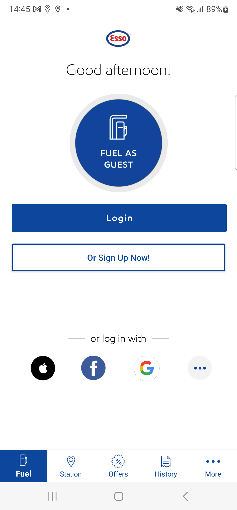PassVerify the user is able to see the updated Esso logo in the "NLID" screenWhen user log out from the app if logged inThen Check for Esso logo on NLIDPassVerify the user is able to see the updated Esso logo in the "NLID" screenWhen user log out from the app if logged inThen Check for Esso logo on NLIDPassVerify that Whether the app is displaying a custom popup with the list of available SSO authentication methodsAnd user taps on the three dots in the NLIDThen user validates the SSO logos in the modal popup in the nlidAnd User validates modal popup titleThen the user taps on the close button in the modal popupPassVerify that whether app dismiss the broadcast banner on NLID without the user interactionAnd user taps on More button in tab barAnd user taps on fuel iconWhen user verifies the broadcast bannerThen user confirms the banner board is not presentPassVerify that the app should not display the ‘Esso App Feedback’ section on the 'Support Centre' screen. (NLID)And user taps on More button in tab barAnd User looks for Esso App Feedback option -
NativePassword
2:48:49 pm / 00:11:31:831 Pass
NativePassword
06.30.2024 2:48:49 pm 06.30.2024 3:00:21 pm 00:11:31:831 · #test-id=207PassCheck whether the user is able to see the save password prompt while logging in with unsaved login credentialsWhen user log out from the app if logged inWhen user taps on register button from Login screenThen user should be navigated to Manual Register screenThen enter First NameThen enter Last NameThen enter "chibisakkrava.d+" Email addressThen enter passwordAnd confirm passwordThen click the check box for acceptThen click on continue button from NLIDAnd validate the OS Native password pop upWhen user clicks the save password buttonPassCheck whether the user is able to Save password for the registered user (Android Specific)When user log out from the app if logged inWhen user taps on register button from Login screenThen user should be navigated to Manual Register screenThen enter First NameThen enter Last NameThen enter "testesssoapp2021+" Email addressThen enter passwordAnd confirm passwordThen click the check box for acceptThen click on continue button from NLIDWhen user clicks the save password buttonThen App should navigates to Confirm your email address screenPassCheck whether the user is able to Save password for the registered userWhen user log out from the app if logged inWhen user taps on register button from Login screenThen user should be navigated to Manual Register screenThen enter First NameThen enter Last NameThen enter "chibisakkrava.d+" Email addressThen enter passwordAnd confirm passwordThen click the check box for acceptWhen click on the continue button in registration screenAnd validate the OS Native password pop upWhen user clicks the save password buttonThen App should navigates to Confirm your email address screenPassCheck whether the user is able to see the save password prompt while logging in with unsaved login credentialsWhen user log out from the app if logged inWhen user taps on register button from Login screenThen user should be navigated to Manual Register screenThen enter First NameThen enter Last NameThen enter "testesssoapp2021+" Email addressThen enter passwordAnd confirm passwordThen click the check box for acceptThen click on continue button from NLIDAnd validate the OS Native password pop upWhen user clicks the save password buttonPassCheck whether the user is able to Save password for the registered userWhen user log out from the app if logged inWhen user taps on register button from Login screenThen user should be navigated to Manual Register screenThen enter First NameThen enter Last NameThen enter "chibisakkrava.d+" Email addressThen enter passwordAnd confirm passwordThen click the check box for acceptWhen click on the continue button in registration screenAnd validate the OS Native password pop upWhen user clicks the Not now buttonThen App should navigates to Confirm your email address screenPassCheck whether the user is able to view the saved email address on the keyboardWhen user log out from the app if logged inAnd user clicks on Login IconWhen user taps on email tabAnd user checks the suggestions on the keyboardAnd user clicks the mail suggestion from the keyboardThen user validates the password getting displayed -
Offers
3:00:21 pm / 01:09:20:342 Fail
Offers
06.30.2024 3:00:21 pm 06.30.2024 4:09:42 pm 01:09:20:342 · #test-id=362FailLID- Add Nectar Card and verify on Registration flowWhen user log out from the app if logged inWhen user taps on register button from Login screenThen user should be navigated to Manual Register screenThen enter First NameThen enter Last NameThen enter "chibisakkrava.d+" Email addressThen enter passwordAnd confirm passwordThen click the check box for acceptWhen click on continue button from register screenWhen user tap on Skip buttonThen the system should display Skip warning popupWhen user tap on Skip anywayThen app to dismiss the popup and navigate the user to LID after reviewWhen user taps on OffersThen verify user is able to Navigate Offers screenWhen user tap on add nectar button in offers screenThen user is navigated to add nectar screenAnd enter nectar card value "NectarCardAddAndVerify" and tap on next buttonWhen user clicks on Continue button under 'Card Added successfully' alertThen enter "NectarCardAddAndVerify" Nectar card number and passwordstepDefinitions.Hook.afterEachStep(io.cucumber.java.Scenario)8448a50e-f486-4c00-8e0b-36eddf135063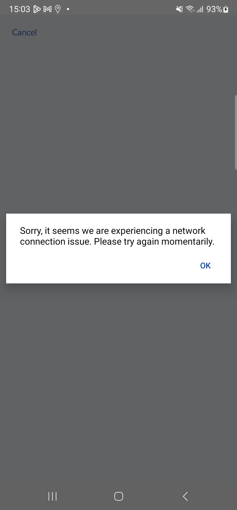Then validate nectar card number and point balance in offers screenStep skippedPassManual User - Verify the Esso app is not displaying the App Assistant in Offer screen (Nectar card added and verified)When user is on NLID screenAnd user taps on OffersThen user validates that the app assistant is not presentPassManual User - Verify the Esso app is not displaying the App Assistant in Offer screen (Nectar card not added)Given user is on NLID screenAnd user taps on More button in tab barWhen user navigates to Account screenAnd delete added nectar card if existsAnd user taps on OffersThen user validates that the app assistant is not presentPassAccount : Account screen UI and Alignment ,Before adding Nectar CardGiven user is on NLID screenAnd user taps on More button in tab barWhen user navigates to Account screenThen tap on add nectar card from account screenThen user is navigated to add nectar screenAnd enter nectar card value "NectarCardAddAndVerify" and tap on next buttonThen user tap on verify laterThen Validate skip click on skip buttonThen validate added nectar card "NectarCardAddAndVerify" in the accountPassManual User - Verify the Esso app is not displaying the App Assistant in Offer screen (Nectar card added but verified)When user is on NLID screenAnd user taps on OffersThen user validates that the app assistant is not presentFailVerify if user is able to see the 'Nectar card added successfully' screen from complete your profile screenWhen user log out from the app if logged inWhen user taps on register button from Login screenThen user should be navigated to Manual Register screenWhen enter First NameAnd enter Last NameAnd enter "chibisakkrava.d+" Email addressAnd enter passwordAnd confirm passwordAnd click the check box for acceptAnd click on continue button from register screenThen App should navigates to Confirm your email address screenAnd user should see details in contextual registration screenWhen user tap on Skip buttonAnd user tap on Skip anywayThen app to dismiss the popup and navigate the user to LID after reviewAnd user taps on the complete profileAnd user clicks on Add nectarAnd user clicks on the get started iconThen user is navigated to add nectar screenAnd enter nectar card value "NectarCardAddAndVerify" and tap on next buttonThen the user validates the nectar card added successfully screenstepDefinitions.Hook.afterEachStep(io.cucumber.java.Scenario)f23c08a5-8a6c-4c26-b143-873b9919f32a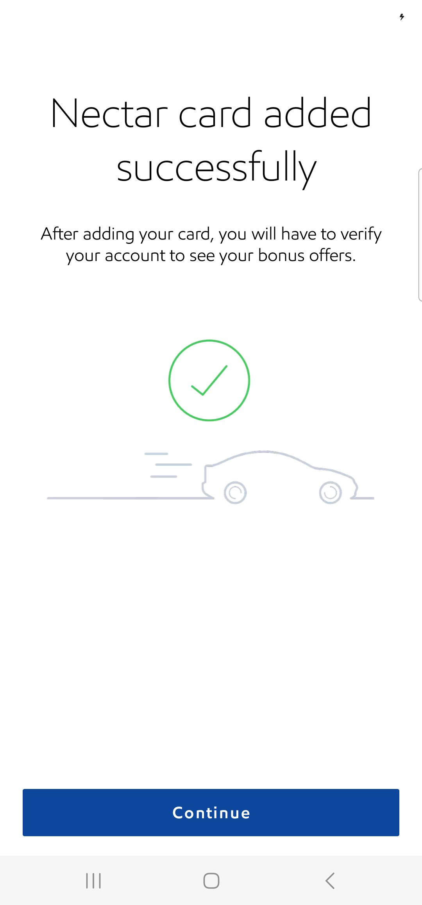FailAccounts - "Add Nectar card" and Verify the CardWhen user log out from the app if logged inAnd user clicks on Login IconAnd I enter "regressioncredentials2" in login detailsAnd user taps login button in login screenGiven user is on NLID screenAnd user taps on More button in tab barWhen user navigates to Account screenAnd delete added nectar card if existsThen tap on add nectar card from account screenThen user is navigated to add nectar screenAnd enter nectar card value "NectarCardAddAndVerify" and tap on next buttonWhen user clicks on Continue button under 'Card Added successfully' alertThen enter "NectarCardAddAndVerify" Nectar card number and passwordstepDefinitions.Hook.afterEachStep(io.cucumber.java.Scenario)89337cd8-aacd-4b9f-89a8-f9450b4a4ad3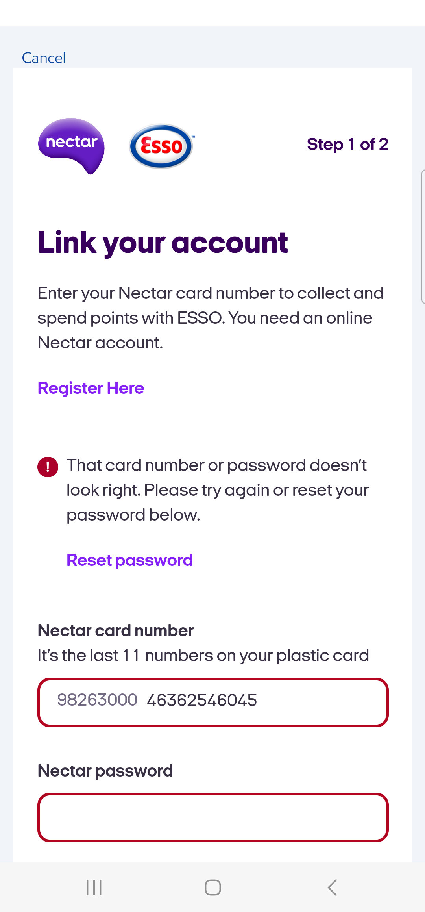And navigate to the Nectar card section from account screenStep skippedThen validate added nectar card "NectarCardAddAndVerify" in the accountStep skippedFailDaisy Ph2 -Sprint 2: Verify the Point balance on offers screenGiven user is on NLID screenThen user taps on OffersThen verify nectar points comma seperator on offers screenstepDefinitions.Hook.afterEachStep(io.cucumber.java.Scenario)55d0fcc8-260b-4b15-a1c4-027c191baa87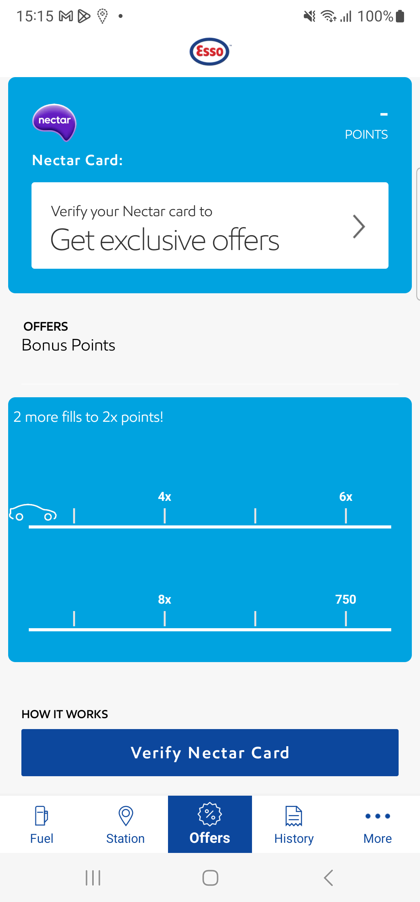PassStation Finder : "Nectar Points" is selected along with one other filters button "APPLY 1 FILTER" should be displayedGiven user is on NLID screenThen user taps on Station FinderWhen user tap on filter iconThen select Nectar Points filterAnd validate apply filter buttonFailEsso Daisy Ph2 : Verify the Nectar points balance and offer banner on LID screenAnd user is on NLID screenThen Verify the Nectar Card points in LID screenstepDefinitions.Hook.afterEachStep(io.cucumber.java.Scenario)fb79ba43-cb7b-4823-a297-8a31612b7f83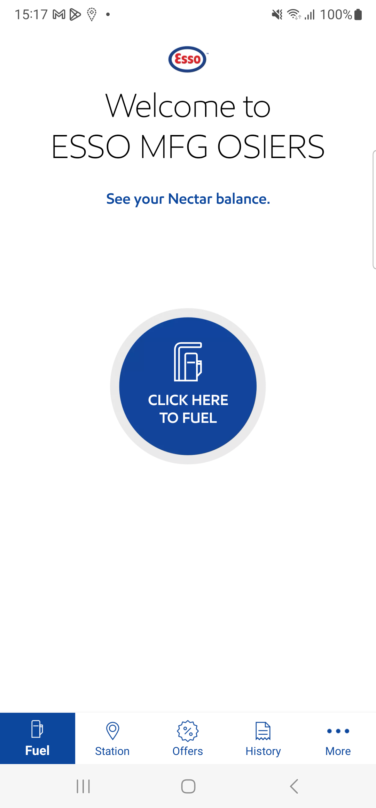PassEsso Daisy Ph2 : Verify the Nectar points balance and offer banner on LID screenAnd user is on NLID screenPassCheck whether User navigates to Offers screen from tab barGiven user is on NLID screenWhen user taps on OffersThen validate nectar card number and point balance in offers screenAnd validate offers displayed in offer screenFailOffers- load to card - Terms & Condition pop up by tapping on T&C linkGiven user is on NLID screenThen user taps on OffersAnd validate offers displayed in offer screenThen tap on view offers buttonstepDefinitions.Hook.afterEachStep(io.cucumber.java.Scenario)5d5f6659-39e8-4cc8-90f5-79778cd0c435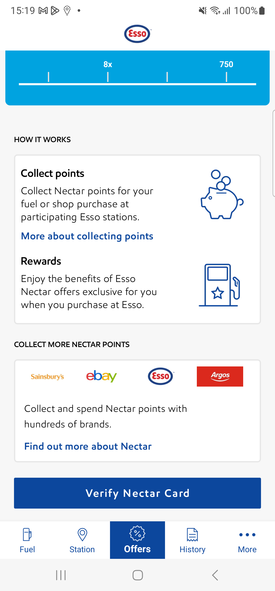And validate offer detailsStep skippedThen tap on Terms & conditions linkStep skippedAnd validate Terms & conditions overlayStep skippedThen close the Terms & conditions overlayStep skippedPassOffers- Load to Card : View the balance point in offers screen 1 When no points are accumulatedGiven user is on NLID screenAnd user taps on More button in tab barWhen user navigates to Account screenAnd delete added nectar card if existsThen user adds a nectar card and taps verify laterThen user taps on OffersThen validate point balance as nill in offers screen when user has no pointsFailVerify the app should be able to go back to the entry point screen when the user selects the “Cancel and return to Esso” or “back/cancel” link. >Transaction complete > Add and verify nectar cardGiven user is on NLID screenAnd user taps on More button in tab barWhen user navigates to Account screenAnd delete added nectar card if existsAnd user taps on fuel iconWhen user taps on start button in LIDAnd user is navigated to Select your pump screenAnd user selects pump number "1" to start fuellingAnd user selects the pump from 'Select your Pump' page and taps on continue buttonAnd user verify the MFA screenAnd user tap on Continue button in MFA screenThen the user is navigated to Confirm payment screenAnd user confirms the paymentThen validate add nectar card button displayed in transaction complete screenAnd tap on the Add Nectar Card button in Transaction complete ScreenAnd verify the Add nectar card screenThen tap on Add now button in Add Nectar Card ScreenAnd enter nectar card value "NectarCardAddAndVerify" and tap on next buttonWhen user clicks on Continue button under 'Card Added successfully' alertWhen tap on 'Cancel and Return to ESSO' link in 'Link your account' ScreenAnd click on Ok button in the modal popup in the Nectar card pageThen user lands on Verify Card Screen and taps on skip buttonThen validate verify nectar card link displayed in transaction complete screenstepDefinitions.Hook.afterEachStep(io.cucumber.java.Scenario)e557af99-5fc6-4983-83c7-12654050bfda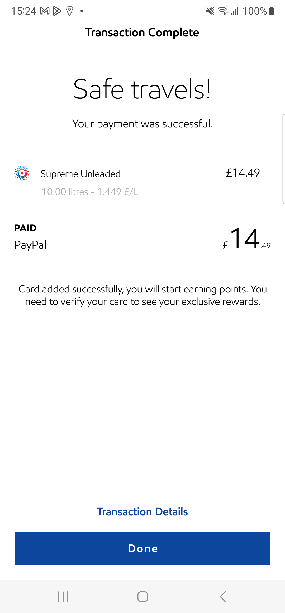PassVerify the app should be able to go back to the entry point screen when the user selects the “Cancel and return to Esso” or “back/cancel” link. >Account screen >Add and verify nectar cardGiven user is on NLID screenAnd user taps on More button in tab barWhen user navigates to Account screenAnd delete added nectar card if existsThen tap on add nectar card from account screenThen user is navigated to add nectar screenAnd enter nectar card value "NectarCardAddAndVerify" and tap on next buttonWhen user clicks on Continue button under 'Card Added successfully' alertWhen tap on 'Cancel and Return to ESSO' link in 'Link your account' ScreenAnd click on Ok button in the modal popup in the Nectar card pageThen user lands on Verify Card Screen and taps on skip buttonThen user verifies the user redirected to Account screenFailVerify the app should be able to go back to the entry point screen when the user selects the “Cancel and return to Esso” or “back/cancel” link. >Transaction complete > Verify Nectar card addedGiven user is on NLID screenWhen user taps on start button in LIDAnd user is navigated to Select your pump screenAnd user selects pump number "2" to start fuellingAnd user selects the pump from 'Select your Pump' page and taps on continue buttonAnd user verify the MFA screenAnd user tap on Continue button in MFA screenThen the user is navigated to Confirm payment screenAnd user confirms the paymentThen validate verify nectar card link displayed in transaction complete screenWhen tap on the Verify Nectar Card link in Transaction complete ScreenWhen user clicks on Continue button under 'Card Added successfully' alertWhen tap on 'Cancel and Return to ESSO' link in 'Link your account' ScreenAnd click on Ok button in the modal popup in the Nectar card pageThen validate verify nectar card link displayed in transaction complete screenstepDefinitions.Hook.afterEachStep(io.cucumber.java.Scenario)6e3fb1fa-8ed3-4bae-9240-c83bf4d8137c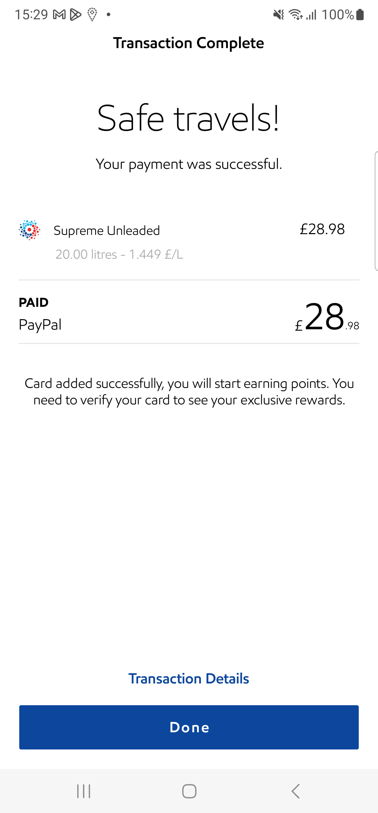FailVerify the app should be able to go back to the entry point screen when the user selects the “Cancel and return to Esso” or “back/cancel” link. >LID > Add and verify nectar cards (promotion message on LID)Given user is on NLID screenAnd user taps on More button in tab barWhen user navigates to Account screenAnd delete added nectar card if existsAnd user taps on fuel iconWhen user tap on learn more link in LID screenThen User is navigated to Add Nectar Card screenWhen click on Get Started button on Add Nectar Card screenThen user is navigated to add nectar screenAnd enter nectar card value "NectarCardAddAndVerify" and tap on next buttonWhen user clicks on Continue button under 'Card Added successfully' alertWhen tap on 'Cancel and Return to ESSO' link in 'Link your account' ScreenAnd click on Ok button in the modal popup in the Nectar card pageThen user lands on Verify Card Screen and taps on skip buttonThen Verify user navigated back to LID screenstepDefinitions.Hook.afterEachStep(io.cucumber.java.Scenario)d785b911-8ead-475d-a6c7-d40bd59c52e4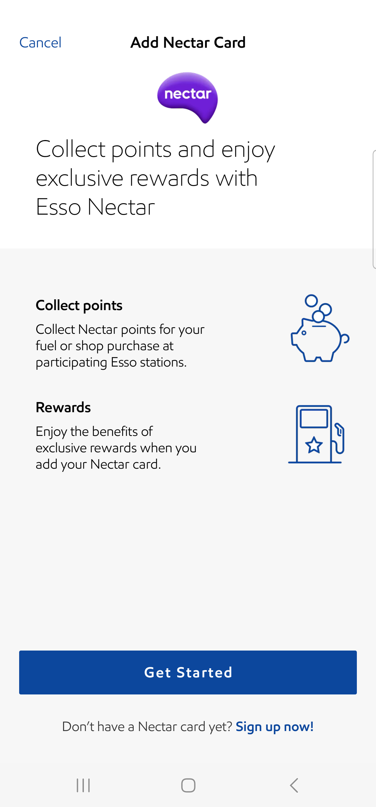FailVerify the app should be able to go back to the entry point screen when the user selects the “Cancel and return to Esso” or “back/cancel” link. >Payment details screen > Add and verify nectar cardGiven user is on NLID screenAnd user taps on More button in tab barWhen user navigates to Account screenAnd delete added nectar card if existsWhen user taps on fuel icon and start fuelling buttonAnd user is navigated to Select your pump screenstepDefinitions.Hook.afterEachStep(io.cucumber.java.Scenario)3ed733b2-0cda-443c-b458-cf357d56087aAnd user selects pump number "1" to start fuellingStep skippedAnd user selects the pump from 'Select your Pump' page and taps on continue buttonStep skippedWhen user tap on Continue button in MFA screenStep skippedThen the user is navigated to Confirm payment screenStep skippedAnd Click on Change payment linkStep skippedAnd user adds the Nectar card details by clicking the Add nectar card in Payment details screenStep skippedThen user is navigated to add nectar screenStep skippedAnd enter nectar card value "NectarCardAddAndVerify" and tap on next buttonStep skippedWhen user clicks on Continue button under 'Card Added successfully' alertStep skippedWhen tap on 'Cancel and Return to ESSO' link in 'Link your account' ScreenStep skippedAnd click on Ok button in the modal popup in the Nectar card pageStep skippedThen user lands on Verify Card Screen and taps on skip buttonStep skippedThen verify if the user lands on Payment Details ScreenStep skippedFailVerify the app should be able to go back to the entry point screen when the user selects the “Cancel and return to Esso” or “back/cancel” link. >LID > Add and verify nectar cards (promotion message on LID)Given user is on NLID screenWhen user taps on fuel iconThen verify whether See your Nectar balance link is displayed on LIDstepDefinitions.Hook.afterEachStep(io.cucumber.java.Scenario)6d178e86-f9f2-4158-9b08-4917137af4aa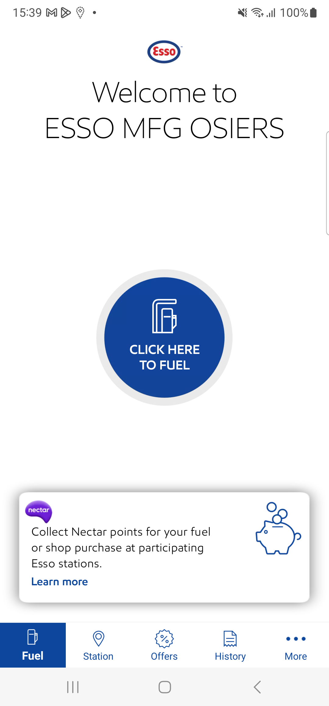And tap on See your Nectar balance LinkStep skippedWhen user clicks on Continue button under 'Card Added successfully' alertStep skippedWhen tap on 'Cancel and Return to ESSO' link in 'Link your account' ScreenStep skippedAnd click on Ok button in the modal popup in the Nectar card pageStep skippedThen user lands on Verify Card Screen and taps on skip buttonStep skippedThen verify whether See your Nectar balance link is displayed on LIDStep skippedFailVerify the app should be able to go back to the entry point screen when the user selects the “Cancel and return to Esso” or “back/cancel” link. >Offer > Nectar card added - VerifyGiven user is on NLID screenWhen user taps on OffersAnd tap on Verify Nectar button in offers ScreenWhen user clicks on Continue button under 'Card Added successfully' alertstepDefinitions.Hook.afterEachStep(io.cucumber.java.Scenario)7b931c70-6a71-4d44-811c-7c2761250b91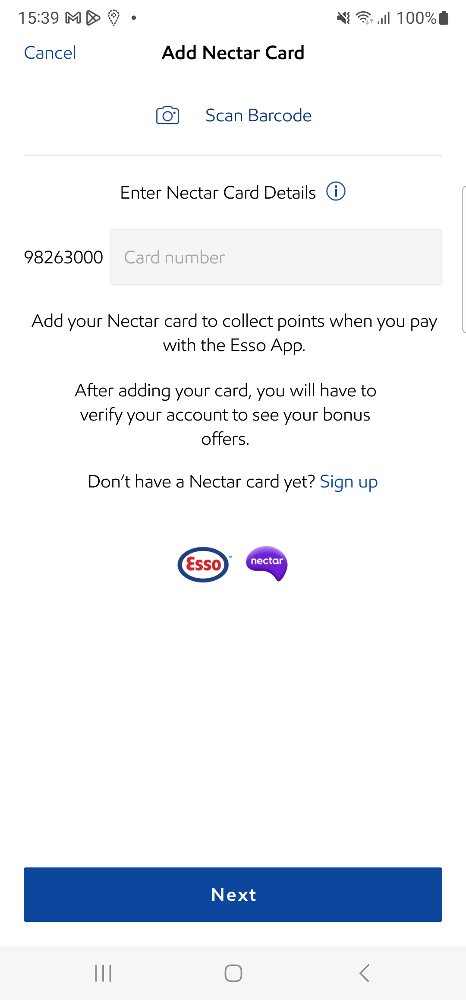When tap on 'Cancel and Return to ESSO' link in 'Link your account' ScreenStep skippedAnd click on Ok button in the modal popup in the Nectar card pageStep skippedThen user Verifies the Nectar card button in the Offers ScreenStep skippedPassVerify the app should be able to go back to the entry point screen when the user selects the “Cancel and return to Esso” or “back/cancel” link. >Offer > Add and verify nectar cardGiven user is on NLID screenAnd user taps on More button in tab barWhen user navigates to Account screenAnd delete added nectar card if existsWhen user taps on OffersWhen user taps on 'Get Exclusive offers' in the offers screenAnd enter nectar card value "NectarCardAddAndVerify" and tap on next buttonWhen user clicks on Continue button under 'Card Added successfully' alertWhen tap on 'Cancel and Return to ESSO' link in 'Link your account' ScreenAnd click on Ok button in the modal popup in the Nectar card pageThen user lands on Verify Card Screen and taps on skip buttonThen user Verifies the Nectar card button in the Offers ScreenFailLID - Add Nectar card (valid nectar card number) from Dashboard screenAnd user is on NLID screenAnd user taps on More button in tab barWhen user navigates to Account screenAnd delete added nectar card if existsAnd user taps on fuel iconAnd user is on NLID screenWhen user tap on learn more link in LID screenThen User is navigated to Add Nectar Card screenWhen click on Get Started button on Add Nectar Card screenThen user is navigated to add nectar screenAnd enter nectar card value "NectarCardAddAndVerify" and tap on next buttonWhen user clicks on Continue button under 'Card Added successfully' alertThen enter "NectarCardAddAndVerify" Nectar card number and passwordstepDefinitions.Hook.afterEachStep(io.cucumber.java.Scenario)8be70fb5-e2bd-4706-8e49-0da0e4a4c43fAnd user is on NLID screenStep skippedAnd user taps on More button in tab barStep skippedWhen user navigates to Account screenStep skippedFailOffers UI and alignment for all the New offer screenAnd user is on NLID screenAnd user taps on More button in tab barWhen user navigates to Account screenAnd navigate to the Nectar card sectionAnd Delete the Nectar card if it is presentAnd user taps on fuel iconWhen user taps on OffersstepDefinitions.Hook.afterEachStep(io.cucumber.java.Scenario)a8795b4b-3569-4549-9548-9ff53ae6202d Then verify user is able to Navigate Offers screenStep skippedAnd user validates offers screenStep skippedWhen user taps on "More about collecting points" linkStep skippedAnd user sees how to collect points overlayStep skippedWhen user tap on add nectar button in offers screenStep skippedThen user is navigated to add nectar screenStep skippedAnd enter nectar card value "NectarCardAddAndVerify" and tap on next buttonStep skippedThen user verifies the Nectar Added success pop-up and skips verificationStep skippedWhen Validate skip click on skip buttonStep skippedAnd verify if the user is navigated to Verify Offers screenStep skippedPassDo you have a Nectar card should not be displayed and user navigate to 'Add Nectar Card'Given user is on NLID screenAnd user taps on More button in tab barWhen user navigates to Account screenAnd delete added nectar card if existsWhen user taps on OffersThen verify user is able to Navigate Offers screenWhen user tap on add nectar button in offers screenThen user is navigated to add nectar screenPassDaisy Phase 2 Esso app : From LID add nectar card and verify the nectar cardGiven user is on NLID screenAnd user taps on More button in tab barWhen user navigates to Account screenAnd user verifies Add Nectar card sectionThen Add and verify Nectar cardFailGoogle Sign In Registration->Verify whether the app marks the profile completion task 'Add Nectar Card' as complete when the user skip/cancel adding the Nectar card from the Complete Your Profile->Add Nectar Card launch screenGiven user log out from the app if logged inAnd user taps on "Google" icon in the NLIDAnd I enter SSO login details for "Google"When user is on NLID screenAnd user taps on More button in tab barstepDefinitions.Hook.afterEachStep(io.cucumber.java.Scenario)ff8453d5-9e15-43bd-9dd2-71ecacfdb049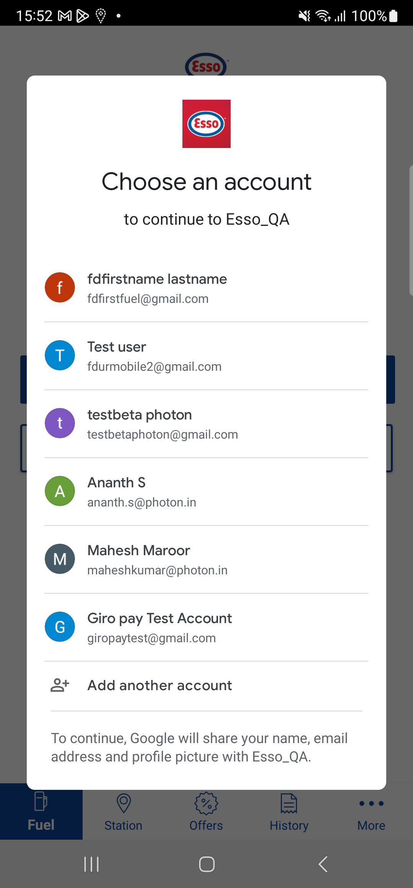When user navigates to Account screenStep skippedAnd user verifies the Account title in the account sectionStep skippedAnd user taps on delete your account in account screenStep skippedAnd user taps on delete in delete your account screenStep skippedAnd tap on Ok ButtonStep skippedThen user verifies the app redirects back to NLIDStep skippedAnd user taps on "Google" icon in the NLIDStep skippedAnd I enter SSO login details for "Google"Step skippedThen user registers the SSO user by accepting the terms and conditions screenStep skippedWhen user is on NLID screenStep skippedAnd user taps on the complete profileStep skippedAnd user clicks on Add nectarStep skippedAnd user taps on cancel button in the add nectar card launch screen from Profile completionStep skippedThen user clicks on Add nectarStep skippedAnd user verifies the completed pop up message and clicks ok buttonStep skippedAnd user taps on back and navigates to LIDStep skippedThen user verifies the progress in the LIDStep skippedFailGoogle sign in Registration->Verify whether the app marks the profile completion task 'Add Nectar Card' as complete when the user skip adding the Nectar card from the Complete Your Profile > Add Nectar Card launch screen > Add Nectar Card screenGiven user is on NLID screenAnd user taps on More button in tab barstepDefinitions.Hook.afterEachStep(io.cucumber.java.Scenario)fa73dff6-8698-4c51-9005-26fc44c98138When user navigates to Account screenStep skippedAnd user verifies the Account title in the account sectionStep skippedAnd user taps on delete your account in account screenStep skippedAnd user taps on delete in delete your account screenStep skippedAnd tap on Ok ButtonStep skippedThen user verifies the app redirects back to NLIDStep skippedAnd user taps on "Google" icon in the NLIDStep skippedAnd I enter SSO login details for "Google"Step skippedThen user registers the SSO user by accepting the terms and conditions screenStep skippedWhen user is on NLID screenStep skippedAnd user taps on the complete profileStep skippedAnd user clicks on Add nectarStep skippedAnd user clicks on the get started iconStep skippedAnd user taps on cancel button in the add nectar card screen from Profile completionStep skippedAnd user taps on cancel button in the add nectar card launch screen from Profile completionStep skippedThen user clicks on Add nectarStep skippedAnd user verifies the completed pop up message and clicks ok buttonStep skippedAnd user taps on back and navigates to LIDStep skippedThen user verifies the progress in the LIDStep skippedFailGoogle SSO Registration->Verify whether the app marks the profile completion task 'Add Nectar Card' as complete when the user skip adding the Nectar card from Offer Screen >Add Nectar Card screenGiven user is on NLID screenAnd user taps on More button in tab barstepDefinitions.Hook.afterEachStep(io.cucumber.java.Scenario)5dc27cf0-d37d-43d3-b7eb-d1e39a9cbd05When user navigates to Account screenStep skippedAnd user verifies the Account title in the account sectionStep skippedAnd user taps on delete your account in account screenStep skippedAnd user taps on delete in delete your account screenStep skippedAnd tap on Ok ButtonStep skippedThen user verifies the app redirects back to NLIDStep skippedAnd user taps on "Google" icon in the NLIDStep skippedAnd I enter SSO login details for "Google"Step skippedThen user registers the SSO user by accepting the terms and conditions screenStep skippedWhen user is on NLID screenStep skippedAnd user clicks on offer iconStep skippedAnd user clicks Add Nectar Card from offer screenStep skippedAnd user taps on cancel button in the add nectar card screen from Profile completionStep skippedWhen user taps on fuel icon and navigate to LID screenStep skippedAnd user taps on the complete profileStep skippedAnd user clicks on Add nectarStep skippedThen user verifies the completed pop up message and clicks ok buttonStep skippedAnd user taps on back and navigates to LIDStep skippedThen user verifies the progress in the LIDStep skippedFailGoogle Signin Registration->Verify whether the app marks the profile completion task 'Add Nectar Card' as complete when the user skip adding the Nectar card from the Offer screen (Add your Nectar card to get exclusive Offers' link)> Add Nectar Card screenGiven user is on NLID screenAnd user taps on More button in tab barstepDefinitions.Hook.afterEachStep(io.cucumber.java.Scenario)bb07da85-8549-468a-8ffc-13d92b00991e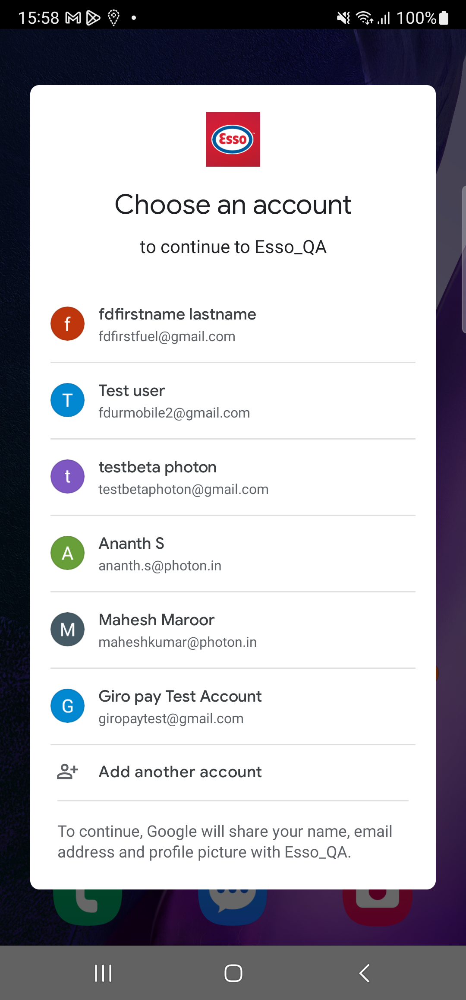When user navigates to Account screenStep skippedAnd user verifies the Account title in the account sectionStep skippedAnd user taps on delete your account in account screenStep skippedAnd user taps on delete in delete your account screenStep skippedAnd tap on Ok ButtonStep skippedThen user verifies the app redirects back to NLIDStep skippedAnd user taps on "Google" icon in the NLIDStep skippedAnd I enter SSO login details for "Google"Step skippedThen user registers the SSO user by accepting the terms and conditions screenStep skippedWhen user is on NLID screenStep skippedAnd user clicks on offer iconStep skippedWhen user taps on 'Get Exclusive offers' in the offers screenStep skippedAnd user taps on cancel button in the add nectar card screen from Profile completionStep skippedWhen user taps on fuel icon and navigate to LID screenStep skippedAnd user taps on the complete profileStep skippedAnd user clicks on Add nectarStep skippedThen user verifies the completed pop up message and clicks ok buttonStep skippedAnd user taps on back and navigates to LIDStep skippedThen user verifies the progress in the LIDStep skippedFailGoogle Sign In Registration->Verify whether the app marks the profile completion task 'Add Nectar Card' as complete when the user skip/cancel adding the Nectar card from the LID->Add Nectar Card launch screenGiven user is on NLID screenAnd user taps on More button in tab barstepDefinitions.Hook.afterEachStep(io.cucumber.java.Scenario)3883fe28-12a1-4722-b9c1-395b58d7c2fdWhen user navigates to Account screenStep skippedAnd user verifies the Account title in the account sectionStep skippedAnd user taps on delete your account in account screenStep skippedAnd user taps on delete in delete your account screenStep skippedAnd tap on Ok ButtonStep skippedThen user verifies the app redirects back to NLIDStep skippedAnd user taps on "Google" icon in the NLIDStep skippedAnd I enter SSO login details for "Google"Step skippedThen user registers the SSO user by accepting the terms and conditions screenStep skippedWhen user is on NLID screenStep skippedAnd user taps on the complete profileStep skippedAnd user taps on add payment methodStep skippedThen user verifies the Add Payment method screenStep skippedWhen user taps on Credit Debit card in Add Payment Method screenStep skippedWhen user is on setup PIN screenStep skippedWhen user enters four digit PINStep skippedThen user tap on continue button in enter PIN screenStep skippedThen tap on ok button and close location copy textStep skippedThen enter name of the cardStep skippedThen enter "5232 0500 0019 0003" card numberStep skippedThen enter expiry dateStep skippedThen enter CVVStep skippedThen enter postal codeStep skippedThen enter address line1Step skippedThen enter Address line2Step skippedThen enter cityStep skippedThen check consent checkboxStep skippedThen user clicks on continue button in Card screenStep skippedWhen user tap done button to navigate verify screen "Payment method added successfully"Step skippedWhen user tap on payment method added successfully screen continue buttonStep skippedAnd user taps on back and navigates to LIDStep skippedAnd user is on NLID screenStep skippedAnd user taps on Add nectar card link in LIDStep skippedAnd user taps on cancel button in the add nectar card launch screen from Profile completionStep skippedAnd user taps on the complete profileStep skippedAnd user clicks on Add nectarStep skippedThen user verifies the completed pop up message and clicks ok buttonStep skippedAnd user taps on back and navigates to LIDStep skippedThen user verifies the progress in the LIDStep skippedFailGoogle Sign In Registration->Verify whether the app marks the profile completion task 'Add Nectar Card'as complete when the user skip adding the Nectar card from the LID > Add Nectar Card launch screen > Add Nectar Card screenGiven user is on NLID screenAnd user taps on More button in tab barstepDefinitions.Hook.afterEachStep(io.cucumber.java.Scenario)00945648-f50a-44c3-9cef-3bf68888b76bWhen user navigates to Account screenStep skippedAnd user verifies the Account title in the account sectionStep skippedAnd user taps on delete your account in account screenStep skippedAnd user taps on delete in delete your account screenStep skippedAnd tap on Ok ButtonStep skippedThen user verifies the app redirects back to NLIDStep skippedAnd user taps on "Google" icon in the NLIDStep skippedAnd I enter SSO login details for "Google"Step skippedThen user registers the SSO user by accepting the terms and conditions screenStep skippedWhen user is on NLID screenStep skippedAnd user taps on the complete profileStep skippedAnd user taps on add payment methodStep skippedThen user verifies the Add Payment method screenStep skippedWhen user taps on Credit Debit card in Add Payment Method screenStep skippedWhen user is on setup PIN screenStep skippedWhen user enters four digit PINStep skippedThen user tap on continue button in enter PIN screenStep skippedThen tap on ok button and close location copy textStep skippedThen enter name of the cardStep skippedThen enter "5232 0500 0019 0003" card numberStep skippedThen enter expiry dateStep skippedThen enter CVVStep skippedThen enter postal codeStep skippedThen enter address line1Step skippedThen enter Address line2Step skippedThen enter cityStep skippedThen check consent checkboxStep skippedThen user clicks on continue button in Card screenStep skippedWhen user tap done button to navigate verify screen "Payment method added successfully"Step skippedWhen user tap on payment method added successfully screen continue buttonStep skippedAnd user taps on back and navigates to LIDStep skippedAnd user is on NLID screenStep skippedAnd user taps on Add nectar card link in LIDStep skippedAnd user clicks on the get started iconStep skippedAnd user taps on cancel button in the add nectar card screen from Profile completionStep skippedAnd user taps on cancel button in the add nectar card launch screen from Profile completionStep skippedAnd user taps on the complete profileStep skippedAnd user clicks on Add nectarStep skippedThen user verifies the completed pop up message and clicks ok buttonStep skippedAnd user taps on back and navigates to LIDStep skippedThen user verifies the progress in the LIDStep skippedFailGoogle Sign In Registration->Verify whether the app marks the profile completion task 'Add Nectar Card' as complete when the user skip adding the Nectar card from the Payment details Screen>Add Nectar Card screenGiven user is on NLID screenAnd user taps on More button in tab barstepDefinitions.Hook.afterEachStep(io.cucumber.java.Scenario)59eb1f67-c160-4c99-8459-c7bc174b48adWhen user navigates to Account screenStep skippedAnd user verifies the Account title in the account sectionStep skippedAnd user taps on delete your account in account screenStep skippedAnd user taps on delete in delete your account screenStep skippedAnd tap on Ok ButtonStep skippedThen user verifies the app redirects back to NLIDStep skippedAnd user taps on "Google" icon in the NLIDStep skippedAnd I enter SSO login details for "Google"Step skippedThen user registers the SSO user by accepting the terms and conditions screenStep skippedWhen user is on NLID screenStep skippedAnd user taps on the complete profileStep skippedAnd user taps on add payment methodStep skippedThen user verifies the Add Payment method screenStep skippedWhen user taps on Credit Debit card in Add Payment Method screenStep skippedWhen user is on setup PIN screenStep skippedWhen user enters four digit PINStep skippedThen user tap on continue button in enter PIN screenStep skippedThen tap on ok button and close location copy textStep skippedThen enter name of the cardStep skippedThen enter "5232 0500 0019 0003" card numberStep skippedThen enter expiry dateStep skippedThen enter CVVStep skippedThen enter postal codeStep skippedThen enter address line1Step skippedThen enter Address line2Step skippedThen enter cityStep skippedThen check consent checkboxStep skippedThen user clicks on continue button in Card screenStep skippedWhen user tap done button to navigate verify screen "Payment method added successfully"Step skippedWhen user tap on payment method added successfully screen continue buttonStep skippedAnd user taps on back and navigates to LIDStep skippedAnd user is on NLID screenStep skippedWhen user taps on fuel icon and start fuelling buttonStep skippedAnd user is navigated to Select your pump screenStep skippedAnd user selects pump number "1" to start fuellingStep skippedAnd user selects the pump from 'Select your Pump' page and taps on continue buttonStep skippedWhen user tap on Continue button in MFA screenStep skippedThen the user is navigated to Confirm payment screenStep skippedAnd Click on Change payment linkStep skippedAnd user adds the Nectar card details by clicking the Add nectar card in Payment details screenStep skippedThen user is navigated to add nectar screenStep skippedAnd user taps on cancel button in the add nectar card screen from Profile completionStep skippedWhen the user taps on continue button in the Payment Details ScreenStep skippedWhen user taps on cancel button in the bottom of the screenStep skippedThen user validates the cancel transaction popupStep skippedWhen user taps on cancel trasaction button in the cancel transaction popupStep skippedThen user navigates back to the LID screenStep skippedAnd user taps on the complete profileStep skippedAnd user clicks on Add nectarStep skippedThen user verifies the completed pop up message and clicks ok buttonStep skippedAnd user taps on back and navigates to LIDStep skippedThen user verifies the progress in the LIDStep skippedFailGoogle Sign in Registration->Verify whether the app marks the profile completion task 'Add Nectar Card' as complete when the user skip adding the Nectar card from the Transaction Complete screen > Do you have a Nectar Card?->Add Nectar Card screenGiven user is on NLID screenAnd user taps on More button in tab barstepDefinitions.Hook.afterEachStep(io.cucumber.java.Scenario)26354c3d-c88f-4a50-a22f-dd90d065eeacWhen user navigates to Account screenStep skippedAnd user verifies the Account title in the account sectionStep skippedAnd user taps on delete your account in account screenStep skippedAnd user taps on delete in delete your account screenStep skippedAnd tap on Ok ButtonStep skippedThen user verifies the app redirects back to NLIDStep skippedAnd user taps on "Google" icon in the NLIDStep skippedAnd I enter SSO login details for "Google"Step skippedThen user registers the SSO user by accepting the terms and conditions screenStep skippedWhen user is on NLID screenStep skippedAnd user taps on the complete profileStep skippedAnd user taps on add payment methodStep skippedThen user verifies the Add Payment method screenStep skippedWhen user taps on Credit Debit card in Add Payment Method screenStep skippedWhen user is on setup PIN screenStep skippedWhen user enters four digit PINStep skippedThen user tap on continue button in enter PIN screenStep skippedThen tap on ok button and close location copy textStep skippedThen enter name of the cardStep skippedThen enter "5232 0500 0019 0003" card numberStep skippedThen enter expiry dateStep skippedThen enter CVVStep skippedThen enter postal codeStep skippedThen enter address line1Step skippedThen enter Address line2Step skippedThen enter cityStep skippedThen check consent checkboxStep skippedThen user clicks on continue button in Card screenStep skippedWhen user tap done button to navigate verify screen "Payment method added successfully"Step skippedWhen user tap on payment method added successfully screen continue buttonStep skippedAnd user taps on back and navigates to LIDStep skippedAnd user is on NLID screenStep skippedWhen user taps on fuel icon and start fuelling buttonStep skippedAnd user is navigated to Select your pump screenStep skippedAnd user selects pump number "2" to start fuellingStep skippedAnd user selects the pump from 'Select your Pump' page and taps on continue buttonStep skippedWhen user tap on Continue button in MFA screenStep skippedThen the user is navigated to Confirm payment screenStep skippedAnd user confirms card paymentStep skippedThen user land on enter PIN screenStep skippedWhen user enters four digit PINStep skippedThen user tap on continue button in enter PIN screenStep skippedWhen user lands on authorize payment screenStep skippedWhen user lands on card verification screenStep skippedAnd enter valid password and click on submit buttonStep skippedThen user is navigated to start fueling now screenStep skippedAnd then to now fuelingStep skippedAnd user verify the Transaction Complete screenStep skippedThen validate add nectar card button displayed in transaction complete screenStep skippedAnd user adds the Nectar card details by clicking the Add nectar card in Transaction Complete screenStep skippedThen verify the Add nectar card screenStep skippedAnd user taps on cancel button in the Do you have a Nectar card screenStep skippedThen user tap on Done button in Transaction Complete screenStep skippedAnd close the thank you screen if displayedStep skippedAnd user taps on the complete profileStep skippedAnd user clicks on Add nectarStep skippedThen user verifies the completed pop up message and clicks ok buttonStep skippedAnd user taps on back and navigates to LIDStep skippedThen user verifies the progress in the LIDStep skippedFailGoogleSSO Registration->Verify whether the app marks the profile completion task 'Add Nectar Card' as complete when the user skip adding the Nectar card from the Transaction Complete screen > Do you have a Nectar Card?->Add Nectar Card screen>Yes, Add NowGiven user is on NLID screenAnd user taps on More button in tab barstepDefinitions.Hook.afterEachStep(io.cucumber.java.Scenario)4386c5a1-2137-49ed-8050-f5756397acd5When user navigates to Account screenStep skippedAnd user verifies the Account title in the account sectionStep skippedAnd user taps on delete your account in account screenStep skippedAnd user taps on delete in delete your account screenStep skippedAnd tap on Ok ButtonStep skippedThen user verifies the app redirects back to NLIDStep skippedAnd user taps on "Google" icon in the NLIDStep skippedAnd I enter SSO login details for "Google"Step skippedThen user registers the SSO user by accepting the terms and conditions screenStep skippedWhen user is on NLID screenStep skippedAnd user taps on the complete profileStep skippedAnd user taps on add payment methodStep skippedThen user verifies the Add Payment method screenStep skippedWhen user taps on Credit Debit card in Add Payment Method screenStep skippedWhen user is on setup PIN screenStep skippedWhen user enters four digit PINStep skippedThen user tap on continue button in enter PIN screenStep skippedThen tap on ok button and close location copy textStep skippedThen enter name of the cardStep skippedThen enter "5232 0500 0019 0003" card numberStep skippedThen enter expiry dateStep skippedThen enter CVVStep skippedThen enter postal codeStep skippedThen enter address line1Step skippedThen enter Address line2Step skippedThen enter cityStep skippedThen check consent checkboxStep skippedThen user clicks on continue button in Card screenStep skippedWhen user tap done button to navigate verify screen "Payment method added successfully"Step skippedWhen user tap on payment method added successfully screen continue buttonStep skippedAnd user taps on back and navigates to LIDStep skippedAnd user is on NLID screenStep skippedWhen user taps on fuel icon and start fuelling buttonStep skippedAnd user is navigated to Select your pump screenStep skippedAnd user selects pump number "3" to start fuellingStep skippedAnd user selects the pump from 'Select your Pump' page and taps on continue buttonStep skippedWhen user tap on Continue button in MFA screenStep skippedThen the user is navigated to Confirm payment screenStep skippedAnd user confirms card paymentStep skippedThen user land on enter PIN screenStep skippedWhen user enters four digit PINStep skippedThen user tap on continue button in enter PIN screenStep skippedWhen user lands on authorize payment screenStep skippedWhen user lands on card verification screenStep skippedAnd enter valid password and click on submit buttonStep skippedThen user is navigated to start fueling now screenStep skippedAnd then to now fuelingStep skippedAnd user verify the Transaction Complete screenStep skippedThen validate add nectar card button displayed in transaction complete screenStep skippedAnd user adds the Nectar card details by clicking the Add nectar card in Transaction Complete screenStep skippedThen verify the Add nectar card screenStep skippedAnd user taps on Yes add now button from add nectar card screenStep skippedAnd user taps on cancel button in the Do you have a Nectar card screenStep skippedThen user tap on Done button in Transaction Complete screenStep skippedAnd close the thank you screen if displayedStep skippedAnd user taps on the complete profileStep skippedAnd user clicks on Add nectarStep skippedThen user verifies the completed pop up message and clicks ok buttonStep skippedAnd user taps on back and navigates to LIDStep skippedThen user verifies the progress in the LIDStep skippedFailVerify Account screen UI and Alignment ,after adding Nectar CardAnd user log out from the app if logged instepDefinitions.Hook.afterEachStep(io.cucumber.java.Scenario)2c81427e-8bd0-40fb-be32-8c8b26643e81When user taps on register button from Login screenStep skippedThen user should be navigated to Manual Register screenStep skippedThen enter First NameStep skippedThen enter Last NameStep skippedThen enter Email address as "chibisakkrava.d+"Step skippedThen enter passwordStep skippedAnd confirm passwordStep skippedThen click the check box for acceptStep skippedWhen click on continue button from register screenStep skippedWhen user tap on Skip buttonStep skippedThen the system should display Skip warning popupStep skippedWhen user tap on Skip anywayStep skippedThen app to dismiss the popup and navigate the user to LID after reviewStep skippedAnd user taps on More button in tab barStep skippedWhen user navigates to Account screenStep skippedAnd user verifies Add Nectar card sectionStep skippedThen Add and verify Nectar cardStep skipped
Then verify user is able to Navigate Offers screenStep skippedAnd user validates offers screenStep skippedWhen user taps on "More about collecting points" linkStep skippedAnd user sees how to collect points overlayStep skippedWhen user tap on add nectar button in offers screenStep skippedThen user is navigated to add nectar screenStep skippedAnd enter nectar card value "NectarCardAddAndVerify" and tap on next buttonStep skippedThen user verifies the Nectar Added success pop-up and skips verificationStep skippedWhen Validate skip click on skip buttonStep skippedAnd verify if the user is navigated to Verify Offers screenStep skippedPassDo you have a Nectar card should not be displayed and user navigate to 'Add Nectar Card'Given user is on NLID screenAnd user taps on More button in tab barWhen user navigates to Account screenAnd delete added nectar card if existsWhen user taps on OffersThen verify user is able to Navigate Offers screenWhen user tap on add nectar button in offers screenThen user is navigated to add nectar screenPassDaisy Phase 2 Esso app : From LID add nectar card and verify the nectar cardGiven user is on NLID screenAnd user taps on More button in tab barWhen user navigates to Account screenAnd user verifies Add Nectar card sectionThen Add and verify Nectar cardFailGoogle Sign In Registration->Verify whether the app marks the profile completion task 'Add Nectar Card' as complete when the user skip/cancel adding the Nectar card from the Complete Your Profile->Add Nectar Card launch screenGiven user log out from the app if logged inAnd user taps on "Google" icon in the NLIDAnd I enter SSO login details for "Google"When user is on NLID screenAnd user taps on More button in tab barstepDefinitions.Hook.afterEachStep(io.cucumber.java.Scenario)ff8453d5-9e15-43bd-9dd2-71ecacfdb049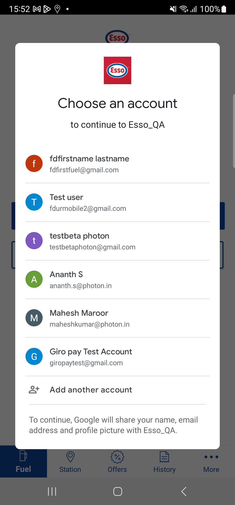When user navigates to Account screenStep skippedAnd user verifies the Account title in the account sectionStep skippedAnd user taps on delete your account in account screenStep skippedAnd user taps on delete in delete your account screenStep skippedAnd tap on Ok ButtonStep skippedThen user verifies the app redirects back to NLIDStep skippedAnd user taps on "Google" icon in the NLIDStep skippedAnd I enter SSO login details for "Google"Step skippedThen user registers the SSO user by accepting the terms and conditions screenStep skippedWhen user is on NLID screenStep skippedAnd user taps on the complete profileStep skippedAnd user clicks on Add nectarStep skippedAnd user taps on cancel button in the add nectar card launch screen from Profile completionStep skippedThen user clicks on Add nectarStep skippedAnd user verifies the completed pop up message and clicks ok buttonStep skippedAnd user taps on back and navigates to LIDStep skippedThen user verifies the progress in the LIDStep skippedFailGoogle sign in Registration->Verify whether the app marks the profile completion task 'Add Nectar Card' as complete when the user skip adding the Nectar card from the Complete Your Profile > Add Nectar Card launch screen > Add Nectar Card screenGiven user is on NLID screenAnd user taps on More button in tab barstepDefinitions.Hook.afterEachStep(io.cucumber.java.Scenario)fa73dff6-8698-4c51-9005-26fc44c98138When user navigates to Account screenStep skippedAnd user verifies the Account title in the account sectionStep skippedAnd user taps on delete your account in account screenStep skippedAnd user taps on delete in delete your account screenStep skippedAnd tap on Ok ButtonStep skippedThen user verifies the app redirects back to NLIDStep skippedAnd user taps on "Google" icon in the NLIDStep skippedAnd I enter SSO login details for "Google"Step skippedThen user registers the SSO user by accepting the terms and conditions screenStep skippedWhen user is on NLID screenStep skippedAnd user taps on the complete profileStep skippedAnd user clicks on Add nectarStep skippedAnd user clicks on the get started iconStep skippedAnd user taps on cancel button in the add nectar card screen from Profile completionStep skippedAnd user taps on cancel button in the add nectar card launch screen from Profile completionStep skippedThen user clicks on Add nectarStep skippedAnd user verifies the completed pop up message and clicks ok buttonStep skippedAnd user taps on back and navigates to LIDStep skippedThen user verifies the progress in the LIDStep skippedFailGoogle SSO Registration->Verify whether the app marks the profile completion task 'Add Nectar Card' as complete when the user skip adding the Nectar card from Offer Screen >Add Nectar Card screenGiven user is on NLID screenAnd user taps on More button in tab barstepDefinitions.Hook.afterEachStep(io.cucumber.java.Scenario)5dc27cf0-d37d-43d3-b7eb-d1e39a9cbd05When user navigates to Account screenStep skippedAnd user verifies the Account title in the account sectionStep skippedAnd user taps on delete your account in account screenStep skippedAnd user taps on delete in delete your account screenStep skippedAnd tap on Ok ButtonStep skippedThen user verifies the app redirects back to NLIDStep skippedAnd user taps on "Google" icon in the NLIDStep skippedAnd I enter SSO login details for "Google"Step skippedThen user registers the SSO user by accepting the terms and conditions screenStep skippedWhen user is on NLID screenStep skippedAnd user clicks on offer iconStep skippedAnd user clicks Add Nectar Card from offer screenStep skippedAnd user taps on cancel button in the add nectar card screen from Profile completionStep skippedWhen user taps on fuel icon and navigate to LID screenStep skippedAnd user taps on the complete profileStep skippedAnd user clicks on Add nectarStep skippedThen user verifies the completed pop up message and clicks ok buttonStep skippedAnd user taps on back and navigates to LIDStep skippedThen user verifies the progress in the LIDStep skippedFailGoogle Signin Registration->Verify whether the app marks the profile completion task 'Add Nectar Card' as complete when the user skip adding the Nectar card from the Offer screen (Add your Nectar card to get exclusive Offers' link)> Add Nectar Card screenGiven user is on NLID screenAnd user taps on More button in tab barstepDefinitions.Hook.afterEachStep(io.cucumber.java.Scenario)bb07da85-8549-468a-8ffc-13d92b00991e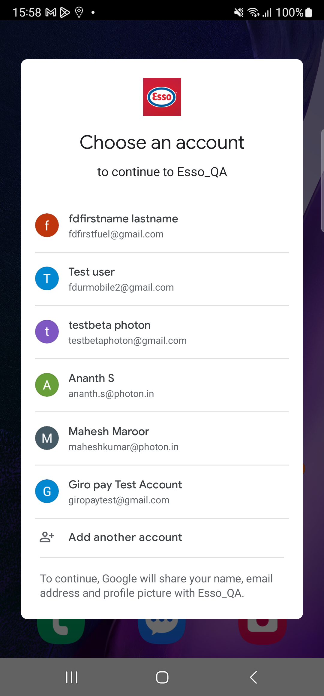When user navigates to Account screenStep skippedAnd user verifies the Account title in the account sectionStep skippedAnd user taps on delete your account in account screenStep skippedAnd user taps on delete in delete your account screenStep skippedAnd tap on Ok ButtonStep skippedThen user verifies the app redirects back to NLIDStep skippedAnd user taps on "Google" icon in the NLIDStep skippedAnd I enter SSO login details for "Google"Step skippedThen user registers the SSO user by accepting the terms and conditions screenStep skippedWhen user is on NLID screenStep skippedAnd user clicks on offer iconStep skippedWhen user taps on 'Get Exclusive offers' in the offers screenStep skippedAnd user taps on cancel button in the add nectar card screen from Profile completionStep skippedWhen user taps on fuel icon and navigate to LID screenStep skippedAnd user taps on the complete profileStep skippedAnd user clicks on Add nectarStep skippedThen user verifies the completed pop up message and clicks ok buttonStep skippedAnd user taps on back and navigates to LIDStep skippedThen user verifies the progress in the LIDStep skippedFailGoogle Sign In Registration->Verify whether the app marks the profile completion task 'Add Nectar Card' as complete when the user skip/cancel adding the Nectar card from the LID->Add Nectar Card launch screenGiven user is on NLID screenAnd user taps on More button in tab barstepDefinitions.Hook.afterEachStep(io.cucumber.java.Scenario)3883fe28-12a1-4722-b9c1-395b58d7c2fdWhen user navigates to Account screenStep skippedAnd user verifies the Account title in the account sectionStep skippedAnd user taps on delete your account in account screenStep skippedAnd user taps on delete in delete your account screenStep skippedAnd tap on Ok ButtonStep skippedThen user verifies the app redirects back to NLIDStep skippedAnd user taps on "Google" icon in the NLIDStep skippedAnd I enter SSO login details for "Google"Step skippedThen user registers the SSO user by accepting the terms and conditions screenStep skippedWhen user is on NLID screenStep skippedAnd user taps on the complete profileStep skippedAnd user taps on add payment methodStep skippedThen user verifies the Add Payment method screenStep skippedWhen user taps on Credit Debit card in Add Payment Method screenStep skippedWhen user is on setup PIN screenStep skippedWhen user enters four digit PINStep skippedThen user tap on continue button in enter PIN screenStep skippedThen tap on ok button and close location copy textStep skippedThen enter name of the cardStep skippedThen enter "5232 0500 0019 0003" card numberStep skippedThen enter expiry dateStep skippedThen enter CVVStep skippedThen enter postal codeStep skippedThen enter address line1Step skippedThen enter Address line2Step skippedThen enter cityStep skippedThen check consent checkboxStep skippedThen user clicks on continue button in Card screenStep skippedWhen user tap done button to navigate verify screen "Payment method added successfully"Step skippedWhen user tap on payment method added successfully screen continue buttonStep skippedAnd user taps on back and navigates to LIDStep skippedAnd user is on NLID screenStep skippedAnd user taps on Add nectar card link in LIDStep skippedAnd user taps on cancel button in the add nectar card launch screen from Profile completionStep skippedAnd user taps on the complete profileStep skippedAnd user clicks on Add nectarStep skippedThen user verifies the completed pop up message and clicks ok buttonStep skippedAnd user taps on back and navigates to LIDStep skippedThen user verifies the progress in the LIDStep skippedFailGoogle Sign In Registration->Verify whether the app marks the profile completion task 'Add Nectar Card'as complete when the user skip adding the Nectar card from the LID > Add Nectar Card launch screen > Add Nectar Card screenGiven user is on NLID screenAnd user taps on More button in tab barstepDefinitions.Hook.afterEachStep(io.cucumber.java.Scenario)00945648-f50a-44c3-9cef-3bf68888b76bWhen user navigates to Account screenStep skippedAnd user verifies the Account title in the account sectionStep skippedAnd user taps on delete your account in account screenStep skippedAnd user taps on delete in delete your account screenStep skippedAnd tap on Ok ButtonStep skippedThen user verifies the app redirects back to NLIDStep skippedAnd user taps on "Google" icon in the NLIDStep skippedAnd I enter SSO login details for "Google"Step skippedThen user registers the SSO user by accepting the terms and conditions screenStep skippedWhen user is on NLID screenStep skippedAnd user taps on the complete profileStep skippedAnd user taps on add payment methodStep skippedThen user verifies the Add Payment method screenStep skippedWhen user taps on Credit Debit card in Add Payment Method screenStep skippedWhen user is on setup PIN screenStep skippedWhen user enters four digit PINStep skippedThen user tap on continue button in enter PIN screenStep skippedThen tap on ok button and close location copy textStep skippedThen enter name of the cardStep skippedThen enter "5232 0500 0019 0003" card numberStep skippedThen enter expiry dateStep skippedThen enter CVVStep skippedThen enter postal codeStep skippedThen enter address line1Step skippedThen enter Address line2Step skippedThen enter cityStep skippedThen check consent checkboxStep skippedThen user clicks on continue button in Card screenStep skippedWhen user tap done button to navigate verify screen "Payment method added successfully"Step skippedWhen user tap on payment method added successfully screen continue buttonStep skippedAnd user taps on back and navigates to LIDStep skippedAnd user is on NLID screenStep skippedAnd user taps on Add nectar card link in LIDStep skippedAnd user clicks on the get started iconStep skippedAnd user taps on cancel button in the add nectar card screen from Profile completionStep skippedAnd user taps on cancel button in the add nectar card launch screen from Profile completionStep skippedAnd user taps on the complete profileStep skippedAnd user clicks on Add nectarStep skippedThen user verifies the completed pop up message and clicks ok buttonStep skippedAnd user taps on back and navigates to LIDStep skippedThen user verifies the progress in the LIDStep skippedFailGoogle Sign In Registration->Verify whether the app marks the profile completion task 'Add Nectar Card' as complete when the user skip adding the Nectar card from the Payment details Screen>Add Nectar Card screenGiven user is on NLID screenAnd user taps on More button in tab barstepDefinitions.Hook.afterEachStep(io.cucumber.java.Scenario)59eb1f67-c160-4c99-8459-c7bc174b48adWhen user navigates to Account screenStep skippedAnd user verifies the Account title in the account sectionStep skippedAnd user taps on delete your account in account screenStep skippedAnd user taps on delete in delete your account screenStep skippedAnd tap on Ok ButtonStep skippedThen user verifies the app redirects back to NLIDStep skippedAnd user taps on "Google" icon in the NLIDStep skippedAnd I enter SSO login details for "Google"Step skippedThen user registers the SSO user by accepting the terms and conditions screenStep skippedWhen user is on NLID screenStep skippedAnd user taps on the complete profileStep skippedAnd user taps on add payment methodStep skippedThen user verifies the Add Payment method screenStep skippedWhen user taps on Credit Debit card in Add Payment Method screenStep skippedWhen user is on setup PIN screenStep skippedWhen user enters four digit PINStep skippedThen user tap on continue button in enter PIN screenStep skippedThen tap on ok button and close location copy textStep skippedThen enter name of the cardStep skippedThen enter "5232 0500 0019 0003" card numberStep skippedThen enter expiry dateStep skippedThen enter CVVStep skippedThen enter postal codeStep skippedThen enter address line1Step skippedThen enter Address line2Step skippedThen enter cityStep skippedThen check consent checkboxStep skippedThen user clicks on continue button in Card screenStep skippedWhen user tap done button to navigate verify screen "Payment method added successfully"Step skippedWhen user tap on payment method added successfully screen continue buttonStep skippedAnd user taps on back and navigates to LIDStep skippedAnd user is on NLID screenStep skippedWhen user taps on fuel icon and start fuelling buttonStep skippedAnd user is navigated to Select your pump screenStep skippedAnd user selects pump number "1" to start fuellingStep skippedAnd user selects the pump from 'Select your Pump' page and taps on continue buttonStep skippedWhen user tap on Continue button in MFA screenStep skippedThen the user is navigated to Confirm payment screenStep skippedAnd Click on Change payment linkStep skippedAnd user adds the Nectar card details by clicking the Add nectar card in Payment details screenStep skippedThen user is navigated to add nectar screenStep skippedAnd user taps on cancel button in the add nectar card screen from Profile completionStep skippedWhen the user taps on continue button in the Payment Details ScreenStep skippedWhen user taps on cancel button in the bottom of the screenStep skippedThen user validates the cancel transaction popupStep skippedWhen user taps on cancel trasaction button in the cancel transaction popupStep skippedThen user navigates back to the LID screenStep skippedAnd user taps on the complete profileStep skippedAnd user clicks on Add nectarStep skippedThen user verifies the completed pop up message and clicks ok buttonStep skippedAnd user taps on back and navigates to LIDStep skippedThen user verifies the progress in the LIDStep skippedFailGoogle Sign in Registration->Verify whether the app marks the profile completion task 'Add Nectar Card' as complete when the user skip adding the Nectar card from the Transaction Complete screen > Do you have a Nectar Card?->Add Nectar Card screenGiven user is on NLID screenAnd user taps on More button in tab barstepDefinitions.Hook.afterEachStep(io.cucumber.java.Scenario)26354c3d-c88f-4a50-a22f-dd90d065eeacWhen user navigates to Account screenStep skippedAnd user verifies the Account title in the account sectionStep skippedAnd user taps on delete your account in account screenStep skippedAnd user taps on delete in delete your account screenStep skippedAnd tap on Ok ButtonStep skippedThen user verifies the app redirects back to NLIDStep skippedAnd user taps on "Google" icon in the NLIDStep skippedAnd I enter SSO login details for "Google"Step skippedThen user registers the SSO user by accepting the terms and conditions screenStep skippedWhen user is on NLID screenStep skippedAnd user taps on the complete profileStep skippedAnd user taps on add payment methodStep skippedThen user verifies the Add Payment method screenStep skippedWhen user taps on Credit Debit card in Add Payment Method screenStep skippedWhen user is on setup PIN screenStep skippedWhen user enters four digit PINStep skippedThen user tap on continue button in enter PIN screenStep skippedThen tap on ok button and close location copy textStep skippedThen enter name of the cardStep skippedThen enter "5232 0500 0019 0003" card numberStep skippedThen enter expiry dateStep skippedThen enter CVVStep skippedThen enter postal codeStep skippedThen enter address line1Step skippedThen enter Address line2Step skippedThen enter cityStep skippedThen check consent checkboxStep skippedThen user clicks on continue button in Card screenStep skippedWhen user tap done button to navigate verify screen "Payment method added successfully"Step skippedWhen user tap on payment method added successfully screen continue buttonStep skippedAnd user taps on back and navigates to LIDStep skippedAnd user is on NLID screenStep skippedWhen user taps on fuel icon and start fuelling buttonStep skippedAnd user is navigated to Select your pump screenStep skippedAnd user selects pump number "2" to start fuellingStep skippedAnd user selects the pump from 'Select your Pump' page and taps on continue buttonStep skippedWhen user tap on Continue button in MFA screenStep skippedThen the user is navigated to Confirm payment screenStep skippedAnd user confirms card paymentStep skippedThen user land on enter PIN screenStep skippedWhen user enters four digit PINStep skippedThen user tap on continue button in enter PIN screenStep skippedWhen user lands on authorize payment screenStep skippedWhen user lands on card verification screenStep skippedAnd enter valid password and click on submit buttonStep skippedThen user is navigated to start fueling now screenStep skippedAnd then to now fuelingStep skippedAnd user verify the Transaction Complete screenStep skippedThen validate add nectar card button displayed in transaction complete screenStep skippedAnd user adds the Nectar card details by clicking the Add nectar card in Transaction Complete screenStep skippedThen verify the Add nectar card screenStep skippedAnd user taps on cancel button in the Do you have a Nectar card screenStep skippedThen user tap on Done button in Transaction Complete screenStep skippedAnd close the thank you screen if displayedStep skippedAnd user taps on the complete profileStep skippedAnd user clicks on Add nectarStep skippedThen user verifies the completed pop up message and clicks ok buttonStep skippedAnd user taps on back and navigates to LIDStep skippedThen user verifies the progress in the LIDStep skippedFailGoogleSSO Registration->Verify whether the app marks the profile completion task 'Add Nectar Card' as complete when the user skip adding the Nectar card from the Transaction Complete screen > Do you have a Nectar Card?->Add Nectar Card screen>Yes, Add NowGiven user is on NLID screenAnd user taps on More button in tab barstepDefinitions.Hook.afterEachStep(io.cucumber.java.Scenario)4386c5a1-2137-49ed-8050-f5756397acd5When user navigates to Account screenStep skippedAnd user verifies the Account title in the account sectionStep skippedAnd user taps on delete your account in account screenStep skippedAnd user taps on delete in delete your account screenStep skippedAnd tap on Ok ButtonStep skippedThen user verifies the app redirects back to NLIDStep skippedAnd user taps on "Google" icon in the NLIDStep skippedAnd I enter SSO login details for "Google"Step skippedThen user registers the SSO user by accepting the terms and conditions screenStep skippedWhen user is on NLID screenStep skippedAnd user taps on the complete profileStep skippedAnd user taps on add payment methodStep skippedThen user verifies the Add Payment method screenStep skippedWhen user taps on Credit Debit card in Add Payment Method screenStep skippedWhen user is on setup PIN screenStep skippedWhen user enters four digit PINStep skippedThen user tap on continue button in enter PIN screenStep skippedThen tap on ok button and close location copy textStep skippedThen enter name of the cardStep skippedThen enter "5232 0500 0019 0003" card numberStep skippedThen enter expiry dateStep skippedThen enter CVVStep skippedThen enter postal codeStep skippedThen enter address line1Step skippedThen enter Address line2Step skippedThen enter cityStep skippedThen check consent checkboxStep skippedThen user clicks on continue button in Card screenStep skippedWhen user tap done button to navigate verify screen "Payment method added successfully"Step skippedWhen user tap on payment method added successfully screen continue buttonStep skippedAnd user taps on back and navigates to LIDStep skippedAnd user is on NLID screenStep skippedWhen user taps on fuel icon and start fuelling buttonStep skippedAnd user is navigated to Select your pump screenStep skippedAnd user selects pump number "3" to start fuellingStep skippedAnd user selects the pump from 'Select your Pump' page and taps on continue buttonStep skippedWhen user tap on Continue button in MFA screenStep skippedThen the user is navigated to Confirm payment screenStep skippedAnd user confirms card paymentStep skippedThen user land on enter PIN screenStep skippedWhen user enters four digit PINStep skippedThen user tap on continue button in enter PIN screenStep skippedWhen user lands on authorize payment screenStep skippedWhen user lands on card verification screenStep skippedAnd enter valid password and click on submit buttonStep skippedThen user is navigated to start fueling now screenStep skippedAnd then to now fuelingStep skippedAnd user verify the Transaction Complete screenStep skippedThen validate add nectar card button displayed in transaction complete screenStep skippedAnd user adds the Nectar card details by clicking the Add nectar card in Transaction Complete screenStep skippedThen verify the Add nectar card screenStep skippedAnd user taps on Yes add now button from add nectar card screenStep skippedAnd user taps on cancel button in the Do you have a Nectar card screenStep skippedThen user tap on Done button in Transaction Complete screenStep skippedAnd close the thank you screen if displayedStep skippedAnd user taps on the complete profileStep skippedAnd user clicks on Add nectarStep skippedThen user verifies the completed pop up message and clicks ok buttonStep skippedAnd user taps on back and navigates to LIDStep skippedThen user verifies the progress in the LIDStep skippedFailVerify Account screen UI and Alignment ,after adding Nectar CardAnd user log out from the app if logged instepDefinitions.Hook.afterEachStep(io.cucumber.java.Scenario)2c81427e-8bd0-40fb-be32-8c8b26643e81When user taps on register button from Login screenStep skippedThen user should be navigated to Manual Register screenStep skippedThen enter First NameStep skippedThen enter Last NameStep skippedThen enter Email address as "chibisakkrava.d+"Step skippedThen enter passwordStep skippedAnd confirm passwordStep skippedThen click the check box for acceptStep skippedWhen click on continue button from register screenStep skippedWhen user tap on Skip buttonStep skippedThen the system should display Skip warning popupStep skippedWhen user tap on Skip anywayStep skippedThen app to dismiss the popup and navigate the user to LID after reviewStep skippedAnd user taps on More button in tab barStep skippedWhen user navigates to Account screenStep skippedAnd user verifies Add Nectar card sectionStep skippedThen Add and verify Nectar cardStep skipped -
PayOutside
4:09:42 pm / 00:43:27:685 Fail
PayOutside
06.30.2024 4:09:42 pm 06.30.2024 4:53:09 pm 00:43:27:685 · #test-id=1,733FailSprint 2 - Payoutside : Verify Transaction Complete screen for "Added nectar card.. " messageGiven user log out from the app if logged instepDefinitions.Hook.afterEachStep(io.cucumber.java.Scenario)b5971930-63b8-4399-a97f-182c0392804eAnd user clicks on Login IconStep skippedWhen I enter "FrictEssoPsword" in login detailsStep skippedAnd user taps login button in login screenStep skippedAnd user is on NLID screenStep skippedAnd user taps on More button in tab barStep skippedWhen user navigates to Account screenStep skippedAnd delete added nectar card if existsStep skippedWhen user taps on fuel icon and start fuelling buttonStep skippedAnd user is navigated to Select your pump screenStep skippedAnd user selects pump number "1" to start fuellingStep skippedAnd user selects the pump from 'Select your Pump' page and taps on continue buttonStep skippedWhen user tap on Continue button in MFA screenStep skippedThen the user is navigated to Confirm payment screenStep skippedAnd user confirms card paymentStep skippedThen user land on enter PIN screenStep skippedWhen user enters four digit PINStep skippedThen user tap on continue button in enter PIN screenStep skippedWhen user lands on card verification screenStep skippedAnd enter valid password and click on submit buttonStep skippedThen user is navigated to start fueling now screenStep skippedAnd then to now fuelingStep skippedAnd user verify the Transaction Complete screenStep skippedThen validate add nectar card button displayed in transaction complete screenStep skippedAnd user adds the Nectar card details by clicking the Add nectar card in Transaction Complete screenStep skippedThen user is navigated to add nectar screenStep skippedAnd enter nectar card value "NectarCardAddAndVerify" and tap on next buttonStep skippedWhen user clicks on Verify Later button under 'Card Added successfully' alertStep skippedThen verify if the user is in the Transaction Complete Screen with the context to verify the nectar cardStep skippedThen user tap on Done button in Transaction Complete screenStep skippedAnd close the thank you screen if displayedStep skippedFailTransaction Complete Screen Displays Verify your Nectar card to get exclusive Esso rewards when Card is not verified and card is verifiedAnd user is on NLID screenWhen user taps on start button in LIDstepDefinitions.Hook.afterEachStep(io.cucumber.java.Scenario)641788e1-dfcc-455e-aaf8-38dfd8961f6eAnd user is navigated to Select your pump screenStep skippedAnd user selects pump number "2" to start fuellingStep skippedAnd user selects the pump from 'Select your Pump' page and taps on continue buttonStep skippedWhen user tap on Continue button in MFA screenStep skippedThen the user is navigated to Confirm payment screenStep skippedAnd user confirms card paymentStep skippedThen user land on enter PIN screenStep skippedWhen user enters four digit PINStep skippedThen user tap on continue button in enter PIN screenStep skippedWhen user lands on authorize payment screenStep skippedWhen user lands on card verification screenStep skippedAnd enter valid password and click on submit buttonStep skippedThen user is navigated to start fueling now screenStep skippedAnd then to now fuelingStep skippedAnd user verify the Transaction Complete screenStep skippedAnd validate verify nectar card link displayed in transaction complete screenStep skippedAnd tap on the Verify Nectar Card link in Transaction complete ScreenStep skippedThen enter "NectarCardAddAndVerify" Nectar card number and password from Transaciton complete screenStep skippedThen verify if the user is in the Transaction Complete Screen with the context to see rewardsStep skippedThen user tap on Done button in Transaction Complete screenStep skippedAnd close the thank you screen if displayedStep skippedFailComplete the Fuelling transaction with Nectar card is verified and verify the Transaction complete screenAnd user is on NLID screenWhen user taps on start button in LIDstepDefinitions.Hook.afterEachStep(io.cucumber.java.Scenario)279eee94-fa02-471a-adb3-0336e2cde9acAnd user is navigated to Select your pump screenStep skippedAnd user selects pump number "3" to start fuellingStep skippedAnd user selects the pump from 'Select your Pump' page and taps on continue buttonStep skippedWhen user tap on Continue button in MFA screenStep skippedThen the user is navigated to Confirm payment screenStep skippedAnd user confirms card paymentStep skippedThen user land on enter PIN screenStep skippedWhen user enters four digit PINStep skippedThen user tap on continue button in enter PIN screenStep skippedWhen user lands on authorize payment screenStep skippedWhen user lands on card verification screenStep skippedAnd enter valid password and click on submit buttonStep skippedThen user is navigated to start fueling now screenStep skippedAnd then to now fuelingStep skippedAnd user verify the Transaction Complete screenStep skippedThen user tap done in the Transaction Complete screenStep skippedAnd close the thank you screen if displayedStep skippedFailComplete the Fuelling transaction and verify the Transaction Details screenAnd user is on NLID screenWhen user taps on start button in LIDstepDefinitions.Hook.afterEachStep(io.cucumber.java.Scenario)fdf05bc8-0e90-414f-86f8-b333cb7115bcAnd user is navigated to Select your pump screenStep skippedAnd user selects pump number "4" to start fuellingStep skippedAnd user selects the pump from 'Select your Pump' page and taps on continue buttonStep skippedWhen user tap on Continue button in MFA screenStep skippedThen the user is navigated to Confirm payment screenStep skippedAnd user confirms card paymentStep skippedThen user land on enter PIN screenStep skippedWhen user enters four digit PINStep skippedThen user tap on continue button in enter PIN screenStep skippedWhen user lands on authorize payment screenStep skippedWhen user lands on card verification screenStep skippedAnd enter valid password and click on submit buttonStep skippedThen user is navigated to start fueling now screenStep skippedAnd then to now fuelingStep skippedAnd user verify the Transaction Complete screenStep skippedAnd user taps on the Transaction Details screenStep skippedAnd Verify all the fields are present in Transaction Details screenStep skippedFailVerify whether the user is able to see the view link in Transaction Details screenWhen user is on NLID screenWhen user taps on start button in LIDstepDefinitions.Hook.afterEachStep(io.cucumber.java.Scenario)481e7e9f-5d5d-40e4-af8c-a900d10f46f7And user is navigated to Select your pump screenStep skippedAnd user selects pump number "5" to start fuellingStep skippedAnd user selects the pump from 'Select your Pump' page and taps on continue buttonStep skippedAnd user verify the MFA screenStep skippedAnd user tap on Continue button in MFA screenStep skippedThen the user is navigated to Confirm payment screenStep skippedAnd user confirms card paymentStep skippedThen user land on enter PIN screenStep skippedWhen user enters four digit PINStep skippedThen user tap on continue button in enter PIN screenStep skippedWhen user lands on authorize payment screenStep skippedWhen user lands on card verification screenStep skippedAnd enter valid password and click on submit buttonStep skippedThen user is navigated to start fueling now screenStep skippedAnd then to now fuelingStep skippedThen user checks the details in the transaction summary screenStep skippedThen Tap on Transaction Details link in Transaction Complete ScreenStep skippedThen the system displays the view link for receiptStep skippedAnd the user should view the receipt after clicking view in Transaction Details screenStep skippedFailVerify whether the system displays the copy text msgWhen user is on NLID screenWhen user taps on More button in tab barstepDefinitions.Hook.afterEachStep(io.cucumber.java.Scenario)af125cc6-72c6-45b6-a5dd-c772d712907a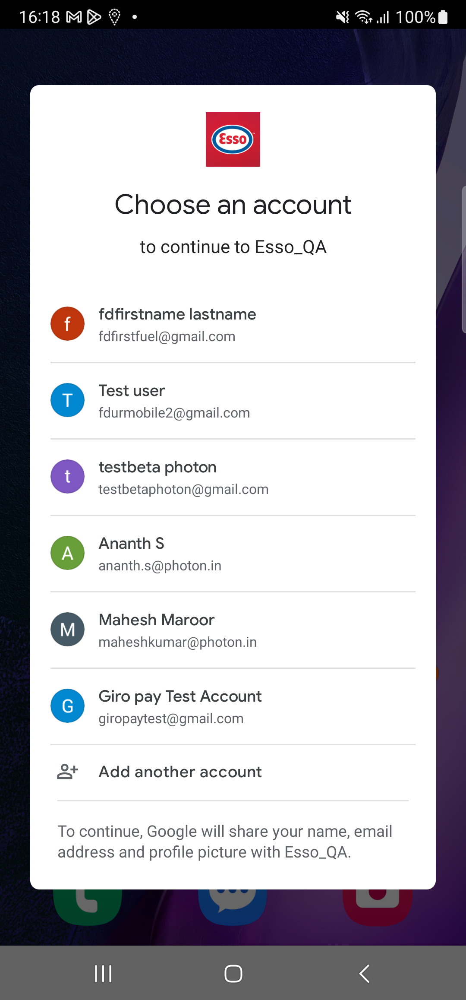And user navigates to Account screenStep skippedThen user should opt out for receipts by email checkboxStep skippedThen user should validate the receipt checkbox copy text for not opting to receive emailsStep skippedWhen the system displays the confirmation popup for not receiving mailsStep skippedThen tap on ok button and close receipt checkbox copy textStep skippedFailVerify whether the system is able to make service call and display authorization screenWhen user is on NLID screenWhen user taps on start button in LIDstepDefinitions.Hook.afterEachStep(io.cucumber.java.Scenario)5b0fd953-b724-4247-9366-52ed66d452acAnd user is navigated to Select your pump screenStep skippedAnd user selects pump number "6" to start fuellingStep skippedAnd user selects the pump from 'Select your Pump' page and taps on continue buttonStep skippedAnd user verify the MFA screenStep skippedWhen user tap on Continue button in MFA screenStep skippedThen the user is navigated to Confirm payment screenStep skippedThen user verify the confirms the payment screenStep skippedAnd user confirms card paymentStep skippedThen user land on enter PIN screenStep skippedWhen user enters four digit PINStep skippedThen user tap on continue button in enter PIN screenStep skippedWhen user lands on authorize payment screenStep skippedWhen user lands on card verification screenStep skippedAnd enter valid password and click on submit buttonStep skippedThen user is navigated to start fueling now screenStep skippedAnd then to now fuelingStep skippedThen user tap on Done button in Transaction Complete screenStep skippedFailVerify whether the system is able to display loader while authorization is in progressWhen user is on NLID screenWhen user taps on start button in LIDstepDefinitions.Hook.afterEachStep(io.cucumber.java.Scenario)03cf655c-d687-4c00-ab7c-3de21d4a8af4And user is navigated to Select your pump screenStep skippedAnd user selects pump number "7" to start fuellingStep skippedAnd user selects the pump from 'Select your Pump' page and taps on continue buttonStep skippedAnd user verify the MFA screenStep skippedWhen user tap on Continue button in MFA screenStep skippedThen the user is navigated to Confirm payment screenStep skippedThen user verify the confirms the payment screenStep skippedAnd user confirms card paymentStep skippedThen user land on enter PIN screenStep skippedWhen user enters four digit PINStep skippedThen user tap on continue button in enter PIN screenStep skippedWhen user lands on authorize payment screenStep skippedFailSprint 2 Pay outside : Complete the fuelling transaction without verifying nectar card and Verify the Transaction complete screenGiven user is on NLID screenAnd user taps on More button in tab barstepDefinitions.Hook.afterEachStep(io.cucumber.java.Scenario)c51f8c62-d496-4b37-8759-f3bdc1eb0e84When user navigates to Account screenStep skippedAnd delete added nectar card if existsStep skippedAnd navigate to the Nectar card sectionStep skippedAnd user taps on Add nectar card in Account screenStep skippedThen user is navigated to add nectar screenStep skippedAnd enter nectar card value "NectarCardAddAndVerify" and tap on next buttonStep skippedThen user tap on verify laterStep skippedAnd navigate to the Nectar card section from account screenStep skippedAnd user taps on More button in tab barStep skippedAnd user taps on fuel iconStep skippedWhen user taps on start button in LIDStep skippedAnd user is navigated to Select your pump screenStep skippedAnd user selects pump number "3" to start fuellingStep skippedAnd user selects the pump from 'Select your Pump' page and taps on continue buttonStep skippedWhen user tap on Continue button in MFA screenStep skippedThen the user is navigated to Confirm payment screenStep skippedAnd user confirms card paymentStep skippedThen user land on enter PIN screenStep skippedWhen user enters four digit PINStep skippedThen user tap on continue button in enter PIN screenStep skippedWhen user lands on authorize payment screenStep skippedWhen user lands on card verification screenStep skippedAnd enter valid password and click on submit buttonStep skippedThen user is navigated to start fueling now screenStep skippedAnd then to now fuelingStep skippedAnd user verify the Transaction Complete screenStep skippedAnd validate verify nectar card link displayed in transaction complete screenStep skippedAnd tap on the Verify Nectar Card link in Transaction complete ScreenStep skippedThen enter "NectarCardAddAndVerify" Nectar card number and password from Transaciton complete screenStep skippedThen verify if the user is in the Transaction Complete Screen with the context to see rewardsStep skippedFailManual user - The app should display not display last 4 digits of the card number used in a COF(Master card) transaction on the Transaction complete screenGiven user is on NLID screenWhen user taps on start button in LIDstepDefinitions.Hook.afterEachStep(io.cucumber.java.Scenario)9a92c6c6-9636-4886-a7b5-200d9c1cbedfAnd user is navigated to Select your pump screenStep skippedAnd user selects pump number "1" to start fuellingStep skippedAnd user selects the pump from 'Select your Pump' page and taps on continue buttonStep skippedWhen user tap on Continue button in MFA screenStep skippedThen the user is navigated to Confirm payment screenStep skippedAnd user confirms card paymentStep skippedThen user land on enter PIN screenStep skippedWhen user enters four digit PINStep skippedThen user tap on continue button in enter PIN screenStep skippedWhen user lands on card verification screenStep skippedAnd enter valid password and click on submit buttonStep skippedThen user is navigated to start fueling now screenStep skippedAnd then to now fuelingStep skippedThen user verify the Transaction Complete screenStep skippedAnd user verifies the card number with asterisk is not present in the Transaction Complete screenStep skippedFailVerify if the user is able to see the updated LID variation with the Add Payment Method’ button (Manual Login user)Given user is on NLID screenAnd user taps on More button in tab barstepDefinitions.Hook.afterEachStep(io.cucumber.java.Scenario)7e29efed-8205-4062-98fe-ee8c72f59781When user navigates to Account screenStep skippedThen user clicks on edit in the added payment method without phone and other paymentStep skippedThen user taps delete in the Edit Payment Method screenStep skippedThen user taps on delete button in the Delete popup msgStep skippedThen app to dismiss the popup when the user taps on OK buttonStep skippedAnd user verifies the account pageStep skippedAnd user taps on fuel icon and navigate to LID screenStep skippedThen validtes the add payment button present in Lid screenStep skippedFailVerify if the user is able to see the updated LID variation with the Add Payment Method’ button (Manual Login user)Given user log out from the app if logged instepDefinitions.Hook.afterEachStep(io.cucumber.java.Scenario)7bdc07c2-9afd-4494-801f-33638bea0060 And user clicks on Login IconStep skippedWhen I enter "FrictEssoPsword" in login detailsStep skippedAnd user taps login button in login screenStep skippedAnd user is on NLID screenStep skippedGiven user is on NLID screenStep skippedThen validtes the add payment button present in Lid screenStep skippedFailManual user - The app should display the last 4 digits of the card number used in a COF(Visa) transaction on the Transaction Details screenGiven user is on NLID screenAnd user taps on More button in tab barWhen user navigates to Account screenAnd user tap on add card button in accountstepDefinitions.Hook.afterEachStep(io.cucumber.java.Scenario)a4fb9912-569e-452a-b6c9-a1f884d0c884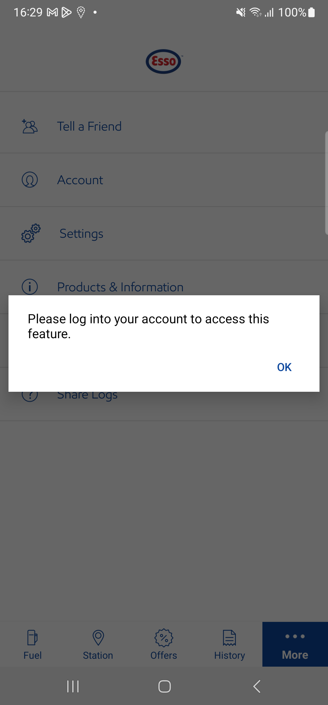When user taps on Credit Debit card in Add Payment Method screenStep skippedThen user lands on Add debit/credit card screenStep skippedThen enter name of the cardStep skippedThen enter "4006 3400 0000 0014" card numberStep skippedThen enter expiry dateStep skippedThen enter CVVStep skippedThen enter postal codeStep skippedThen enter address line1Step skippedThen enter Address line2Step skippedThen enter cityStep skippedThen check consent checkboxStep skippedAnd user clicks on continue button in card screen as the second payment methodStep skippedAnd user verifies the account pageStep skippedAnd user navigated to NLID ScreenStep skippedWhen user taps on start button in LIDStep skippedAnd user is navigated to Select your pump screenStep skippedAnd user selects pump number "2" to start fuellingStep skippedAnd user selects the pump from 'Select your Pump' page and taps on continue buttonStep skippedWhen user tap on Continue button in MFA screenStep skippedThen the user is navigated to Confirm payment screenStep skippedAnd user confirms card paymentStep skippedThen user land on enter PIN screenStep skippedWhen user enters four digit PINStep skippedThen user tap on continue button in enter PIN screenStep skippedWhen user lands on authorize payment screenStep skippedThen user verify the Transaction Complete screenStep skippedAnd Tap on Transaction Details link in Transaction Complete ScreenStep skippedThen user verifies that the "VISA" payment method "0014" is present with asterisksStep skippedFailManual user - Verify whether app displaying ‘Google Pay’ as an available payment method in Add Payment Method screenGiven user is on NLID screenAnd user taps on More button in tab barWhen user navigates to Account screenAnd user verifies the account pagestepDefinitions.Hook.afterEachStep(io.cucumber.java.Scenario)e1b056b4-bba0-4026-80e6-33370a917436Then user clicks on edit in the added payment method without phone and other paymentStep skippedThen user taps delete in the Edit Payment Method screenStep skippedThen user taps on delete button in the Delete popup msgStep skippedThen app to dismiss the popup when the user taps on OK buttonStep skippedAnd user verifies the account pageStep skippedThen user tap on add card button in accountStep skippedThen verify the googlepay displayed as first payment in add payment methodStep skippedFailManual user - Verify whether app displaying ‘Google Pay’ as an available payment method in Add Payment Method screenGiven user is on NLID screenAnd user taps on add payment button present in Lid screenstepDefinitions.Hook.afterEachStep(io.cucumber.java.Scenario)5608f743-bca4-4aa2-97e3-263f0eecae72Then user verifies the Add Payment method screenStep skippedThen verify the googlepay displayed as first payment in add payment methodStep skippedFailVerify the app is displaying the "GPay" payment buttonGiven user is on NLID screenAnd user taps on More button in tab barWhen user navigates to Account screenAnd user verifies the account pagestepDefinitions.Hook.afterEachStep(io.cucumber.java.Scenario)74a13692-ac40-45d4-825e-5e5d68b5e32aThen user tap on add card button in accountStep skippedWhen user taps on Google pay in Add Payment Method screenStep skippedThen user validates the popup after adding Google PayStep skippedThen user taps on OK button in the Google PayStep skippedWhen user taps on fuel icon and navigate to LID screenStep skippedWhen user taps on start button in LIDStep skippedAnd user is navigated to Select your pump screenStep skippedAnd user selects pump number "1" to start fuellingStep skippedAnd user selects the pump from 'Select your Pump' page and taps on continue buttonStep skippedWhen user tap on Continue button in MFA screenStep skippedThen the user is navigated to Confirm payment screenStep skippedThen the user validates whether Gpay button is updated in the Confirm Payment screenStep skippedFailVerify the app is displaying Google Pay as the selected payment method on the Confirm Payment screen (Site Check-In)Given user is on NLID screenWhen user taps on start button in LIDAnd user is navigated to Select your pump screenstepDefinitions.Hook.afterEachStep(io.cucumber.java.Scenario)d6096f74-d193-4f37-b1e0-14fb4da8adecAnd user selects pump number "1" to start fuellingStep skippedAnd user selects the pump from 'Select your Pump' page and taps on continue buttonStep skippedWhen user tap on Continue button in MFA screenStep skippedThen the user is navigated to Confirm payment screenStep skippedThen the user validates whether Google Pay is updated in the Confirm Payment screenStep skippedFailVerify the app is displaying Google Pay as the selected payment method on the Confirm Payment screen when Pump is changedGiven user is on NLID screenWhen user taps on start button in LIDAnd user selects pump number "1" to start fuellingstepDefinitions.Hook.afterEachStep(io.cucumber.java.Scenario)bceb4d86-d4be-489c-b234-d29f6981157dAnd user selects the pump from 'Select your Pump' page and taps on continue buttonStep skippedWhen user tap on Continue button in MFA screenStep skippedThen the user validates the confirm payment screen and validates the pump number "1"Step skippedWhen the user taps on edit button in the selected pumpStep skippedAnd user selects pump number "4" to start fuellingStep skippedAnd user selects the pump from 'Select your Pump' page and taps on continue buttonStep skippedThen the user validates the confirm payment screen and validates the pump number "4"Step skippedThen the user validates whether Google Pay is updated in the Confirm Payment screenStep skippedFailVerify the app is displaying Google Pay as the selected payment method on the Confirm Payment screen when MFA is changedGiven user is on NLID screenWhen user taps on start button in LIDAnd user selects pump number "1" to start fuellingstepDefinitions.Hook.afterEachStep(io.cucumber.java.Scenario)9bffdaae-b3d3-4294-bc01-0d423ca0559bAnd user selects the pump from 'Select your Pump' page and taps on continue buttonStep skippedWhen user tap on Continue button in MFA screenStep skippedThen the user validates whether "100" is updated in the Confirm Payment screenStep skippedWhen the user taps on edit button in the Mfa sectionStep skippedWhen the user taps "70" in the ruler in the Mfa screen and validates the continue button is updatedStep skippedWhen user tap on Continue button in MFA screenStep skippedThen the user validates whether "70" is updated in the Confirm Payment screenStep skippedThen the user validates whether Google Pay is updated in the Confirm Payment screenStep skippedFailVerify the app is displaying Google Pay as a "Selected payment method" on the "Payment Details" screenGiven user is on NLID screenWhen user taps on start button in LIDAnd user is navigated to Select your pump screenstepDefinitions.Hook.afterEachStep(io.cucumber.java.Scenario)bedce567-3549-4b54-b64f-55c170fe5218And user selects pump number "1" to start fuellingStep skippedAnd user selects the pump from 'Select your Pump' page and taps on continue buttonStep skippedWhen user tap on Continue button in MFA screenStep skippedThen the user is navigated to Confirm payment screenStep skippedWhen the user taps on edit button in the payment method in confirm payment screenStep skippedThen the user validates Google Pay payment method present in payment details screenStep skippedFailManual user - Verify the app is displaying Google Pay as the 1st payment methodGiven user is on NLID screenWhen user taps on start button in LIDAnd user is navigated to Select your pump screenstepDefinitions.Hook.afterEachStep(io.cucumber.java.Scenario)e5e78fb5-b7de-400d-b721-03239647a3ef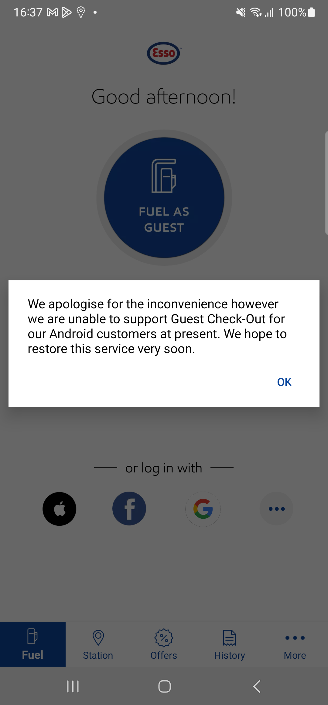And user selects pump number "1" to start fuellingStep skippedAnd user selects the pump from 'Select your Pump' page and taps on continue buttonStep skippedWhen user tap on Continue button in MFA screenStep skippedThen the user is navigated to Confirm payment screenStep skippedWhen the user taps on edit button in the payment method in confirm payment screenStep skippedThen verify the google pay displayed as a first paymentStep skippedFailVerify the app is allowing the user to cancel the Google Pay paymentGiven user is on NLID screenWhen user taps on start button in LIDAnd user is navigated to Select your pump screenstepDefinitions.Hook.afterEachStep(io.cucumber.java.Scenario)0fe81d01-93da-4dab-8404-11d2378542c4And user selects pump number "1" to start fuellingStep skippedAnd user selects the pump from 'Select your Pump' page and taps on continue buttonStep skippedWhen user tap on Continue button in MFA screenStep skippedThen the user validates whether Google Pay is updated in the Confirm Payment screenStep skippedWhen user taps on cancel button from confirm payment screenStep skippedThen user validates the cancel transaction popupStep skippedWhen user taps on cancel trasaction button in the cancel transaction popupStep skippedAnd user taps on More button in tab barStep skippedWhen user navigates to Account screenStep skippedWhen user unlink the added googlepay paymentStep skippedThen user validates the popup once the unlink is clickedStep skippedAnd user taps on unlink buttonStep skippedWhen verify the displayed popup once it is unlinkedStep skippedThen user taps on OK button in popupStep skippedFailSelect your Pump Screen while PayOutsideGiven user log out from the app if logged inAnd user clicks on Login IconWhen I enter "regressioncredentials2" in login detailsAnd user taps login button in login screenWhen user is on NLID screenWhen user taps on start button in LIDAnd user is navigated to Select your pump screenstepDefinitions.Hook.afterEachStep(io.cucumber.java.Scenario)da34c576-3487-43be-b00d-bd283f1e0c12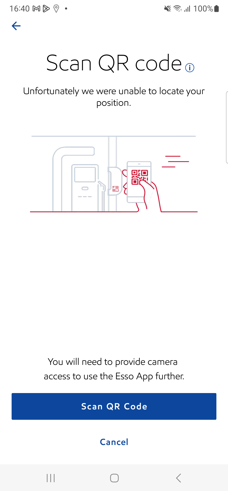And user selects pump number "1" to start fuellingStep skippedAnd user selects the pump from 'Select your Pump' page and taps on continue buttonStep skippedWhen user tap on Continue button in MFA screenStep skippedThen the user is navigated to Confirm payment screenStep skippedPassVerify app should display a static message “Don’t lift the nozzle just yet.“ (Manual Registered User - Site CheckIn)Given user is on NLID screenWhen user taps on start button in LIDAnd user selects pump number "1" to start fuellingAnd user selects the pump from 'Select your Pump' page and taps on continue buttonAnd user tap on Continue button in MFA screenThen the user is navigated to Confirm payment screenAnd user confirms card paymentThen validate the message Dont lift the nozzle just yetPassVerify app should display a static message “You can lift the nozzle now.“ (Manual Registered User - Site CheckIn)Given user is on NLID screenWhen user taps on start button in LIDAnd user selects pump number "1" to start fuellingAnd user selects the pump from 'Select your Pump' page and taps on continue buttonAnd user tap on Continue button in MFA screenThen the user is navigated to Confirm payment screenAnd user confirms card paymentThen validate the message Dont lift the nozzle just yetThen user is navigated to start fueling now screenThen validate the title You can lift the nozzle nowFailVerify that system should able to display the ‘Check you’ve paid before leaving' pop-up on start fueling screen. (site checkin)Given user is on NLID screenWhen user taps on start button in LIDAnd user selects pump number "1" to start fuellingAnd user selects the pump from 'Select your Pump' page and taps on continue buttonAnd user tap on Continue button in MFA screenThen the user is navigated to Confirm payment screenAnd user confirms card paymentThen validate the title and message of the custom popup in start fueling screen then taps on Ok buttonstepDefinitions.Hook.afterEachStep(io.cucumber.java.Scenario)a7d44f4a-496f-48bf-a7b6-19bcc03977c7FailCheck if user is able to close the pop up manually if they want to by selecting 'ok' on the pop up window of Drive Off in Login flowGiven user is on NLID screenWhen user taps on start button in LIDAnd user selects pump number "2" to start fuellingAnd user selects the pump from 'Select your Pump' page and taps on continue buttonAnd user tap on Continue button in MFA screenThen the user is navigated to Confirm payment screenAnd user confirms card paymentThen validate the title and message of the custom popup in start fueling screen then taps on Ok buttonstepDefinitions.Hook.afterEachStep(io.cucumber.java.Scenario)4ed4ee3c-5142-4357-a2d9-0eab1b6a9e83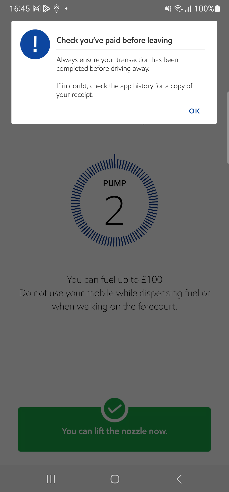And then to now fuelingStep skippedAnd user verify the Transaction Complete screenStep skippedPassAdd nectar card from Payment details screen after adding nectar cardAnd user is on NLID screenAnd user taps on More button in tab barWhen user navigates to Account screenAnd delete added nectar card if existsWhen user taps on fuel icon and start fuelling buttonAnd user is navigated to Select your pump screenAnd user selects pump number "1" to start fuellingAnd user selects the pump from 'Select your Pump' page and taps on continue buttonWhen user tap on Continue button in MFA screenThen the user is navigated to Confirm payment screenAnd Click on Change payment linkAnd user verifies Payment details screen before adding nectar cardAnd user adds the Nectar card details by clicking the Add nectar card in Payment details screenThen user is navigated to add nectar screenAnd enter nectar card value "NectarCardAddAndVerify" and tap on next buttonWhen user clicks on Verify Later button under 'Card Added successfully' alertThen user lands on Verify Card Screen and taps on skip buttonThen user verify the payment details screen with Nectar cardFailAdd and verify nectar card from Payment details screenAnd user is on NLID screenAnd user taps on More button in tab barWhen user navigates to Account screenAnd delete added nectar card if existsWhen user taps on fuel icon and start fuelling buttonAnd user is navigated to Select your pump screenAnd user selects pump number "2" to start fuellingAnd user selects the pump from 'Select your Pump' page and taps on continue buttonWhen user tap on Continue button in MFA screenThen the user is navigated to Confirm payment screenAnd Click on Change payment linkAnd user adds the Nectar card details by clicking the Add nectar card in Payment details screenThen user is navigated to add nectar screenAnd enter nectar card value "NectarCardAddAndVerify" and tap on next buttonWhen user clicks on Continue button under 'Card Added successfully' alertThen enter "NectarCardAddAndVerify" Nectar card number and passwordstepDefinitions.Hook.afterEachStep(io.cucumber.java.Scenario)04574be1-447e-4de9-ba08-5c36a3ab1c06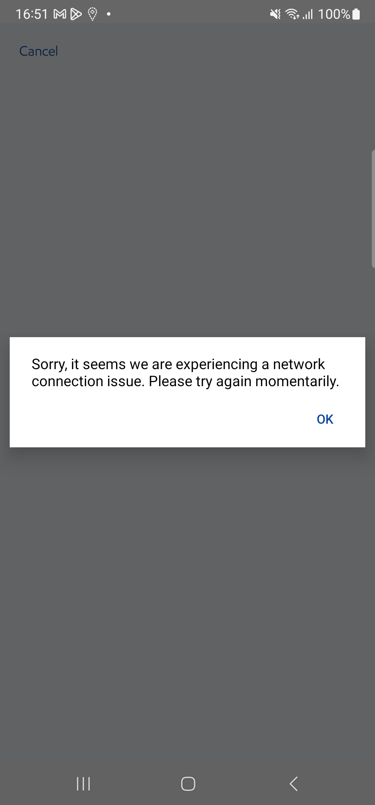Then user verify the payment details screen with Nectar cardStep skippedFailVerify whether system should display a pop-up on the ‘Confirm payment’ screen when the user taps on the edit buttonAnd user is on NLID screenAnd user taps on More button in tab barWhen user navigates to Account screenAnd navigate to the Nectar card sectionAnd Delete the Nectar card if it is presentWhen user taps on fuel icon and start fuelling buttonAnd user is navigated to Select your pump screenAnd user selects pump number "2" to start fuellingAnd user selects the pump from 'Select your Pump' page and taps on continue buttonWhen user tap on Continue button in MFA screenstepDefinitions.Hook.afterEachStep(io.cucumber.java.Scenario)Then the user is navigated to Confirm payment screenStep skippedAnd Click on reward Edit button in Payment confirmation screenStep skippedThen Verify the Message is displayedStep skippedAnd Click Ok button on Redemption PopupStep skippedstepDefinitions.Hook.afterClass(io.cucumber.java.Scenario)FailVerify whether the system is able to cancel the transaction when the user taps on cancel optionAnd user is on NLID screenWhen user taps on start button in LIDstepDefinitions.Hook.afterEachStep(io.cucumber.java.Scenario)And user is navigated to Select your pump screenStep skippedAnd user selects pump number "8" to start fuellingStep skippedAnd user selects the pump from 'Select your Pump' page and taps on continue buttonStep skippedAnd user verify the MFA screenStep skippedWhen user tap on Continue button in MFA screenStep skippedThen the user is navigated to Confirm payment screenStep skippedThen user verify the confirms the payment screenStep skippedAnd user confirms the paymentStep skippedThen user lands on authorize payment screenStep skippedWhen user taps on cancel button in the 'Start fuelling now' pageStep skippedThen the system displays the cancellation popupStep skippedAnd app to dismiss the popup when the user taps on OK buttonStep skippedAnd system cancels the transaction and returns to the 'Confirm Payment' ScreenStep skippedFailVerify whether the user is able to see the following elements on the Transaction summary screenWhen user is on NLID screenWhen user taps on start button in LIDstepDefinitions.Hook.afterEachStep(io.cucumber.java.Scenario)And user is navigated to Select your pump screenStep skippedAnd user selects pump number "9" to start fuellingStep skippedAnd user selects the pump from 'Select your Pump' page and taps on continue buttonStep skippedAnd user verify the MFA screenStep skippedAnd user tap on Continue button in MFA screenStep skippedThen the user is navigated to Confirm payment screenStep skippedAnd user confirms the paymentStep skippedThen the system should display the authorization screenStep skippedThen user checks the details in the transaction summary screenStep skippedThen Tap on Transaction Details link in Transaction Complete ScreenStep skippedThen Verify all the fields are present in Transaction Details screenStep skipped
And user clicks on Login IconStep skippedWhen I enter "FrictEssoPsword" in login detailsStep skippedAnd user taps login button in login screenStep skippedAnd user is on NLID screenStep skippedGiven user is on NLID screenStep skippedThen validtes the add payment button present in Lid screenStep skippedFailManual user - The app should display the last 4 digits of the card number used in a COF(Visa) transaction on the Transaction Details screenGiven user is on NLID screenAnd user taps on More button in tab barWhen user navigates to Account screenAnd user tap on add card button in accountstepDefinitions.Hook.afterEachStep(io.cucumber.java.Scenario)a4fb9912-569e-452a-b6c9-a1f884d0c884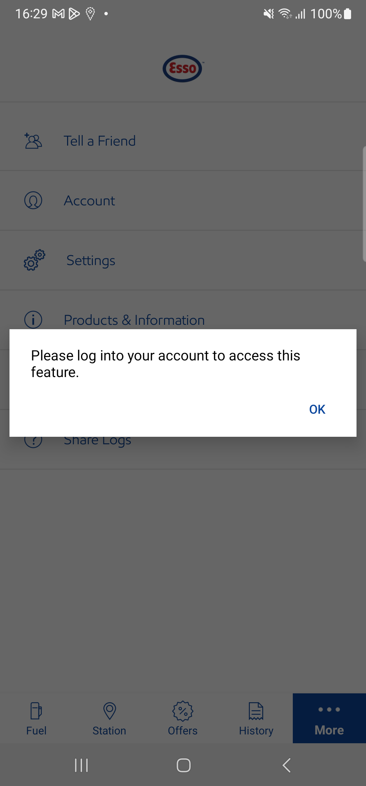When user taps on Credit Debit card in Add Payment Method screenStep skippedThen user lands on Add debit/credit card screenStep skippedThen enter name of the cardStep skippedThen enter "4006 3400 0000 0014" card numberStep skippedThen enter expiry dateStep skippedThen enter CVVStep skippedThen enter postal codeStep skippedThen enter address line1Step skippedThen enter Address line2Step skippedThen enter cityStep skippedThen check consent checkboxStep skippedAnd user clicks on continue button in card screen as the second payment methodStep skippedAnd user verifies the account pageStep skippedAnd user navigated to NLID ScreenStep skippedWhen user taps on start button in LIDStep skippedAnd user is navigated to Select your pump screenStep skippedAnd user selects pump number "2" to start fuellingStep skippedAnd user selects the pump from 'Select your Pump' page and taps on continue buttonStep skippedWhen user tap on Continue button in MFA screenStep skippedThen the user is navigated to Confirm payment screenStep skippedAnd user confirms card paymentStep skippedThen user land on enter PIN screenStep skippedWhen user enters four digit PINStep skippedThen user tap on continue button in enter PIN screenStep skippedWhen user lands on authorize payment screenStep skippedThen user verify the Transaction Complete screenStep skippedAnd Tap on Transaction Details link in Transaction Complete ScreenStep skippedThen user verifies that the "VISA" payment method "0014" is present with asterisksStep skippedFailManual user - Verify whether app displaying ‘Google Pay’ as an available payment method in Add Payment Method screenGiven user is on NLID screenAnd user taps on More button in tab barWhen user navigates to Account screenAnd user verifies the account pagestepDefinitions.Hook.afterEachStep(io.cucumber.java.Scenario)e1b056b4-bba0-4026-80e6-33370a917436Then user clicks on edit in the added payment method without phone and other paymentStep skippedThen user taps delete in the Edit Payment Method screenStep skippedThen user taps on delete button in the Delete popup msgStep skippedThen app to dismiss the popup when the user taps on OK buttonStep skippedAnd user verifies the account pageStep skippedThen user tap on add card button in accountStep skippedThen verify the googlepay displayed as first payment in add payment methodStep skippedFailManual user - Verify whether app displaying ‘Google Pay’ as an available payment method in Add Payment Method screenGiven user is on NLID screenAnd user taps on add payment button present in Lid screenstepDefinitions.Hook.afterEachStep(io.cucumber.java.Scenario)5608f743-bca4-4aa2-97e3-263f0eecae72Then user verifies the Add Payment method screenStep skippedThen verify the googlepay displayed as first payment in add payment methodStep skippedFailVerify the app is displaying the "GPay" payment buttonGiven user is on NLID screenAnd user taps on More button in tab barWhen user navigates to Account screenAnd user verifies the account pagestepDefinitions.Hook.afterEachStep(io.cucumber.java.Scenario)74a13692-ac40-45d4-825e-5e5d68b5e32aThen user tap on add card button in accountStep skippedWhen user taps on Google pay in Add Payment Method screenStep skippedThen user validates the popup after adding Google PayStep skippedThen user taps on OK button in the Google PayStep skippedWhen user taps on fuel icon and navigate to LID screenStep skippedWhen user taps on start button in LIDStep skippedAnd user is navigated to Select your pump screenStep skippedAnd user selects pump number "1" to start fuellingStep skippedAnd user selects the pump from 'Select your Pump' page and taps on continue buttonStep skippedWhen user tap on Continue button in MFA screenStep skippedThen the user is navigated to Confirm payment screenStep skippedThen the user validates whether Gpay button is updated in the Confirm Payment screenStep skippedFailVerify the app is displaying Google Pay as the selected payment method on the Confirm Payment screen (Site Check-In)Given user is on NLID screenWhen user taps on start button in LIDAnd user is navigated to Select your pump screenstepDefinitions.Hook.afterEachStep(io.cucumber.java.Scenario)d6096f74-d193-4f37-b1e0-14fb4da8adecAnd user selects pump number "1" to start fuellingStep skippedAnd user selects the pump from 'Select your Pump' page and taps on continue buttonStep skippedWhen user tap on Continue button in MFA screenStep skippedThen the user is navigated to Confirm payment screenStep skippedThen the user validates whether Google Pay is updated in the Confirm Payment screenStep skippedFailVerify the app is displaying Google Pay as the selected payment method on the Confirm Payment screen when Pump is changedGiven user is on NLID screenWhen user taps on start button in LIDAnd user selects pump number "1" to start fuellingstepDefinitions.Hook.afterEachStep(io.cucumber.java.Scenario)bceb4d86-d4be-489c-b234-d29f6981157dAnd user selects the pump from 'Select your Pump' page and taps on continue buttonStep skippedWhen user tap on Continue button in MFA screenStep skippedThen the user validates the confirm payment screen and validates the pump number "1"Step skippedWhen the user taps on edit button in the selected pumpStep skippedAnd user selects pump number "4" to start fuellingStep skippedAnd user selects the pump from 'Select your Pump' page and taps on continue buttonStep skippedThen the user validates the confirm payment screen and validates the pump number "4"Step skippedThen the user validates whether Google Pay is updated in the Confirm Payment screenStep skippedFailVerify the app is displaying Google Pay as the selected payment method on the Confirm Payment screen when MFA is changedGiven user is on NLID screenWhen user taps on start button in LIDAnd user selects pump number "1" to start fuellingstepDefinitions.Hook.afterEachStep(io.cucumber.java.Scenario)9bffdaae-b3d3-4294-bc01-0d423ca0559bAnd user selects the pump from 'Select your Pump' page and taps on continue buttonStep skippedWhen user tap on Continue button in MFA screenStep skippedThen the user validates whether "100" is updated in the Confirm Payment screenStep skippedWhen the user taps on edit button in the Mfa sectionStep skippedWhen the user taps "70" in the ruler in the Mfa screen and validates the continue button is updatedStep skippedWhen user tap on Continue button in MFA screenStep skippedThen the user validates whether "70" is updated in the Confirm Payment screenStep skippedThen the user validates whether Google Pay is updated in the Confirm Payment screenStep skippedFailVerify the app is displaying Google Pay as a "Selected payment method" on the "Payment Details" screenGiven user is on NLID screenWhen user taps on start button in LIDAnd user is navigated to Select your pump screenstepDefinitions.Hook.afterEachStep(io.cucumber.java.Scenario)bedce567-3549-4b54-b64f-55c170fe5218And user selects pump number "1" to start fuellingStep skippedAnd user selects the pump from 'Select your Pump' page and taps on continue buttonStep skippedWhen user tap on Continue button in MFA screenStep skippedThen the user is navigated to Confirm payment screenStep skippedWhen the user taps on edit button in the payment method in confirm payment screenStep skippedThen the user validates Google Pay payment method present in payment details screenStep skippedFailManual user - Verify the app is displaying Google Pay as the 1st payment methodGiven user is on NLID screenWhen user taps on start button in LIDAnd user is navigated to Select your pump screenstepDefinitions.Hook.afterEachStep(io.cucumber.java.Scenario)e5e78fb5-b7de-400d-b721-03239647a3ef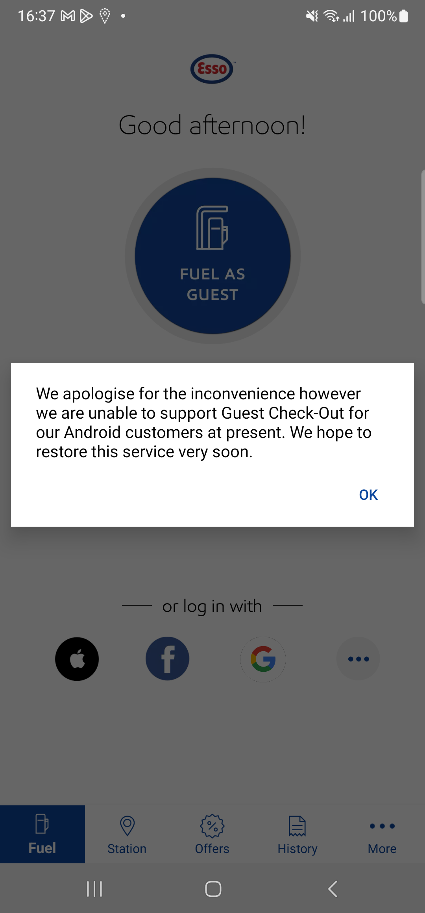And user selects pump number "1" to start fuellingStep skippedAnd user selects the pump from 'Select your Pump' page and taps on continue buttonStep skippedWhen user tap on Continue button in MFA screenStep skippedThen the user is navigated to Confirm payment screenStep skippedWhen the user taps on edit button in the payment method in confirm payment screenStep skippedThen verify the google pay displayed as a first paymentStep skippedFailVerify the app is allowing the user to cancel the Google Pay paymentGiven user is on NLID screenWhen user taps on start button in LIDAnd user is navigated to Select your pump screenstepDefinitions.Hook.afterEachStep(io.cucumber.java.Scenario)0fe81d01-93da-4dab-8404-11d2378542c4And user selects pump number "1" to start fuellingStep skippedAnd user selects the pump from 'Select your Pump' page and taps on continue buttonStep skippedWhen user tap on Continue button in MFA screenStep skippedThen the user validates whether Google Pay is updated in the Confirm Payment screenStep skippedWhen user taps on cancel button from confirm payment screenStep skippedThen user validates the cancel transaction popupStep skippedWhen user taps on cancel trasaction button in the cancel transaction popupStep skippedAnd user taps on More button in tab barStep skippedWhen user navigates to Account screenStep skippedWhen user unlink the added googlepay paymentStep skippedThen user validates the popup once the unlink is clickedStep skippedAnd user taps on unlink buttonStep skippedWhen verify the displayed popup once it is unlinkedStep skippedThen user taps on OK button in popupStep skippedFailSelect your Pump Screen while PayOutsideGiven user log out from the app if logged inAnd user clicks on Login IconWhen I enter "regressioncredentials2" in login detailsAnd user taps login button in login screenWhen user is on NLID screenWhen user taps on start button in LIDAnd user is navigated to Select your pump screenstepDefinitions.Hook.afterEachStep(io.cucumber.java.Scenario)da34c576-3487-43be-b00d-bd283f1e0c12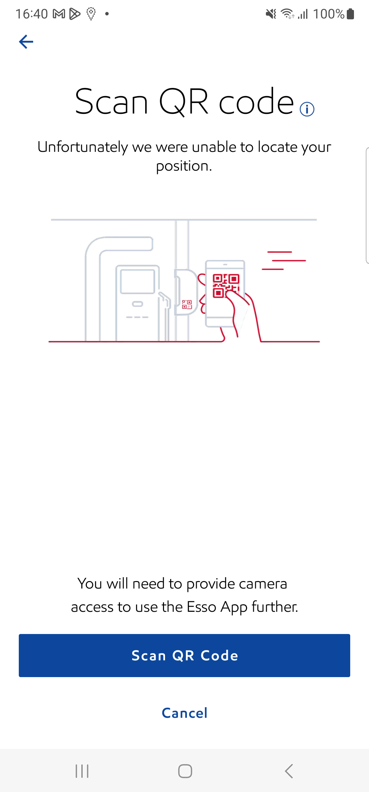And user selects pump number "1" to start fuellingStep skippedAnd user selects the pump from 'Select your Pump' page and taps on continue buttonStep skippedWhen user tap on Continue button in MFA screenStep skippedThen the user is navigated to Confirm payment screenStep skippedPassVerify app should display a static message “Don’t lift the nozzle just yet.“ (Manual Registered User - Site CheckIn)Given user is on NLID screenWhen user taps on start button in LIDAnd user selects pump number "1" to start fuellingAnd user selects the pump from 'Select your Pump' page and taps on continue buttonAnd user tap on Continue button in MFA screenThen the user is navigated to Confirm payment screenAnd user confirms card paymentThen validate the message Dont lift the nozzle just yetPassVerify app should display a static message “You can lift the nozzle now.“ (Manual Registered User - Site CheckIn)Given user is on NLID screenWhen user taps on start button in LIDAnd user selects pump number "1" to start fuellingAnd user selects the pump from 'Select your Pump' page and taps on continue buttonAnd user tap on Continue button in MFA screenThen the user is navigated to Confirm payment screenAnd user confirms card paymentThen validate the message Dont lift the nozzle just yetThen user is navigated to start fueling now screenThen validate the title You can lift the nozzle nowFailVerify that system should able to display the ‘Check you’ve paid before leaving' pop-up on start fueling screen. (site checkin)Given user is on NLID screenWhen user taps on start button in LIDAnd user selects pump number "1" to start fuellingAnd user selects the pump from 'Select your Pump' page and taps on continue buttonAnd user tap on Continue button in MFA screenThen the user is navigated to Confirm payment screenAnd user confirms card paymentThen validate the title and message of the custom popup in start fueling screen then taps on Ok buttonstepDefinitions.Hook.afterEachStep(io.cucumber.java.Scenario)a7d44f4a-496f-48bf-a7b6-19bcc03977c7FailCheck if user is able to close the pop up manually if they want to by selecting 'ok' on the pop up window of Drive Off in Login flowGiven user is on NLID screenWhen user taps on start button in LIDAnd user selects pump number "2" to start fuellingAnd user selects the pump from 'Select your Pump' page and taps on continue buttonAnd user tap on Continue button in MFA screenThen the user is navigated to Confirm payment screenAnd user confirms card paymentThen validate the title and message of the custom popup in start fueling screen then taps on Ok buttonstepDefinitions.Hook.afterEachStep(io.cucumber.java.Scenario)4ed4ee3c-5142-4357-a2d9-0eab1b6a9e83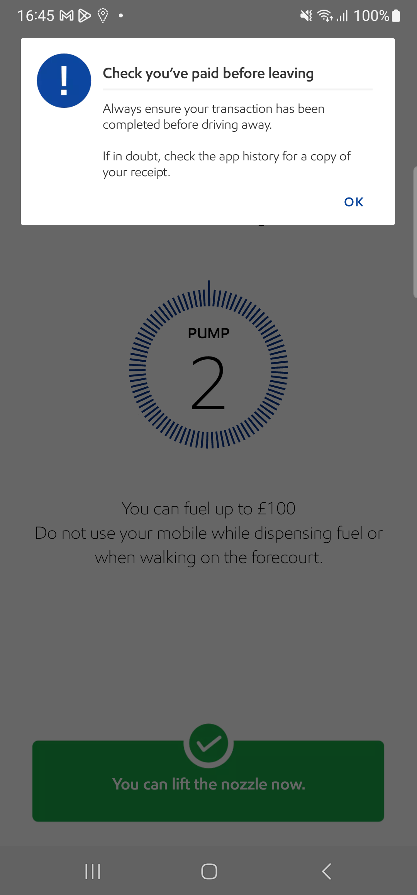And then to now fuelingStep skippedAnd user verify the Transaction Complete screenStep skippedPassAdd nectar card from Payment details screen after adding nectar cardAnd user is on NLID screenAnd user taps on More button in tab barWhen user navigates to Account screenAnd delete added nectar card if existsWhen user taps on fuel icon and start fuelling buttonAnd user is navigated to Select your pump screenAnd user selects pump number "1" to start fuellingAnd user selects the pump from 'Select your Pump' page and taps on continue buttonWhen user tap on Continue button in MFA screenThen the user is navigated to Confirm payment screenAnd Click on Change payment linkAnd user verifies Payment details screen before adding nectar cardAnd user adds the Nectar card details by clicking the Add nectar card in Payment details screenThen user is navigated to add nectar screenAnd enter nectar card value "NectarCardAddAndVerify" and tap on next buttonWhen user clicks on Verify Later button under 'Card Added successfully' alertThen user lands on Verify Card Screen and taps on skip buttonThen user verify the payment details screen with Nectar cardFailAdd and verify nectar card from Payment details screenAnd user is on NLID screenAnd user taps on More button in tab barWhen user navigates to Account screenAnd delete added nectar card if existsWhen user taps on fuel icon and start fuelling buttonAnd user is navigated to Select your pump screenAnd user selects pump number "2" to start fuellingAnd user selects the pump from 'Select your Pump' page and taps on continue buttonWhen user tap on Continue button in MFA screenThen the user is navigated to Confirm payment screenAnd Click on Change payment linkAnd user adds the Nectar card details by clicking the Add nectar card in Payment details screenThen user is navigated to add nectar screenAnd enter nectar card value "NectarCardAddAndVerify" and tap on next buttonWhen user clicks on Continue button under 'Card Added successfully' alertThen enter "NectarCardAddAndVerify" Nectar card number and passwordstepDefinitions.Hook.afterEachStep(io.cucumber.java.Scenario)04574be1-447e-4de9-ba08-5c36a3ab1c06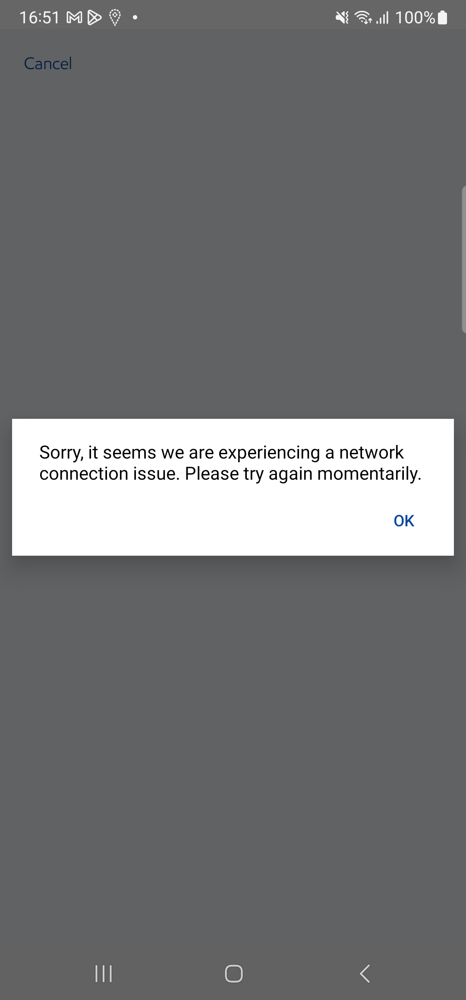Then user verify the payment details screen with Nectar cardStep skippedFailVerify whether system should display a pop-up on the ‘Confirm payment’ screen when the user taps on the edit buttonAnd user is on NLID screenAnd user taps on More button in tab barWhen user navigates to Account screenAnd navigate to the Nectar card sectionAnd Delete the Nectar card if it is presentWhen user taps on fuel icon and start fuelling buttonAnd user is navigated to Select your pump screenAnd user selects pump number "2" to start fuellingAnd user selects the pump from 'Select your Pump' page and taps on continue buttonWhen user tap on Continue button in MFA screenstepDefinitions.Hook.afterEachStep(io.cucumber.java.Scenario)Then the user is navigated to Confirm payment screenStep skippedAnd Click on reward Edit button in Payment confirmation screenStep skippedThen Verify the Message is displayedStep skippedAnd Click Ok button on Redemption PopupStep skippedstepDefinitions.Hook.afterClass(io.cucumber.java.Scenario)FailVerify whether the system is able to cancel the transaction when the user taps on cancel optionAnd user is on NLID screenWhen user taps on start button in LIDstepDefinitions.Hook.afterEachStep(io.cucumber.java.Scenario)And user is navigated to Select your pump screenStep skippedAnd user selects pump number "8" to start fuellingStep skippedAnd user selects the pump from 'Select your Pump' page and taps on continue buttonStep skippedAnd user verify the MFA screenStep skippedWhen user tap on Continue button in MFA screenStep skippedThen the user is navigated to Confirm payment screenStep skippedThen user verify the confirms the payment screenStep skippedAnd user confirms the paymentStep skippedThen user lands on authorize payment screenStep skippedWhen user taps on cancel button in the 'Start fuelling now' pageStep skippedThen the system displays the cancellation popupStep skippedAnd app to dismiss the popup when the user taps on OK buttonStep skippedAnd system cancels the transaction and returns to the 'Confirm Payment' ScreenStep skippedFailVerify whether the user is able to see the following elements on the Transaction summary screenWhen user is on NLID screenWhen user taps on start button in LIDstepDefinitions.Hook.afterEachStep(io.cucumber.java.Scenario)And user is navigated to Select your pump screenStep skippedAnd user selects pump number "9" to start fuellingStep skippedAnd user selects the pump from 'Select your Pump' page and taps on continue buttonStep skippedAnd user verify the MFA screenStep skippedAnd user tap on Continue button in MFA screenStep skippedThen the user is navigated to Confirm payment screenStep skippedAnd user confirms the paymentStep skippedThen the system should display the authorization screenStep skippedThen user checks the details in the transaction summary screenStep skippedThen Tap on Transaction Details link in Transaction Complete ScreenStep skippedThen Verify all the fields are present in Transaction Details screenStep skipped -
PaymentMethod
4:53:09 pm / 00:00:52:936 Fail
PaymentMethod
06.30.2024 4:53:09 pm 06.30.2024 4:54:02 pm 00:00:52:936 · #test-id=2,772FailCheck whether the icons of all app supported credit cards are displayed on Add Payment Method screen. Current supported cards are Visa, MastercardWhen user log out from the app if logged instepDefinitions.Hook.afterEachStep(io.cucumber.java.Scenario)And user clicks on Login IconStep skippedWhen I enter "regressioncredentials2" in login detailsStep skippedAnd user taps login button in login screenStep skippedAnd user is on NLID screenStep skippedAnd user taps on More button in tab barStep skippedWhen user navigates to Account screenStep skippedThen user tap on add card button in accountStep skippedWhen user taps on Credit Debit card in Add Payment Method screenStep skippedAnd Verify Visa card icon is displayedStep skippedAnd Verify Master card icon is displayedStep skippedFailCheck whether the user is able to see the following components in user credit card info.Given user is on NLID screenAnd user taps on More button in tab barstepDefinitions.Hook.afterEachStep(io.cucumber.java.Scenario)When user navigates to Account screenStep skippedThen user tap on add card button in accountStep skippedWhen user taps on Credit Debit card in Add Payment Method screenStep skippedAnd Verify Visa card icon is displayedStep skippedAnd Verify Master card icon is displayedStep skippedAnd Verify Card Name text box is displayedStep skippedAnd Verify Card number text box is displayedStep skippedThen verify Card expire date text box is displayedStep skippedAnd verify Post code text box is displayedStep skippedThen verify billing address text box is displayedStep skippedAnd Verify Search button is displayedStep skippedFailCheck whether the user is able to see the following components on the Payment Card Method screenGiven user is on NLID screenAnd user taps on More button in tab barstepDefinitions.Hook.afterEachStep(io.cucumber.java.Scenario)When user navigates to Account screenStep skippedThen user tap on add card button in accountStep skippedWhen user taps on Credit Debit card in Add Payment Method screenStep skippedAnd Verify Search button is displayedStep skippedAnd Verify User is able to see 'Skip' buttonStep skippedFailCheck whether the System not to display results, if user enters invalid post code and taps on Done.Given user is on NLID screenAnd user taps on More button in tab barstepDefinitions.Hook.afterEachStep(io.cucumber.java.Scenario)When user navigates to Account screenStep skippedThen user tap on add card button in accountStep skippedWhen user taps on Credit Debit card in Add Payment Method screenStep skippedAnd Enter the PostCode in search boxStep skippedThen Click on Search buttonStep skippedAnd Verify that No Result displayedStep skippedFailCheck whether the System able to close the info overlay as the USER taps on ‘GOT IT’ buttonGiven user is on NLID screenAnd user taps on More button in tab barstepDefinitions.Hook.afterEachStep(io.cucumber.java.Scenario)When user navigates to Account screenStep skippedThen user tap on add card button in accountStep skippedWhen user taps on Credit Debit card in Add Payment Method screenStep skippedAnd Click on i icon in the security fieldStep skippedThen Click on Got it button on popup screenStep skippedFailCheck whether the user is able to choose the default credit card for payment by tapping on 'Choose Default Card'.Given user is on NLID screenAnd user taps on More button in tab barstepDefinitions.Hook.afterEachStep(io.cucumber.java.Scenario)When user navigates to Account screenStep skippedThen Click on Choose Default Card linkStep skippedFailCheck whether the system should allow user to delete 'Default' 'credit card'.Given user is on NLID screenAnd user taps on More button in tab barstepDefinitions.Hook.afterEachStep(io.cucumber.java.Scenario)When user navigates to Account screenStep skippedAnd User Tap Edit card button with mobile numberStep skippedAnd user tap on Delete Card buttonStep skippedAnd user should verify the CT "Are you sure you want to delete this card?"Step skippedAnd user should verify cancel and delete buttonStep skipped -
ProfileCompletion
4:54:02 pm / 00:04:08:074 Fail
ProfileCompletion
06.30.2024 4:54:02 pm 06.30.2024 4:58:10 pm 00:04:08:074 · #test-id=2,908FailCheck Whether system completes "Add Nectar" task also circular indicator is increased to ten percentWhen user log out from the app if logged instepDefinitions.Hook.afterEachStep(io.cucumber.java.Scenario)When user taps on register button from Login screenStep skippedThen user should be navigated to Manual Register screenStep skippedThen enter First NameStep skippedThen enter Last NameStep skippedThen enter Email address as "chibisakkrava.d+"Step skippedThen enter passwordStep skippedAnd confirm passwordStep skippedThen click the check box for acceptStep skippedThen user selects the receive mails checkboxStep skippedWhen click on continue button from register screenStep skippedWhen user tap on Skip buttonStep skippedThen the system should display Skip warning popupStep skippedWhen user tap on Skip anywayStep skippedThen app to dismiss the popup and navigate the user to LID after reviewStep skippedAnd user verifies the forty percent in indicatorStep skippedAnd user taps on the complete profileStep skippedThen user clicks on Add nectarStep skippedAnd user clicks on the get started iconStep skippedAnd user enters the card details and click next iconStep skippedAnd user clicks on continue in add nectar cardStep skippedThen user skips the verification pageStep skippedThen user clicks on Add nectarStep skippedAnd user verifies the completed pop up message and clicks ok buttonStep skippedAnd user taps on back and navigates to LIDStep skippedThen user verifies the progress in the LIDStep skippedFailManual user - Verify the user is able to see the updated Esso logo in the "LID" screenWhen user is on NLID screenThen verify the updated esso logo is displayedstepDefinitions.Hook.afterEachStep(io.cucumber.java.Scenario)FailVerify if system mark the task as completed when user has already selected the receipts and marketing checkboxWhen user is on NLID screenAnd user taps on the complete profilestepDefinitions.Hook.afterEachStep(io.cucumber.java.Scenario)When user taps on the Email Preferences in Complete your profile screenStep skippedAnd user verifies the completed pop up message and clicks ok buttonStep skippedThen user verifies permission settings in the Complete your profile screenStep skippedFailVerify that system should not display the ‘Maximum Fuelling Amount’ task on the 'Complete Your Profile' screenWhen user is on NLID screenAnd user taps on the complete profilestepDefinitions.Hook.afterEachStep(io.cucumber.java.Scenario)Then user verifies maximum fueling amount is not presentStep skippedFailVerify that system should display the updated list of tasks in the 'Complete Your Profile' screen .When user is on NLID screenAnd user taps on the complete profilestepDefinitions.Hook.afterEachStep(io.cucumber.java.Scenario)Then user verifies the User Profile section in Complete your profile screenStep skippedThen user verifies permission settings in the Complete your profile screenStep skippedThen user verifies Email settings in the Complete your profile screenStep skippedThen user verifies Payment and Loyalty in the Complete your profile screenStep skippedFailVerify that system should be able to see 40% profile completion on LIDWhen user log out from the app if logged instepDefinitions.Hook.afterEachStep(io.cucumber.java.Scenario)When user taps on register button from Login screenStep skippedThen user should be navigated to Manual Register screenStep skippedThen enter First NameStep skippedThen enter Last NameStep skippedThen enter Email address as "chibisakkrava.d+"Step skippedThen enter passwordStep skippedAnd confirm passwordStep skippedThen click the check box for acceptStep skippedThen user selects the receive mails checkboxStep skippedWhen click on continue button from register screenStep skippedWhen user tap on Skip buttonStep skippedThen the system should display Skip warning popupStep skippedWhen user tap on Skip anywayStep skippedThen app to dismiss the popup and navigate the user to LID after reviewStep skippedWhen user is on NLID screenStep skippedAnd user taps on the complete profileStep skippedWhen user taps on the Accepted Privacy Policy and Terms and conditionsStep skippedAnd user verifies the completed pop up message and clicks ok buttonStep skippedWhen user taps on the Set First and Last NameStep skippedAnd user verifies the completed pop up message and clicks ok buttonStep skippedWhen user taps on the NotificationsStep skippedAnd user verifies the completed pop up message and clicks ok buttonStep skippedAnd user taps on back and navigates to LIDStep skippedThen user verifies the forty percent in indicatorStep skippedFailVerify that system should be able to see 50% profile completion on LIDWhen user is on NLID screenAnd user taps on the complete profilestepDefinitions.Hook.afterEachStep(io.cucumber.java.Scenario)When user taps on the Accepted Privacy Policy and Terms and conditionsStep skippedAnd user verifies the completed pop up message and clicks ok buttonStep skippedWhen user taps on the Set First and Last NameStep skippedAnd user verifies the completed pop up message and clicks ok buttonStep skippedWhen user taps on add payment methodStep skippedWhen user taps on Credit Debit card in Add Payment Method screenStep skippedWhen user is on setup PIN screenStep skippedWhen user enters four digit PINStep skippedThen user tap on continue button in enter PIN screenStep skippedThen tap on ok button and close location copy textStep skippedThen enter name of the cardStep skippedThen enter "4006 3400 0000 0014" card numberStep skippedThen enter expiry dateStep skippedThen enter CVVStep skippedThen enter postal codeStep skippedThen enter address line1Step skippedThen enter Address line2Step skippedThen enter cityStep skippedAnd check consent checkboxStep skippedThen user clicks on continue button in Card screenStep skippedWhen user tap done button to navigate verify screen "Payment method added successfully"Step skippedWhen user tap on payment method added successfully screen continue buttonStep skippedWhen user taps on the NotificationsStep skippedAnd user verifies the completed pop up message and clicks ok buttonStep skippedAnd user taps on back and navigates to LIDStep skippedThen user verifies the fifty percent in indicatorStep skippedFailVerify that system should be able to see 70% profile completion on LIDWhen user is on NLID screenAnd user taps on the complete profilestepDefinitions.Hook.afterEachStep(io.cucumber.java.Scenario)When user taps on the Accepted Privacy Policy and Terms and conditionsStep skippedAnd user verifies the completed pop up message and clicks ok buttonStep skippedWhen user taps on the Set First and Last NameStep skippedAnd user verifies the completed pop up message and clicks ok buttonStep skippedWhen user taps on add payment methodStep skippedAnd user verifies the completed pop up message and clicks ok buttonStep skippedThen user clicks on Add nectarStep skippedAnd user clicks on the get started iconStep skippedThen user is navigated to add nectar screenStep skippedAnd user enters the card details and click next iconStep skippedAnd user clicks on continue in add nectar cardStep skippedThen user skips the verification pageStep skippedWhen user taps on the NotificationsStep skippedAnd user verifies the completed pop up message and clicks ok buttonStep skippedAnd user taps on back and navigates to LIDStep skippedThen validate the seventy percent profile completion on LIDStep skippedFailVerify whether application is not displaying add mobile number task in manual Profile completion ScreenWhen user is on NLID screenAnd user taps on the complete profilestepDefinitions.Hook.afterEachStep(io.cucumber.java.Scenario)Then user confirms the mobile number field is not present in the Completes your profile screenStep skippedFailVerify whether application is not displaying add mobile number task in Linked-in Profile completion ScreenGiven user log out from the app if logged instepDefinitions.Hook.afterEachStep(io.cucumber.java.Scenario)And user taps on "Linkedin" icon in the NLIDStep skippedAnd I enter SSO login details for "Linkedin"Step skippedGiven user is on NLID screenStep skippedAnd user taps on the complete profileStep skippedThen user confirms the mobile number field is not present in the Completes your profile screenStep skippedFailCheck Whether the system displays "Complete your profile" ScreenWhen user log out from the app if logged instepDefinitions.Hook.afterEachStep(io.cucumber.java.Scenario)When user taps on register button from Login screenStep skippedThen user should be navigated to Manual Register screenStep skippedThen enter First NameStep skippedThen enter Last NameStep skippedThen enter Email address as "chibisakkrava.d+"Step skippedThen enter passwordStep skippedAnd confirm passwordStep skippedThen click the check box for acceptStep skippedWhen click on continue button from register screenStep skippedWhen user tap on Skip buttonStep skippedThen the system should display Skip warning popupStep skippedWhen user tap on Skip anywayStep skippedThen app to dismiss the popup and navigate the user to LID after reviewStep skippedAnd user taps on the complete profileStep skippedAnd user verifies the "Completes your profile" screenStep skippedThen user verifies the User Profile section in Complete your profile screenStep skippedThen user verifies permission settings in the Complete your profile screenStep skippedThen user verifies Email settings in the Complete your profile screenStep skippedThen user verifies Payment and Loyalty in the Complete your profile screenStep skippedFailCheck Whether the system displays email resend confirmation pop-upWhen user log out from the app if logged instepDefinitions.Hook.afterEachStep(io.cucumber.java.Scenario)When user taps on register button from Login screenStep skippedThen user should be navigated to Manual Register screenStep skippedThen enter First NameStep skippedThen enter Last NameStep skippedThen enter Email address as "chibisakkrava.d+"Step skippedThen enter passwordStep skippedAnd confirm passwordStep skippedThen click the check box for acceptStep skippedWhen click on continue button from register screenStep skippedWhen user tap on Skip buttonStep skippedThen the system should display Skip warning popupStep skippedWhen user tap on Skip anywayStep skippedThen app to dismiss the popup and navigate the user to LID after reviewStep skippedAnd user taps on Resend Email link below the Open Inbox linkStep skippedAnd user verifies the confirmation pop up messageStep skippedThen user tap on OK button from the confirmation popupStep skippedThen user verifies the circular indicator in the LIDStep skippedFailCheck Whether system resends the verification emailWhen user log out from the app if logged instepDefinitions.Hook.afterEachStep(io.cucumber.java.Scenario)When user taps on register button from Login screenStep skippedThen user should be navigated to Manual Register screenStep skippedThen enter First NameStep skippedThen enter Last NameStep skippedThen enter Email address as "chibisakkrava.d+"Step skippedThen enter passwordStep skippedAnd confirm passwordStep skippedThen click the check box for acceptStep skippedWhen click on continue button from register screenStep skippedWhen user tap on Skip buttonStep skippedThen the system should display Skip warning popupStep skippedWhen user tap on Skip anywayStep skippedThen app to dismiss the popup and navigate the user to LID after reviewStep skippedAnd user taps on Resend Email link below the Open Inbox linkStep skippedAnd user verifies the confirmation pop up messageStep skippedFailCheck Whether System verifies the Start Fueling pop upWhen user log out from the app if logged instepDefinitions.Hook.afterEachStep(io.cucumber.java.Scenario)When user taps on register button from Login screenStep skippedThen user should be navigated to Manual Register screenStep skippedThen enter First NameStep skippedThen enter Last NameStep skippedThen enter Email address as "chibisakkrava.d+"Step skippedThen enter passwordStep skippedAnd confirm passwordStep skippedThen click the check box for acceptStep skippedWhen click on continue button from register screenStep skippedWhen user tap on Skip buttonStep skippedThen the system should display Skip warning popupStep skippedWhen user tap on Skip anywayStep skippedThen app to dismiss the popup and navigate the user to LID after reviewStep skippedAnd user taps on start fuelling button in LIDStep skippedThen system should display verification pop upStep skippedAnd user tap on ok buttonStep skippedFailCheck Whether System shows tick mark for default apps completed while registrationWhen user log out from the app if logged instepDefinitions.Hook.afterEachStep(io.cucumber.java.Scenario)When user taps on register button from Login screenStep skippedThen user should be navigated to Manual Register screenStep skippedThen enter First NameStep skippedThen enter Last NameStep skippedThen enter Email address as "chibisakkrava.d+"Step skippedThen enter passwordStep skippedAnd confirm passwordStep skippedThen click the check box for acceptStep skippedWhen click on continue button from register screenStep skippedWhen user tap on Skip buttonStep skippedThen the system should display Skip warning popupStep skippedWhen user tap on Skip anywayStep skippedThen app to dismiss the popup and navigate the user to LID after reviewStep skippedAnd user taps on the complete profileStep skippedThen user verifies the completed Accept privacy and Terms taskStep skippedAnd user verifies the completed Set First Name and Last Name taskStep skippedAnd user verifies the completed Notifications taskStep skippedFailCheck Whether system skips the Nectar verification and navigates back to Account screenWhen user log out from the app if logged instepDefinitions.Hook.afterEachStep(io.cucumber.java.Scenario)When user taps on register button from Login screenStep skippedThen user should be navigated to Manual Register screenStep skippedThen enter First NameStep skippedThen enter Last NameStep skippedThen enter Email address as "chibisakkrava.d+"Step skippedThen enter passwordStep skippedAnd confirm passwordStep skippedThen click the check box for acceptStep skippedWhen click on continue button from register screenStep skippedWhen user tap on Skip buttonStep skippedThen the system should display Skip warning popupStep skippedWhen user tap on Skip anywayStep skippedThen app to dismiss the popup and navigate the user to LID after reviewStep skippedAnd user taps on More button in tab barStep skippedWhen user navigates to Account screenStep skippedThen user clicks on Add nectar card buttonStep skippedAnd user enters the card details and click next iconStep skippedAnd user clicks on continue in add nectar cardStep skippedThen user skips the verification pageStep skippedAnd user verifies the account pageStep skippedFailVerify if user is able to navigate to the ‘Add Payment Method’ screen from Complete your profile screenWhen user is on NLID screenAnd user taps on the complete profilestepDefinitions.Hook.afterEachStep(io.cucumber.java.Scenario)And user taps on add payment methodStep skippedThen user verifies the Add Payment method screenStep skippedFailManual user - Verify whether app displaying ‘Google Pay’ as an available payment method in Add Payment Method screen- From Complete your profileWhen user is on NLID screenAnd user taps on the complete profilestepDefinitions.Hook.afterEachStep(io.cucumber.java.Scenario)And user taps on add payment methodStep skippedThen user verifies the Add Payment method screenStep skippedThen verify the googlepay displayed as first payment in add payment methodStep skippedFailCheck Whether system continues the Nectar verification and navigates back to Offer ScreenWhen user log out from the app if logged instepDefinitions.Hook.afterEachStep(io.cucumber.java.Scenario)When user taps on register button from Login screenStep skippedThen user should be navigated to Manual Register screenStep skippedThen enter First NameStep skippedThen enter Last NameStep skippedThen enter Email address as "chibisakkrava.d+"Step skippedThen enter passwordStep skippedAnd confirm passwordStep skippedThen click the check box for acceptStep skippedWhen click on continue button from register screenStep skippedWhen user tap on Skip buttonStep skippedThen the system should display Skip warning popupStep skippedWhen user tap on Skip anywayStep skippedThen app to dismiss the popup and navigate the user to LID after reviewStep skippedAnd user clicks on offer iconStep skippedThen user clicks Add Nectar Card from offer screenStep skippedAnd user enters the card details and click next iconStep skippedAnd user clicks on continue in add nectar cardStep skippedThen user skips the verification pageStep skippedAnd user verifies the offer pageStep skippedFailCheck Whether the system completes "Add Nectar" taskWhen user log out from the app if logged instepDefinitions.Hook.afterEachStep(io.cucumber.java.Scenario)When user taps on register button from Login screenStep skippedThen user should be navigated to Manual Register screenStep skippedThen enter First NameStep skippedThen enter Last NameStep skippedThen enter Email address as "chibisakkrava.d+"Step skippedThen enter passwordStep skippedAnd confirm passwordStep skippedThen click the check box for acceptStep skippedWhen click on continue button from register screenStep skippedWhen user tap on Skip buttonStep skippedThen the system should display Skip warning popupStep skippedWhen user tap on Skip anywayStep skippedThen app to dismiss the popup and navigate the user to LID after reviewStep skippedAnd user verifies the forty percent in indicatorStep skippedAnd user taps on the complete profileStep skippedThen user clicks on Add nectarStep skippedAnd user clicks on the get started iconStep skippedAnd user enters the card details and click next iconStep skippedAnd user clicks on continue in add nectar cardStep skippedThen user skips the verification pageStep skippedThen user clicks on Add nectarStep skippedAnd user verifies the completed pop up message and clicks ok buttonStep skippedFailCheck Whether System not displays the tick mark on not completed task in listWhen user is on NLID screenAnd user taps on the complete profilestepDefinitions.Hook.afterEachStep(io.cucumber.java.Scenario)Then user verifies the User Profile section in Complete your profile screenStep skippedThen user verifies permission settings in the Complete your profile screenStep skippedThen user verifies Email settings in the Complete your profile screenStep skippedThen user verifies Payment and Loyalty in the Complete your profile screenStep skippedWhen user verify without tick mark on the taskStep skippedFailCheck Whether System does not displays the circular indicatorWhen user is on NLID screenThen user verifies the circular indicator in the LIDstepDefinitions.Hook.afterEachStep(io.cucumber.java.Scenario)FailCheck Whether system completes the Add Payment in Account Screen and navigates backWhen user log out from the app if logged instepDefinitions.Hook.afterEachStep(io.cucumber.java.Scenario)When user taps on register button from Login screenStep skippedThen user should be navigated to Manual Register screenStep skippedThen enter First NameStep skippedThen enter Last NameStep skippedThen enter Email address as "chibisakkrava.d+"Step skippedThen enter passwordStep skippedAnd confirm passwordStep skippedThen click the check box for acceptStep skippedWhen click on continue button from register screenStep skippedWhen user tap on Skip buttonStep skippedThen the system should display Skip warning popupStep skippedWhen user tap on Skip anywayStep skippedThen app to dismiss the popup and navigate the user to LID after reviewStep skippedAnd user is on NLID screenStep skippedAnd user taps on More button in tab barStep skippedWhen user navigates to Account screenStep skippedThen user tap on add card button in accountStep skippedWhen user taps on Credit Debit card in Add Payment Method screenStep skippedThen Enter pinStep skippedThen user clicks on ok button in esso pin successfulStep skippedAnd user skips the biometrics screen if presentStep skippedAnd user enters the card details except "fingerprint checkbox"Step skippedAnd check consent checkboxStep skippedThen user clicks on continue button in Card screenStep skippedWhen user tap done button to navigate verify screen "Payment method added successfully"Step skippedWhen user tap on payment method added successfully screen continue buttonStep skippedThen user verifies the success set Default payment popupStep skippedAnd user verifies the account pageStep skippedThen user clicks on edit in the added payment method without phone and other paymentStep skippedThen user taps delete in the Edit Payment Method screenStep skippedThen user taps on delete button in the Delete popup msgStep skippedThen app to dismiss the popup when the user taps on OK buttonStep skippedAnd user verifies the account pageStep skippedAnd user navigated to NLID ScreenStep skippedAnd user taps on the complete profileStep skippedThen user taps on add payment methodStep skippedThen user verifies whether the task is completedStep skippedFailCheck Whether System displays the nectar pointsWhen user log out from the app if logged instepDefinitions.Hook.afterEachStep(io.cucumber.java.Scenario)When user clicks on Login IconStep skippedWhen I enter "regressioncredentials2" in login detailsStep skippedAnd user taps login button in login screenStep skippedGiven user is on NLID screenStep skippedAnd user taps on More button in tab barStep skippedWhen user navigates to Account screenStep skippedAnd delete added nectar card if existsStep skippedThen tap on add nectar card from account screenStep skippedThen user is navigated to add nectar screenStep skippedAnd enter nectar card value "NectarCardAddAndVerify" and tap on next buttonStep skippedWhen user clicks on Continue button under 'Card Added successfully' alertStep skippedThen enter "NectarCardAddAndVerify" Nectar card number and passwordStep skippedAnd navigate to the Nectar card section from account screenStep skippedAnd user taps on fuel iconStep skippedGiven user is on NLID screenStep skippedThen user verifies the circular indicator in the LIDStep skippedThen user verifies the nectar points in dashboardStep skippedThen user verifies the nectar thumbnails in the LIDStep skippedFailCheck Whether system completes any task on the complete profile listWhen user log out from the app if logged instepDefinitions.Hook.afterEachStep(io.cucumber.java.Scenario)When user taps on register button from Login screenStep skippedThen user should be navigated to Manual Register screenStep skippedThen enter First NameStep skippedThen enter Last NameStep skippedThen enter Email address as "chibisakkrava.d+"Step skippedThen enter passwordStep skippedAnd confirm passwordStep skippedThen click the check box for acceptStep skippedWhen click on continue button from register screenStep skippedWhen user tap on Skip buttonStep skippedThen the system should display Skip warning popupStep skippedWhen user tap on Skip anywayStep skippedThen app to dismiss the popup and navigate the user to LID after reviewStep skippedAnd user taps on the complete profileStep skippedWhen user taps on the Email Preferences in Complete your profile screenStep skippedAnd user verifies the Email Preferences screenStep skippedAnd user taps on the accept email preferencesStep skippedAnd User taps on Continue button in the email preferences screenStep skippedThen user verifies whether the email preferences task is completedStep skippedAnd User taps on Continue button in the email preferences set successfully screenStep skippedFailCheck Whether System displays the Already completed pop up by clicking the completed task in listWhen user is on NLID screenAnd user taps on the complete profilestepDefinitions.Hook.afterEachStep(io.cucumber.java.Scenario)When user taps on the Email Preferences in Complete your profile screenStep skippedAnd user verifies the Add Mobile Number confirmation pop up with messageStep skippedAnd user accepts the pop up messageStep skipped -
SSO
4:58:10 pm / 00:00:44:479 Fail
SSO
06.30.2024 4:58:10 pm 06.30.2024 4:58:55 pm 00:00:44:479 · #test-id=3,739FailApp should allow the Facebook user to register again with the deleted accountWhen user is on NLID screenAnd user taps on More button in tab barstepDefinitions.Hook.afterEachStep(io.cucumber.java.Scenario)When user navigates to Account screenStep skippedAnd user verifies the Account title in the account sectionStep skippedAnd user taps on delete your account in account screenStep skippedAnd user verifies the delete your account screenStep skippedAnd user taps on delete in delete your account screenStep skippedAnd user verifies the delete your account popupStep skippedAnd tap on Ok ButtonStep skippedThen user verifies the app redirects back to NLIDStep skippedAnd user taps on "Facebook" icon in the NLIDStep skippedAnd I enter SSO login details for "Facebook"Step skippedThen user navigates to the SSO registration screenStep skippedThen user registers the SSO user by accepting the terms and conditions screenStep skippedWhen user is on NLID screenStep skippedFailSSO User - Verify whether app is displaying the Credit/Debit Card info icon pop-up on the Add Payment Method screenGiven user is on NLID screenAnd user validates the add payment link present in LID screenstepDefinitions.Hook.afterEachStep(io.cucumber.java.Scenario)When user taps on add payment link present in LID screenStep skippedThen user verifies the Add Payment method screenStep skippedThen user verifies the info icon present and taps on the buttonStep skippedWhen user verifies the text present under info icon and taps on ok buttonStep skippedThen user verifies the Add Payment method screenStep skippedFailDismiss the Identify Confirmation prompt as per ‘Requirement 1.e’ if the user has tapped on the button(Social) > Social Login)Given user is on NLID screenAnd user taps on More button in tab barstepDefinitions.Hook.afterEachStep(io.cucumber.java.Scenario)When user navigates to Account screenStep skippedThen user tap on add card button in accountStep skippedWhen user taps on Credit Debit card in Add Payment Method screenStep skippedWhen user is on setup PIN screenStep skippedWhen user enters four digit PINStep skippedThen user tap on continue button in enter PIN screenStep skippedThen tap on ok button and close location copy textStep skippedThen user lands on Add debit/credit card screenStep skippedThen enter name of the cardStep skippedThen enter "5426 0640 0042 5174" card numberStep skippedThen enter expiry dateStep skippedThen enter CVVStep skippedThen enter postal codeStep skippedThen enter address line1Step skippedThen enter Address line2Step skippedThen enter cityStep skippedThen check consent checkboxStep skippedAnd tap on continue button in add payment screenStep skippedThen user verifies the completed popup message for card addedStep skippedAnd user clicks on ok button in card added messageStep skippedThen validate identity confirmation titleStep skippedThen validate if user is on 3ds password screenStep skippedFailSystem to display ‘Custom UI’ if the challenge flow is issued for the COF onboarding(Registration (Social) > Social Login)Given user is on NLID screenAnd user taps on More button in tab barstepDefinitions.Hook.afterEachStep(io.cucumber.java.Scenario)When user navigates to Account screenStep skippedThen user tap on add card button in accountStep skippedWhen user taps on Credit Debit card in Add Payment Method screenStep skippedThen user lands on Add debit/credit card screenStep skippedThen enter name of the cardStep skippedThen enter "5426 0640 0042 5174" card numberStep skippedThen enter expiry dateStep skippedThen enter CVVStep skippedThen enter postal codeStep skippedThen enter address line1Step skippedThen enter Address line2Step skippedThen enter cityStep skippedThen check consent checkboxStep skippedAnd tap on continue button in add payment screenStep skippedThen validate identity confirmation titleStep skippedThen validate if user is on 3ds password screenStep skippedPassLID -SSO Facebook user- Verify that whether App is app displaying a broadcast banner on the LIDWhen user verifies the broadcast bannerFailFB user - Verify the user is able to see the updated Esso logo in the "LID" screenThen verify the updated esso logo is displayedstepDefinitions.Hook.afterEachStep(io.cucumber.java.Scenario)FailVerify whether application is not displaying add mobile number task in Linked-in Profile completion on LIDGiven user log out from the app if logged instepDefinitions.Hook.afterEachStep(io.cucumber.java.Scenario)And user taps on "LinkedIn" icon in the NLIDStep skippedAnd I enter SSO login details for "LinkedIn"Step skippedWhen user is on NLID screenStep skippedAnd user taps on the complete profileStep skippedThen user confirms the mobile number field is not present in the Completes your profile screenStep skipped -
UKRegressionFeatures
4:58:55 pm / 00:06:46:663 Fail
UKRegressionFeatures
06.30.2024 4:58:55 pm 06.30.2024 5:05:42 pm 00:06:46:663 · #test-id=3,905FailCheck whether System to display PayPal AccountWhen user log out from the app if logged instepDefinitions.Hook.afterEachStep(io.cucumber.java.Scenario)And user clicks on Login IconStep skippedWhen I enter "regressioncredentials2" in login detailsStep skippedAnd user taps login button in login screenStep skippedGiven user is on NLID screenStep skippedAnd user taps on More button in tab barStep skippedWhen user navigates to Account screenStep skippedAnd user taps on Edit Pay Pal account in Account screenStep skippedThen user verifies the user redirected to Account screenStep skippedFailLID- Nectar Card not verified /Vaulted to the accountAnd user is on NLID screenAnd user taps on More button in tab barstepDefinitions.Hook.afterEachStep(io.cucumber.java.Scenario)When user navigates to Account screenStep skippedAnd delete added nectar card if existsStep skippedAnd tap on add nectar card from account screenStep skippedAnd enter nectar card value "NectarCardAddAndVerify" and tap on next buttonStep skippedWhen user clicks on Continue button under 'Card Added successfully' alertStep skippedThen enter "NectarCardAddAndVerify" Nectar card number and passwordStep skippedAnd close the modal popupStep skippedAnd user taps on More button in tab barStep skippedWhen user navigates to Account screenStep skippedAnd navigate to the Nectar card sectionStep skippedThen validate added nectar card "NectarCardAddAndVerify" in the accountStep skippedThen delete added nectar cardStep skippedFailApp should allow the Manual user to register again with the deleted accountWhen user is on NLID screenAnd user taps on More button in tab barstepDefinitions.Hook.afterEachStep(io.cucumber.java.Scenario)When user navigates to Account screenStep skippedAnd user verifies the Account title in the account sectionStep skippedAnd user takes the mail id of the userStep skippedAnd user taps on delete your account in account screenStep skippedAnd user verifies the delete your account screenStep skippedAnd user taps on delete in delete your account screenStep skippedAnd user verifies the delete your account popupStep skippedAnd tap on Ok ButtonStep skippedThen user verifies the app redirects back to NLIDStep skippedWhen user taps on register button from Login screenStep skippedThen user should be navigated to Manual Register screenStep skippedThen enter First NameStep skippedThen enter Last NameStep skippedAnd user enter the auto generated mail after deleting the userStep skippedThen enter passwordStep skippedAnd confirm passwordStep skippedThen click the check box for acceptStep skippedWhen click on continue button from register screenStep skippedThen App should navigates to Confirm your email address screenStep skippedFailCheck whether System to display copy text XX as promptWhen user log out from the app if logged instepDefinitions.Hook.afterEachStep(io.cucumber.java.Scenario)And user clicks on Login IconStep skippedWhen I enter "FrictEssoPsword" in login detailsStep skippedAnd user taps login button in login screenStep skippedGiven user is on NLID screenStep skippedWhen user taps on More button in tab barStep skippedWhen user navigates to Account screenStep skippedAnd user verifies the Account title in the account sectionStep skippedAnd user should verify the masked password and edit button in the account sectionStep skippedWhen user taps on edit usr pwdStep skippedThen user verifies the edit password titleStep skippedAnd user enters the current password from the "FrictEssoPsword"Step skippedAnd user enters a New Password to change the passwordStep skippedAnd user enters a Confirm New Password to change the passwordStep skippedThen user tap on Done buttonStep skippedThen verify copy text message for password changedStep skippedAnd Tap on OK button in the popupStep skippedThen user verifies the app redirects back to NLIDStep skippedFailCheck Whether System displays the tutorial screen and clicks ok button in the Non logged in dashboard screenAnd user taps on More button in tab barstepDefinitions.Hook.afterEachStep(io.cucumber.java.Scenario)And user taps on Share logs in the MenuStep skippedThen user sends the share logs to the "regressioncredentials2" to get the logsStep skippedGiven reset the appStep skippedThen Verify the Cookie page elementsStep skippedAnd Click Accept all button in the cookie pageStep skippedThen user validates tutorial screenStep skippedWhen user tap on next buttonStep skippedThen Validate second screenStep skippedWhen user tap on next buttonStep skippedThen Validate third screenStep skippedAnd user clicks on GET STARTED buttonStep skippedThen Validate the welcome pop-up messageStep skippedFailVerify the app is displaying the privacy options on the Settings screen as disabled for Google signed in userGiven reset the appstepDefinitions.Hook.afterEachStep(io.cucumber.java.Scenario)Then Verify the Cookie page elementsStep skippedWhen the user taps on the Reject all button in the privacy screenStep skippedAnd user taps on SKIP button in the tutorial screenStep skippedThen user naviagtes to the NLID screen after tutorial screensStep skippedAnd user is on NLID screenStep skippedAnd user taps on "Google" icon in the NLIDStep skippedAnd I enter SSO login details for "Google"Step skippedWhen user is on NLID screenStep skippedAnd user taps on More button in tab barStep skippedAnd user taps on settings button in more screenStep skippedThen user verifies the Functional and Analytics options are disabledStep skippedFailThe app should display the updated site check-in tutorial screen #1 (Google User.)When user is on NLID screenAnd user taps on More button in tab barstepDefinitions.Hook.afterEachStep(io.cucumber.java.Scenario)When user navigates to Account screenStep skippedAnd user verifies the Account title in the account sectionStep skippedAnd user taps on delete your account in account screenStep skippedAnd user verifies the delete your account screenStep skippedAnd user taps on delete in delete your account screenStep skippedAnd user verifies the delete your account popupStep skippedAnd tap on Ok ButtonStep skippedThen user verifies the app redirects back to NLIDStep skippedAnd user taps on "Google" icon in the NLIDStep skippedAnd I enter SSO login details for "Google"Step skippedThen user registers the SSO user by accepting the terms and conditions screenStep skippedWhen user is on NLID screenStep skippedAnd user taps on More button in tab barStep skippedWhen user navigates to Account screenStep skippedAnd user tap on add card button in accountStep skippedWhen user taps on Credit Debit card in Add Payment Method screenStep skippedWhen user is on setup PIN screenStep skippedWhen user enters four digit PINStep skippedThen user tap on continue button in enter PIN screenStep skippedThen tap on ok button and close location copy textStep skippedThen user lands on Add debit/credit card screenStep skippedThen enter name of the cardStep skippedThen enter "5232 0500 0019 0003" card numberStep skippedThen enter expiry dateStep skippedThen enter CVVStep skippedThen enter postal codeStep skippedThen enter address line1Step skippedThen enter Address line2Step skippedThen enter cityStep skippedThen check consent checkboxStep skippedThen user clicks on continue button in Card screenStep skippedWhen user tap done button to navigate verify screen "Payment method added successfully"Step skippedWhen user tap on payment method added successfully screen continue buttonStep skippedAnd user verifies the account pageStep skippedThen user taps on Station FinderStep skippedWhen user taps on Continue button in Let us locate nearest station screenStep skippedThen system displays the popup with the contentsStep skippedWhen user taps on any of the following using the App buttonStep skippedThen the system navigates to the Esso Station Finder ScreenStep skippedAnd user navigated to NLID ScreenStep skippedWhen user taps on start button in LIDStep skippedThen user validates the first tutorial screen during fuellingStep skippedFailVerify whether System is able to display Copy Text, as user taps on Continue buttonGiven reset the appstepDefinitions.Hook.afterEachStep(io.cucumber.java.Scenario)Then verify that Welcome screen screen is displayedStep skippedAnd user taps on SKIP button in the tutorial screenStep skippedThen user naviagtes to the NLID screen after tutorial screensStep skippedThen user taps on Station FinderStep skippedWhen user verify the location permission screen and bypass the screenStep skippedThen system displays the popup with the contentsStep skippedFailCheck whether System is able to perform below mentioned actions if, user has tapped on Always allow/Only while using the app button a.Enable the location access for the appGiven reset the appstepDefinitions.Hook.afterEachStep(io.cucumber.java.Scenario)Then verify that Welcome screen screen is displayedStep skippedAnd user taps on SKIP button in the tutorial screenStep skippedThen user naviagtes to the NLID screen after tutorial screensStep skippedThen user taps on Station FinderStep skippedWhen user verify the Location Permission screenStep skippedWhen user taps on Continue button in Let us locate nearest station screenStep skippedThen system displays the popup with the contentsStep skippedWhen user taps on any of the following using the App buttonStep skippedThen the system navigates to the Esso Station Finder ScreenStep skippedFailInstall & Launch : Install& Launch Esso app Launch Screen 3 UI and Alignment and animationGiven reset the appstepDefinitions.Hook.afterEachStep(io.cucumber.java.Scenario)Then user validates tutorial screenStep skippedWhen user tap on next buttonStep skippedThen Validate second screenStep skippedWhen user tap on next buttonStep skippedThen Validate third screenStep skippedAnd user clicks on GET STARTED buttonStep skippedThen user naviagtes to the NLID screen after tutorial screensStep skippedFailVerify 'PROFILE COMPLETION AT XX%' button with an increment of 10% for 'Location Services' task is completedWhen user log out from the app if logged instepDefinitions.Hook.afterEachStep(io.cucumber.java.Scenario)When user taps on register button from Login screenStep skippedThen user should be navigated to Manual Register screenStep skippedThen enter First NameStep skippedThen enter Last NameStep skippedThen enter Email address as "chibisakkrava.d+"Step skippedThen enter passwordStep skippedAnd confirm passwordStep skippedThen click the check box for acceptStep skippedWhen click on continue button from register screenStep skippedWhen user tap on Skip buttonStep skippedThen the system should display Skip warning popupStep skippedWhen user tap on Skip anywayStep skippedThen app to dismiss the popup and navigate the user to LID after reviewStep skippedAnd user taps on the complete profileStep skippedThen user verifies permission settings in the Complete your profile screenStep skippedWhen user taps on location button in the complete profile screenStep skippedWhen user verify the location permission screen and bypass the screenStep skippedThen system displays the popup with the contentsStep skippedWhen user taps on any of the following using the App buttonStep skippedWhen user taps on Continue button in Allow Location screenStep skippedThen user verifies permission settings in the Complete your profile screenStep skippedWhen user taps on location button in the complete profile screenStep skippedAnd user verifies the completed pop up message and clicks ok buttonStep skippedAnd user taps on back and navigates to LIDStep skippedThen user verifies the progress in the LIDStep skippedFailInstall& Launch Esso app Launch 1 Screen UI and Alignment and animationGiven reset the appstepDefinitions.Hook.afterEachStep(io.cucumber.java.Scenario)Then verify that Welcome screen screen is displayedStep skippedAnd user taps on SKIP button in the tutorial screenStep skippedThen user naviagtes to the NLID screen after tutorial screensStep skippedFailInstall& Launch Esso app Launch Screen 2 UI and Alignment and animationGiven reset the appstepDefinitions.Hook.afterEachStep(io.cucumber.java.Scenario)Then verify that Welcome screen screen is displayed and Pump in welcome screenStep skippedAnd Verify Pay securely from your car screen displayedStep skippedAnd user taps on SKIP button in the tutorial screenStep skippedThen user naviagtes to the NLID screen after tutorial screensStep skippedFailCheck whether System should not to display distance and other details for Fuel Finder button if user has not given location access for the app and distance should be calculated from the London locationWhen user is on NLID screenThen user taps on Station FinderstepDefinitions.Hook.afterEachStep(io.cucumber.java.Scenario)When user verify the location permission screen and bypass the screenStep skippedThen system displays the popup with the contents and tap don't allowStep skippedThen system should display the location access for the appStep skippedAnd verify whether the system navigate back to the fuel finder screenStep skippedWhen user enters search term in station finderStep skippedWhen user tap on list viewStep skippedThen user selects a station from the listStep skippedThen user taps on GOT IT buttonStep skippedThen verify user is in the Station details screenStep skippedThen user verify whether the distance is not presentStep skippedFailInstall & Launch : Install& Launch Esso app Launch Screen 3 UI and Alignment and animationGiven reset the appstepDefinitions.Hook.afterEachStep(io.cucumber.java.Scenario)Then user validates tutorial screenStep skippedWhen user tap on next buttonStep skippedThen Validate second screenStep skippedWhen user tap on next buttonStep skippedThen Validate third screenStep skippedWhen user taps on Get Started button in the tutorial screenStep skippedThen user naviagtes to the NLID screen after tutorial screensStep skippedFailVerify the app is displaying a 'Reject All' button on the Privacy screen during 1st time app launchGiven reset the appstepDefinitions.Hook.afterEachStep(io.cucumber.java.Scenario)Then Verify the Cookie page elementsStep skippedAnd user validates whether the Reject all button is present in the privacy screenStep skippedFailVerify the app is allowing the user to reject all the privacy optionsWhen the user taps on the Reject all button in the privacy screenstepDefinitions.Hook.afterEachStep(io.cucumber.java.Scenario)And user taps on SKIP button in the tutorial screenStep skippedThen user naviagtes to the NLID screen after tutorial screensStep skippedAnd user is on NLID screenStep skippedAnd user taps on More button in tab barStep skippedAnd user taps on settings button in more screenStep skippedThen user verifies the Functional and Analytics options are disabledStep skippedFailCheck whether System is able to display any reference to Nectar in Filters, Services and FacilitiesWhen user is on NLID screenWhen user taps on register button from Login screenstepDefinitions.Hook.afterEachStep(io.cucumber.java.Scenario)Then user should be navigated to Manual Register screenStep skippedThen enter First NameStep skippedThen enter Last NameStep skippedThen enter Email address as "chibisakkrava.d+"Step skippedThen enter passwordStep skippedAnd confirm passwordStep skippedThen click the check box for acceptStep skippedWhen click on continue button from register screenStep skippedWhen user tap on Skip buttonStep skippedThen the system should display Skip warning popupStep skippedWhen user tap on Skip anywayStep skippedThen app to dismiss the popup and navigate the user to LID after reviewStep skippedThen user taps on Station FinderStep skippedWhen user verify the location permission screen and bypass the screenStep skippedWhen user taps on any of the following using the App buttonStep skippedWhen user taps on Continue button in Allow Location screenStep skippedWhen user tap on filter iconStep skippedThen Verify the app display icons next to all available services and facilitiesStep skippedAnd verify whether the system displays reference to nectarStep skippedFailVerify the app is displaying the privacy options on the Settings screen as disabled for manual userAnd user is on NLID screenAnd user taps on More button in tab barstepDefinitions.Hook.afterEachStep(io.cucumber.java.Scenario)And user taps on settings button in more screenStep skippedThen user verifies the Functional and Analytics options are disabledStep skippedFailVerify the app is displaying the privacy options on the Settings screen as disabled for FB userGiven user log out from the app if logged instepDefinitions.Hook.afterEachStep(io.cucumber.java.Scenario)And user taps on "Facebook" icon in the NLIDStep skippedAnd I enter SSO login details for "Facebook"Step skippedWhen user is on NLID screenStep skippedAnd user taps on More button in tab barStep skippedAnd user taps on settings button in more screenStep skippedThen user verifies the Functional and Analytics options are disabledStep skippedFailVerify that the should allow the user to cancel the transaction prior to payment authorisation. (Scan QR code screen)Given user is on NLID screenThen user taps on Station FinderstepDefinitions.Hook.afterEachStep(io.cucumber.java.Scenario)When user verify the location permission screen and bypass the screenStep skippedThen system displays the popup with the contents and tap don't allowStep skippedThen system should display the location access for the appStep skippedAnd verify whether the system navigate back to the fuel finder screenStep skippedThen Click on fuel tabStep skippedWhen user taps on start button in LIDStep skippedWhen user taps on cancel button in the bottom of the screenStep skippedThen user validates the cancel transaction popupStep skippedWhen user taps on cancel trasaction button in the cancel transaction popupStep skippedThen user navigates back to the LID screenStep skippedFailVerify that the application should not cancel the transaction (Scan QR code screen)Given user is on NLID screenWhen user taps on start button in LIDstepDefinitions.Hook.afterEachStep(io.cucumber.java.Scenario)When user taps on cancel button in the bottom of the screenStep skippedThen user validates the cancel transaction popupStep skippedWhen user taps on close button in the cancel transaction popupStep skippedThen Verify user is navigated to Scan QR Code screenStep skippedFailVerify the app is displaying the privacy options on the Settings screen as disabled for Linked-In userGiven user log out from the app if logged instepDefinitions.Hook.afterEachStep(io.cucumber.java.Scenario)And user taps on "LinkedIn" icon in the NLIDStep skippedAnd I enter SSO login details for "LinkedIn"Step skippedWhen user is on NLID screenStep skippedAnd user taps on More button in tab barStep skippedAnd user taps on settings button in more screenStep skippedThen user verifies the Functional and Analytics options are disabledStep skippedFailVerify the app is displaying the privacy options on the Settings screen as disabledAnd user log out from the app if logged instepDefinitions.Hook.afterEachStep(io.cucumber.java.Scenario)And user taps on More button in tab barStep skippedAnd user taps on settings button in more screenStep skippedThen user verifies the Functional and Analytics options are disabledStep skippedFailCheck whether System to convert full Map View into split Map View and List View, if user has tapped on List Stations buttonWhen user is on NLID screenWhen user taps on Station FinderstepDefinitions.Hook.afterEachStep(io.cucumber.java.Scenario)When user enters search term in station finderStep skippedWhen user tap on list viewStep skippedThen verify whether system convert full Map View into split Map View and List View if user has tapped on List Stations buttonStep skippedFailCheck whether system to Get Directions as button , on tapping USER will be navigating to the route map view,Displaying the route to the destination(fuel station)When user is on NLID screenThen user taps on Station FinderstepDefinitions.Hook.afterEachStep(io.cucumber.java.Scenario)When user enters search term in station finderStep skippedWhen user tap on list viewStep skippedThen user selects a station from the listStep skippedThen user taps on GOT IT buttonStep skippedThen verify user is in the Station details screenStep skippedWhen user taps on Get Directions ButtonStep skippedThen user navigates to the route map viewStep skippedFailCheck whether system to search for given keyword and load the station listing based on keyword entered by the user as user taps on Search button from keyboardWhen user is on NLID screenWhen user taps on Station FinderstepDefinitions.Hook.afterEachStep(io.cucumber.java.Scenario)When user enters search term in station finderStep skippedAnd user tap on list viewStep skippedThen verify whether System is able to get the consolidated list of all available fueling stations with complete detailsStep skippedFailCheck whether System able to display the map view after applying the filterWhen user is on NLID screenThen user taps on Station FinderstepDefinitions.Hook.afterEachStep(io.cucumber.java.Scenario)When user tap on filter iconStep skippedThen Verify the System is able to display the following components as part of Filter By screenStep skippedWhen taps on any of the services and facilitiesStep skippedThen verify if a tick mark is displayed next to the selected servicesStep skippedAnd verify the change in Apply Filter buttonStep skippedWhen user clicks on Apply filter buttonStep skippedThen the system navigates to the Esso Station Finder ScreenStep skippedFailCheck whether System to display Opening Hours details in Station Details screenWhen user is on NLID screenThen user taps on Station FinderstepDefinitions.Hook.afterEachStep(io.cucumber.java.Scenario)When user enters search term in station finderStep skippedWhen user tap on list viewStep skippedThen user selects a station from the listStep skippedThen verify user is in the Station details screenStep skippedAnd check whether System displays Opening Hours details in Station Details screenStep skippedFailCheck whether System show results based on entered City on the map view as well as the list view(search field will accept alphabets and numbers)When user is on NLID screenThen user taps on Station FinderstepDefinitions.Hook.afterEachStep(io.cucumber.java.Scenario)Then the system navigates to the Esso Station Finder ScreenStep skippedWhen user enters search term in station finderStep skippedWhen user tap on list viewStep skippedThen check whether System show results based on entered city on the map as well as list viewStep skippedFailCheck whether logged in user should see the station distance in miles for each station in the list stationsWhen user is on NLID screenAnd close the modal popupWhen user taps on Station FinderstepDefinitions.Hook.afterEachStep(io.cucumber.java.Scenario)Then the system navigates to the Esso Station Finder ScreenStep skippedWhen user clicks on the search field in the Esso Station Finder ScreenStep skippedWhen user enters search term in station finderStep skippedThen verify if the Mobile pay stations is selected by defaultStep skippedWhen user tap on list viewStep skippedThen verify whether System is able to get the consolidated list of all available fueling stations with complete detailsStep skippedAnd user verify the app display the direct distance of the stations from device locationStep skippedFailCheck whether Non logged in user should see icons next to each service & facilities available in the respective stationWhen user log out from the app if logged instepDefinitions.Hook.afterEachStep(io.cucumber.java.Scenario)When user taps on Station FinderStep skippedThen the system navigates to the Esso Station Finder ScreenStep skippedWhen user clicks on the search field in the Esso Station Finder ScreenStep skippedWhen user enters search term in station finderStep skippedThen verify if the Mobile pay stations is selected by defaultStep skippedWhen user tap on list viewStep skippedThen verify whether System is able to get the consolidated list of all available fueling stations with complete detailsStep skippedAnd user selects a station from the listStep skippedThen verify user is in the Station details screenStep skippedThen verify the app display icons next to all available services and facilities in the respective stationStep skippedFailCheck whether the system displays the available stations when user navigates to station finder maps in under 3 seconds.Given reset the appstepDefinitions.Hook.afterEachStep(io.cucumber.java.Scenario)Then verify that Welcome screen screen is displayedStep skippedAnd user taps on SKIP button in the tutorial screenStep skippedThen user naviagtes to the NLID screen after tutorial screensStep skippedThen user taps on Station FinderStep skippedWhen user verify the location permission screen and bypass the screenStep skippedWhen user taps on any of the following using the App buttonStep skippedThen check the map is displayed in the station finder screenStep skippedThen Check whether multiple stations are displayed in clusterStep skippedFailVerify the user should able to display the Analytics & Performance section with a checkbox.Given reset the appstepDefinitions.Hook.afterEachStep(io.cucumber.java.Scenario)Then user should redirect to Data Privacy landing page screenStep skippedWhen user taps on manage optionsStep skippedThen user should redirect to Manage your cookie settings screenStep skippedThen user should view title as Analytics & Performance for the analytics sectionStep skippedThen user should see Analytics & Performance checkbox for the analytics sectionStep skippedThen user should see the copy text as the content in the Analytics & Performance sectionStep skippedFailVerify the user should able to unselect/select the analytics check box.When user taps on manage optionsstepDefinitions.Hook.afterEachStep(io.cucumber.java.Scenario)Then user should redirect to Manage your cookie settings screenStep skippedThen user should view title as Analytics & Performance for the analytics sectionStep skippedThen user should see Analytics & Performance checkbox for the analytics sectionStep skippedThen user should be able to select Analytics & Performance checkboxStep skippedThen user should be able to unselect Analytics & Performance checkboxStep skippedFailVerify the user should able to display the Functional section with a checkbox.Given user taps on manage optionsstepDefinitions.Hook.afterEachStep(io.cucumber.java.Scenario)Then user should redirect to Manage your cookie settings screenStep skippedThen user should view title as Functional for the Functional sectionStep skippedThen user should see Functional checkbox for the Functional sectionStep skippedThen user should see the copy text as the content in the Functional sectionStep skippedFailVerify the user should able to unselect/select the Functional check box.Given user taps on manage optionsstepDefinitions.Hook.afterEachStep(io.cucumber.java.Scenario)Then user should redirect to Manage your cookie settings screenStep skippedThen user should view title as Functional for the Functional sectionStep skippedThen user should see Functional checkbox for the Functional sectionStep skippedThen user should be able to select Functional checkboxStep skippedThen user should be able to unselect Functional checkboxStep skippedFailVerify the user should able to navigate back to the Data Privacy landing page screenGiven reset the appstepDefinitions.Hook.afterEachStep(io.cucumber.java.Scenario)Then user should redirect to Data Privacy landing page screenStep skippedWhen user taps on manage optionsStep skippedThen user should redirect to Manage your cookie settings screenStep skippedWhen user taps back on manage your cookie settings screenStep skippedFailVerify the user should retain the previous selection made by the user on the ‘MANAGE OPTIONS' screen.When user taps on manage optionsstepDefinitions.Hook.afterEachStep(io.cucumber.java.Scenario)Then user should redirect to Manage your cookie settings screenStep skippedWhen user should be able to select Analytics & Performance checkboxStep skippedWhen user should be able to select Functional checkboxStep skippedWhen user taps back on manage your cookie settings screenStep skippedWhen user taps on manage optionsStep skippedThen App should show the selected options retainedStep skippedFailVerify the user should able to accept the user privacy settings for Analytics & Performance/Functional from the ‘MANAGE OPTIONS' screen.When user taps on manage optionsstepDefinitions.Hook.afterEachStep(io.cucumber.java.Scenario)Then user should redirect to Manage your cookie settings screenStep skippedWhen user should be able to select Analytics & Performance checkboxStep skippedWhen user should be able to select Functional checkboxStep skippedWhen user taps on confirm on manage your cookie settings screenStep skippedThen user should redirected to tutorial screenStep skippedFailVerify for user privacy policy selection in settings screenGiven reset the appstepDefinitions.Hook.afterEachStep(io.cucumber.java.Scenario)Then application should display cookie settingStep skippedThen application should display Accept All buttonStep skippedThen application should display Reject All buttonStep skippedThen application should display Manage Options buttonStep skippedWhen user taps on Accept All buttonStep skippedWhen user tap on next buttonStep skippedThen Validate second screenStep skippedWhen user tap on next buttonStep skippedThen Validate third screenStep skippedWhen user taps on Get Started button in the tutorial screenStep skippedThen user allows notificationStep skippedThen click on OK button on NLIDStep skippedAnd user taps on More button in tab barStep skippedAnd user taps on settings button in more screenStep skippedThen app should display Location ServicesStep skippedThen app should display NotificationsStep skippedThen app should display Camera AccessStep skippedThen app should display Analytics and PerformanceStep skippedThen app should display FunctionalStep skippedFailVerify for the Analytics & Performance section under Cookie Settings in settings screenGiven reset the appstepDefinitions.Hook.afterEachStep(io.cucumber.java.Scenario)Then application should display cookie settingStep skippedThen application should display Accept All buttonStep skippedThen application should display Reject All buttonStep skippedThen application should display Manage Options buttonStep skippedWhen user taps on Accept All buttonStep skippedWhen user tap on next buttonStep skippedThen Validate second screenStep skippedWhen user tap on next buttonStep skippedThen Validate third screenStep skippedWhen user taps on Get Started button in the tutorial screenStep skippedThen user allows notificationStep skippedThen click on OK button on NLIDStep skippedAnd user taps on More button in tab barStep skippedAnd user taps on settings button in more screenStep skippedThen app should display Location ServicesStep skippedThen app should display NotificationsStep skippedThen app should display Camera AccessStep skippedThen app should display Analytics and PerformanceStep skippedFailVerify for the Functional section under Cookie Settings in settings screenGiven reset the appstepDefinitions.Hook.afterEachStep(io.cucumber.java.Scenario)Then application should display cookie settingStep skippedThen application should display Accept All buttonStep skippedThen application should display Reject All buttonStep skippedThen application should display Manage Options buttonStep skippedWhen user taps on Accept All buttonStep skippedWhen user tap on next buttonStep skippedThen Validate second screenStep skippedWhen user tap on next buttonStep skippedThen Validate third screenStep skippedWhen user taps on Get Started button in the tutorial screenStep skippedThen user allows notificationStep skippedThen click on OK button on NLIDStep skippedAnd user taps on More button in tab barStep skippedAnd user taps on settings button in more screenStep skippedThen app should display Location ServicesStep skippedThen app should display NotificationsStep skippedThen app should display Camera AccessStep skippedThen app should display FunctionalStep skippedFailVerify the user should able to allow accept the user privacy settings for Analytics & Performance from the ‘Setting' screen.Given reset the appstepDefinitions.Hook.afterEachStep(io.cucumber.java.Scenario)Then application should display cookie settingStep skippedThen application should display Accept All buttonStep skippedThen application should display Reject All buttonStep skippedThen application should display Manage Options buttonStep skippedWhen user taps on Accept All buttonStep skippedWhen user tap on next buttonStep skippedThen Validate second screenStep skippedWhen user tap on next buttonStep skippedThen Validate third screenStep skippedWhen user taps on Get Started button in the tutorial screenStep skippedThen user allows notificationStep skippedThen click on OK button on NLIDStep skippedAnd user taps on More button in tab barStep skippedAnd user taps on settings button in more screenStep skippedThen app should display Location ServicesStep skippedThen app should display NotificationsStep skippedThen app should display Camera AccessStep skippedThen app should display Analytics and PerformanceStep skippedThen user toggles Analytics & Performance to allowStep skippedFailVerify the user should able to allow accept the user privacy settings for Functional from the ‚ÄòSetting' screen.Given reset the appstepDefinitions.Hook.afterEachStep(io.cucumber.java.Scenario)Then application should display cookie settingStep skippedThen application should display Accept All buttonStep skippedThen application should display Reject All buttonStep skippedThen application should display Manage Options buttonStep skippedWhen user taps on Accept All buttonStep skippedWhen user tap on next buttonStep skippedThen Validate second screenStep skippedWhen user tap on next buttonStep skippedThen Validate third screenStep skippedWhen user taps on Get Started button in the tutorial screenStep skippedThen user allows notificationStep skippedThen click on OK button on NLIDStep skippedAnd user taps on More button in tab barStep skippedAnd user taps on settings button in more screenStep skippedThen app should display Location ServicesStep skippedThen app should display NotificationsStep skippedThen app should display Camera AccessStep skippedThen app should display FunctionalStep skippedThen user toggles Functional to allowStep skippedFailVerify the user should able to decline accept the user privacy settings for Analytics & Performance from the ‘Setting' screen.Given reset the appstepDefinitions.Hook.afterEachStep(io.cucumber.java.Scenario)Then application should display cookie settingStep skippedThen application should display Accept All buttonStep skippedThen application should display Reject All buttonStep skippedThen application should display Manage Options buttonStep skippedWhen user taps on Accept All buttonStep skippedWhen user tap on next buttonStep skippedThen Validate second screenStep skippedWhen user tap on next buttonStep skippedThen Validate third screenStep skippedWhen user taps on Get Started button in the tutorial screenStep skippedThen user allows notificationStep skippedThen click on OK button on NLIDStep skippedAnd user taps on More button in tab barStep skippedAnd user taps on settings button in more screenStep skippedThen app should display Location ServicesStep skippedThen app should display NotificationsStep skippedThen app should display Camera AccessStep skippedThen app should display Analytics and PerformanceStep skippedThen user toggles Analytics & Performance to declineStep skippedFailVerify the user should able to decline accept the user privacy settings for Functional from the ‚ÄòSetting' screen.Given reset the appstepDefinitions.Hook.afterEachStep(io.cucumber.java.Scenario)Then application should display cookie settingStep skippedThen application should display Accept All buttonStep skippedThen application should display Reject All buttonStep skippedThen application should display Manage Options buttonStep skippedWhen user taps on Accept All buttonStep skippedWhen user tap on next buttonStep skippedThen Validate second screenStep skippedWhen user tap on next buttonStep skippedThen Validate third screenStep skippedWhen user taps on Get Started button in the tutorial screenStep skippedThen user allows notificationStep skippedThen click on OK button on NLIDStep skippedAnd user taps on More button in tab barStep skippedAnd user taps on settings button in more screenStep skippedThen app should display Location ServicesStep skippedThen app should display NotificationsStep skippedThen app should display Camera AccessStep skippedThen app should display FunctionalStep skippedThen user toggles Functional to declineStep skipped
-
org.openqa.selenium.WebDriverException
2 tests
org.openqa.selenium.WebDriverException
2 failedStatus Timestamp TestName Fail 16:52:56 pm stepDefinitions.Hook.afterEachStep(io.cucumber.java.Scenario) PayOutside.Verify whether system should display a pop-up on the ‘Confirm payment’ screen when the user taps on the edit button.stepDefinitions.Hook.afterEachStep(io.cucumber.java.Scenario)Fail 16:52:56 pm stepDefinitions.Hook.afterClass(io.cucumber.java.Scenario) PayOutside.Verify whether system should display a pop-up on the ‘Confirm payment’ screen when the user taps on the edit button.stepDefinitions.Hook.afterClass(io.cucumber.java.Scenario) -
java.lang.AssertionError
101 tests
java.lang.AssertionError
101 failedStatus Timestamp TestName Fail 14:45:36 pm When user verifies the broadcast banner NonLoggedInDashboard.Check whether the user is able to verify he don't see the account details from NLID.When user verifies the broadcast bannerFail 15:15:33 pm Then verify nectar points comma seperator on offers screen Offers.Daisy Ph2 -Sprint 2: Verify the Point balance on offers screen.Then verify nectar points comma seperator on offers screenFail 15:17:24 pm Then Verify the Nectar Card points in LID screen Offers.Esso Daisy Ph2 : Verify the Nectar points balance and offer banner on LID screen.Then Verify the Nectar Card points in LID screenFail 15:37:40 pm And user is navigated to Select your pump screen Offers.Verify the app should be able to go back to the entry point screen when the user selects the “Cancel and return to Esso” or “back/cancel” link. >Payment details screen > Add and verify nectar card.And user is navigated to Select your pump screenFail 15:39:40 pm When user clicks on Continue button under 'Card Added successfully' alert Offers.Verify the app should be able to go back to the entry point screen when the user selects the “Cancel and return to Esso” or “back/cancel” link. >Offer > Nectar card added - Verify.When user clicks on Continue button under 'Card Added successfully' alertFail 15:45:51 pm When user taps on Offers Offers.Offers UI and alignment for all the New offer screen.When user taps on OffersFail 15:51:47 pm And user taps on More button in tab bar Offers.Google Sign In Registration->Verify whether the app marks the profile completion task 'Add Nectar Card' as complete when the user skip/cancel adding the Nectar card from the Complete Your Profile->Add Nectar Card launch screen.And user taps on More button in tab barFail 15:53:35 pm And user taps on More button in tab bar Offers.Google sign in Registration->Verify whether the app marks the profile completion task 'Add Nectar Card' as complete when the user skip adding the Nectar card from the Complete Your Profile > Add Nectar Card launch screen > Add Nectar Card screen.And user taps on More button in tab barFail 15:55:22 pm And user taps on More button in tab bar Offers.Google SSO Registration->Verify whether the app marks the profile completion task 'Add Nectar Card' as complete when the user skip adding the Nectar card from Offer Screen >Add Nectar Card screen.And user taps on More button in tab barFail 15:57:13 pm And user taps on More button in tab bar Offers.Google Signin Registration->Verify whether the app marks the profile completion task 'Add Nectar Card' as complete when the user skip adding the Nectar card from the Offer screen (Add your Nectar card to get exclusive Offers' link)> Add Nectar Card screen.And user taps on More button in tab barFail 15:59:04 pm And user taps on More button in tab bar Offers.Google Sign In Registration->Verify whether the app marks the profile completion task 'Add Nectar Card' as complete when the user skip/cancel adding the Nectar card from the LID->Add Nectar Card launch screen.And user taps on More button in tab barFail 16:00:54 pm And user taps on More button in tab bar Offers.Google Sign In Registration->Verify whether the app marks the profile completion task 'Add Nectar Card'as complete when the user skip adding the Nectar card from the LID > Add Nectar Card launch screen > Add Nectar Card screen.And user taps on More button in tab barFail 16:02:44 pm And user taps on More button in tab bar Offers.Google Sign In Registration->Verify whether the app marks the profile completion task 'Add Nectar Card' as complete when the user skip adding the Nectar card from the Payment details Screen>Add Nectar Card screen.And user taps on More button in tab barFail 16:04:35 pm And user taps on More button in tab bar Offers.Google Sign in Registration->Verify whether the app marks the profile completion task 'Add Nectar Card' as complete when the user skip adding the Nectar card from the Transaction Complete screen > Do you have a Nectar Card?->Add Nectar Card screen.And user taps on More button in tab barFail 16:06:25 pm And user taps on More button in tab bar Offers.GoogleSSO Registration->Verify whether the app marks the profile completion task 'Add Nectar Card' as complete when the user skip adding the Nectar card from the Transaction Complete screen > Do you have a Nectar Card?->Add Nectar Card screen>Yes, Add Now.And user taps on More button in tab barFail 16:07:33 pm And user log out from the app if logged in Offers.Verify Account screen UI and Alignment ,after adding Nectar Card.And user log out from the app if logged inFail 16:09:47 pm Given user log out from the app if logged in PayOutside.Sprint 2 - Payoutside : Verify Transaction Complete screen for "Added nectar card.. " message.Given user log out from the app if logged inFail 16:12:45 pm When user taps on start button in LID PayOutside.Transaction Complete Screen Displays Verify your Nectar card to get exclusive Esso rewards when Card is not verified and card is verified.When user taps on start button in LIDFail 16:14:04 pm When user taps on start button in LID PayOutside.Complete the Fuelling transaction with Nectar card is verified and verify the Transaction complete screen.When user taps on start button in LIDFail 16:15:23 pm When user taps on start button in LID PayOutside.Complete the Fuelling transaction and verify the Transaction Details screen.When user taps on start button in LIDFail 16:16:42 pm When user taps on start button in LID PayOutside.Verify whether the user is able to see the view link in Transaction Details screen.When user taps on start button in LIDFail 16:18:01 pm When user taps on More button in tab bar PayOutside.Verify whether the system displays the copy text msg.When user taps on More button in tab barFail 16:19:51 pm When user taps on start button in LID PayOutside.Verify whether the system is able to make service call and display authorization screen.When user taps on start button in LIDFail 16:21:10 pm When user taps on start button in LID PayOutside.Verify whether the system is able to display loader while authorization is in progress.When user taps on start button in LIDFail 16:22:29 pm And user taps on More button in tab bar PayOutside.Sprint 2 Pay outside : Complete the fuelling transaction without verifying nectar card and Verify the Transaction complete screen.And user taps on More button in tab barFail 16:24:22 pm When user taps on start button in LID PayOutside.Manual user - The app should display not display last 4 digits of the card number used in a COF(Master card) transaction on the Transaction complete screen.When user taps on start button in LIDFail 16:25:41 pm And user taps on More button in tab bar PayOutside.Verify if the user is able to see the updated LID variation with the Add Payment Method’ button (Manual Login user).And user taps on More button in tab barFail 16:26:48 pm Given user log out from the app if logged in PayOutside.Verify if the user is able to see the updated LID variation with the Add Payment Method’ button (Manual Login user).Given user log out from the app if logged inFail 16:30:43 pm And user verifies the account page PayOutside.Manual user - Verify whether app displaying ‘Google Pay’ as an available payment method in Add Payment Method screen.And user verifies the account pageFail 16:31:38 pm And user taps on add payment button present in Lid screen PayOutside.Manual user - Verify whether app displaying ‘Google Pay’ as an available payment method in Add Payment Method screen.And user taps on add payment button present in Lid screenFail 16:32:30 pm And user verifies the account page PayOutside.Verify the app is displaying the "GPay" payment button.And user verifies the account pageFail 16:33:25 pm And user is navigated to Select your pump screen PayOutside.Verify the app is displaying Google Pay as the selected payment method on the Confirm Payment screen (Site Check-In).And user is navigated to Select your pump screenFail 16:35:53 pm And user is navigated to Select your pump screen PayOutside.Verify the app is displaying Google Pay as a "Selected payment method" on the "Payment Details" screen.And user is navigated to Select your pump screenFail 16:36:53 pm And user is navigated to Select your pump screen PayOutside.Manual user - Verify the app is displaying Google Pay as the 1st payment method.And user is navigated to Select your pump screenFail 16:37:51 pm And user is navigated to Select your pump screen PayOutside.Verify the app is allowing the user to cancel the Google Pay payment.And user is navigated to Select your pump screenFail 16:39:57 pm And user is navigated to Select your pump screen PayOutside.Select your Pump Screen while PayOutside.And user is navigated to Select your pump screenFail 16:43:58 pm Then validate the title and message of the custom popup in start fueling screen then taps on Ok button PayOutside.Verify that system should able to display the ‘Check you’ve paid before leaving' pop-up on start fueling screen. (site checkin).Then validate the title and message of the custom popup in start fueling screen then taps on Ok buttonFail 16:45:08 pm Then validate the title and message of the custom popup in start fueling screen then taps on Ok button PayOutside.Check if user is able to close the pop up manually if they want to by selecting 'ok' on the pop up window of Drive Off in Login flow.Then validate the title and message of the custom popup in start fueling screen then taps on Ok buttonFail 16:52:56 pm When user tap on Continue button in MFA screen PayOutside.Verify whether system should display a pop-up on the ‘Confirm payment’ screen when the user taps on the edit button.When user tap on Continue button in MFA screenFail 16:52:59 pm When user taps on start button in LID PayOutside.Verify whether the system is able to cancel the transaction when the user taps on cancel option.When user taps on start button in LIDFail 16:53:04 pm When user taps on start button in LID PayOutside.Verify whether the user is able to see the following elements on the Transaction summary screen.When user taps on start button in LIDFail 16:53:10 pm When user log out from the app if logged in PaymentMethod.Check whether the icons of all app supported credit cards are displayed on Add Payment Method screen. Current supported cards are Visa, Mastercard.When user log out from the app if logged inFail 16:53:23 pm And user taps on More button in tab bar PaymentMethod.Check whether the user is able to see the following components in user credit card info..And user taps on More button in tab barFail 16:53:28 pm And user taps on More button in tab bar PaymentMethod.Check whether the user is able to see the following components on the Payment Card Method screen.And user taps on More button in tab barFail 16:53:33 pm And user taps on More button in tab bar PaymentMethod.Check whether the System not to display results, if user enters invalid post code and taps on Done..And user taps on More button in tab barFail 16:53:47 pm And user taps on More button in tab bar PaymentMethod.Check whether the System able to close the info overlay as the USER taps on ‘GOT IT’ button.And user taps on More button in tab barFail 16:53:52 pm And user taps on More button in tab bar PaymentMethod.Check whether the user is able to choose the default credit card for payment by tapping on 'Choose Default Card'..And user taps on More button in tab barFail 16:53:57 pm And user taps on More button in tab bar PaymentMethod.Check whether the system should allow user to delete 'Default' 'credit card'..And user taps on More button in tab barFail 16:54:03 pm When user log out from the app if logged in ProfileCompletion.Check Whether system completes "Add Nectar" task also circular indicator is increased to ten percent.When user log out from the app if logged inFail 16:54:21 pm And user taps on the complete profile ProfileCompletion.Verify if system mark the task as completed when user has already selected the receipts and marketing checkbox.And user taps on the complete profileFail 16:54:26 pm And user taps on the complete profile ProfileCompletion.Verify that system should not display the ‘Maximum Fuelling Amount’ task on the 'Complete Your Profile' screen.And user taps on the complete profileFail 16:54:31 pm And user taps on the complete profile ProfileCompletion.Verify that system should display the updated list of tasks in the 'Complete Your Profile' screen ..And user taps on the complete profileFail 16:54:37 pm When user log out from the app if logged in ProfileCompletion.Verify that system should be able to see 40% profile completion on LID.When user log out from the app if logged inFail 16:54:50 pm And user taps on the complete profile ProfileCompletion.Verify that system should be able to see 50% profile completion on LID.And user taps on the complete profileFail 16:54:55 pm And user taps on the complete profile ProfileCompletion.Verify that system should be able to see 70% profile completion on LID.And user taps on the complete profileFail 16:55:00 pm And user taps on the complete profile ProfileCompletion.Verify whether application is not displaying add mobile number task in manual Profile completion Screen.And user taps on the complete profileFail 16:55:06 pm Given user log out from the app if logged in ProfileCompletion.Verify whether application is not displaying add mobile number task in Linked-in Profile completion Screen.Given user log out from the app if logged inFail 16:55:19 pm When user log out from the app if logged in ProfileCompletion.Check Whether the system displays "Complete your profile" Screen.When user log out from the app if logged inFail 16:55:32 pm When user log out from the app if logged in ProfileCompletion.Check Whether the system displays email resend confirmation pop-up.When user log out from the app if logged inFail 16:55:45 pm When user log out from the app if logged in ProfileCompletion.Check Whether system resends the verification email.When user log out from the app if logged inFail 16:55:58 pm When user log out from the app if logged in ProfileCompletion.Check Whether System verifies the Start Fueling pop up.When user log out from the app if logged inFail 16:56:12 pm When user log out from the app if logged in ProfileCompletion.Check Whether System shows tick mark for default apps completed while registration.When user log out from the app if logged inFail 16:56:25 pm When user log out from the app if logged in ProfileCompletion.Check Whether system skips the Nectar verification and navigates back to Account screen.When user log out from the app if logged inFail 16:56:38 pm And user taps on the complete profile ProfileCompletion.Verify if user is able to navigate to the ‘Add Payment Method’ screen from Complete your profile screen.And user taps on the complete profileFail 16:56:43 pm And user taps on the complete profile ProfileCompletion.Manual user - Verify whether app displaying ‘Google Pay’ as an available payment method in Add Payment Method screen- From Complete your profile.And user taps on the complete profileFail 16:56:49 pm When user log out from the app if logged in ProfileCompletion.Check Whether system continues the Nectar verification and navigates back to Offer Screen.When user log out from the app if logged inFail 16:57:02 pm When user log out from the app if logged in ProfileCompletion.Check Whether the system completes "Add Nectar" task.When user log out from the app if logged inFail 16:57:15 pm And user taps on the complete profile ProfileCompletion.Check Whether System not displays the tick mark on not completed task in list.And user taps on the complete profileFail 16:57:20 pm Then user verifies the circular indicator in the LID ProfileCompletion.Check Whether System does not displays the circular indicator.Then user verifies the circular indicator in the LIDFail 16:57:26 pm When user log out from the app if logged in ProfileCompletion.Check Whether system completes the Add Payment in Account Screen and navigates back.When user log out from the app if logged inFail 16:57:39 pm When user log out from the app if logged in ProfileCompletion.Check Whether System displays the nectar points.When user log out from the app if logged inFail 16:57:52 pm When user log out from the app if logged in ProfileCompletion.Check Whether system completes any task on the complete profile list.When user log out from the app if logged inFail 16:58:05 pm And user taps on the complete profile ProfileCompletion.Check Whether System displays the Already completed pop up by clicking the completed task in list.And user taps on the complete profileFail 16:58:11 pm And user taps on More button in tab bar SSO.App should allow the Facebook user to register again with the deleted account.And user taps on More button in tab barFail 16:58:21 pm And user taps on More button in tab bar SSO.Dismiss the Identify Confirmation prompt as per ‘Requirement 1.e’ if the user has tapped on the button(Social) > Social Login).And user taps on More button in tab barFail 16:58:26 pm And user taps on More button in tab bar SSO.System to display ‘Custom UI’ if the challenge flow is issued for the COF onboarding(Registration (Social) > Social Login).And user taps on More button in tab barFail 16:58:42 pm Given user log out from the app if logged in SSO.Verify whether application is not displaying add mobile number task in Linked-in Profile completion on LID.Given user log out from the app if logged inFail 16:58:55 pm When user log out from the app if logged in UKRegressionFeatures.Check whether System to display PayPal Account.When user log out from the app if logged inFail 16:59:08 pm And user taps on More button in tab bar UKRegressionFeatures.LID- Nectar Card not verified /Vaulted to the account.And user taps on More button in tab barFail 16:59:14 pm And user taps on More button in tab bar UKRegressionFeatures.App should allow the Manual user to register again with the deleted account.And user taps on More button in tab barFail 16:59:19 pm When user log out from the app if logged in UKRegressionFeatures.Check whether System to display copy text XX as prompt.When user log out from the app if logged inFail 16:59:32 pm And user taps on More button in tab bar UKRegressionFeatures.Check Whether System displays the tutorial screen and clicks ok button in the Non logged in dashboard screen.And user taps on More button in tab barFail 16:59:43 pm And user taps on More button in tab bar UKRegressionFeatures.The app should display the updated site check-in tutorial screen #1 (Google User.).And user taps on More button in tab barFail 17:00:03 pm When user log out from the app if logged in UKRegressionFeatures.Verify 'PROFILE COMPLETION AT XX%' button with an increment of 10% for 'Location Services' task is completed.When user log out from the app if logged inFail 17:00:27 pm Then user taps on Station Finder UKRegressionFeatures.Check whether System should not to display distance and other details for Fuel Finder button if user has not given location access for the app and distance should be calculated from the London location.Then user taps on Station FinderFail 17:00:53 pm When the user taps on the Reject all button in the privacy screen UKRegressionFeatures.Verify the app is allowing the user to reject all the privacy options.When the user taps on the Reject all button in the privacy screenFail 17:00:58 pm When user taps on register button from Login screen UKRegressionFeatures.Check whether System is able to display any reference to Nectar in Filters, Services and Facilities.When user taps on register button from Login screenFail 17:01:03 pm And user taps on More button in tab bar UKRegressionFeatures.Verify the app is displaying the privacy options on the Settings screen as disabled for manual user.And user taps on More button in tab barFail 17:01:08 pm Given user log out from the app if logged in UKRegressionFeatures.Verify the app is displaying the privacy options on the Settings screen as disabled for FB user.Given user log out from the app if logged inFail 17:01:22 pm Then user taps on Station Finder UKRegressionFeatures.Verify that the should allow the user to cancel the transaction prior to payment authorisation. (Scan QR code screen).Then user taps on Station FinderFail 17:01:37 pm When user taps on start button in LID UKRegressionFeatures.Verify that the application should not cancel the transaction (Scan QR code screen).When user taps on start button in LIDFail 17:01:42 pm Given user log out from the app if logged in UKRegressionFeatures.Verify the app is displaying the privacy options on the Settings screen as disabled for Linked-In user.Given user log out from the app if logged inFail 17:01:55 pm And user log out from the app if logged in UKRegressionFeatures.Verify the app is displaying the privacy options on the Settings screen as disabled.And user log out from the app if logged inFail 17:02:09 pm When user taps on Station Finder UKRegressionFeatures.Check whether System to convert full Map View into split Map View and List View, if user has tapped on List Stations button.When user taps on Station FinderFail 17:02:24 pm Then user taps on Station Finder UKRegressionFeatures.Check whether system to Get Directions as button , on tapping USER will be navigating to the route map view,Displaying the route to the destination(fuel station).Then user taps on Station FinderFail 17:02:39 pm When user taps on Station Finder UKRegressionFeatures.Check whether system to search for given keyword and load the station listing based on keyword entered by the user as user taps on Search button from keyboard.When user taps on Station FinderFail 17:02:54 pm Then user taps on Station Finder UKRegressionFeatures.Check whether System able to display the map view after applying the filter.Then user taps on Station FinderFail 17:03:10 pm Then user taps on Station Finder UKRegressionFeatures.Check whether System to display Opening Hours details in Station Details screen.Then user taps on Station FinderFail 17:03:25 pm Then user taps on Station Finder UKRegressionFeatures.Check whether System show results based on entered City on the map view as well as the list view(search field will accept alphabets and numbers).Then user taps on Station FinderFail 17:03:55 pm When user taps on Station Finder UKRegressionFeatures.Check whether logged in user should see the station distance in miles for each station in the list stations.When user taps on Station FinderFail 17:04:10 pm When user log out from the app if logged in UKRegressionFeatures.Check whether Non logged in user should see icons next to each service & facilities available in the respective station.When user log out from the app if logged in -
org.openqa.selenium.NoSuchSessionException
114 tests
org.openqa.selenium.NoSuchSessionException
114 failedStatus Timestamp TestName Fail 16:52:59 pm stepDefinitions.Hook.afterEachStep(io.cucumber.java.Scenario) PayOutside.Verify whether the system is able to cancel the transaction when the user taps on cancel option.stepDefinitions.Hook.afterEachStep(io.cucumber.java.Scenario)Fail 16:53:04 pm stepDefinitions.Hook.afterEachStep(io.cucumber.java.Scenario) PayOutside.Verify whether the user is able to see the following elements on the Transaction summary screen.stepDefinitions.Hook.afterEachStep(io.cucumber.java.Scenario)Fail 16:53:18 pm stepDefinitions.Hook.afterEachStep(io.cucumber.java.Scenario) PaymentMethod.Check whether the icons of all app supported credit cards are displayed on Add Payment Method screen. Current supported cards are Visa, Mastercard.stepDefinitions.Hook.afterEachStep(io.cucumber.java.Scenario)Fail 16:53:23 pm stepDefinitions.Hook.afterEachStep(io.cucumber.java.Scenario) PaymentMethod.Check whether the user is able to see the following components in user credit card info..stepDefinitions.Hook.afterEachStep(io.cucumber.java.Scenario)Fail 16:53:28 pm stepDefinitions.Hook.afterEachStep(io.cucumber.java.Scenario) PaymentMethod.Check whether the user is able to see the following components on the Payment Card Method screen.stepDefinitions.Hook.afterEachStep(io.cucumber.java.Scenario)Fail 16:53:33 pm stepDefinitions.Hook.afterEachStep(io.cucumber.java.Scenario) PaymentMethod.Check whether the System not to display results, if user enters invalid post code and taps on Done..stepDefinitions.Hook.afterEachStep(io.cucumber.java.Scenario)Fail 16:53:47 pm stepDefinitions.Hook.afterEachStep(io.cucumber.java.Scenario) PaymentMethod.Check whether the System able to close the info overlay as the USER taps on ‘GOT IT’ button.stepDefinitions.Hook.afterEachStep(io.cucumber.java.Scenario)Fail 16:53:52 pm stepDefinitions.Hook.afterEachStep(io.cucumber.java.Scenario) PaymentMethod.Check whether the user is able to choose the default credit card for payment by tapping on 'Choose Default Card'..stepDefinitions.Hook.afterEachStep(io.cucumber.java.Scenario)Fail 16:53:57 pm stepDefinitions.Hook.afterEachStep(io.cucumber.java.Scenario) PaymentMethod.Check whether the system should allow user to delete 'Default' 'credit card'..stepDefinitions.Hook.afterEachStep(io.cucumber.java.Scenario)Fail 16:54:11 pm stepDefinitions.Hook.afterEachStep(io.cucumber.java.Scenario) ProfileCompletion.Check Whether system completes "Add Nectar" task also circular indicator is increased to ten percent.stepDefinitions.Hook.afterEachStep(io.cucumber.java.Scenario)Fail 16:54:16 pm Then verify the updated esso logo is displayed ProfileCompletion.Manual user - Verify the user is able to see the updated Esso logo in the "LID" screen.Then verify the updated esso logo is displayedFail 16:54:16 pm stepDefinitions.Hook.afterEachStep(io.cucumber.java.Scenario) ProfileCompletion.Manual user - Verify the user is able to see the updated Esso logo in the "LID" screen.stepDefinitions.Hook.afterEachStep(io.cucumber.java.Scenario)Fail 16:54:21 pm stepDefinitions.Hook.afterEachStep(io.cucumber.java.Scenario) ProfileCompletion.Verify if system mark the task as completed when user has already selected the receipts and marketing checkbox.stepDefinitions.Hook.afterEachStep(io.cucumber.java.Scenario)Fail 16:54:26 pm stepDefinitions.Hook.afterEachStep(io.cucumber.java.Scenario) ProfileCompletion.Verify that system should not display the ‘Maximum Fuelling Amount’ task on the 'Complete Your Profile' screen.stepDefinitions.Hook.afterEachStep(io.cucumber.java.Scenario)Fail 16:54:31 pm stepDefinitions.Hook.afterEachStep(io.cucumber.java.Scenario) ProfileCompletion.Verify that system should display the updated list of tasks in the 'Complete Your Profile' screen ..stepDefinitions.Hook.afterEachStep(io.cucumber.java.Scenario)Fail 16:54:45 pm stepDefinitions.Hook.afterEachStep(io.cucumber.java.Scenario) ProfileCompletion.Verify that system should be able to see 40% profile completion on LID.stepDefinitions.Hook.afterEachStep(io.cucumber.java.Scenario)Fail 16:54:50 pm stepDefinitions.Hook.afterEachStep(io.cucumber.java.Scenario) ProfileCompletion.Verify that system should be able to see 50% profile completion on LID.stepDefinitions.Hook.afterEachStep(io.cucumber.java.Scenario)Fail 16:54:55 pm stepDefinitions.Hook.afterEachStep(io.cucumber.java.Scenario) ProfileCompletion.Verify that system should be able to see 70% profile completion on LID.stepDefinitions.Hook.afterEachStep(io.cucumber.java.Scenario)Fail 16:55:00 pm stepDefinitions.Hook.afterEachStep(io.cucumber.java.Scenario) ProfileCompletion.Verify whether application is not displaying add mobile number task in manual Profile completion Screen.stepDefinitions.Hook.afterEachStep(io.cucumber.java.Scenario)Fail 16:55:14 pm stepDefinitions.Hook.afterEachStep(io.cucumber.java.Scenario) ProfileCompletion.Verify whether application is not displaying add mobile number task in Linked-in Profile completion Screen.stepDefinitions.Hook.afterEachStep(io.cucumber.java.Scenario)Fail 16:55:27 pm stepDefinitions.Hook.afterEachStep(io.cucumber.java.Scenario) ProfileCompletion.Check Whether the system displays "Complete your profile" Screen.stepDefinitions.Hook.afterEachStep(io.cucumber.java.Scenario)Fail 16:55:40 pm stepDefinitions.Hook.afterEachStep(io.cucumber.java.Scenario) ProfileCompletion.Check Whether the system displays email resend confirmation pop-up.stepDefinitions.Hook.afterEachStep(io.cucumber.java.Scenario)Fail 16:55:53 pm stepDefinitions.Hook.afterEachStep(io.cucumber.java.Scenario) ProfileCompletion.Check Whether system resends the verification email.stepDefinitions.Hook.afterEachStep(io.cucumber.java.Scenario)Fail 16:56:07 pm stepDefinitions.Hook.afterEachStep(io.cucumber.java.Scenario) ProfileCompletion.Check Whether System verifies the Start Fueling pop up.stepDefinitions.Hook.afterEachStep(io.cucumber.java.Scenario)Fail 16:56:20 pm stepDefinitions.Hook.afterEachStep(io.cucumber.java.Scenario) ProfileCompletion.Check Whether System shows tick mark for default apps completed while registration.stepDefinitions.Hook.afterEachStep(io.cucumber.java.Scenario)Fail 16:56:33 pm stepDefinitions.Hook.afterEachStep(io.cucumber.java.Scenario) ProfileCompletion.Check Whether system skips the Nectar verification and navigates back to Account screen.stepDefinitions.Hook.afterEachStep(io.cucumber.java.Scenario)Fail 16:56:38 pm stepDefinitions.Hook.afterEachStep(io.cucumber.java.Scenario) ProfileCompletion.Verify if user is able to navigate to the ‘Add Payment Method’ screen from Complete your profile screen.stepDefinitions.Hook.afterEachStep(io.cucumber.java.Scenario)Fail 16:56:43 pm stepDefinitions.Hook.afterEachStep(io.cucumber.java.Scenario) ProfileCompletion.Manual user - Verify whether app displaying ‘Google Pay’ as an available payment method in Add Payment Method screen- From Complete your profile.stepDefinitions.Hook.afterEachStep(io.cucumber.java.Scenario)Fail 16:56:57 pm stepDefinitions.Hook.afterEachStep(io.cucumber.java.Scenario) ProfileCompletion.Check Whether system continues the Nectar verification and navigates back to Offer Screen.stepDefinitions.Hook.afterEachStep(io.cucumber.java.Scenario)Fail 16:57:10 pm stepDefinitions.Hook.afterEachStep(io.cucumber.java.Scenario) ProfileCompletion.Check Whether the system completes "Add Nectar" task.stepDefinitions.Hook.afterEachStep(io.cucumber.java.Scenario)Fail 16:57:15 pm stepDefinitions.Hook.afterEachStep(io.cucumber.java.Scenario) ProfileCompletion.Check Whether System not displays the tick mark on not completed task in list.stepDefinitions.Hook.afterEachStep(io.cucumber.java.Scenario)Fail 16:57:20 pm stepDefinitions.Hook.afterEachStep(io.cucumber.java.Scenario) ProfileCompletion.Check Whether System does not displays the circular indicator.stepDefinitions.Hook.afterEachStep(io.cucumber.java.Scenario)Fail 16:57:34 pm stepDefinitions.Hook.afterEachStep(io.cucumber.java.Scenario) ProfileCompletion.Check Whether system completes the Add Payment in Account Screen and navigates back.stepDefinitions.Hook.afterEachStep(io.cucumber.java.Scenario)Fail 16:57:47 pm stepDefinitions.Hook.afterEachStep(io.cucumber.java.Scenario) ProfileCompletion.Check Whether System displays the nectar points.stepDefinitions.Hook.afterEachStep(io.cucumber.java.Scenario)Fail 16:58:00 pm stepDefinitions.Hook.afterEachStep(io.cucumber.java.Scenario) ProfileCompletion.Check Whether system completes any task on the complete profile list.stepDefinitions.Hook.afterEachStep(io.cucumber.java.Scenario)Fail 16:58:05 pm stepDefinitions.Hook.afterEachStep(io.cucumber.java.Scenario) ProfileCompletion.Check Whether System displays the Already completed pop up by clicking the completed task in list.stepDefinitions.Hook.afterEachStep(io.cucumber.java.Scenario)Fail 16:58:11 pm stepDefinitions.Hook.afterEachStep(io.cucumber.java.Scenario) SSO.App should allow the Facebook user to register again with the deleted account.stepDefinitions.Hook.afterEachStep(io.cucumber.java.Scenario)Fail 16:58:16 pm And user validates the add payment link present in LID screen SSO.SSO User - Verify whether app is displaying the Credit/Debit Card info icon pop-up on the Add Payment Method screen.And user validates the add payment link present in LID screenFail 16:58:16 pm stepDefinitions.Hook.afterEachStep(io.cucumber.java.Scenario) SSO.SSO User - Verify whether app is displaying the Credit/Debit Card info icon pop-up on the Add Payment Method screen.stepDefinitions.Hook.afterEachStep(io.cucumber.java.Scenario)Fail 16:58:21 pm stepDefinitions.Hook.afterEachStep(io.cucumber.java.Scenario) SSO.Dismiss the Identify Confirmation prompt as per ‘Requirement 1.e’ if the user has tapped on the button(Social) > Social Login).stepDefinitions.Hook.afterEachStep(io.cucumber.java.Scenario)Fail 16:58:26 pm stepDefinitions.Hook.afterEachStep(io.cucumber.java.Scenario) SSO.System to display ‘Custom UI’ if the challenge flow is issued for the COF onboarding(Registration (Social) > Social Login).stepDefinitions.Hook.afterEachStep(io.cucumber.java.Scenario)Fail 16:58:37 pm Then verify the updated esso logo is displayed SSO.FB user - Verify the user is able to see the updated Esso logo in the "LID" screen.Then verify the updated esso logo is displayedFail 16:58:37 pm stepDefinitions.Hook.afterEachStep(io.cucumber.java.Scenario) SSO.FB user - Verify the user is able to see the updated Esso logo in the "LID" screen.stepDefinitions.Hook.afterEachStep(io.cucumber.java.Scenario)Fail 16:58:50 pm stepDefinitions.Hook.afterEachStep(io.cucumber.java.Scenario) SSO.Verify whether application is not displaying add mobile number task in Linked-in Profile completion on LID.stepDefinitions.Hook.afterEachStep(io.cucumber.java.Scenario)Fail 16:59:03 pm stepDefinitions.Hook.afterEachStep(io.cucumber.java.Scenario) UKRegressionFeatures.Check whether System to display PayPal Account.stepDefinitions.Hook.afterEachStep(io.cucumber.java.Scenario)Fail 16:59:08 pm stepDefinitions.Hook.afterEachStep(io.cucumber.java.Scenario) UKRegressionFeatures.LID- Nectar Card not verified /Vaulted to the account.stepDefinitions.Hook.afterEachStep(io.cucumber.java.Scenario)Fail 16:59:14 pm stepDefinitions.Hook.afterEachStep(io.cucumber.java.Scenario) UKRegressionFeatures.App should allow the Manual user to register again with the deleted account.stepDefinitions.Hook.afterEachStep(io.cucumber.java.Scenario)Fail 16:59:27 pm stepDefinitions.Hook.afterEachStep(io.cucumber.java.Scenario) UKRegressionFeatures.Check whether System to display copy text XX as prompt.stepDefinitions.Hook.afterEachStep(io.cucumber.java.Scenario)Fail 16:59:32 pm stepDefinitions.Hook.afterEachStep(io.cucumber.java.Scenario) UKRegressionFeatures.Check Whether System displays the tutorial screen and clicks ok button in the Non logged in dashboard screen.stepDefinitions.Hook.afterEachStep(io.cucumber.java.Scenario)Fail 16:59:37 pm Given reset the app UKRegressionFeatures.Verify the app is displaying the privacy options on the Settings screen as disabled for Google signed in user.Given reset the appFail 16:59:37 pm stepDefinitions.Hook.afterEachStep(io.cucumber.java.Scenario) UKRegressionFeatures.Verify the app is displaying the privacy options on the Settings screen as disabled for Google signed in user.stepDefinitions.Hook.afterEachStep(io.cucumber.java.Scenario)Fail 16:59:43 pm stepDefinitions.Hook.afterEachStep(io.cucumber.java.Scenario) UKRegressionFeatures.The app should display the updated site check-in tutorial screen #1 (Google User.).stepDefinitions.Hook.afterEachStep(io.cucumber.java.Scenario)Fail 16:59:48 pm Given reset the app UKRegressionFeatures.Verify whether System is able to display Copy Text, as user taps on Continue button.Given reset the appFail 16:59:48 pm stepDefinitions.Hook.afterEachStep(io.cucumber.java.Scenario) UKRegressionFeatures.Verify whether System is able to display Copy Text, as user taps on Continue button.stepDefinitions.Hook.afterEachStep(io.cucumber.java.Scenario)Fail 16:59:53 pm Given reset the app UKRegressionFeatures.Check whether System is able to perform below mentioned actions if, user has tapped on Always allow/Only while using the app button a.Enable the location access for the app.Given reset the appFail 16:59:53 pm stepDefinitions.Hook.afterEachStep(io.cucumber.java.Scenario) UKRegressionFeatures.Check whether System is able to perform below mentioned actions if, user has tapped on Always allow/Only while using the app button a.Enable the location access for the app.stepDefinitions.Hook.afterEachStep(io.cucumber.java.Scenario)Fail 16:59:58 pm Given reset the app UKRegressionFeatures.Install & Launch : Install& Launch Esso app Launch Screen 3 UI and Alignment and animation.Given reset the appFail 16:59:58 pm stepDefinitions.Hook.afterEachStep(io.cucumber.java.Scenario) UKRegressionFeatures.Install & Launch : Install& Launch Esso app Launch Screen 3 UI and Alignment and animation.stepDefinitions.Hook.afterEachStep(io.cucumber.java.Scenario)Fail 17:00:11 pm stepDefinitions.Hook.afterEachStep(io.cucumber.java.Scenario) UKRegressionFeatures.Verify 'PROFILE COMPLETION AT XX%' button with an increment of 10% for 'Location Services' task is completed.stepDefinitions.Hook.afterEachStep(io.cucumber.java.Scenario)Fail 17:00:17 pm Given reset the app UKRegressionFeatures.Install& Launch Esso app Launch 1 Screen UI and Alignment and animation.Given reset the appFail 17:00:17 pm stepDefinitions.Hook.afterEachStep(io.cucumber.java.Scenario) UKRegressionFeatures.Install& Launch Esso app Launch 1 Screen UI and Alignment and animation.stepDefinitions.Hook.afterEachStep(io.cucumber.java.Scenario)Fail 17:00:22 pm Given reset the app UKRegressionFeatures.Install& Launch Esso app Launch Screen 2 UI and Alignment and animation.Given reset the appFail 17:00:22 pm stepDefinitions.Hook.afterEachStep(io.cucumber.java.Scenario) UKRegressionFeatures.Install& Launch Esso app Launch Screen 2 UI and Alignment and animation.stepDefinitions.Hook.afterEachStep(io.cucumber.java.Scenario)Fail 17:00:37 pm stepDefinitions.Hook.afterEachStep(io.cucumber.java.Scenario) UKRegressionFeatures.Check whether System should not to display distance and other details for Fuel Finder button if user has not given location access for the app and distance should be calculated from the London location.stepDefinitions.Hook.afterEachStep(io.cucumber.java.Scenario)Fail 17:00:42 pm Given reset the app UKRegressionFeatures.Install & Launch : Install& Launch Esso app Launch Screen 3 UI and Alignment and animation.Given reset the appFail 17:00:42 pm stepDefinitions.Hook.afterEachStep(io.cucumber.java.Scenario) UKRegressionFeatures.Install & Launch : Install& Launch Esso app Launch Screen 3 UI and Alignment and animation.stepDefinitions.Hook.afterEachStep(io.cucumber.java.Scenario)Fail 17:00:48 pm Given reset the app UKRegressionFeatures.Verify the app is displaying a 'Reject All' button on the Privacy screen during 1st time app launch.Given reset the appFail 17:00:48 pm stepDefinitions.Hook.afterEachStep(io.cucumber.java.Scenario) UKRegressionFeatures.Verify the app is displaying a 'Reject All' button on the Privacy screen during 1st time app launch.stepDefinitions.Hook.afterEachStep(io.cucumber.java.Scenario)Fail 17:00:53 pm stepDefinitions.Hook.afterEachStep(io.cucumber.java.Scenario) UKRegressionFeatures.Verify the app is allowing the user to reject all the privacy options.stepDefinitions.Hook.afterEachStep(io.cucumber.java.Scenario)Fail 17:00:58 pm stepDefinitions.Hook.afterEachStep(io.cucumber.java.Scenario) UKRegressionFeatures.Check whether System is able to display any reference to Nectar in Filters, Services and Facilities.stepDefinitions.Hook.afterEachStep(io.cucumber.java.Scenario)Fail 17:01:03 pm stepDefinitions.Hook.afterEachStep(io.cucumber.java.Scenario) UKRegressionFeatures.Verify the app is displaying the privacy options on the Settings screen as disabled for manual user.stepDefinitions.Hook.afterEachStep(io.cucumber.java.Scenario)Fail 17:01:16 pm stepDefinitions.Hook.afterEachStep(io.cucumber.java.Scenario) UKRegressionFeatures.Verify the app is displaying the privacy options on the Settings screen as disabled for FB user.stepDefinitions.Hook.afterEachStep(io.cucumber.java.Scenario)Fail 17:01:32 pm stepDefinitions.Hook.afterEachStep(io.cucumber.java.Scenario) UKRegressionFeatures.Verify that the should allow the user to cancel the transaction prior to payment authorisation. (Scan QR code screen).stepDefinitions.Hook.afterEachStep(io.cucumber.java.Scenario)Fail 17:01:37 pm stepDefinitions.Hook.afterEachStep(io.cucumber.java.Scenario) UKRegressionFeatures.Verify that the application should not cancel the transaction (Scan QR code screen).stepDefinitions.Hook.afterEachStep(io.cucumber.java.Scenario)Fail 17:01:50 pm stepDefinitions.Hook.afterEachStep(io.cucumber.java.Scenario) UKRegressionFeatures.Verify the app is displaying the privacy options on the Settings screen as disabled for Linked-In user.stepDefinitions.Hook.afterEachStep(io.cucumber.java.Scenario)Fail 17:02:03 pm stepDefinitions.Hook.afterEachStep(io.cucumber.java.Scenario) UKRegressionFeatures.Verify the app is displaying the privacy options on the Settings screen as disabled.stepDefinitions.Hook.afterEachStep(io.cucumber.java.Scenario)Fail 17:02:19 pm stepDefinitions.Hook.afterEachStep(io.cucumber.java.Scenario) UKRegressionFeatures.Check whether System to convert full Map View into split Map View and List View, if user has tapped on List Stations button.stepDefinitions.Hook.afterEachStep(io.cucumber.java.Scenario)Fail 17:02:34 pm stepDefinitions.Hook.afterEachStep(io.cucumber.java.Scenario) UKRegressionFeatures.Check whether system to Get Directions as button , on tapping USER will be navigating to the route map view,Displaying the route to the destination(fuel station).stepDefinitions.Hook.afterEachStep(io.cucumber.java.Scenario)Fail 17:02:49 pm stepDefinitions.Hook.afterEachStep(io.cucumber.java.Scenario) UKRegressionFeatures.Check whether system to search for given keyword and load the station listing based on keyword entered by the user as user taps on Search button from keyboard.stepDefinitions.Hook.afterEachStep(io.cucumber.java.Scenario)Fail 17:03:04 pm stepDefinitions.Hook.afterEachStep(io.cucumber.java.Scenario) UKRegressionFeatures.Check whether System able to display the map view after applying the filter.stepDefinitions.Hook.afterEachStep(io.cucumber.java.Scenario)Fail 17:03:20 pm stepDefinitions.Hook.afterEachStep(io.cucumber.java.Scenario) UKRegressionFeatures.Check whether System to display Opening Hours details in Station Details screen.stepDefinitions.Hook.afterEachStep(io.cucumber.java.Scenario)Fail 17:03:35 pm stepDefinitions.Hook.afterEachStep(io.cucumber.java.Scenario) UKRegressionFeatures.Check whether System show results based on entered City on the map view as well as the list view(search field will accept alphabets and numbers).stepDefinitions.Hook.afterEachStep(io.cucumber.java.Scenario)Fail 17:04:05 pm stepDefinitions.Hook.afterEachStep(io.cucumber.java.Scenario) UKRegressionFeatures.Check whether logged in user should see the station distance in miles for each station in the list stations.stepDefinitions.Hook.afterEachStep(io.cucumber.java.Scenario)Fail 17:04:18 pm stepDefinitions.Hook.afterEachStep(io.cucumber.java.Scenario) UKRegressionFeatures.Check whether Non logged in user should see icons next to each service & facilities available in the respective station.stepDefinitions.Hook.afterEachStep(io.cucumber.java.Scenario)Fail 17:04:24 pm Given reset the app UKRegressionFeatures.Check whether the system displays the available stations when user navigates to station finder maps in under 3 seconds..Given reset the appFail 17:04:24 pm stepDefinitions.Hook.afterEachStep(io.cucumber.java.Scenario) UKRegressionFeatures.Check whether the system displays the available stations when user navigates to station finder maps in under 3 seconds..stepDefinitions.Hook.afterEachStep(io.cucumber.java.Scenario)Fail 17:04:29 pm Given reset the app UKRegressionFeatures.Verify the user should able to display the Analytics & Performance section with a checkbox..Given reset the appFail 17:04:29 pm stepDefinitions.Hook.afterEachStep(io.cucumber.java.Scenario) UKRegressionFeatures.Verify the user should able to display the Analytics & Performance section with a checkbox..stepDefinitions.Hook.afterEachStep(io.cucumber.java.Scenario)Fail 17:04:34 pm When user taps on manage options UKRegressionFeatures.Verify the user should able to unselect/select the analytics check box..When user taps on manage optionsFail 17:04:34 pm stepDefinitions.Hook.afterEachStep(io.cucumber.java.Scenario) UKRegressionFeatures.Verify the user should able to unselect/select the analytics check box..stepDefinitions.Hook.afterEachStep(io.cucumber.java.Scenario)Fail 17:04:39 pm Given user taps on manage options UKRegressionFeatures.Verify the user should able to display the Functional section with a checkbox..Given user taps on manage optionsFail 17:04:39 pm stepDefinitions.Hook.afterEachStep(io.cucumber.java.Scenario) UKRegressionFeatures.Verify the user should able to display the Functional section with a checkbox..stepDefinitions.Hook.afterEachStep(io.cucumber.java.Scenario)Fail 17:04:44 pm Given user taps on manage options UKRegressionFeatures.Verify the user should able to unselect/select the Functional check box..Given user taps on manage optionsFail 17:04:44 pm stepDefinitions.Hook.afterEachStep(io.cucumber.java.Scenario) UKRegressionFeatures.Verify the user should able to unselect/select the Functional check box..stepDefinitions.Hook.afterEachStep(io.cucumber.java.Scenario)Fail 17:04:50 pm Given reset the app UKRegressionFeatures.Verify the user should able to navigate back to the Data Privacy landing page screen.Given reset the appFail 17:04:50 pm stepDefinitions.Hook.afterEachStep(io.cucumber.java.Scenario) UKRegressionFeatures.Verify the user should able to navigate back to the Data Privacy landing page screen.stepDefinitions.Hook.afterEachStep(io.cucumber.java.Scenario)Fail 17:04:55 pm When user taps on manage options UKRegressionFeatures.Verify the user should retain the previous selection made by the user on the ‘MANAGE OPTIONS' screen..When user taps on manage optionsFail 17:04:55 pm stepDefinitions.Hook.afterEachStep(io.cucumber.java.Scenario) UKRegressionFeatures.Verify the user should retain the previous selection made by the user on the ‘MANAGE OPTIONS' screen..stepDefinitions.Hook.afterEachStep(io.cucumber.java.Scenario)Fail 17:05:00 pm When user taps on manage options UKRegressionFeatures.Verify the user should able to accept the user privacy settings for Analytics & Performance/Functional from the ‘MANAGE OPTIONS' screen..When user taps on manage optionsFail 17:05:00 pm stepDefinitions.Hook.afterEachStep(io.cucumber.java.Scenario) UKRegressionFeatures.Verify the user should able to accept the user privacy settings for Analytics & Performance/Functional from the ‘MANAGE OPTIONS' screen..stepDefinitions.Hook.afterEachStep(io.cucumber.java.Scenario)Fail 17:05:05 pm Given reset the app UKRegressionFeatures.Verify for user privacy policy selection in settings screen.Given reset the appFail 17:05:05 pm stepDefinitions.Hook.afterEachStep(io.cucumber.java.Scenario) UKRegressionFeatures.Verify for user privacy policy selection in settings screen.stepDefinitions.Hook.afterEachStep(io.cucumber.java.Scenario)Fail 17:05:11 pm Given reset the app UKRegressionFeatures.Verify for the Analytics & Performance section under Cookie Settings in settings screen.Given reset the appFail 17:05:11 pm stepDefinitions.Hook.afterEachStep(io.cucumber.java.Scenario) UKRegressionFeatures.Verify for the Analytics & Performance section under Cookie Settings in settings screen.stepDefinitions.Hook.afterEachStep(io.cucumber.java.Scenario)Fail 17:05:16 pm Given reset the app UKRegressionFeatures.Verify for the Functional section under Cookie Settings in settings screen.Given reset the appFail 17:05:16 pm stepDefinitions.Hook.afterEachStep(io.cucumber.java.Scenario) UKRegressionFeatures.Verify for the Functional section under Cookie Settings in settings screen.stepDefinitions.Hook.afterEachStep(io.cucumber.java.Scenario)Fail 17:05:21 pm Given reset the app UKRegressionFeatures.Verify the user should able to allow accept the user privacy settings for Analytics & Performance from the ‘Setting' screen..Given reset the appFail 17:05:21 pm stepDefinitions.Hook.afterEachStep(io.cucumber.java.Scenario) UKRegressionFeatures.Verify the user should able to allow accept the user privacy settings for Analytics & Performance from the ‘Setting' screen..stepDefinitions.Hook.afterEachStep(io.cucumber.java.Scenario)Fail 17:05:26 pm Given reset the app UKRegressionFeatures.Verify the user should able to allow accept the user privacy settings for Functional from the ‚ÄòSetting' screen..Given reset the appFail 17:05:26 pm stepDefinitions.Hook.afterEachStep(io.cucumber.java.Scenario) UKRegressionFeatures.Verify the user should able to allow accept the user privacy settings for Functional from the ‚ÄòSetting' screen..stepDefinitions.Hook.afterEachStep(io.cucumber.java.Scenario)Fail 17:05:31 pm Given reset the app UKRegressionFeatures.Verify the user should able to decline accept the user privacy settings for Analytics & Performance from the ‘Setting' screen..Given reset the appFail 17:05:31 pm stepDefinitions.Hook.afterEachStep(io.cucumber.java.Scenario) UKRegressionFeatures.Verify the user should able to decline accept the user privacy settings for Analytics & Performance from the ‘Setting' screen..stepDefinitions.Hook.afterEachStep(io.cucumber.java.Scenario)Fail 17:05:37 pm Given reset the app UKRegressionFeatures.Verify the user should able to decline accept the user privacy settings for Functional from the ‚ÄòSetting' screen..Given reset the appFail 17:05:37 pm stepDefinitions.Hook.afterEachStep(io.cucumber.java.Scenario) UKRegressionFeatures.Verify the user should able to decline accept the user privacy settings for Functional from the ‚ÄòSetting' screen..stepDefinitions.Hook.afterEachStep(io.cucumber.java.Scenario) -
org.openqa.selenium.NoSuchElementException
13 tests
org.openqa.selenium.NoSuchElementException
13 failedStatus Timestamp TestName Fail 15:02:27 pm Then enter "NectarCardAddAndVerify" Nectar card number and password Offers.LID- Add Nectar Card and verify on Registration flow.Then enter "NectarCardAddAndVerify" Nectar card number and passwordFail 15:10:23 pm Then the user validates the nectar card added successfully screen Offers.Verify if user is able to see the 'Nectar card added successfully' screen from complete your profile screen.Then the user validates the nectar card added successfully screenFail 15:13:31 pm Then enter "NectarCardAddAndVerify" Nectar card number and password Offers.Accounts - "Add Nectar card" and Verify the Card.Then enter "NectarCardAddAndVerify" Nectar card number and passwordFail 15:19:50 pm Then tap on view offers button Offers.Offers- load to card - Terms & Condition pop up by tapping on T&C link.Then tap on view offers buttonFail 15:24:06 pm Then validate verify nectar card link displayed in transaction complete screen Offers.Verify the app should be able to go back to the entry point screen when the user selects the “Cancel and return to Esso” or “back/cancel” link. >Transaction complete > Add and verify nectar card.Then validate verify nectar card link displayed in transaction complete screenFail 15:28:15 pm Then validate verify nectar card link displayed in transaction complete screen Offers.Verify the app should be able to go back to the entry point screen when the user selects the “Cancel and return to Esso” or “back/cancel” link. >Transaction complete > Verify Nectar card added.Then validate verify nectar card link displayed in transaction complete screenFail 15:30:54 pm Then Verify user navigated back to LID screen Offers.Verify the app should be able to go back to the entry point screen when the user selects the “Cancel and return to Esso” or “back/cancel” link. >LID > Add and verify nectar cards (promotion message on LID).Then Verify user navigated back to LID screenFail 15:38:45 pm Then verify whether See your Nectar balance link is displayed on LID Offers.Verify the app should be able to go back to the entry point screen when the user selects the “Cancel and return to Esso” or “back/cancel” link. >LID > Add and verify nectar cards (promotion message on LID).Then verify whether See your Nectar balance link is displayed on LIDFail 15:43:20 pm Then enter "NectarCardAddAndVerify" Nectar card number and password Offers.LID - Add Nectar card (valid nectar card number) from Dashboard screen.Then enter "NectarCardAddAndVerify" Nectar card number and passwordFail 16:29:32 pm And user tap on add card button in account PayOutside.Manual user - The app should display the last 4 digits of the card number used in a COF(Visa) transaction on the Transaction Details screen.And user tap on add card button in accountFail 16:34:24 pm And user selects pump number "1" to start fuelling PayOutside.Verify the app is displaying Google Pay as the selected payment method on the Confirm Payment screen when Pump is changed.And user selects pump number "1" to start fuellingFail 16:35:08 pm And user selects pump number "1" to start fuelling PayOutside.Verify the app is displaying Google Pay as the selected payment method on the Confirm Payment screen when MFA is changed.And user selects pump number "1" to start fuellingFail 16:49:40 pm Then enter "NectarCardAddAndVerify" Nectar card number and password PayOutside.Add and verify nectar card from Payment details screen.Then enter "NectarCardAddAndVerify" Nectar card number and password
-
@P11270-38712
1 tests
@P11270-38712
1 failedStatus Timestamp TestName Fail 16:58:37 pm FB user - Verify the user is able to see the updated Esso logo in the "LID" screen SSO.FB user - Verify the user is able to see the updated Esso logo in the "LID" screen -
@P11270-10109
1 tests
@P11270-10109
1 failedStatus Timestamp TestName Fail 16:15:54 pm Verify whether the user is able to see the view link in Transaction Details screen PayOutside.Verify whether the user is able to see the view link in Transaction Details screen -
@P11270-10112
1 tests
@P11270-10112
1 failedStatus Timestamp TestName Fail 16:53:52 pm Check whether the user is able to choose the default credit card for payment by tapping on 'Choose Default Card'. PaymentMethod.Check whether the user is able to choose the default credit card for payment by tapping on 'Choose Default Card'. -
@P11270-10105
1 tests
@P11270-10105
1 failedStatus Timestamp TestName Fail 16:20:22 pm Verify whether the system is able to display loader while authorization is in progress PayOutside.Verify whether the system is able to display loader while authorization is in progress -
@P11270-11952
1 tests
@P11270-11952
1 failedStatus Timestamp TestName Fail 16:55:45 pm Check Whether system resends the verification email ProfileCompletion.Check Whether system resends the verification email -
@P11270-11954
1 tests
@P11270-11954
1 failedStatus Timestamp TestName Fail 16:55:58 pm Check Whether System verifies the Start Fueling pop up ProfileCompletion.Check Whether System verifies the Start Fueling pop up -
@P11270-13157-Station
1 tests
@P11270-13157-Station
1 failedStatus Timestamp TestName Fail 17:00:58 pm Check whether System is able to display any reference to Nectar in Filters, Services and Facilities UKRegressionFeatures.Check whether System is able to display any reference to Nectar in Filters, Services and Facilities -
@P11270-11969
1 tests
@P11270-11969
1 failedStatus Timestamp TestName Fail 16:57:15 pm Check Whether System not displays the tick mark on not completed task in list ProfileCompletion.Check Whether System not displays the tick mark on not completed task in list -
@P11270-4934
1 tests
@P11270-4934
1 failedStatus Timestamp TestName Fail 16:59:53 pm Check whether System is able to perform below mentioned actions if, user has tapped on Always allow/Only while using the app button a.Enable the location access for the app UKRegressionFeatures.Check whether System is able to perform below mentioned actions if, user has tapped on Always allow/Only while using the app button a.Enable the location access for the app -
@P11270-32340
1 tests
@P11270-32340
1 failedStatus Timestamp TestName Fail 15:58:16 pm Google Sign In Registration->Verify whether the app marks the profile completion task 'Add Nectar Card' as complete when the user skip/cancel adding the Nectar card from the LID->Add Nectar Card launch screen Offers.Google Sign In Registration->Verify whether the app marks the profile completion task 'Add Nectar Card' as complete when the user skip/cancel adding the Nectar card from the LID->Add Nectar Card launch screen -
@P11270-38689
1 tests
@P11270-38689
1 failedStatus Timestamp TestName Fail 16:54:16 pm Manual user - Verify the user is able to see the updated Esso logo in the "LID" screen ProfileCompletion.Manual user - Verify the user is able to see the updated Esso logo in the "LID" screen -
@P11270-10123
1 tests
@P11270-10123
1 failedStatus Timestamp TestName Fail 16:17:13 pm Verify whether the system displays the copy text msg PayOutside.Verify whether the system displays the copy text msg -
@P11270-37006
1 tests
@P11270-37006
1 passedStatus Timestamp TestName Pass 14:41:29 pm Manual User - Verify the Esso app is not displaying the App Assistant in More screen(in NLID) NonLoggedInDashboard.Manual User - Verify the Esso app is not displaying the App Assistant in More screen(in NLID) -
@P11270-18332
1 tests
@P11270-18332
1 failedStatus Timestamp TestName Fail 15:39:12 pm Verify the app should be able to go back to the entry point screen when the user selects the “Cancel and return to Esso” or “back/cancel” link. >Offer > Nectar card added - Verify Offers.Verify the app should be able to go back to the entry point screen when the user selects the “Cancel and return to Esso” or “back/cancel” link. >Offer > Nectar card added - Verify -
@P11270-13191
1 tests
@P11270-13191
1 passedStatus Timestamp TestName Pass 15:19:59 pm Offers- Load to Card : View the balance point in offers screen 1 When no points are accumulated Offers.Offers- Load to Card : View the balance point in offers screen 1 When no points are accumulated -
@P11270-21715
1 tests
@P11270-21715
1 failedStatus Timestamp TestName Fail 17:05:10 pm Verify for the Analytics & Performance section under Cookie Settings in settings screen UKRegressionFeatures.Verify for the Analytics & Performance section under Cookie Settings in settings screen -
@SprintiOS2322
16 tests
@SprintiOS2322
2 passed 14 failedStatus Timestamp TestName Pass 15:47:50 pm Daisy Phase 2 Esso app : From LID add nectar card and verify the nectar card Offers.Daisy Phase 2 Esso app : From LID add nectar card and verify the nectar cardFail 15:49:07 pm Google Sign In Registration->Verify whether the app marks the profile completion task 'Add Nectar Card' as complete when the user skip/cancel adding the Nectar card from the Complete Your Profile->Add Nectar Card launch screen Offers.Google Sign In Registration->Verify whether the app marks the profile completion task 'Add Nectar Card' as complete when the user skip/cancel adding the Nectar card from the Complete Your Profile->Add Nectar Card launch screenFail 15:52:46 pm Google sign in Registration->Verify whether the app marks the profile completion task 'Add Nectar Card' as complete when the user skip adding the Nectar card from the Complete Your Profile > Add Nectar Card launch screen > Add Nectar Card screen Offers.Google sign in Registration->Verify whether the app marks the profile completion task 'Add Nectar Card' as complete when the user skip adding the Nectar card from the Complete Your Profile > Add Nectar Card launch screen > Add Nectar Card screenFail 15:54:34 pm Google SSO Registration->Verify whether the app marks the profile completion task 'Add Nectar Card' as complete when the user skip adding the Nectar card from Offer Screen >Add Nectar Card screen Offers.Google SSO Registration->Verify whether the app marks the profile completion task 'Add Nectar Card' as complete when the user skip adding the Nectar card from Offer Screen >Add Nectar Card screenFail 15:56:25 pm Google Signin Registration->Verify whether the app marks the profile completion task 'Add Nectar Card' as complete when the user skip adding the Nectar card from the Offer screen (Add your Nectar card to get exclusive Offers' link)> Add Nectar Card screen Offers.Google Signin Registration->Verify whether the app marks the profile completion task 'Add Nectar Card' as complete when the user skip adding the Nectar card from the Offer screen (Add your Nectar card to get exclusive Offers' link)> Add Nectar Card screenFail 15:58:16 pm Google Sign In Registration->Verify whether the app marks the profile completion task 'Add Nectar Card' as complete when the user skip/cancel adding the Nectar card from the LID->Add Nectar Card launch screen Offers.Google Sign In Registration->Verify whether the app marks the profile completion task 'Add Nectar Card' as complete when the user skip/cancel adding the Nectar card from the LID->Add Nectar Card launch screenFail 16:00:04 pm Google Sign In Registration->Verify whether the app marks the profile completion task 'Add Nectar Card'as complete when the user skip adding the Nectar card from the LID > Add Nectar Card launch screen > Add Nectar Card screen Offers.Google Sign In Registration->Verify whether the app marks the profile completion task 'Add Nectar Card'as complete when the user skip adding the Nectar card from the LID > Add Nectar Card launch screen > Add Nectar Card screenFail 16:24:52 pm Verify if the user is able to see the updated LID variation with the Add Payment Method’ button (Manual Login user) PayOutside.Verify if the user is able to see the updated LID variation with the Add Payment Method’ button (Manual Login user)Fail 16:26:43 pm Verify if the user is able to see the updated LID variation with the Add Payment Method’ button (Manual Login user) PayOutside.Verify if the user is able to see the updated LID variation with the Add Payment Method’ button (Manual Login user)Fail 16:28:59 pm Manual user - The app should display the last 4 digits of the card number used in a COF(Visa) transaction on the Transaction Details screen PayOutside.Manual user - The app should display the last 4 digits of the card number used in a COF(Visa) transaction on the Transaction Details screenFail 16:58:16 pm SSO User - Verify whether app is displaying the Credit/Debit Card info icon pop-up on the Add Payment Method screen SSO.SSO User - Verify whether app is displaying the Credit/Debit Card info icon pop-up on the Add Payment Method screenPass 16:58:31 pm LID -SSO Facebook user- Verify that whether App is app displaying a broadcast banner on the LID SSO.LID -SSO Facebook user- Verify that whether App is app displaying a broadcast banner on the LIDFail 16:58:37 pm FB user - Verify the user is able to see the updated Esso logo in the "LID" screen SSO.FB user - Verify the user is able to see the updated Esso logo in the "LID" screenFail 16:58:42 pm Verify whether application is not displaying add mobile number task in Linked-in Profile completion on LID SSO.Verify whether application is not displaying add mobile number task in Linked-in Profile completion on LIDFail 16:59:42 pm The app should display the updated site check-in tutorial screen #1 (Google User.) UKRegressionFeatures.The app should display the updated site check-in tutorial screen #1 (Google User.)Fail 17:00:03 pm Verify 'PROFILE COMPLETION AT XX%' button with an increment of 10% for 'Location Services' task is completed UKRegressionFeatures.Verify 'PROFILE COMPLETION AT XX%' button with an increment of 10% for 'Location Services' task is completed -
@iOSRegression
146 tests
@iOSRegression
35 passed 111 failedStatus Timestamp TestName Pass 14:33:41 pm Check whether System navigates user to login page NonLoggedInDashboard.Check whether System navigates user to login pagePass 14:35:34 pm Check whether System navigates user to send link NonLoggedInDashboard.Check whether System navigates user to send linkPass 14:36:16 pm Verify the system should display the updated copy text of the ‘Don’t Have An Account? Sign Up!' NonLoggedInDashboard.Verify the system should display the updated copy text of the ‘Don’t Have An Account? Sign Up!'Pass 14:36:48 pm Verify the system should be navigated to the forgot password screen when the user taps on the 'Forgot Login?' button. NonLoggedInDashboard.Verify the system should be navigated to the forgot password screen when the user taps on the 'Forgot Login?' button.Pass 14:37:22 pm Verify the system should display the updated copy text of the ‘Forgot your password?' NonLoggedInDashboard.Verify the system should display the updated copy text of the ‘Forgot your password?'Pass 14:37:56 pm Check Whether System is able to navigate login screen NonLoggedInDashboard.Check Whether System is able to navigate login screenPass 14:38:50 pm Manual User - Verify the Esso app is not displaying the App Assistant in Support Centre screen (In NLID) NonLoggedInDashboard.Manual User - Verify the Esso app is not displaying the App Assistant in Support Centre screen (In NLID)Pass 14:40:02 pm Manual User - Verify the Esso app is not displaying the App Assistant in Station Finder default map view(In NLID) NonLoggedInDashboard.Manual User - Verify the Esso app is not displaying the App Assistant in Station Finder default map view(In NLID)Pass 14:41:29 pm Manual User - Verify the Esso app is not displaying the App Assistant in More screen(in NLID) NonLoggedInDashboard.Manual User - Verify the Esso app is not displaying the App Assistant in More screen(in NLID)Pass 14:42:39 pm Manual User - Verify the Esso app is not displaying the App Assistant in NLID state NonLoggedInDashboard.Manual User - Verify the Esso app is not displaying the App Assistant in NLID statePass 14:43:35 pm Verify that Whether the app is displaying 3 dots button after the Google SSO button on NLID NonLoggedInDashboard.Verify that Whether the app is displaying 3 dots button after the Google SSO button on NLIDPass 14:44:12 pm Verify that Whether the app should close the custom pop up when user taps on the 'X' button NonLoggedInDashboard.Verify that Whether the app should close the custom pop up when user taps on the 'X' buttonFail 14:44:49 pm Check whether the user is able to verify he don't see the account details from NLID NonLoggedInDashboard.Check whether the user is able to verify he don't see the account details from NLIDPass 14:47:00 pm Verify that Whether the app is displaying a custom popup with the list of available SSO authentication methods NonLoggedInDashboard.Verify that Whether the app is displaying a custom popup with the list of available SSO authentication methodsPass 14:47:21 pm Verify that whether app dismiss the broadcast banner on NLID without the user interaction NonLoggedInDashboard.Verify that whether app dismiss the broadcast banner on NLID without the user interactionPass 14:48:17 pm Verify that the app should not display the ‘Esso App Feedback’ section on the 'Support Centre' screen. (NLID) NonLoggedInDashboard.Verify that the app should not display the ‘Esso App Feedback’ section on the 'Support Centre' screen. (NLID)Pass 14:48:49 pm Check whether the user is able to see the save password prompt while logging in with unsaved login credentials NativePassword.Check whether the user is able to see the save password prompt while logging in with unsaved login credentialsPass 14:52:02 pm Check whether the user is able to Save password for the registered user NativePassword.Check whether the user is able to Save password for the registered userPass 14:56:17 pm Check whether the user is able to Save password for the registered user NativePassword.Check whether the user is able to Save password for the registered userPass 14:58:32 pm Check whether the user is able to view the saved email address on the keyboard NativePassword.Check whether the user is able to view the saved email address on the keyboardFail 15:00:21 pm LID- Add Nectar Card and verify on Registration flow Offers.LID- Add Nectar Card and verify on Registration flowPass 15:03:29 pm Manual User - Verify the Esso app is not displaying the App Assistant in Offer screen (Nectar card added and verified) Offers.Manual User - Verify the Esso app is not displaying the App Assistant in Offer screen (Nectar card added and verified)Pass 15:04:26 pm Manual User - Verify the Esso app is not displaying the App Assistant in Offer screen (Nectar card not added) Offers.Manual User - Verify the Esso app is not displaying the App Assistant in Offer screen (Nectar card not added)Pass 15:05:58 pm Account : Account screen UI and Alignment ,Before adding Nectar Card Offers.Account : Account screen UI and Alignment ,Before adding Nectar CardPass 15:07:02 pm Manual User - Verify the Esso app is not displaying the App Assistant in Offer screen (Nectar card added but verified) Offers.Manual User - Verify the Esso app is not displaying the App Assistant in Offer screen (Nectar card added but verified)Fail 15:08:00 pm Verify if user is able to see the 'Nectar card added successfully' screen from complete your profile screen Offers.Verify if user is able to see the 'Nectar card added successfully' screen from complete your profile screenFail 15:10:35 pm Accounts - "Add Nectar card" and Verify the Card Offers.Accounts - "Add Nectar card" and Verify the CardFail 15:15:06 pm Daisy Ph2 -Sprint 2: Verify the Point balance on offers screen Offers.Daisy Ph2 -Sprint 2: Verify the Point balance on offers screenPass 15:15:42 pm Station Finder : "Nectar Points" is selected along with one other filters button "APPLY 1 FILTER" should be displayed Offers.Station Finder : "Nectar Points" is selected along with one other filters button "APPLY 1 FILTER" should be displayedFail 15:17:06 pm Esso Daisy Ph2 : Verify the Nectar points balance and offer banner on LID screen Offers.Esso Daisy Ph2 : Verify the Nectar points balance and offer banner on LID screenPass 15:17:40 pm Esso Daisy Ph2 : Verify the Nectar points balance and offer banner on LID screen Offers.Esso Daisy Ph2 : Verify the Nectar points balance and offer banner on LID screenPass 15:18:04 pm Check whether User navigates to Offers screen from tab bar Offers.Check whether User navigates to Offers screen from tab barFail 15:19:06 pm Offers- load to card - Terms & Condition pop up by tapping on T&C link Offers.Offers- load to card - Terms & Condition pop up by tapping on T&C linkPass 15:19:59 pm Offers- Load to Card : View the balance point in offers screen 1 When no points are accumulated Offers.Offers- Load to Card : View the balance point in offers screen 1 When no points are accumulatedFail 15:21:35 pm Verify the app should be able to go back to the entry point screen when the user selects the “Cancel and return to Esso” or “back/cancel” link. >Transaction complete > Add and verify nectar card Offers.Verify the app should be able to go back to the entry point screen when the user selects the “Cancel and return to Esso” or “back/cancel” link. >Transaction complete > Add and verify nectar cardPass 15:25:08 pm Verify the app should be able to go back to the entry point screen when the user selects the “Cancel and return to Esso” or “back/cancel” link. >Account screen >Add and verify nectar card Offers.Verify the app should be able to go back to the entry point screen when the user selects the “Cancel and return to Esso” or “back/cancel” link. >Account screen >Add and verify nectar cardFail 15:26:46 pm Verify the app should be able to go back to the entry point screen when the user selects the “Cancel and return to Esso” or “back/cancel” link. >Transaction complete > Verify Nectar card added Offers.Verify the app should be able to go back to the entry point screen when the user selects the “Cancel and return to Esso” or “back/cancel” link. >Transaction complete > Verify Nectar card addedFail 15:29:17 pm Verify the app should be able to go back to the entry point screen when the user selects the “Cancel and return to Esso” or “back/cancel” link. >LID > Add and verify nectar cards (promotion message on LID) Offers.Verify the app should be able to go back to the entry point screen when the user selects the “Cancel and return to Esso” or “back/cancel” link. >LID > Add and verify nectar cards (promotion message on LID)Fail 15:36:26 pm Verify the app should be able to go back to the entry point screen when the user selects the “Cancel and return to Esso” or “back/cancel” link. >Payment details screen > Add and verify nectar card Offers.Verify the app should be able to go back to the entry point screen when the user selects the “Cancel and return to Esso” or “back/cancel” link. >Payment details screen > Add and verify nectar cardFail 15:38:20 pm Verify the app should be able to go back to the entry point screen when the user selects the “Cancel and return to Esso” or “back/cancel” link. >LID > Add and verify nectar cards (promotion message on LID) Offers.Verify the app should be able to go back to the entry point screen when the user selects the “Cancel and return to Esso” or “back/cancel” link. >LID > Add and verify nectar cards (promotion message on LID)Fail 15:39:12 pm Verify the app should be able to go back to the entry point screen when the user selects the “Cancel and return to Esso” or “back/cancel” link. >Offer > Nectar card added - Verify Offers.Verify the app should be able to go back to the entry point screen when the user selects the “Cancel and return to Esso” or “back/cancel” link. >Offer > Nectar card added - VerifyPass 15:40:10 pm Verify the app should be able to go back to the entry point screen when the user selects the “Cancel and return to Esso” or “back/cancel” link. >Offer > Add and verify nectar card Offers.Verify the app should be able to go back to the entry point screen when the user selects the “Cancel and return to Esso” or “back/cancel” link. >Offer > Add and verify nectar cardFail 15:41:42 pm LID - Add Nectar card (valid nectar card number) from Dashboard screen Offers.LID - Add Nectar card (valid nectar card number) from Dashboard screenFail 15:44:56 pm Offers UI and alignment for all the New offer screen Offers.Offers UI and alignment for all the New offer screenPass 15:46:36 pm Do you have a Nectar card should not be displayed and user navigate to 'Add Nectar Card' Offers.Do you have a Nectar card should not be displayed and user navigate to 'Add Nectar Card'Pass 15:47:50 pm Daisy Phase 2 Esso app : From LID add nectar card and verify the nectar card Offers.Daisy Phase 2 Esso app : From LID add nectar card and verify the nectar cardFail 15:49:07 pm Google Sign In Registration->Verify whether the app marks the profile completion task 'Add Nectar Card' as complete when the user skip/cancel adding the Nectar card from the Complete Your Profile->Add Nectar Card launch screen Offers.Google Sign In Registration->Verify whether the app marks the profile completion task 'Add Nectar Card' as complete when the user skip/cancel adding the Nectar card from the Complete Your Profile->Add Nectar Card launch screenFail 15:52:46 pm Google sign in Registration->Verify whether the app marks the profile completion task 'Add Nectar Card' as complete when the user skip adding the Nectar card from the Complete Your Profile > Add Nectar Card launch screen > Add Nectar Card screen Offers.Google sign in Registration->Verify whether the app marks the profile completion task 'Add Nectar Card' as complete when the user skip adding the Nectar card from the Complete Your Profile > Add Nectar Card launch screen > Add Nectar Card screenFail 15:54:34 pm Google SSO Registration->Verify whether the app marks the profile completion task 'Add Nectar Card' as complete when the user skip adding the Nectar card from Offer Screen >Add Nectar Card screen Offers.Google SSO Registration->Verify whether the app marks the profile completion task 'Add Nectar Card' as complete when the user skip adding the Nectar card from Offer Screen >Add Nectar Card screenFail 15:56:25 pm Google Signin Registration->Verify whether the app marks the profile completion task 'Add Nectar Card' as complete when the user skip adding the Nectar card from the Offer screen (Add your Nectar card to get exclusive Offers' link)> Add Nectar Card screen Offers.Google Signin Registration->Verify whether the app marks the profile completion task 'Add Nectar Card' as complete when the user skip adding the Nectar card from the Offer screen (Add your Nectar card to get exclusive Offers' link)> Add Nectar Card screenFail 15:58:16 pm Google Sign In Registration->Verify whether the app marks the profile completion task 'Add Nectar Card' as complete when the user skip/cancel adding the Nectar card from the LID->Add Nectar Card launch screen Offers.Google Sign In Registration->Verify whether the app marks the profile completion task 'Add Nectar Card' as complete when the user skip/cancel adding the Nectar card from the LID->Add Nectar Card launch screenFail 16:00:04 pm Google Sign In Registration->Verify whether the app marks the profile completion task 'Add Nectar Card'as complete when the user skip adding the Nectar card from the LID > Add Nectar Card launch screen > Add Nectar Card screen Offers.Google Sign In Registration->Verify whether the app marks the profile completion task 'Add Nectar Card'as complete when the user skip adding the Nectar card from the LID > Add Nectar Card launch screen > Add Nectar Card screenFail 16:01:54 pm Google Sign In Registration->Verify whether the app marks the profile completion task 'Add Nectar Card' as complete when the user skip adding the Nectar card from the Payment details Screen>Add Nectar Card screen Offers.Google Sign In Registration->Verify whether the app marks the profile completion task 'Add Nectar Card' as complete when the user skip adding the Nectar card from the Payment details Screen>Add Nectar Card screenFail 16:03:46 pm Google Sign in Registration->Verify whether the app marks the profile completion task 'Add Nectar Card' as complete when the user skip adding the Nectar card from the Transaction Complete screen > Do you have a Nectar Card?->Add Nectar Card screen Offers.Google Sign in Registration->Verify whether the app marks the profile completion task 'Add Nectar Card' as complete when the user skip adding the Nectar card from the Transaction Complete screen > Do you have a Nectar Card?->Add Nectar Card screenFail 16:05:37 pm GoogleSSO Registration->Verify whether the app marks the profile completion task 'Add Nectar Card' as complete when the user skip adding the Nectar card from the Transaction Complete screen > Do you have a Nectar Card?->Add Nectar Card screen>Yes, Add Now Offers.GoogleSSO Registration->Verify whether the app marks the profile completion task 'Add Nectar Card' as complete when the user skip adding the Nectar card from the Transaction Complete screen > Do you have a Nectar Card?->Add Nectar Card screen>Yes, Add NowFail 16:07:28 pm Verify Account screen UI and Alignment ,after adding Nectar Card Offers.Verify Account screen UI and Alignment ,after adding Nectar CardFail 16:09:42 pm Sprint 2 - Payoutside : Verify Transaction Complete screen for "Added nectar card.. " message PayOutside.Sprint 2 - Payoutside : Verify Transaction Complete screen for "Added nectar card.. " messageFail 16:11:56 pm Transaction Complete Screen Displays Verify your Nectar card to get exclusive Esso rewards when Card is not verified and card is verified PayOutside.Transaction Complete Screen Displays Verify your Nectar card to get exclusive Esso rewards when Card is not verified and card is verifiedFail 16:13:16 pm Complete the Fuelling transaction with Nectar card is verified and verify the Transaction complete screen PayOutside.Complete the Fuelling transaction with Nectar card is verified and verify the Transaction complete screenFail 16:14:35 pm Complete the Fuelling transaction and verify the Transaction Details screen PayOutside.Complete the Fuelling transaction and verify the Transaction Details screenFail 16:17:13 pm Verify whether the system displays the copy text msg PayOutside.Verify whether the system displays the copy text msgFail 16:19:03 pm Verify whether the system is able to make service call and display authorization screen PayOutside.Verify whether the system is able to make service call and display authorization screenFail 16:20:22 pm Verify whether the system is able to display loader while authorization is in progress PayOutside.Verify whether the system is able to display loader while authorization is in progressFail 16:21:41 pm Sprint 2 Pay outside : Complete the fuelling transaction without verifying nectar card and Verify the Transaction complete screen PayOutside.Sprint 2 Pay outside : Complete the fuelling transaction without verifying nectar card and Verify the Transaction complete screenFail 16:23:32 pm Manual user - The app should display not display last 4 digits of the card number used in a COF(Master card) transaction on the Transaction complete screen PayOutside.Manual user - The app should display not display last 4 digits of the card number used in a COF(Master card) transaction on the Transaction complete screenFail 16:24:52 pm Verify if the user is able to see the updated LID variation with the Add Payment Method’ button (Manual Login user) PayOutside.Verify if the user is able to see the updated LID variation with the Add Payment Method’ button (Manual Login user)Fail 16:26:43 pm Verify if the user is able to see the updated LID variation with the Add Payment Method’ button (Manual Login user) PayOutside.Verify if the user is able to see the updated LID variation with the Add Payment Method’ button (Manual Login user)Fail 16:28:59 pm Manual user - The app should display the last 4 digits of the card number used in a COF(Visa) transaction on the Transaction Details screen PayOutside.Manual user - The app should display the last 4 digits of the card number used in a COF(Visa) transaction on the Transaction Details screenFail 16:38:31 pm Select your Pump Screen while PayOutside PayOutside.Select your Pump Screen while PayOutsidePass 16:40:37 pm Verify app should display a static message “Don’t lift the nozzle just yet.“ (Manual Registered User - Site CheckIn) PayOutside.Verify app should display a static message “Don’t lift the nozzle just yet.“ (Manual Registered User - Site CheckIn)Pass 16:41:43 pm Verify app should display a static message “You can lift the nozzle now.“ (Manual Registered User - Site CheckIn) PayOutside.Verify app should display a static message “You can lift the nozzle now.“ (Manual Registered User - Site CheckIn)Fail 16:42:58 pm Verify that system should able to display the ‘Check you’ve paid before leaving' pop-up on start fueling screen. (site checkin) PayOutside.Verify that system should able to display the ‘Check you’ve paid before leaving' pop-up on start fueling screen. (site checkin)Fail 16:44:06 pm Check if user is able to close the pop up manually if they want to by selecting 'ok' on the pop up window of Drive Off in Login flow PayOutside.Check if user is able to close the pop up manually if they want to by selecting 'ok' on the pop up window of Drive Off in Login flowPass 16:45:15 pm Add nectar card from Payment details screen after adding nectar card PayOutside.Add nectar card from Payment details screen after adding nectar cardFail 16:47:34 pm Add and verify nectar card from Payment details screen PayOutside.Add and verify nectar card from Payment details screenFail 16:51:15 pm Verify whether system should display a pop-up on the ‘Confirm payment’ screen when the user taps on the edit button PayOutside.Verify whether system should display a pop-up on the ‘Confirm payment’ screen when the user taps on the edit buttonFail 16:53:09 pm Check whether the icons of all app supported credit cards are displayed on Add Payment Method screen. Current supported cards are Visa, Mastercard PaymentMethod.Check whether the icons of all app supported credit cards are displayed on Add Payment Method screen. Current supported cards are Visa, MastercardFail 16:53:23 pm Check whether the user is able to see the following components in user credit card info. PaymentMethod.Check whether the user is able to see the following components in user credit card info.Fail 16:53:28 pm Check whether the user is able to see the following components on the Payment Card Method screen PaymentMethod.Check whether the user is able to see the following components on the Payment Card Method screenFail 16:53:33 pm Check whether the System not to display results, if user enters invalid post code and taps on Done. PaymentMethod.Check whether the System not to display results, if user enters invalid post code and taps on Done.Fail 16:53:38 pm Check whether the System able to close the info overlay as the USER taps on ‘GOT IT’ button PaymentMethod.Check whether the System able to close the info overlay as the USER taps on ‘GOT IT’ buttonFail 16:53:52 pm Check whether the user is able to choose the default credit card for payment by tapping on 'Choose Default Card'. PaymentMethod.Check whether the user is able to choose the default credit card for payment by tapping on 'Choose Default Card'.Fail 16:53:57 pm Check whether the system should allow user to delete 'Default' 'credit card'. PaymentMethod.Check whether the system should allow user to delete 'Default' 'credit card'.Fail 16:54:02 pm Check Whether system completes "Add Nectar" task also circular indicator is increased to ten percent ProfileCompletion.Check Whether system completes "Add Nectar" task also circular indicator is increased to ten percentFail 16:54:21 pm Verify if system mark the task as completed when user has already selected the receipts and marketing checkbox ProfileCompletion.Verify if system mark the task as completed when user has already selected the receipts and marketing checkboxFail 16:54:26 pm Verify that system should not display the ‘Maximum Fuelling Amount’ task on the 'Complete Your Profile' screen ProfileCompletion.Verify that system should not display the ‘Maximum Fuelling Amount’ task on the 'Complete Your Profile' screenFail 16:54:31 pm Verify that system should display the updated list of tasks in the 'Complete Your Profile' screen . ProfileCompletion.Verify that system should display the updated list of tasks in the 'Complete Your Profile' screen .Fail 16:54:37 pm Verify that system should be able to see 40% profile completion on LID ProfileCompletion.Verify that system should be able to see 40% profile completion on LIDFail 16:54:50 pm Verify that system should be able to see 50% profile completion on LID ProfileCompletion.Verify that system should be able to see 50% profile completion on LIDFail 16:54:55 pm Verify that system should be able to see 70% profile completion on LID ProfileCompletion.Verify that system should be able to see 70% profile completion on LIDFail 16:55:00 pm Verify whether application is not displaying add mobile number task in manual Profile completion Screen ProfileCompletion.Verify whether application is not displaying add mobile number task in manual Profile completion ScreenFail 16:55:05 pm Verify whether application is not displaying add mobile number task in Linked-in Profile completion Screen ProfileCompletion.Verify whether application is not displaying add mobile number task in Linked-in Profile completion ScreenFail 16:55:19 pm Check Whether the system displays "Complete your profile" Screen ProfileCompletion.Check Whether the system displays "Complete your profile" ScreenFail 16:55:32 pm Check Whether the system displays email resend confirmation pop-up ProfileCompletion.Check Whether the system displays email resend confirmation pop-upFail 16:55:45 pm Check Whether system resends the verification email ProfileCompletion.Check Whether system resends the verification emailFail 16:55:58 pm Check Whether System verifies the Start Fueling pop up ProfileCompletion.Check Whether System verifies the Start Fueling pop upFail 16:56:12 pm Check Whether System shows tick mark for default apps completed while registration ProfileCompletion.Check Whether System shows tick mark for default apps completed while registrationFail 16:56:25 pm Check Whether system skips the Nectar verification and navigates back to Account screen ProfileCompletion.Check Whether system skips the Nectar verification and navigates back to Account screenFail 16:56:38 pm Verify if user is able to navigate to the ‘Add Payment Method’ screen from Complete your profile screen ProfileCompletion.Verify if user is able to navigate to the ‘Add Payment Method’ screen from Complete your profile screenFail 16:56:49 pm Check Whether system continues the Nectar verification and navigates back to Offer Screen ProfileCompletion.Check Whether system continues the Nectar verification and navigates back to Offer ScreenFail 16:57:02 pm Check Whether the system completes "Add Nectar" task ProfileCompletion.Check Whether the system completes "Add Nectar" taskFail 16:57:15 pm Check Whether System not displays the tick mark on not completed task in list ProfileCompletion.Check Whether System not displays the tick mark on not completed task in listFail 16:57:20 pm Check Whether System does not displays the circular indicator ProfileCompletion.Check Whether System does not displays the circular indicatorFail 16:57:25 pm Check Whether system completes the Add Payment in Account Screen and navigates back ProfileCompletion.Check Whether system completes the Add Payment in Account Screen and navigates backFail 16:57:39 pm Check Whether System displays the nectar points ProfileCompletion.Check Whether System displays the nectar pointsFail 16:57:52 pm Check Whether system completes any task on the complete profile list ProfileCompletion.Check Whether system completes any task on the complete profile listFail 16:58:05 pm Check Whether System displays the Already completed pop up by clicking the completed task in list ProfileCompletion.Check Whether System displays the Already completed pop up by clicking the completed task in listFail 16:58:10 pm App should allow the Facebook user to register again with the deleted account SSO.App should allow the Facebook user to register again with the deleted accountFail 16:58:16 pm SSO User - Verify whether app is displaying the Credit/Debit Card info icon pop-up on the Add Payment Method screen SSO.SSO User - Verify whether app is displaying the Credit/Debit Card info icon pop-up on the Add Payment Method screenFail 16:58:21 pm Dismiss the Identify Confirmation prompt as per ‘Requirement 1.e’ if the user has tapped on the button(Social) > Social Login) SSO.Dismiss the Identify Confirmation prompt as per ‘Requirement 1.e’ if the user has tapped on the button(Social) > Social Login)Fail 16:58:26 pm System to display ‘Custom UI’ if the challenge flow is issued for the COF onboarding(Registration (Social) > Social Login) SSO.System to display ‘Custom UI’ if the challenge flow is issued for the COF onboarding(Registration (Social) > Social Login)Pass 16:58:31 pm LID -SSO Facebook user- Verify that whether App is app displaying a broadcast banner on the LID SSO.LID -SSO Facebook user- Verify that whether App is app displaying a broadcast banner on the LIDFail 16:58:37 pm FB user - Verify the user is able to see the updated Esso logo in the "LID" screen SSO.FB user - Verify the user is able to see the updated Esso logo in the "LID" screenFail 16:58:42 pm Verify whether application is not displaying add mobile number task in Linked-in Profile completion on LID SSO.Verify whether application is not displaying add mobile number task in Linked-in Profile completion on LIDFail 16:58:55 pm Check whether System to display PayPal Account UKRegressionFeatures.Check whether System to display PayPal AccountFail 16:59:08 pm LID- Nectar Card not verified /Vaulted to the account UKRegressionFeatures.LID- Nectar Card not verified /Vaulted to the accountFail 16:59:13 pm App should allow the Manual user to register again with the deleted account UKRegressionFeatures.App should allow the Manual user to register again with the deleted accountFail 16:59:19 pm Check whether System to display copy text XX as prompt UKRegressionFeatures.Check whether System to display copy text XX as promptFail 16:59:32 pm Check Whether System displays the tutorial screen and clicks ok button in the Non logged in dashboard screen UKRegressionFeatures.Check Whether System displays the tutorial screen and clicks ok button in the Non logged in dashboard screenFail 16:59:37 pm Verify the app is displaying the privacy options on the Settings screen as disabled for Google signed in user UKRegressionFeatures.Verify the app is displaying the privacy options on the Settings screen as disabled for Google signed in userFail 16:59:42 pm The app should display the updated site check-in tutorial screen #1 (Google User.) UKRegressionFeatures.The app should display the updated site check-in tutorial screen #1 (Google User.)Fail 16:59:48 pm Verify whether System is able to display Copy Text, as user taps on Continue button UKRegressionFeatures.Verify whether System is able to display Copy Text, as user taps on Continue buttonFail 16:59:53 pm Check whether System is able to perform below mentioned actions if, user has tapped on Always allow/Only while using the app button a.Enable the location access for the app UKRegressionFeatures.Check whether System is able to perform below mentioned actions if, user has tapped on Always allow/Only while using the app button a.Enable the location access for the appFail 16:59:58 pm Install & Launch : Install& Launch Esso app Launch Screen 3 UI and Alignment and animation UKRegressionFeatures.Install & Launch : Install& Launch Esso app Launch Screen 3 UI and Alignment and animationFail 17:00:03 pm Verify 'PROFILE COMPLETION AT XX%' button with an increment of 10% for 'Location Services' task is completed UKRegressionFeatures.Verify 'PROFILE COMPLETION AT XX%' button with an increment of 10% for 'Location Services' task is completedFail 17:00:17 pm Install& Launch Esso app Launch 1 Screen UI and Alignment and animation UKRegressionFeatures.Install& Launch Esso app Launch 1 Screen UI and Alignment and animationFail 17:00:22 pm Install& Launch Esso app Launch Screen 2 UI and Alignment and animation UKRegressionFeatures.Install& Launch Esso app Launch Screen 2 UI and Alignment and animationFail 17:00:27 pm Check whether System should not to display distance and other details for Fuel Finder button if user has not given location access for the app and distance should be calculated from the London location UKRegressionFeatures.Check whether System should not to display distance and other details for Fuel Finder button if user has not given location access for the app and distance should be calculated from the London locationFail 17:00:42 pm Install & Launch : Install& Launch Esso app Launch Screen 3 UI and Alignment and animation UKRegressionFeatures.Install & Launch : Install& Launch Esso app Launch Screen 3 UI and Alignment and animationFail 17:00:47 pm Verify the app is displaying a 'Reject All' button on the Privacy screen during 1st time app launch UKRegressionFeatures.Verify the app is displaying a 'Reject All' button on the Privacy screen during 1st time app launchFail 17:00:53 pm Verify the app is allowing the user to reject all the privacy options UKRegressionFeatures.Verify the app is allowing the user to reject all the privacy optionsFail 17:00:58 pm Check whether System is able to display any reference to Nectar in Filters, Services and Facilities UKRegressionFeatures.Check whether System is able to display any reference to Nectar in Filters, Services and FacilitiesFail 17:01:03 pm Verify the app is displaying the privacy options on the Settings screen as disabled for manual user UKRegressionFeatures.Verify the app is displaying the privacy options on the Settings screen as disabled for manual userFail 17:01:08 pm Verify the app is displaying the privacy options on the Settings screen as disabled for FB user UKRegressionFeatures.Verify the app is displaying the privacy options on the Settings screen as disabled for FB userFail 17:01:21 pm Verify that the should allow the user to cancel the transaction prior to payment authorisation. (Scan QR code screen) UKRegressionFeatures.Verify that the should allow the user to cancel the transaction prior to payment authorisation. (Scan QR code screen)Fail 17:01:37 pm Verify that the application should not cancel the transaction (Scan QR code screen) UKRegressionFeatures.Verify that the application should not cancel the transaction (Scan QR code screen)Fail 17:01:42 pm Verify the app is displaying the privacy options on the Settings screen as disabled for Linked-In user UKRegressionFeatures.Verify the app is displaying the privacy options on the Settings screen as disabled for Linked-In userFail 17:01:55 pm Verify the app is displaying the privacy options on the Settings screen as disabled UKRegressionFeatures.Verify the app is displaying the privacy options on the Settings screen as disabledFail 17:02:08 pm Check whether System to convert full Map View into split Map View and List View, if user has tapped on List Stations button UKRegressionFeatures.Check whether System to convert full Map View into split Map View and List View, if user has tapped on List Stations buttonFail 17:02:24 pm Check whether system to Get Directions as button , on tapping USER will be navigating to the route map view,Displaying the route to the destination(fuel station) UKRegressionFeatures.Check whether system to Get Directions as button , on tapping USER will be navigating to the route map view,Displaying the route to the destination(fuel station)Fail 17:02:39 pm Check whether system to search for given keyword and load the station listing based on keyword entered by the user as user taps on Search button from keyboard UKRegressionFeatures.Check whether system to search for given keyword and load the station listing based on keyword entered by the user as user taps on Search button from keyboardFail 17:02:54 pm Check whether System able to display the map view after applying the filter UKRegressionFeatures.Check whether System able to display the map view after applying the filterFail 17:03:09 pm Check whether System to display Opening Hours details in Station Details screen UKRegressionFeatures.Check whether System to display Opening Hours details in Station Details screenFail 17:03:25 pm Check whether System show results based on entered City on the map view as well as the list view(search field will accept alphabets and numbers) UKRegressionFeatures.Check whether System show results based on entered City on the map view as well as the list view(search field will accept alphabets and numbers)Fail 17:03:40 pm Check whether logged in user should see the station distance in miles for each station in the list stations UKRegressionFeatures.Check whether logged in user should see the station distance in miles for each station in the list stationsFail 17:04:10 pm Check whether Non logged in user should see icons next to each service & facilities available in the respective station UKRegressionFeatures.Check whether Non logged in user should see icons next to each service & facilities available in the respective station -
@P11270-13110
1 tests
@P11270-13110
1 passedStatus Timestamp TestName Pass 16:45:15 pm Add nectar card from Payment details screen after adding nectar card PayOutside.Add nectar card from Payment details screen after adding nectar card -
@P11270-13135
1 tests
@P11270-13135
1 failedStatus Timestamp TestName Fail 15:44:56 pm Offers UI and alignment for all the New offer screen Offers.Offers UI and alignment for all the New offer screen -
@P11270-21661
1 tests
@P11270-21661
1 failedStatus Timestamp TestName Fail 17:04:49 pm Verify the user should able to navigate back to the Data Privacy landing page screen UKRegressionFeatures.Verify the user should able to navigate back to the Data Privacy landing page screen -
@P11270-12017
1 tests
@P11270-12017
1 failedStatus Timestamp TestName Fail 16:57:02 pm Check Whether the system completes "Add Nectar" task ProfileCompletion.Check Whether the system completes "Add Nectar" task -
@NativePassword
6 tests
@NativePassword
6 passedStatus Timestamp TestName Pass 14:48:49 pm Check whether the user is able to see the save password prompt while logging in with unsaved login credentials NativePassword.Check whether the user is able to see the save password prompt while logging in with unsaved login credentialsPass 14:50:05 pm Check whether the user is able to Save password for the registered user (Android Specific) NativePassword.Check whether the user is able to Save password for the registered user (Android Specific)Pass 14:52:02 pm Check whether the user is able to Save password for the registered user NativePassword.Check whether the user is able to Save password for the registered userPass 14:54:16 pm Check whether the user is able to see the save password prompt while logging in with unsaved login credentials NativePassword.Check whether the user is able to see the save password prompt while logging in with unsaved login credentialsPass 14:56:17 pm Check whether the user is able to Save password for the registered user NativePassword.Check whether the user is able to Save password for the registered userPass 14:58:32 pm Check whether the user is able to view the saved email address on the keyboard NativePassword.Check whether the user is able to view the saved email address on the keyboard -
@P11270-36678
1 tests
@P11270-36678
1 passedStatus Timestamp TestName Pass 14:43:35 pm Verify that Whether the app is displaying 3 dots button after the Google SSO button on NLID NonLoggedInDashboard.Verify that Whether the app is displaying 3 dots button after the Google SSO button on NLID -
@P11270-13112
1 tests
@P11270-13112
1 failedStatus Timestamp TestName Fail 15:17:06 pm Esso Daisy Ph2 : Verify the Nectar points balance and offer banner on LID screen Offers.Esso Daisy Ph2 : Verify the Nectar points balance and offer banner on LID screen -
@SprintiOS2323
18 tests
@SprintiOS2323
2 passed 16 failedStatus Timestamp TestName Fail 15:21:35 pm Verify the app should be able to go back to the entry point screen when the user selects the “Cancel and return to Esso” or “back/cancel” link. >Transaction complete > Add and verify nectar card Offers.Verify the app should be able to go back to the entry point screen when the user selects the “Cancel and return to Esso” or “back/cancel” link. >Transaction complete > Add and verify nectar cardPass 15:25:08 pm Verify the app should be able to go back to the entry point screen when the user selects the “Cancel and return to Esso” or “back/cancel” link. >Account screen >Add and verify nectar card Offers.Verify the app should be able to go back to the entry point screen when the user selects the “Cancel and return to Esso” or “back/cancel” link. >Account screen >Add and verify nectar cardFail 15:26:46 pm Verify the app should be able to go back to the entry point screen when the user selects the “Cancel and return to Esso” or “back/cancel” link. >Transaction complete > Verify Nectar card added Offers.Verify the app should be able to go back to the entry point screen when the user selects the “Cancel and return to Esso” or “back/cancel” link. >Transaction complete > Verify Nectar card addedFail 15:29:17 pm Verify the app should be able to go back to the entry point screen when the user selects the “Cancel and return to Esso” or “back/cancel” link. >LID > Add and verify nectar cards (promotion message on LID) Offers.Verify the app should be able to go back to the entry point screen when the user selects the “Cancel and return to Esso” or “back/cancel” link. >LID > Add and verify nectar cards (promotion message on LID)Fail 15:36:26 pm Verify the app should be able to go back to the entry point screen when the user selects the “Cancel and return to Esso” or “back/cancel” link. >Payment details screen > Add and verify nectar card Offers.Verify the app should be able to go back to the entry point screen when the user selects the “Cancel and return to Esso” or “back/cancel” link. >Payment details screen > Add and verify nectar cardFail 15:38:20 pm Verify the app should be able to go back to the entry point screen when the user selects the “Cancel and return to Esso” or “back/cancel” link. >LID > Add and verify nectar cards (promotion message on LID) Offers.Verify the app should be able to go back to the entry point screen when the user selects the “Cancel and return to Esso” or “back/cancel” link. >LID > Add and verify nectar cards (promotion message on LID)Fail 15:39:12 pm Verify the app should be able to go back to the entry point screen when the user selects the “Cancel and return to Esso” or “back/cancel” link. >Offer > Nectar card added - Verify Offers.Verify the app should be able to go back to the entry point screen when the user selects the “Cancel and return to Esso” or “back/cancel” link. >Offer > Nectar card added - VerifyPass 15:40:10 pm Verify the app should be able to go back to the entry point screen when the user selects the “Cancel and return to Esso” or “back/cancel” link. >Offer > Add and verify nectar card Offers.Verify the app should be able to go back to the entry point screen when the user selects the “Cancel and return to Esso” or “back/cancel” link. >Offer > Add and verify nectar cardFail 16:01:54 pm Google Sign In Registration->Verify whether the app marks the profile completion task 'Add Nectar Card' as complete when the user skip adding the Nectar card from the Payment details Screen>Add Nectar Card screen Offers.Google Sign In Registration->Verify whether the app marks the profile completion task 'Add Nectar Card' as complete when the user skip adding the Nectar card from the Payment details Screen>Add Nectar Card screenFail 16:03:46 pm Google Sign in Registration->Verify whether the app marks the profile completion task 'Add Nectar Card' as complete when the user skip adding the Nectar card from the Transaction Complete screen > Do you have a Nectar Card?->Add Nectar Card screen Offers.Google Sign in Registration->Verify whether the app marks the profile completion task 'Add Nectar Card' as complete when the user skip adding the Nectar card from the Transaction Complete screen > Do you have a Nectar Card?->Add Nectar Card screenFail 16:23:32 pm Manual user - The app should display not display last 4 digits of the card number used in a COF(Master card) transaction on the Transaction complete screen PayOutside.Manual user - The app should display not display last 4 digits of the card number used in a COF(Master card) transaction on the Transaction complete screenFail 16:54:26 pm Verify that system should not display the ‘Maximum Fuelling Amount’ task on the 'Complete Your Profile' screen ProfileCompletion.Verify that system should not display the ‘Maximum Fuelling Amount’ task on the 'Complete Your Profile' screenFail 16:54:31 pm Verify that system should display the updated list of tasks in the 'Complete Your Profile' screen . ProfileCompletion.Verify that system should display the updated list of tasks in the 'Complete Your Profile' screen .Fail 16:54:37 pm Verify that system should be able to see 40% profile completion on LID ProfileCompletion.Verify that system should be able to see 40% profile completion on LIDFail 16:54:50 pm Verify that system should be able to see 50% profile completion on LID ProfileCompletion.Verify that system should be able to see 50% profile completion on LIDFail 16:54:55 pm Verify that system should be able to see 70% profile completion on LID ProfileCompletion.Verify that system should be able to see 70% profile completion on LIDFail 16:55:00 pm Verify whether application is not displaying add mobile number task in manual Profile completion Screen ProfileCompletion.Verify whether application is not displaying add mobile number task in manual Profile completion ScreenFail 16:55:05 pm Verify whether application is not displaying add mobile number task in Linked-in Profile completion Screen ProfileCompletion.Verify whether application is not displaying add mobile number task in Linked-in Profile completion Screen -
@P11270-43189
1 tests
@P11270-43189
1 failedStatus Timestamp TestName Fail 16:28:59 pm Manual user - The app should display the last 4 digits of the card number used in a COF(Visa) transaction on the Transaction Details screen PayOutside.Manual user - The app should display the last 4 digits of the card number used in a COF(Visa) transaction on the Transaction Details screen -
@P11270-5008
1 tests
@P11270-5008
1 failedStatus Timestamp TestName Fail 16:59:19 pm Check whether System to display copy text XX as prompt UKRegressionFeatures.Check whether System to display copy text XX as prompt -
@P11270-13125
1 tests
@P11270-13125
1 failedStatus Timestamp TestName Fail 15:10:35 pm Accounts - "Add Nectar card" and Verify the Card Offers.Accounts - "Add Nectar card" and Verify the Card -
@P11270-12008
1 tests
@P11270-12008
1 failedStatus Timestamp TestName Fail 15:08:00 pm Verify if user is able to see the 'Nectar card added successfully' screen from complete your profile screen Offers.Verify if user is able to see the 'Nectar card added successfully' screen from complete your profile screen -
@P11270-32310
1 tests
@P11270-32310
1 failedStatus Timestamp TestName Fail 15:52:46 pm Google sign in Registration->Verify whether the app marks the profile completion task 'Add Nectar Card' as complete when the user skip adding the Nectar card from the Complete Your Profile > Add Nectar Card launch screen > Add Nectar Card screen Offers.Google sign in Registration->Verify whether the app marks the profile completion task 'Add Nectar Card' as complete when the user skip adding the Nectar card from the Complete Your Profile > Add Nectar Card launch screen > Add Nectar Card screen -
@UK_Regression_Features
47 tests
@UK_Regression_Features
47 failedStatus Timestamp TestName Fail 16:58:55 pm Check whether System to display PayPal Account UKRegressionFeatures.Check whether System to display PayPal AccountFail 16:59:08 pm LID- Nectar Card not verified /Vaulted to the account UKRegressionFeatures.LID- Nectar Card not verified /Vaulted to the accountFail 16:59:13 pm App should allow the Manual user to register again with the deleted account UKRegressionFeatures.App should allow the Manual user to register again with the deleted accountFail 16:59:19 pm Check whether System to display copy text XX as prompt UKRegressionFeatures.Check whether System to display copy text XX as promptFail 16:59:32 pm Check Whether System displays the tutorial screen and clicks ok button in the Non logged in dashboard screen UKRegressionFeatures.Check Whether System displays the tutorial screen and clicks ok button in the Non logged in dashboard screenFail 16:59:37 pm Verify the app is displaying the privacy options on the Settings screen as disabled for Google signed in user UKRegressionFeatures.Verify the app is displaying the privacy options on the Settings screen as disabled for Google signed in userFail 16:59:42 pm The app should display the updated site check-in tutorial screen #1 (Google User.) UKRegressionFeatures.The app should display the updated site check-in tutorial screen #1 (Google User.)Fail 16:59:48 pm Verify whether System is able to display Copy Text, as user taps on Continue button UKRegressionFeatures.Verify whether System is able to display Copy Text, as user taps on Continue buttonFail 16:59:53 pm Check whether System is able to perform below mentioned actions if, user has tapped on Always allow/Only while using the app button a.Enable the location access for the app UKRegressionFeatures.Check whether System is able to perform below mentioned actions if, user has tapped on Always allow/Only while using the app button a.Enable the location access for the appFail 16:59:58 pm Install & Launch : Install& Launch Esso app Launch Screen 3 UI and Alignment and animation UKRegressionFeatures.Install & Launch : Install& Launch Esso app Launch Screen 3 UI and Alignment and animationFail 17:00:03 pm Verify 'PROFILE COMPLETION AT XX%' button with an increment of 10% for 'Location Services' task is completed UKRegressionFeatures.Verify 'PROFILE COMPLETION AT XX%' button with an increment of 10% for 'Location Services' task is completedFail 17:00:17 pm Install& Launch Esso app Launch 1 Screen UI and Alignment and animation UKRegressionFeatures.Install& Launch Esso app Launch 1 Screen UI and Alignment and animationFail 17:00:22 pm Install& Launch Esso app Launch Screen 2 UI and Alignment and animation UKRegressionFeatures.Install& Launch Esso app Launch Screen 2 UI and Alignment and animationFail 17:00:27 pm Check whether System should not to display distance and other details for Fuel Finder button if user has not given location access for the app and distance should be calculated from the London location UKRegressionFeatures.Check whether System should not to display distance and other details for Fuel Finder button if user has not given location access for the app and distance should be calculated from the London locationFail 17:00:42 pm Install & Launch : Install& Launch Esso app Launch Screen 3 UI and Alignment and animation UKRegressionFeatures.Install & Launch : Install& Launch Esso app Launch Screen 3 UI and Alignment and animationFail 17:00:47 pm Verify the app is displaying a 'Reject All' button on the Privacy screen during 1st time app launch UKRegressionFeatures.Verify the app is displaying a 'Reject All' button on the Privacy screen during 1st time app launchFail 17:00:53 pm Verify the app is allowing the user to reject all the privacy options UKRegressionFeatures.Verify the app is allowing the user to reject all the privacy optionsFail 17:00:58 pm Check whether System is able to display any reference to Nectar in Filters, Services and Facilities UKRegressionFeatures.Check whether System is able to display any reference to Nectar in Filters, Services and FacilitiesFail 17:01:03 pm Verify the app is displaying the privacy options on the Settings screen as disabled for manual user UKRegressionFeatures.Verify the app is displaying the privacy options on the Settings screen as disabled for manual userFail 17:01:08 pm Verify the app is displaying the privacy options on the Settings screen as disabled for FB user UKRegressionFeatures.Verify the app is displaying the privacy options on the Settings screen as disabled for FB userFail 17:01:21 pm Verify that the should allow the user to cancel the transaction prior to payment authorisation. (Scan QR code screen) UKRegressionFeatures.Verify that the should allow the user to cancel the transaction prior to payment authorisation. (Scan QR code screen)Fail 17:01:37 pm Verify that the application should not cancel the transaction (Scan QR code screen) UKRegressionFeatures.Verify that the application should not cancel the transaction (Scan QR code screen)Fail 17:01:42 pm Verify the app is displaying the privacy options on the Settings screen as disabled for Linked-In user UKRegressionFeatures.Verify the app is displaying the privacy options on the Settings screen as disabled for Linked-In userFail 17:01:55 pm Verify the app is displaying the privacy options on the Settings screen as disabled UKRegressionFeatures.Verify the app is displaying the privacy options on the Settings screen as disabledFail 17:02:08 pm Check whether System to convert full Map View into split Map View and List View, if user has tapped on List Stations button UKRegressionFeatures.Check whether System to convert full Map View into split Map View and List View, if user has tapped on List Stations buttonFail 17:02:24 pm Check whether system to Get Directions as button , on tapping USER will be navigating to the route map view,Displaying the route to the destination(fuel station) UKRegressionFeatures.Check whether system to Get Directions as button , on tapping USER will be navigating to the route map view,Displaying the route to the destination(fuel station)Fail 17:02:39 pm Check whether system to search for given keyword and load the station listing based on keyword entered by the user as user taps on Search button from keyboard UKRegressionFeatures.Check whether system to search for given keyword and load the station listing based on keyword entered by the user as user taps on Search button from keyboardFail 17:02:54 pm Check whether System able to display the map view after applying the filter UKRegressionFeatures.Check whether System able to display the map view after applying the filterFail 17:03:09 pm Check whether System to display Opening Hours details in Station Details screen UKRegressionFeatures.Check whether System to display Opening Hours details in Station Details screenFail 17:03:25 pm Check whether System show results based on entered City on the map view as well as the list view(search field will accept alphabets and numbers) UKRegressionFeatures.Check whether System show results based on entered City on the map view as well as the list view(search field will accept alphabets and numbers)Fail 17:03:40 pm Check whether logged in user should see the station distance in miles for each station in the list stations UKRegressionFeatures.Check whether logged in user should see the station distance in miles for each station in the list stationsFail 17:04:10 pm Check whether Non logged in user should see icons next to each service & facilities available in the respective station UKRegressionFeatures.Check whether Non logged in user should see icons next to each service & facilities available in the respective stationFail 17:04:23 pm Check whether the system displays the available stations when user navigates to station finder maps in under 3 seconds. UKRegressionFeatures.Check whether the system displays the available stations when user navigates to station finder maps in under 3 seconds.Fail 17:04:29 pm Verify the user should able to display the Analytics & Performance section with a checkbox. UKRegressionFeatures.Verify the user should able to display the Analytics & Performance section with a checkbox.Fail 17:04:34 pm Verify the user should able to unselect/select the analytics check box. UKRegressionFeatures.Verify the user should able to unselect/select the analytics check box.Fail 17:04:39 pm Verify the user should able to display the Functional section with a checkbox. UKRegressionFeatures.Verify the user should able to display the Functional section with a checkbox.Fail 17:04:44 pm Verify the user should able to unselect/select the Functional check box. UKRegressionFeatures.Verify the user should able to unselect/select the Functional check box.Fail 17:04:49 pm Verify the user should able to navigate back to the Data Privacy landing page screen UKRegressionFeatures.Verify the user should able to navigate back to the Data Privacy landing page screenFail 17:04:55 pm Verify the user should retain the previous selection made by the user on the ‘MANAGE OPTIONS' screen. UKRegressionFeatures.Verify the user should retain the previous selection made by the user on the ‘MANAGE OPTIONS' screen.Fail 17:05:00 pm Verify the user should able to accept the user privacy settings for Analytics & Performance/Functional from the ‘MANAGE OPTIONS' screen. UKRegressionFeatures.Verify the user should able to accept the user privacy settings for Analytics & Performance/Functional from the ‘MANAGE OPTIONS' screen.Fail 17:05:05 pm Verify for user privacy policy selection in settings screen UKRegressionFeatures.Verify for user privacy policy selection in settings screenFail 17:05:10 pm Verify for the Analytics & Performance section under Cookie Settings in settings screen UKRegressionFeatures.Verify for the Analytics & Performance section under Cookie Settings in settings screenFail 17:05:16 pm Verify for the Functional section under Cookie Settings in settings screen UKRegressionFeatures.Verify for the Functional section under Cookie Settings in settings screenFail 17:05:21 pm Verify the user should able to allow accept the user privacy settings for Analytics & Performance from the ‘Setting' screen. UKRegressionFeatures.Verify the user should able to allow accept the user privacy settings for Analytics & Performance from the ‘Setting' screen.Fail 17:05:26 pm Verify the user should able to allow accept the user privacy settings for Functional from the ‚ÄòSetting' screen. UKRegressionFeatures.Verify the user should able to allow accept the user privacy settings for Functional from the ‚ÄòSetting' screen.Fail 17:05:31 pm Verify the user should able to decline accept the user privacy settings for Analytics & Performance from the ‘Setting' screen. UKRegressionFeatures.Verify the user should able to decline accept the user privacy settings for Analytics & Performance from the ‘Setting' screen.Fail 17:05:36 pm Verify the user should able to decline accept the user privacy settings for Functional from the ‚ÄòSetting' screen. UKRegressionFeatures.Verify the user should able to decline accept the user privacy settings for Functional from the ‚ÄòSetting' screen. -
@P11270-32403
1 tests
@P11270-32403
1 failedStatus Timestamp TestName Fail 16:01:54 pm Google Sign In Registration->Verify whether the app marks the profile completion task 'Add Nectar Card' as complete when the user skip adding the Nectar card from the Payment details Screen>Add Nectar Card screen Offers.Google Sign In Registration->Verify whether the app marks the profile completion task 'Add Nectar Card' as complete when the user skip adding the Nectar card from the Payment details Screen>Add Nectar Card screen -
@P11270-4821
1 tests
@P11270-4821
1 passedStatus Timestamp TestName Pass 14:35:34 pm Check whether System navigates user to send link NonLoggedInDashboard.Check whether System navigates user to send link -
@P11270-13174
1 tests
@P11270-13174
1 passedStatus Timestamp TestName Pass 15:15:42 pm Station Finder : "Nectar Points" is selected along with one other filters button "APPLY 1 FILTER" should be displayed Offers.Station Finder : "Nectar Points" is selected along with one other filters button "APPLY 1 FILTER" should be displayed -
@P11270-28442
1 tests
@P11270-28442
1 failedStatus Timestamp TestName Fail 16:59:13 pm App should allow the Manual user to register again with the deleted account UKRegressionFeatures.App should allow the Manual user to register again with the deleted account -
@P11270-39895
1 tests
@P11270-39895
1 failedStatus Timestamp TestName Fail 16:37:33 pm Verify the app is allowing the user to cancel the Google Pay payment PayOutside.Verify the app is allowing the user to cancel the Google Pay payment -
@P11270-12004
1 tests
@P11270-12004
1 failedStatus Timestamp TestName Fail 16:57:25 pm Check Whether system completes the Add Payment in Account Screen and navigates back ProfileCompletion.Check Whether system completes the Add Payment in Account Screen and navigates back -
@P11270-13140
1 tests
@P11270-13140
1 failedStatus Timestamp TestName Fail 16:47:34 pm Add and verify nectar card from Payment details screen PayOutside.Add and verify nectar card from Payment details screen -
@P11270-36747
1 tests
@P11270-36747
1 failedStatus Timestamp TestName Fail 17:01:37 pm Verify that the application should not cancel the transaction (Scan QR code screen) UKRegressionFeatures.Verify that the application should not cancel the transaction (Scan QR code screen) -
@P11270-23854
1 tests
@P11270-23854
1 failedStatus Timestamp TestName Fail 16:54:50 pm Verify that system should be able to see 50% profile completion on LID ProfileCompletion.Verify that system should be able to see 50% profile completion on LID -
@P11270-4817
1 tests
@P11270-4817
1 passedStatus Timestamp TestName Pass 14:35:34 pm Check whether System navigates user to send link NonLoggedInDashboard.Check whether System navigates user to send link -
@P11270-4970-Station
1 tests
@P11270-4970-Station
1 failedStatus Timestamp TestName Fail 17:02:08 pm Check whether System to convert full Map View into split Map View and List View, if user has tapped on List Stations button UKRegressionFeatures.Check whether System to convert full Map View into split Map View and List View, if user has tapped on List Stations button -
@P11270-10114
1 tests
@P11270-10114
1 failedStatus Timestamp TestName Fail 16:53:57 pm Check whether the system should allow user to delete 'Default' 'credit card'. PaymentMethod.Check whether the system should allow user to delete 'Default' 'credit card'. -
@Sprintandroid2321
8 tests
@Sprintandroid2321
8 failedStatus Timestamp TestName Fail 16:31:57 pm Verify the app is displaying the "GPay" payment button PayOutside.Verify the app is displaying the "GPay" payment buttonFail 16:33:07 pm Verify the app is displaying Google Pay as the selected payment method on the Confirm Payment screen (Site Check-In) PayOutside.Verify the app is displaying Google Pay as the selected payment method on the Confirm Payment screen (Site Check-In)Fail 16:34:05 pm Verify the app is displaying Google Pay as the selected payment method on the Confirm Payment screen when Pump is changed PayOutside.Verify the app is displaying Google Pay as the selected payment method on the Confirm Payment screen when Pump is changedFail 16:34:50 pm Verify the app is displaying Google Pay as the selected payment method on the Confirm Payment screen when MFA is changed PayOutside.Verify the app is displaying Google Pay as the selected payment method on the Confirm Payment screen when MFA is changedFail 16:35:34 pm Verify the app is displaying Google Pay as a "Selected payment method" on the "Payment Details" screen PayOutside.Verify the app is displaying Google Pay as a "Selected payment method" on the "Payment Details" screenFail 16:36:33 pm Manual user - Verify the app is displaying Google Pay as the 1st payment method PayOutside.Manual user - Verify the app is displaying Google Pay as the 1st payment methodFail 16:37:33 pm Verify the app is allowing the user to cancel the Google Pay payment PayOutside.Verify the app is allowing the user to cancel the Google Pay paymentFail 16:59:42 pm The app should display the updated site check-in tutorial screen #1 (Google User.) UKRegressionFeatures.The app should display the updated site check-in tutorial screen #1 (Google User.) -
@P11270-13176
1 tests
@P11270-13176
1 failedStatus Timestamp TestName Fail 16:59:08 pm LID- Nectar Card not verified /Vaulted to the account UKRegressionFeatures.LID- Nectar Card not verified /Vaulted to the account -
@P11270-49315
1 tests
@P11270-49315
1 passedStatus Timestamp TestName Pass 14:45:52 pm Verify the user is able to see the updated Esso logo in the "NLID" screen NonLoggedInDashboard.Verify the user is able to see the updated Esso logo in the "NLID" screen -
@P11270-13124
1 tests
@P11270-13124
1 passedStatus Timestamp TestName Pass 15:46:36 pm Do you have a Nectar card should not be displayed and user navigate to 'Add Nectar Card' Offers.Do you have a Nectar card should not be displayed and user navigate to 'Add Nectar Card' -
@P11270-12085
1 tests
@P11270-12085
1 failedStatus Timestamp TestName Fail 16:57:39 pm Check Whether System displays the nectar points ProfileCompletion.Check Whether System displays the nectar points -
@P11270-18331
1 tests
@P11270-18331
1 passedStatus Timestamp TestName Pass 15:40:10 pm Verify the app should be able to go back to the entry point screen when the user selects the “Cancel and return to Esso” or “back/cancel” link. >Offer > Add and verify nectar card Offers.Verify the app should be able to go back to the entry point screen when the user selects the “Cancel and return to Esso” or “back/cancel” link. >Offer > Add and verify nectar card -
@P11270-21662
1 tests
@P11270-21662
1 failedStatus Timestamp TestName Fail 17:04:55 pm Verify the user should retain the previous selection made by the user on the ‘MANAGE OPTIONS' screen. UKRegressionFeatures.Verify the user should retain the previous selection made by the user on the ‘MANAGE OPTIONS' screen. -
@P11270-13178
1 tests
@P11270-13178
1 failedStatus Timestamp TestName Fail 16:11:56 pm Transaction Complete Screen Displays Verify your Nectar card to get exclusive Esso rewards when Card is not verified and card is verified PayOutside.Transaction Complete Screen Displays Verify your Nectar card to get exclusive Esso rewards when Card is not verified and card is verified -
@P11270-4822
1 tests
@P11270-4822
1 passedStatus Timestamp TestName Pass 14:38:15 pm Check Whether System is able to navigate login screen using device back button NonLoggedInDashboard.Check Whether System is able to navigate login screen using device back button -
@P11270-4931-Station
1 tests
@P11270-4931-Station
1 failedStatus Timestamp TestName Fail 17:00:27 pm Check whether System should not to display distance and other details for Fuel Finder button if user has not given location access for the app and distance should be calculated from the London location UKRegressionFeatures.Check whether System should not to display distance and other details for Fuel Finder button if user has not given location access for the app and distance should be calculated from the London location -
@P11270-21427
1 tests
@P11270-21427
1 passedStatus Timestamp TestName Pass 14:36:16 pm Verify the system should display the updated copy text of the ‘Don’t Have An Account? Sign Up!' NonLoggedInDashboard.Verify the system should display the updated copy text of the ‘Don’t Have An Account? Sign Up!' -
@P11270-29475
1 tests
@P11270-29475
1 passedStatus Timestamp TestName Pass 16:40:37 pm Verify app should display a static message “Don’t lift the nozzle just yet.“ (Manual Registered User - Site CheckIn) PayOutside.Verify app should display a static message “Don’t lift the nozzle just yet.“ (Manual Registered User - Site CheckIn) -
@Offers
36 tests
@Offers
12 passed 24 failedStatus Timestamp TestName Fail 15:00:21 pm LID- Add Nectar Card and verify on Registration flow Offers.LID- Add Nectar Card and verify on Registration flowPass 15:03:29 pm Manual User - Verify the Esso app is not displaying the App Assistant in Offer screen (Nectar card added and verified) Offers.Manual User - Verify the Esso app is not displaying the App Assistant in Offer screen (Nectar card added and verified)Pass 15:04:26 pm Manual User - Verify the Esso app is not displaying the App Assistant in Offer screen (Nectar card not added) Offers.Manual User - Verify the Esso app is not displaying the App Assistant in Offer screen (Nectar card not added)Pass 15:05:58 pm Account : Account screen UI and Alignment ,Before adding Nectar Card Offers.Account : Account screen UI and Alignment ,Before adding Nectar CardPass 15:07:02 pm Manual User - Verify the Esso app is not displaying the App Assistant in Offer screen (Nectar card added but verified) Offers.Manual User - Verify the Esso app is not displaying the App Assistant in Offer screen (Nectar card added but verified)Fail 15:08:00 pm Verify if user is able to see the 'Nectar card added successfully' screen from complete your profile screen Offers.Verify if user is able to see the 'Nectar card added successfully' screen from complete your profile screenFail 15:10:35 pm Accounts - "Add Nectar card" and Verify the Card Offers.Accounts - "Add Nectar card" and Verify the CardFail 15:15:06 pm Daisy Ph2 -Sprint 2: Verify the Point balance on offers screen Offers.Daisy Ph2 -Sprint 2: Verify the Point balance on offers screenPass 15:15:42 pm Station Finder : "Nectar Points" is selected along with one other filters button "APPLY 1 FILTER" should be displayed Offers.Station Finder : "Nectar Points" is selected along with one other filters button "APPLY 1 FILTER" should be displayedFail 15:17:06 pm Esso Daisy Ph2 : Verify the Nectar points balance and offer banner on LID screen Offers.Esso Daisy Ph2 : Verify the Nectar points balance and offer banner on LID screenPass 15:17:40 pm Esso Daisy Ph2 : Verify the Nectar points balance and offer banner on LID screen Offers.Esso Daisy Ph2 : Verify the Nectar points balance and offer banner on LID screenPass 15:18:04 pm Check whether User navigates to Offers screen from tab bar Offers.Check whether User navigates to Offers screen from tab barFail 15:19:06 pm Offers- load to card - Terms & Condition pop up by tapping on T&C link Offers.Offers- load to card - Terms & Condition pop up by tapping on T&C linkPass 15:19:59 pm Offers- Load to Card : View the balance point in offers screen 1 When no points are accumulated Offers.Offers- Load to Card : View the balance point in offers screen 1 When no points are accumulatedFail 15:21:35 pm Verify the app should be able to go back to the entry point screen when the user selects the “Cancel and return to Esso” or “back/cancel” link. >Transaction complete > Add and verify nectar card Offers.Verify the app should be able to go back to the entry point screen when the user selects the “Cancel and return to Esso” or “back/cancel” link. >Transaction complete > Add and verify nectar cardPass 15:25:08 pm Verify the app should be able to go back to the entry point screen when the user selects the “Cancel and return to Esso” or “back/cancel” link. >Account screen >Add and verify nectar card Offers.Verify the app should be able to go back to the entry point screen when the user selects the “Cancel and return to Esso” or “back/cancel” link. >Account screen >Add and verify nectar cardFail 15:26:46 pm Verify the app should be able to go back to the entry point screen when the user selects the “Cancel and return to Esso” or “back/cancel” link. >Transaction complete > Verify Nectar card added Offers.Verify the app should be able to go back to the entry point screen when the user selects the “Cancel and return to Esso” or “back/cancel” link. >Transaction complete > Verify Nectar card addedFail 15:29:17 pm Verify the app should be able to go back to the entry point screen when the user selects the “Cancel and return to Esso” or “back/cancel” link. >LID > Add and verify nectar cards (promotion message on LID) Offers.Verify the app should be able to go back to the entry point screen when the user selects the “Cancel and return to Esso” or “back/cancel” link. >LID > Add and verify nectar cards (promotion message on LID)Fail 15:36:26 pm Verify the app should be able to go back to the entry point screen when the user selects the “Cancel and return to Esso” or “back/cancel” link. >Payment details screen > Add and verify nectar card Offers.Verify the app should be able to go back to the entry point screen when the user selects the “Cancel and return to Esso” or “back/cancel” link. >Payment details screen > Add and verify nectar cardFail 15:38:20 pm Verify the app should be able to go back to the entry point screen when the user selects the “Cancel and return to Esso” or “back/cancel” link. >LID > Add and verify nectar cards (promotion message on LID) Offers.Verify the app should be able to go back to the entry point screen when the user selects the “Cancel and return to Esso” or “back/cancel” link. >LID > Add and verify nectar cards (promotion message on LID)Fail 15:39:12 pm Verify the app should be able to go back to the entry point screen when the user selects the “Cancel and return to Esso” or “back/cancel” link. >Offer > Nectar card added - Verify Offers.Verify the app should be able to go back to the entry point screen when the user selects the “Cancel and return to Esso” or “back/cancel” link. >Offer > Nectar card added - VerifyPass 15:40:10 pm Verify the app should be able to go back to the entry point screen when the user selects the “Cancel and return to Esso” or “back/cancel” link. >Offer > Add and verify nectar card Offers.Verify the app should be able to go back to the entry point screen when the user selects the “Cancel and return to Esso” or “back/cancel” link. >Offer > Add and verify nectar cardFail 15:41:42 pm LID - Add Nectar card (valid nectar card number) from Dashboard screen Offers.LID - Add Nectar card (valid nectar card number) from Dashboard screenFail 15:44:56 pm Offers UI and alignment for all the New offer screen Offers.Offers UI and alignment for all the New offer screenPass 15:46:36 pm Do you have a Nectar card should not be displayed and user navigate to 'Add Nectar Card' Offers.Do you have a Nectar card should not be displayed and user navigate to 'Add Nectar Card'Pass 15:47:50 pm Daisy Phase 2 Esso app : From LID add nectar card and verify the nectar card Offers.Daisy Phase 2 Esso app : From LID add nectar card and verify the nectar cardFail 15:49:07 pm Google Sign In Registration->Verify whether the app marks the profile completion task 'Add Nectar Card' as complete when the user skip/cancel adding the Nectar card from the Complete Your Profile->Add Nectar Card launch screen Offers.Google Sign In Registration->Verify whether the app marks the profile completion task 'Add Nectar Card' as complete when the user skip/cancel adding the Nectar card from the Complete Your Profile->Add Nectar Card launch screenFail 15:52:46 pm Google sign in Registration->Verify whether the app marks the profile completion task 'Add Nectar Card' as complete when the user skip adding the Nectar card from the Complete Your Profile > Add Nectar Card launch screen > Add Nectar Card screen Offers.Google sign in Registration->Verify whether the app marks the profile completion task 'Add Nectar Card' as complete when the user skip adding the Nectar card from the Complete Your Profile > Add Nectar Card launch screen > Add Nectar Card screenFail 15:54:34 pm Google SSO Registration->Verify whether the app marks the profile completion task 'Add Nectar Card' as complete when the user skip adding the Nectar card from Offer Screen >Add Nectar Card screen Offers.Google SSO Registration->Verify whether the app marks the profile completion task 'Add Nectar Card' as complete when the user skip adding the Nectar card from Offer Screen >Add Nectar Card screenFail 15:56:25 pm Google Signin Registration->Verify whether the app marks the profile completion task 'Add Nectar Card' as complete when the user skip adding the Nectar card from the Offer screen (Add your Nectar card to get exclusive Offers' link)> Add Nectar Card screen Offers.Google Signin Registration->Verify whether the app marks the profile completion task 'Add Nectar Card' as complete when the user skip adding the Nectar card from the Offer screen (Add your Nectar card to get exclusive Offers' link)> Add Nectar Card screenFail 15:58:16 pm Google Sign In Registration->Verify whether the app marks the profile completion task 'Add Nectar Card' as complete when the user skip/cancel adding the Nectar card from the LID->Add Nectar Card launch screen Offers.Google Sign In Registration->Verify whether the app marks the profile completion task 'Add Nectar Card' as complete when the user skip/cancel adding the Nectar card from the LID->Add Nectar Card launch screenFail 16:00:04 pm Google Sign In Registration->Verify whether the app marks the profile completion task 'Add Nectar Card'as complete when the user skip adding the Nectar card from the LID > Add Nectar Card launch screen > Add Nectar Card screen Offers.Google Sign In Registration->Verify whether the app marks the profile completion task 'Add Nectar Card'as complete when the user skip adding the Nectar card from the LID > Add Nectar Card launch screen > Add Nectar Card screenFail 16:01:54 pm Google Sign In Registration->Verify whether the app marks the profile completion task 'Add Nectar Card' as complete when the user skip adding the Nectar card from the Payment details Screen>Add Nectar Card screen Offers.Google Sign In Registration->Verify whether the app marks the profile completion task 'Add Nectar Card' as complete when the user skip adding the Nectar card from the Payment details Screen>Add Nectar Card screenFail 16:03:46 pm Google Sign in Registration->Verify whether the app marks the profile completion task 'Add Nectar Card' as complete when the user skip adding the Nectar card from the Transaction Complete screen > Do you have a Nectar Card?->Add Nectar Card screen Offers.Google Sign in Registration->Verify whether the app marks the profile completion task 'Add Nectar Card' as complete when the user skip adding the Nectar card from the Transaction Complete screen > Do you have a Nectar Card?->Add Nectar Card screenFail 16:05:37 pm GoogleSSO Registration->Verify whether the app marks the profile completion task 'Add Nectar Card' as complete when the user skip adding the Nectar card from the Transaction Complete screen > Do you have a Nectar Card?->Add Nectar Card screen>Yes, Add Now Offers.GoogleSSO Registration->Verify whether the app marks the profile completion task 'Add Nectar Card' as complete when the user skip adding the Nectar card from the Transaction Complete screen > Do you have a Nectar Card?->Add Nectar Card screen>Yes, Add NowFail 16:07:28 pm Verify Account screen UI and Alignment ,after adding Nectar Card Offers.Verify Account screen UI and Alignment ,after adding Nectar Card -
@P11270-13118
1 tests
@P11270-13118
1 failedStatus Timestamp TestName Fail 15:41:42 pm LID - Add Nectar card (valid nectar card number) from Dashboard screen Offers.LID - Add Nectar card (valid nectar card number) from Dashboard screen -
@P11270-23850
1 tests
@P11270-23850
1 failedStatus Timestamp TestName Fail 16:54:26 pm Verify that system should not display the ‘Maximum Fuelling Amount’ task on the 'Complete Your Profile' screen ProfileCompletion.Verify that system should not display the ‘Maximum Fuelling Amount’ task on the 'Complete Your Profile' screen -
@SprintiOS2324
8 tests
@SprintiOS2324
3 passed 5 failedStatus Timestamp TestName Pass 14:36:16 pm Verify the system should display the updated copy text of the ‘Don’t Have An Account? Sign Up!' NonLoggedInDashboard.Verify the system should display the updated copy text of the ‘Don’t Have An Account? Sign Up!'Pass 14:36:48 pm Verify the system should be navigated to the forgot password screen when the user taps on the 'Forgot Login?' button. NonLoggedInDashboard.Verify the system should be navigated to the forgot password screen when the user taps on the 'Forgot Login?' button.Pass 14:37:22 pm Verify the system should display the updated copy text of the ‘Forgot your password?' NonLoggedInDashboard.Verify the system should display the updated copy text of the ‘Forgot your password?'Fail 15:08:00 pm Verify if user is able to see the 'Nectar card added successfully' screen from complete your profile screen Offers.Verify if user is able to see the 'Nectar card added successfully' screen from complete your profile screenFail 16:05:37 pm GoogleSSO Registration->Verify whether the app marks the profile completion task 'Add Nectar Card' as complete when the user skip adding the Nectar card from the Transaction Complete screen > Do you have a Nectar Card?->Add Nectar Card screen>Yes, Add Now Offers.GoogleSSO Registration->Verify whether the app marks the profile completion task 'Add Nectar Card' as complete when the user skip adding the Nectar card from the Transaction Complete screen > Do you have a Nectar Card?->Add Nectar Card screen>Yes, Add NowFail 16:58:10 pm App should allow the Facebook user to register again with the deleted account SSO.App should allow the Facebook user to register again with the deleted accountFail 16:58:21 pm Dismiss the Identify Confirmation prompt as per ‘Requirement 1.e’ if the user has tapped on the button(Social) > Social Login) SSO.Dismiss the Identify Confirmation prompt as per ‘Requirement 1.e’ if the user has tapped on the button(Social) > Social Login)Fail 16:58:26 pm System to display ‘Custom UI’ if the challenge flow is issued for the COF onboarding(Registration (Social) > Social Login) SSO.System to display ‘Custom UI’ if the challenge flow is issued for the COF onboarding(Registration (Social) > Social Login) -
@P11270-23856
1 tests
@P11270-23856
1 failedStatus Timestamp TestName Fail 16:54:55 pm Verify that system should be able to see 70% profile completion on LID ProfileCompletion.Verify that system should be able to see 70% profile completion on LID -
@P11270-37007
1 tests
@P11270-37007
1 passedStatus Timestamp TestName Pass 14:38:50 pm Manual User - Verify the Esso app is not displaying the App Assistant in Support Centre screen (In NLID) NonLoggedInDashboard.Manual User - Verify the Esso app is not displaying the App Assistant in Support Centre screen (In NLID) -
@P11270-37003
1 tests
@P11270-37003
1 passedStatus Timestamp TestName Pass 15:04:26 pm Manual User - Verify the Esso app is not displaying the App Assistant in Offer screen (Nectar card not added) Offers.Manual User - Verify the Esso app is not displaying the App Assistant in Offer screen (Nectar card not added) -
@P11270-15844
1 tests
@P11270-15844
1 passedStatus Timestamp TestName Pass 14:56:17 pm Check whether the user is able to Save password for the registered user NativePassword.Check whether the user is able to Save password for the registered user -
@P11270-33092
1 tests
@P11270-33092
1 failedStatus Timestamp TestName Fail 16:03:46 pm Google Sign in Registration->Verify whether the app marks the profile completion task 'Add Nectar Card' as complete when the user skip adding the Nectar card from the Transaction Complete screen > Do you have a Nectar Card?->Add Nectar Card screen Offers.Google Sign in Registration->Verify whether the app marks the profile completion task 'Add Nectar Card' as complete when the user skip adding the Nectar card from the Transaction Complete screen > Do you have a Nectar Card?->Add Nectar Card screen -
@P11270-39898
1 tests
@P11270-39898
1 failedStatus Timestamp TestName Fail 16:35:34 pm Verify the app is displaying Google Pay as a "Selected payment method" on the "Payment Details" screen PayOutside.Verify the app is displaying Google Pay as a "Selected payment method" on the "Payment Details" screen -
@P11270-32152
1 tests
@P11270-32152
1 failedStatus Timestamp TestName Fail 16:59:42 pm The app should display the updated site check-in tutorial screen #1 (Google User.) UKRegressionFeatures.The app should display the updated site check-in tutorial screen #1 (Google User.) -
@P11270-13141
1 tests
@P11270-13141
1 failedStatus Timestamp TestName Fail 16:13:16 pm Complete the Fuelling transaction with Nectar card is verified and verify the Transaction complete screen PayOutside.Complete the Fuelling transaction with Nectar card is verified and verify the Transaction complete screen -
@P11270-5010
1 tests
@P11270-5010
1 failedStatus Timestamp TestName Fail 16:58:55 pm Check whether System to display PayPal Account UKRegressionFeatures.Check whether System to display PayPal Account -
@P11270-21634
1 tests
@P11270-21634
1 failedStatus Timestamp TestName Fail 17:04:44 pm Verify the user should able to unselect/select the Functional check box. UKRegressionFeatures.Verify the user should able to unselect/select the Functional check box. -
@P11270-4959-Station
1 tests
@P11270-4959-Station
1 failedStatus Timestamp TestName Fail 17:03:09 pm Check whether System to display Opening Hours details in Station Details screen UKRegressionFeatures.Check whether System to display Opening Hours details in Station Details screen -
@P11270-37327
1 tests
@P11270-37327
1 failedStatus Timestamp TestName Fail 17:01:08 pm Verify the app is displaying the privacy options on the Settings screen as disabled for FB user UKRegressionFeatures.Verify the app is displaying the privacy options on the Settings screen as disabled for FB user -
@P11270-13144
1 tests
@P11270-13144
1 failedStatus Timestamp TestName Fail 16:47:34 pm Add and verify nectar card from Payment details screen PayOutside.Add and verify nectar card from Payment details screen -
@P11270-4816
1 tests
@P11270-4816
1 passedStatus Timestamp TestName Pass 14:33:41 pm Check whether System navigates user to login page NonLoggedInDashboard.Check whether System navigates user to login page -
@P11270-13113
1 tests
@P11270-13113
1 passedStatus Timestamp TestName Pass 15:17:40 pm Esso Daisy Ph2 : Verify the Nectar points balance and offer banner on LID screen Offers.Esso Daisy Ph2 : Verify the Nectar points balance and offer banner on LID screen -
@PaymentMethod
7 tests
@PaymentMethod
7 failedStatus Timestamp TestName Fail 16:53:09 pm Check whether the icons of all app supported credit cards are displayed on Add Payment Method screen. Current supported cards are Visa, Mastercard PaymentMethod.Check whether the icons of all app supported credit cards are displayed on Add Payment Method screen. Current supported cards are Visa, MastercardFail 16:53:23 pm Check whether the user is able to see the following components in user credit card info. PaymentMethod.Check whether the user is able to see the following components in user credit card info.Fail 16:53:28 pm Check whether the user is able to see the following components on the Payment Card Method screen PaymentMethod.Check whether the user is able to see the following components on the Payment Card Method screenFail 16:53:33 pm Check whether the System not to display results, if user enters invalid post code and taps on Done. PaymentMethod.Check whether the System not to display results, if user enters invalid post code and taps on Done.Fail 16:53:38 pm Check whether the System able to close the info overlay as the USER taps on ‘GOT IT’ button PaymentMethod.Check whether the System able to close the info overlay as the USER taps on ‘GOT IT’ buttonFail 16:53:52 pm Check whether the user is able to choose the default credit card for payment by tapping on 'Choose Default Card'. PaymentMethod.Check whether the user is able to choose the default credit card for payment by tapping on 'Choose Default Card'.Fail 16:53:57 pm Check whether the system should allow user to delete 'Default' 'credit card'. PaymentMethod.Check whether the system should allow user to delete 'Default' 'credit card'. -
@P11270-25922
1 tests
@P11270-25922
1 failedStatus Timestamp TestName Fail 16:42:58 pm Verify that system should able to display the ‘Check you’ve paid before leaving' pop-up on start fueling screen. (site checkin) PayOutside.Verify that system should able to display the ‘Check you’ve paid before leaving' pop-up on start fueling screen. (site checkin) -
@Sprint2321_22_
1 tests
@Sprint2321_22_
1 failedStatus Timestamp TestName Fail 16:59:58 pm Install & Launch : Install& Launch Esso app Launch Screen 3 UI and Alignment and animation UKRegressionFeatures.Install & Launch : Install& Launch Esso app Launch Screen 3 UI and Alignment and animation -
@P11270-33077
1 tests
@P11270-33077
1 failedStatus Timestamp TestName Fail 15:54:34 pm Google SSO Registration->Verify whether the app marks the profile completion task 'Add Nectar Card' as complete when the user skip adding the Nectar card from Offer Screen >Add Nectar Card screen Offers.Google SSO Registration->Verify whether the app marks the profile completion task 'Add Nectar Card' as complete when the user skip adding the Nectar card from Offer Screen >Add Nectar Card screen -
@ProfileCompletion
26 tests
@ProfileCompletion
26 failedStatus Timestamp TestName Fail 16:54:02 pm Check Whether system completes "Add Nectar" task also circular indicator is increased to ten percent ProfileCompletion.Check Whether system completes "Add Nectar" task also circular indicator is increased to ten percentFail 16:54:16 pm Manual user - Verify the user is able to see the updated Esso logo in the "LID" screen ProfileCompletion.Manual user - Verify the user is able to see the updated Esso logo in the "LID" screenFail 16:54:21 pm Verify if system mark the task as completed when user has already selected the receipts and marketing checkbox ProfileCompletion.Verify if system mark the task as completed when user has already selected the receipts and marketing checkboxFail 16:54:26 pm Verify that system should not display the ‘Maximum Fuelling Amount’ task on the 'Complete Your Profile' screen ProfileCompletion.Verify that system should not display the ‘Maximum Fuelling Amount’ task on the 'Complete Your Profile' screenFail 16:54:31 pm Verify that system should display the updated list of tasks in the 'Complete Your Profile' screen . ProfileCompletion.Verify that system should display the updated list of tasks in the 'Complete Your Profile' screen .Fail 16:54:37 pm Verify that system should be able to see 40% profile completion on LID ProfileCompletion.Verify that system should be able to see 40% profile completion on LIDFail 16:54:50 pm Verify that system should be able to see 50% profile completion on LID ProfileCompletion.Verify that system should be able to see 50% profile completion on LIDFail 16:54:55 pm Verify that system should be able to see 70% profile completion on LID ProfileCompletion.Verify that system should be able to see 70% profile completion on LIDFail 16:55:00 pm Verify whether application is not displaying add mobile number task in manual Profile completion Screen ProfileCompletion.Verify whether application is not displaying add mobile number task in manual Profile completion ScreenFail 16:55:05 pm Verify whether application is not displaying add mobile number task in Linked-in Profile completion Screen ProfileCompletion.Verify whether application is not displaying add mobile number task in Linked-in Profile completion ScreenFail 16:55:19 pm Check Whether the system displays "Complete your profile" Screen ProfileCompletion.Check Whether the system displays "Complete your profile" ScreenFail 16:55:32 pm Check Whether the system displays email resend confirmation pop-up ProfileCompletion.Check Whether the system displays email resend confirmation pop-upFail 16:55:45 pm Check Whether system resends the verification email ProfileCompletion.Check Whether system resends the verification emailFail 16:55:58 pm Check Whether System verifies the Start Fueling pop up ProfileCompletion.Check Whether System verifies the Start Fueling pop upFail 16:56:12 pm Check Whether System shows tick mark for default apps completed while registration ProfileCompletion.Check Whether System shows tick mark for default apps completed while registrationFail 16:56:25 pm Check Whether system skips the Nectar verification and navigates back to Account screen ProfileCompletion.Check Whether system skips the Nectar verification and navigates back to Account screenFail 16:56:38 pm Verify if user is able to navigate to the ‘Add Payment Method’ screen from Complete your profile screen ProfileCompletion.Verify if user is able to navigate to the ‘Add Payment Method’ screen from Complete your profile screenFail 16:56:43 pm Manual user - Verify whether app displaying ‘Google Pay’ as an available payment method in Add Payment Method screen- From Complete your profile ProfileCompletion.Manual user - Verify whether app displaying ‘Google Pay’ as an available payment method in Add Payment Method screen- From Complete your profileFail 16:56:49 pm Check Whether system continues the Nectar verification and navigates back to Offer Screen ProfileCompletion.Check Whether system continues the Nectar verification and navigates back to Offer ScreenFail 16:57:02 pm Check Whether the system completes "Add Nectar" task ProfileCompletion.Check Whether the system completes "Add Nectar" taskFail 16:57:15 pm Check Whether System not displays the tick mark on not completed task in list ProfileCompletion.Check Whether System not displays the tick mark on not completed task in listFail 16:57:20 pm Check Whether System does not displays the circular indicator ProfileCompletion.Check Whether System does not displays the circular indicatorFail 16:57:25 pm Check Whether system completes the Add Payment in Account Screen and navigates back ProfileCompletion.Check Whether system completes the Add Payment in Account Screen and navigates backFail 16:57:39 pm Check Whether System displays the nectar points ProfileCompletion.Check Whether System displays the nectar pointsFail 16:57:52 pm Check Whether system completes any task on the complete profile list ProfileCompletion.Check Whether system completes any task on the complete profile listFail 16:58:05 pm Check Whether System displays the Already completed pop up by clicking the completed task in list ProfileCompletion.Check Whether System displays the Already completed pop up by clicking the completed task in list -
@Sprint01
1 tests
@Sprint01
1 failedStatus Timestamp TestName Fail 16:59:13 pm App should allow the Manual user to register again with the deleted account UKRegressionFeatures.App should allow the Manual user to register again with the deleted account -
@P11270-30650
1 tests
@P11270-30650
1 failedStatus Timestamp TestName Fail 16:55:05 pm Verify whether application is not displaying add mobile number task in Linked-in Profile completion Screen ProfileCompletion.Verify whether application is not displaying add mobile number task in Linked-in Profile completion Screen -
@Sprintandroid2324
21 tests
@Sprintandroid2324
2 passed 19 failedStatus Timestamp TestName Fail 15:08:00 pm Verify if user is able to see the 'Nectar card added successfully' screen from complete your profile screen Offers.Verify if user is able to see the 'Nectar card added successfully' screen from complete your profile screenFail 15:21:35 pm Verify the app should be able to go back to the entry point screen when the user selects the “Cancel and return to Esso” or “back/cancel” link. >Transaction complete > Add and verify nectar card Offers.Verify the app should be able to go back to the entry point screen when the user selects the “Cancel and return to Esso” or “back/cancel” link. >Transaction complete > Add and verify nectar cardPass 15:25:08 pm Verify the app should be able to go back to the entry point screen when the user selects the “Cancel and return to Esso” or “back/cancel” link. >Account screen >Add and verify nectar card Offers.Verify the app should be able to go back to the entry point screen when the user selects the “Cancel and return to Esso” or “back/cancel” link. >Account screen >Add and verify nectar cardFail 15:26:46 pm Verify the app should be able to go back to the entry point screen when the user selects the “Cancel and return to Esso” or “back/cancel” link. >Transaction complete > Verify Nectar card added Offers.Verify the app should be able to go back to the entry point screen when the user selects the “Cancel and return to Esso” or “back/cancel” link. >Transaction complete > Verify Nectar card addedFail 15:29:17 pm Verify the app should be able to go back to the entry point screen when the user selects the “Cancel and return to Esso” or “back/cancel” link. >LID > Add and verify nectar cards (promotion message on LID) Offers.Verify the app should be able to go back to the entry point screen when the user selects the “Cancel and return to Esso” or “back/cancel” link. >LID > Add and verify nectar cards (promotion message on LID)Fail 15:36:26 pm Verify the app should be able to go back to the entry point screen when the user selects the “Cancel and return to Esso” or “back/cancel” link. >Payment details screen > Add and verify nectar card Offers.Verify the app should be able to go back to the entry point screen when the user selects the “Cancel and return to Esso” or “back/cancel” link. >Payment details screen > Add and verify nectar cardFail 15:38:20 pm Verify the app should be able to go back to the entry point screen when the user selects the “Cancel and return to Esso” or “back/cancel” link. >LID > Add and verify nectar cards (promotion message on LID) Offers.Verify the app should be able to go back to the entry point screen when the user selects the “Cancel and return to Esso” or “back/cancel” link. >LID > Add and verify nectar cards (promotion message on LID)Fail 15:39:12 pm Verify the app should be able to go back to the entry point screen when the user selects the “Cancel and return to Esso” or “back/cancel” link. >Offer > Nectar card added - Verify Offers.Verify the app should be able to go back to the entry point screen when the user selects the “Cancel and return to Esso” or “back/cancel” link. >Offer > Nectar card added - VerifyPass 15:40:10 pm Verify the app should be able to go back to the entry point screen when the user selects the “Cancel and return to Esso” or “back/cancel” link. >Offer > Add and verify nectar card Offers.Verify the app should be able to go back to the entry point screen when the user selects the “Cancel and return to Esso” or “back/cancel” link. >Offer > Add and verify nectar cardFail 15:49:07 pm Google Sign In Registration->Verify whether the app marks the profile completion task 'Add Nectar Card' as complete when the user skip/cancel adding the Nectar card from the Complete Your Profile->Add Nectar Card launch screen Offers.Google Sign In Registration->Verify whether the app marks the profile completion task 'Add Nectar Card' as complete when the user skip/cancel adding the Nectar card from the Complete Your Profile->Add Nectar Card launch screenFail 15:52:46 pm Google sign in Registration->Verify whether the app marks the profile completion task 'Add Nectar Card' as complete when the user skip adding the Nectar card from the Complete Your Profile > Add Nectar Card launch screen > Add Nectar Card screen Offers.Google sign in Registration->Verify whether the app marks the profile completion task 'Add Nectar Card' as complete when the user skip adding the Nectar card from the Complete Your Profile > Add Nectar Card launch screen > Add Nectar Card screenFail 15:54:34 pm Google SSO Registration->Verify whether the app marks the profile completion task 'Add Nectar Card' as complete when the user skip adding the Nectar card from Offer Screen >Add Nectar Card screen Offers.Google SSO Registration->Verify whether the app marks the profile completion task 'Add Nectar Card' as complete when the user skip adding the Nectar card from Offer Screen >Add Nectar Card screenFail 15:56:25 pm Google Signin Registration->Verify whether the app marks the profile completion task 'Add Nectar Card' as complete when the user skip adding the Nectar card from the Offer screen (Add your Nectar card to get exclusive Offers' link)> Add Nectar Card screen Offers.Google Signin Registration->Verify whether the app marks the profile completion task 'Add Nectar Card' as complete when the user skip adding the Nectar card from the Offer screen (Add your Nectar card to get exclusive Offers' link)> Add Nectar Card screenFail 15:58:16 pm Google Sign In Registration->Verify whether the app marks the profile completion task 'Add Nectar Card' as complete when the user skip/cancel adding the Nectar card from the LID->Add Nectar Card launch screen Offers.Google Sign In Registration->Verify whether the app marks the profile completion task 'Add Nectar Card' as complete when the user skip/cancel adding the Nectar card from the LID->Add Nectar Card launch screenFail 16:00:04 pm Google Sign In Registration->Verify whether the app marks the profile completion task 'Add Nectar Card'as complete when the user skip adding the Nectar card from the LID > Add Nectar Card launch screen > Add Nectar Card screen Offers.Google Sign In Registration->Verify whether the app marks the profile completion task 'Add Nectar Card'as complete when the user skip adding the Nectar card from the LID > Add Nectar Card launch screen > Add Nectar Card screenFail 16:01:54 pm Google Sign In Registration->Verify whether the app marks the profile completion task 'Add Nectar Card' as complete when the user skip adding the Nectar card from the Payment details Screen>Add Nectar Card screen Offers.Google Sign In Registration->Verify whether the app marks the profile completion task 'Add Nectar Card' as complete when the user skip adding the Nectar card from the Payment details Screen>Add Nectar Card screenFail 16:05:37 pm GoogleSSO Registration->Verify whether the app marks the profile completion task 'Add Nectar Card' as complete when the user skip adding the Nectar card from the Transaction Complete screen > Do you have a Nectar Card?->Add Nectar Card screen>Yes, Add Now Offers.GoogleSSO Registration->Verify whether the app marks the profile completion task 'Add Nectar Card' as complete when the user skip adding the Nectar card from the Transaction Complete screen > Do you have a Nectar Card?->Add Nectar Card screen>Yes, Add NowFail 16:23:32 pm Manual user - The app should display not display last 4 digits of the card number used in a COF(Master card) transaction on the Transaction complete screen PayOutside.Manual user - The app should display not display last 4 digits of the card number used in a COF(Master card) transaction on the Transaction complete screenFail 16:24:52 pm Verify if the user is able to see the updated LID variation with the Add Payment Method’ button (Manual Login user) PayOutside.Verify if the user is able to see the updated LID variation with the Add Payment Method’ button (Manual Login user)Fail 16:28:59 pm Manual user - The app should display the last 4 digits of the card number used in a COF(Visa) transaction on the Transaction Details screen PayOutside.Manual user - The app should display the last 4 digits of the card number used in a COF(Visa) transaction on the Transaction Details screenFail 16:31:20 pm Manual user - Verify whether app displaying ‘Google Pay’ as an available payment method in Add Payment Method screen PayOutside.Manual user - Verify whether app displaying ‘Google Pay’ as an available payment method in Add Payment Method screen -
@P11270-23853
1 tests
@P11270-23853
1 failedStatus Timestamp TestName Fail 16:54:37 pm Verify that system should be able to see 40% profile completion on LID ProfileCompletion.Verify that system should be able to see 40% profile completion on LID -
@P11270-11971
1 tests
@P11270-11971
1 failedStatus Timestamp TestName Fail 16:58:05 pm Check Whether System displays the Already completed pop up by clicking the completed task in list ProfileCompletion.Check Whether System displays the Already completed pop up by clicking the completed task in list -
@P11270-4930
1 tests
@P11270-4930
1 failedStatus Timestamp TestName Fail 16:59:48 pm Verify whether System is able to display Copy Text, as user taps on Continue button UKRegressionFeatures.Verify whether System is able to display Copy Text, as user taps on Continue button -
@P11270-12082
1 tests
@P11270-12082
1 failedStatus Timestamp TestName Fail 16:57:20 pm Check Whether System does not displays the circular indicator ProfileCompletion.Check Whether System does not displays the circular indicator -
@Sprint2322_23__
1 tests
@Sprint2322_23__
1 failedStatus Timestamp TestName Fail 16:03:46 pm Google Sign in Registration->Verify whether the app marks the profile completion task 'Add Nectar Card' as complete when the user skip adding the Nectar card from the Transaction Complete screen > Do you have a Nectar Card?->Add Nectar Card screen Offers.Google Sign in Registration->Verify whether the app marks the profile completion task 'Add Nectar Card' as complete when the user skip adding the Nectar card from the Transaction Complete screen > Do you have a Nectar Card?->Add Nectar Card screen -
@P11270-4973-Station
1 tests
@P11270-4973-Station
1 failedStatus Timestamp TestName Fail 17:02:39 pm Check whether system to search for given keyword and load the station listing based on keyword entered by the user as user taps on Search button from keyboard UKRegressionFeatures.Check whether system to search for given keyword and load the station listing based on keyword entered by the user as user taps on Search button from keyboard -
@P11270-32345
1 tests
@P11270-32345
1 failedStatus Timestamp TestName Fail 16:00:04 pm Google Sign In Registration->Verify whether the app marks the profile completion task 'Add Nectar Card'as complete when the user skip adding the Nectar card from the LID > Add Nectar Card launch screen > Add Nectar Card screen Offers.Google Sign In Registration->Verify whether the app marks the profile completion task 'Add Nectar Card'as complete when the user skip adding the Nectar card from the LID > Add Nectar Card launch screen > Add Nectar Card screen -
@SprintiOS2321
3 tests
@SprintiOS2321
3 failedStatus Timestamp TestName Fail 16:54:21 pm Verify if system mark the task as completed when user has already selected the receipts and marketing checkbox ProfileCompletion.Verify if system mark the task as completed when user has already selected the receipts and marketing checkboxFail 16:56:38 pm Verify if user is able to navigate to the ‘Add Payment Method’ screen from Complete your profile screen ProfileCompletion.Verify if user is able to navigate to the ‘Add Payment Method’ screen from Complete your profile screenFail 16:59:13 pm App should allow the Manual user to register again with the deleted account UKRegressionFeatures.App should allow the Manual user to register again with the deleted account -
@P11270-12895
1 tests
@P11270-12895
1 failedStatus Timestamp TestName Fail 16:58:26 pm System to display ‘Custom UI’ if the challenge flow is issued for the COF onboarding(Registration (Social) > Social Login) SSO.System to display ‘Custom UI’ if the challenge flow is issued for the COF onboarding(Registration (Social) > Social Login) -
@P11270-10118
1 tests
@P11270-10118
1 failedStatus Timestamp TestName Fail 16:53:09 pm Check whether the icons of all app supported credit cards are displayed on Add Payment Method screen. Current supported cards are Visa, Mastercard PaymentMethod.Check whether the icons of all app supported credit cards are displayed on Add Payment Method screen. Current supported cards are Visa, Mastercard -
@P11270-39650
1 tests
@P11270-39650
1 failedStatus Timestamp TestName Fail 16:30:10 pm Manual user - Verify whether app displaying ‘Google Pay’ as an available payment method in Add Payment Method screen PayOutside.Manual user - Verify whether app displaying ‘Google Pay’ as an available payment method in Add Payment Method screen -
@P11270-10117
1 tests
@P11270-10117
1 failedStatus Timestamp TestName Fail 16:53:23 pm Check whether the user is able to see the following components in user credit card info. PaymentMethod.Check whether the user is able to see the following components in user credit card info. -
@P11270-21741
1 tests
@P11270-21741
1 failedStatus Timestamp TestName Fail 17:05:26 pm Verify the user should able to allow accept the user privacy settings for Functional from the ‘Setting' screen. UKRegressionFeatures.Verify the user should able to allow accept the user privacy settings for Functional from the ‘Setting' screen. -
@AndroidRegression
180 tests
@AndroidRegression
40 passed 140 failedStatus Timestamp TestName Pass 14:33:41 pm Check whether System navigates user to login page NonLoggedInDashboard.Check whether System navigates user to login pagePass 14:35:34 pm Check whether System navigates user to send link NonLoggedInDashboard.Check whether System navigates user to send linkPass 14:36:16 pm Verify the system should display the updated copy text of the ‘Don’t Have An Account? Sign Up!' NonLoggedInDashboard.Verify the system should display the updated copy text of the ‘Don’t Have An Account? Sign Up!'Pass 14:36:48 pm Verify the system should be navigated to the forgot password screen when the user taps on the 'Forgot Login?' button. NonLoggedInDashboard.Verify the system should be navigated to the forgot password screen when the user taps on the 'Forgot Login?' button.Pass 14:37:22 pm Verify the system should display the updated copy text of the ‘Forgot your password?' NonLoggedInDashboard.Verify the system should display the updated copy text of the ‘Forgot your password?'Pass 14:37:56 pm Check Whether System is able to navigate login screen NonLoggedInDashboard.Check Whether System is able to navigate login screenPass 14:38:15 pm Check Whether System is able to navigate login screen using device back button NonLoggedInDashboard.Check Whether System is able to navigate login screen using device back buttonPass 14:38:50 pm Manual User - Verify the Esso app is not displaying the App Assistant in Support Centre screen (In NLID) NonLoggedInDashboard.Manual User - Verify the Esso app is not displaying the App Assistant in Support Centre screen (In NLID)Pass 14:40:02 pm Manual User - Verify the Esso app is not displaying the App Assistant in Station Finder default map view(In NLID) NonLoggedInDashboard.Manual User - Verify the Esso app is not displaying the App Assistant in Station Finder default map view(In NLID)Pass 14:41:29 pm Manual User - Verify the Esso app is not displaying the App Assistant in More screen(in NLID) NonLoggedInDashboard.Manual User - Verify the Esso app is not displaying the App Assistant in More screen(in NLID)Pass 14:42:39 pm Manual User - Verify the Esso app is not displaying the App Assistant in NLID state NonLoggedInDashboard.Manual User - Verify the Esso app is not displaying the App Assistant in NLID statePass 14:43:35 pm Verify that Whether the app is displaying 3 dots button after the Google SSO button on NLID NonLoggedInDashboard.Verify that Whether the app is displaying 3 dots button after the Google SSO button on NLIDPass 14:44:12 pm Verify that Whether the app should close the custom pop up when user taps on the 'X' button NonLoggedInDashboard.Verify that Whether the app should close the custom pop up when user taps on the 'X' buttonFail 14:44:49 pm Check whether the user is able to verify he don't see the account details from NLID NonLoggedInDashboard.Check whether the user is able to verify he don't see the account details from NLIDPass 14:45:52 pm Verify the user is able to see the updated Esso logo in the "NLID" screen NonLoggedInDashboard.Verify the user is able to see the updated Esso logo in the "NLID" screenPass 14:46:26 pm Verify the user is able to see the updated Esso logo in the "NLID" screen NonLoggedInDashboard.Verify the user is able to see the updated Esso logo in the "NLID" screenPass 14:47:00 pm Verify that Whether the app is displaying a custom popup with the list of available SSO authentication methods NonLoggedInDashboard.Verify that Whether the app is displaying a custom popup with the list of available SSO authentication methodsPass 14:47:21 pm Verify that whether app dismiss the broadcast banner on NLID without the user interaction NonLoggedInDashboard.Verify that whether app dismiss the broadcast banner on NLID without the user interactionPass 14:48:17 pm Verify that the app should not display the ‘Esso App Feedback’ section on the 'Support Centre' screen. (NLID) NonLoggedInDashboard.Verify that the app should not display the ‘Esso App Feedback’ section on the 'Support Centre' screen. (NLID)Pass 14:48:49 pm Check whether the user is able to see the save password prompt while logging in with unsaved login credentials NativePassword.Check whether the user is able to see the save password prompt while logging in with unsaved login credentialsPass 14:50:05 pm Check whether the user is able to Save password for the registered user (Android Specific) NativePassword.Check whether the user is able to Save password for the registered user (Android Specific)Pass 14:52:02 pm Check whether the user is able to Save password for the registered user NativePassword.Check whether the user is able to Save password for the registered userPass 14:54:16 pm Check whether the user is able to see the save password prompt while logging in with unsaved login credentials NativePassword.Check whether the user is able to see the save password prompt while logging in with unsaved login credentialsPass 14:56:17 pm Check whether the user is able to Save password for the registered user NativePassword.Check whether the user is able to Save password for the registered userPass 14:58:32 pm Check whether the user is able to view the saved email address on the keyboard NativePassword.Check whether the user is able to view the saved email address on the keyboardFail 15:00:21 pm LID- Add Nectar Card and verify on Registration flow Offers.LID- Add Nectar Card and verify on Registration flowPass 15:03:29 pm Manual User - Verify the Esso app is not displaying the App Assistant in Offer screen (Nectar card added and verified) Offers.Manual User - Verify the Esso app is not displaying the App Assistant in Offer screen (Nectar card added and verified)Pass 15:04:26 pm Manual User - Verify the Esso app is not displaying the App Assistant in Offer screen (Nectar card not added) Offers.Manual User - Verify the Esso app is not displaying the App Assistant in Offer screen (Nectar card not added)Pass 15:05:58 pm Account : Account screen UI and Alignment ,Before adding Nectar Card Offers.Account : Account screen UI and Alignment ,Before adding Nectar CardPass 15:07:02 pm Manual User - Verify the Esso app is not displaying the App Assistant in Offer screen (Nectar card added but verified) Offers.Manual User - Verify the Esso app is not displaying the App Assistant in Offer screen (Nectar card added but verified)Fail 15:08:00 pm Verify if user is able to see the 'Nectar card added successfully' screen from complete your profile screen Offers.Verify if user is able to see the 'Nectar card added successfully' screen from complete your profile screenFail 15:10:35 pm Accounts - "Add Nectar card" and Verify the Card Offers.Accounts - "Add Nectar card" and Verify the CardFail 15:15:06 pm Daisy Ph2 -Sprint 2: Verify the Point balance on offers screen Offers.Daisy Ph2 -Sprint 2: Verify the Point balance on offers screenPass 15:15:42 pm Station Finder : "Nectar Points" is selected along with one other filters button "APPLY 1 FILTER" should be displayed Offers.Station Finder : "Nectar Points" is selected along with one other filters button "APPLY 1 FILTER" should be displayedFail 15:17:06 pm Esso Daisy Ph2 : Verify the Nectar points balance and offer banner on LID screen Offers.Esso Daisy Ph2 : Verify the Nectar points balance and offer banner on LID screenPass 15:17:40 pm Esso Daisy Ph2 : Verify the Nectar points balance and offer banner on LID screen Offers.Esso Daisy Ph2 : Verify the Nectar points balance and offer banner on LID screenPass 15:18:04 pm Check whether User navigates to Offers screen from tab bar Offers.Check whether User navigates to Offers screen from tab barFail 15:19:06 pm Offers- load to card - Terms & Condition pop up by tapping on T&C link Offers.Offers- load to card - Terms & Condition pop up by tapping on T&C linkPass 15:19:59 pm Offers- Load to Card : View the balance point in offers screen 1 When no points are accumulated Offers.Offers- Load to Card : View the balance point in offers screen 1 When no points are accumulatedFail 15:21:35 pm Verify the app should be able to go back to the entry point screen when the user selects the “Cancel and return to Esso” or “back/cancel” link. >Transaction complete > Add and verify nectar card Offers.Verify the app should be able to go back to the entry point screen when the user selects the “Cancel and return to Esso” or “back/cancel” link. >Transaction complete > Add and verify nectar cardPass 15:25:08 pm Verify the app should be able to go back to the entry point screen when the user selects the “Cancel and return to Esso” or “back/cancel” link. >Account screen >Add and verify nectar card Offers.Verify the app should be able to go back to the entry point screen when the user selects the “Cancel and return to Esso” or “back/cancel” link. >Account screen >Add and verify nectar cardFail 15:26:46 pm Verify the app should be able to go back to the entry point screen when the user selects the “Cancel and return to Esso” or “back/cancel” link. >Transaction complete > Verify Nectar card added Offers.Verify the app should be able to go back to the entry point screen when the user selects the “Cancel and return to Esso” or “back/cancel” link. >Transaction complete > Verify Nectar card addedFail 15:29:17 pm Verify the app should be able to go back to the entry point screen when the user selects the “Cancel and return to Esso” or “back/cancel” link. >LID > Add and verify nectar cards (promotion message on LID) Offers.Verify the app should be able to go back to the entry point screen when the user selects the “Cancel and return to Esso” or “back/cancel” link. >LID > Add and verify nectar cards (promotion message on LID)Fail 15:36:26 pm Verify the app should be able to go back to the entry point screen when the user selects the “Cancel and return to Esso” or “back/cancel” link. >Payment details screen > Add and verify nectar card Offers.Verify the app should be able to go back to the entry point screen when the user selects the “Cancel and return to Esso” or “back/cancel” link. >Payment details screen > Add and verify nectar cardFail 15:38:20 pm Verify the app should be able to go back to the entry point screen when the user selects the “Cancel and return to Esso” or “back/cancel” link. >LID > Add and verify nectar cards (promotion message on LID) Offers.Verify the app should be able to go back to the entry point screen when the user selects the “Cancel and return to Esso” or “back/cancel” link. >LID > Add and verify nectar cards (promotion message on LID)Fail 15:39:12 pm Verify the app should be able to go back to the entry point screen when the user selects the “Cancel and return to Esso” or “back/cancel” link. >Offer > Nectar card added - Verify Offers.Verify the app should be able to go back to the entry point screen when the user selects the “Cancel and return to Esso” or “back/cancel” link. >Offer > Nectar card added - VerifyPass 15:40:10 pm Verify the app should be able to go back to the entry point screen when the user selects the “Cancel and return to Esso” or “back/cancel” link. >Offer > Add and verify nectar card Offers.Verify the app should be able to go back to the entry point screen when the user selects the “Cancel and return to Esso” or “back/cancel” link. >Offer > Add and verify nectar cardFail 15:41:42 pm LID - Add Nectar card (valid nectar card number) from Dashboard screen Offers.LID - Add Nectar card (valid nectar card number) from Dashboard screenFail 15:44:56 pm Offers UI and alignment for all the New offer screen Offers.Offers UI and alignment for all the New offer screenPass 15:46:36 pm Do you have a Nectar card should not be displayed and user navigate to 'Add Nectar Card' Offers.Do you have a Nectar card should not be displayed and user navigate to 'Add Nectar Card'Pass 15:47:50 pm Daisy Phase 2 Esso app : From LID add nectar card and verify the nectar card Offers.Daisy Phase 2 Esso app : From LID add nectar card and verify the nectar cardFail 15:49:07 pm Google Sign In Registration->Verify whether the app marks the profile completion task 'Add Nectar Card' as complete when the user skip/cancel adding the Nectar card from the Complete Your Profile->Add Nectar Card launch screen Offers.Google Sign In Registration->Verify whether the app marks the profile completion task 'Add Nectar Card' as complete when the user skip/cancel adding the Nectar card from the Complete Your Profile->Add Nectar Card launch screenFail 15:52:46 pm Google sign in Registration->Verify whether the app marks the profile completion task 'Add Nectar Card' as complete when the user skip adding the Nectar card from the Complete Your Profile > Add Nectar Card launch screen > Add Nectar Card screen Offers.Google sign in Registration->Verify whether the app marks the profile completion task 'Add Nectar Card' as complete when the user skip adding the Nectar card from the Complete Your Profile > Add Nectar Card launch screen > Add Nectar Card screenFail 15:54:34 pm Google SSO Registration->Verify whether the app marks the profile completion task 'Add Nectar Card' as complete when the user skip adding the Nectar card from Offer Screen >Add Nectar Card screen Offers.Google SSO Registration->Verify whether the app marks the profile completion task 'Add Nectar Card' as complete when the user skip adding the Nectar card from Offer Screen >Add Nectar Card screenFail 15:56:25 pm Google Signin Registration->Verify whether the app marks the profile completion task 'Add Nectar Card' as complete when the user skip adding the Nectar card from the Offer screen (Add your Nectar card to get exclusive Offers' link)> Add Nectar Card screen Offers.Google Signin Registration->Verify whether the app marks the profile completion task 'Add Nectar Card' as complete when the user skip adding the Nectar card from the Offer screen (Add your Nectar card to get exclusive Offers' link)> Add Nectar Card screenFail 15:58:16 pm Google Sign In Registration->Verify whether the app marks the profile completion task 'Add Nectar Card' as complete when the user skip/cancel adding the Nectar card from the LID->Add Nectar Card launch screen Offers.Google Sign In Registration->Verify whether the app marks the profile completion task 'Add Nectar Card' as complete when the user skip/cancel adding the Nectar card from the LID->Add Nectar Card launch screenFail 16:00:04 pm Google Sign In Registration->Verify whether the app marks the profile completion task 'Add Nectar Card'as complete when the user skip adding the Nectar card from the LID > Add Nectar Card launch screen > Add Nectar Card screen Offers.Google Sign In Registration->Verify whether the app marks the profile completion task 'Add Nectar Card'as complete when the user skip adding the Nectar card from the LID > Add Nectar Card launch screen > Add Nectar Card screenFail 16:01:54 pm Google Sign In Registration->Verify whether the app marks the profile completion task 'Add Nectar Card' as complete when the user skip adding the Nectar card from the Payment details Screen>Add Nectar Card screen Offers.Google Sign In Registration->Verify whether the app marks the profile completion task 'Add Nectar Card' as complete when the user skip adding the Nectar card from the Payment details Screen>Add Nectar Card screenFail 16:03:46 pm Google Sign in Registration->Verify whether the app marks the profile completion task 'Add Nectar Card' as complete when the user skip adding the Nectar card from the Transaction Complete screen > Do you have a Nectar Card?->Add Nectar Card screen Offers.Google Sign in Registration->Verify whether the app marks the profile completion task 'Add Nectar Card' as complete when the user skip adding the Nectar card from the Transaction Complete screen > Do you have a Nectar Card?->Add Nectar Card screenFail 16:05:37 pm GoogleSSO Registration->Verify whether the app marks the profile completion task 'Add Nectar Card' as complete when the user skip adding the Nectar card from the Transaction Complete screen > Do you have a Nectar Card?->Add Nectar Card screen>Yes, Add Now Offers.GoogleSSO Registration->Verify whether the app marks the profile completion task 'Add Nectar Card' as complete when the user skip adding the Nectar card from the Transaction Complete screen > Do you have a Nectar Card?->Add Nectar Card screen>Yes, Add NowFail 16:07:28 pm Verify Account screen UI and Alignment ,after adding Nectar Card Offers.Verify Account screen UI and Alignment ,after adding Nectar CardFail 16:09:42 pm Sprint 2 - Payoutside : Verify Transaction Complete screen for "Added nectar card.. " message PayOutside.Sprint 2 - Payoutside : Verify Transaction Complete screen for "Added nectar card.. " messageFail 16:11:56 pm Transaction Complete Screen Displays Verify your Nectar card to get exclusive Esso rewards when Card is not verified and card is verified PayOutside.Transaction Complete Screen Displays Verify your Nectar card to get exclusive Esso rewards when Card is not verified and card is verifiedFail 16:13:16 pm Complete the Fuelling transaction with Nectar card is verified and verify the Transaction complete screen PayOutside.Complete the Fuelling transaction with Nectar card is verified and verify the Transaction complete screenFail 16:14:35 pm Complete the Fuelling transaction and verify the Transaction Details screen PayOutside.Complete the Fuelling transaction and verify the Transaction Details screenFail 16:15:54 pm Verify whether the user is able to see the view link in Transaction Details screen PayOutside.Verify whether the user is able to see the view link in Transaction Details screenFail 16:17:13 pm Verify whether the system displays the copy text msg PayOutside.Verify whether the system displays the copy text msgFail 16:19:03 pm Verify whether the system is able to make service call and display authorization screen PayOutside.Verify whether the system is able to make service call and display authorization screenFail 16:20:22 pm Verify whether the system is able to display loader while authorization is in progress PayOutside.Verify whether the system is able to display loader while authorization is in progressFail 16:21:41 pm Sprint 2 Pay outside : Complete the fuelling transaction without verifying nectar card and Verify the Transaction complete screen PayOutside.Sprint 2 Pay outside : Complete the fuelling transaction without verifying nectar card and Verify the Transaction complete screenFail 16:23:32 pm Manual user - The app should display not display last 4 digits of the card number used in a COF(Master card) transaction on the Transaction complete screen PayOutside.Manual user - The app should display not display last 4 digits of the card number used in a COF(Master card) transaction on the Transaction complete screenFail 16:24:52 pm Verify if the user is able to see the updated LID variation with the Add Payment Method’ button (Manual Login user) PayOutside.Verify if the user is able to see the updated LID variation with the Add Payment Method’ button (Manual Login user)Fail 16:26:43 pm Verify if the user is able to see the updated LID variation with the Add Payment Method’ button (Manual Login user) PayOutside.Verify if the user is able to see the updated LID variation with the Add Payment Method’ button (Manual Login user)Fail 16:28:59 pm Manual user - The app should display the last 4 digits of the card number used in a COF(Visa) transaction on the Transaction Details screen PayOutside.Manual user - The app should display the last 4 digits of the card number used in a COF(Visa) transaction on the Transaction Details screenFail 16:30:10 pm Manual user - Verify whether app displaying ‘Google Pay’ as an available payment method in Add Payment Method screen PayOutside.Manual user - Verify whether app displaying ‘Google Pay’ as an available payment method in Add Payment Method screenFail 16:31:20 pm Manual user - Verify whether app displaying ‘Google Pay’ as an available payment method in Add Payment Method screen PayOutside.Manual user - Verify whether app displaying ‘Google Pay’ as an available payment method in Add Payment Method screenFail 16:31:57 pm Verify the app is displaying the "GPay" payment button PayOutside.Verify the app is displaying the "GPay" payment buttonFail 16:33:07 pm Verify the app is displaying Google Pay as the selected payment method on the Confirm Payment screen (Site Check-In) PayOutside.Verify the app is displaying Google Pay as the selected payment method on the Confirm Payment screen (Site Check-In)Fail 16:34:05 pm Verify the app is displaying Google Pay as the selected payment method on the Confirm Payment screen when Pump is changed PayOutside.Verify the app is displaying Google Pay as the selected payment method on the Confirm Payment screen when Pump is changedFail 16:34:50 pm Verify the app is displaying Google Pay as the selected payment method on the Confirm Payment screen when MFA is changed PayOutside.Verify the app is displaying Google Pay as the selected payment method on the Confirm Payment screen when MFA is changedFail 16:35:34 pm Verify the app is displaying Google Pay as a "Selected payment method" on the "Payment Details" screen PayOutside.Verify the app is displaying Google Pay as a "Selected payment method" on the "Payment Details" screenFail 16:36:33 pm Manual user - Verify the app is displaying Google Pay as the 1st payment method PayOutside.Manual user - Verify the app is displaying Google Pay as the 1st payment methodFail 16:37:33 pm Verify the app is allowing the user to cancel the Google Pay payment PayOutside.Verify the app is allowing the user to cancel the Google Pay paymentFail 16:38:31 pm Select your Pump Screen while PayOutside PayOutside.Select your Pump Screen while PayOutsidePass 16:40:37 pm Verify app should display a static message “Don’t lift the nozzle just yet.“ (Manual Registered User - Site CheckIn) PayOutside.Verify app should display a static message “Don’t lift the nozzle just yet.“ (Manual Registered User - Site CheckIn)Pass 16:41:43 pm Verify app should display a static message “You can lift the nozzle now.“ (Manual Registered User - Site CheckIn) PayOutside.Verify app should display a static message “You can lift the nozzle now.“ (Manual Registered User - Site CheckIn)Fail 16:42:58 pm Verify that system should able to display the ‘Check you’ve paid before leaving' pop-up on start fueling screen. (site checkin) PayOutside.Verify that system should able to display the ‘Check you’ve paid before leaving' pop-up on start fueling screen. (site checkin)Fail 16:44:06 pm Check if user is able to close the pop up manually if they want to by selecting 'ok' on the pop up window of Drive Off in Login flow PayOutside.Check if user is able to close the pop up manually if they want to by selecting 'ok' on the pop up window of Drive Off in Login flowPass 16:45:15 pm Add nectar card from Payment details screen after adding nectar card PayOutside.Add nectar card from Payment details screen after adding nectar cardFail 16:47:34 pm Add and verify nectar card from Payment details screen PayOutside.Add and verify nectar card from Payment details screenFail 16:51:15 pm Verify whether system should display a pop-up on the ‘Confirm payment’ screen when the user taps on the edit button PayOutside.Verify whether system should display a pop-up on the ‘Confirm payment’ screen when the user taps on the edit buttonFail 16:52:59 pm Verify whether the system is able to cancel the transaction when the user taps on cancel option PayOutside.Verify whether the system is able to cancel the transaction when the user taps on cancel optionFail 16:53:04 pm Verify whether the user is able to see the following elements on the Transaction summary screen PayOutside.Verify whether the user is able to see the following elements on the Transaction summary screenFail 16:53:09 pm Check whether the icons of all app supported credit cards are displayed on Add Payment Method screen. Current supported cards are Visa, Mastercard PaymentMethod.Check whether the icons of all app supported credit cards are displayed on Add Payment Method screen. Current supported cards are Visa, MastercardFail 16:53:23 pm Check whether the user is able to see the following components in user credit card info. PaymentMethod.Check whether the user is able to see the following components in user credit card info.Fail 16:53:28 pm Check whether the user is able to see the following components on the Payment Card Method screen PaymentMethod.Check whether the user is able to see the following components on the Payment Card Method screenFail 16:53:33 pm Check whether the System not to display results, if user enters invalid post code and taps on Done. PaymentMethod.Check whether the System not to display results, if user enters invalid post code and taps on Done.Fail 16:53:38 pm Check whether the System able to close the info overlay as the USER taps on ‘GOT IT’ button PaymentMethod.Check whether the System able to close the info overlay as the USER taps on ‘GOT IT’ buttonFail 16:53:52 pm Check whether the user is able to choose the default credit card for payment by tapping on 'Choose Default Card'. PaymentMethod.Check whether the user is able to choose the default credit card for payment by tapping on 'Choose Default Card'.Fail 16:53:57 pm Check whether the system should allow user to delete 'Default' 'credit card'. PaymentMethod.Check whether the system should allow user to delete 'Default' 'credit card'.Fail 16:54:02 pm Check Whether system completes "Add Nectar" task also circular indicator is increased to ten percent ProfileCompletion.Check Whether system completes "Add Nectar" task also circular indicator is increased to ten percentFail 16:54:16 pm Manual user - Verify the user is able to see the updated Esso logo in the "LID" screen ProfileCompletion.Manual user - Verify the user is able to see the updated Esso logo in the "LID" screenFail 16:54:21 pm Verify if system mark the task as completed when user has already selected the receipts and marketing checkbox ProfileCompletion.Verify if system mark the task as completed when user has already selected the receipts and marketing checkboxFail 16:54:26 pm Verify that system should not display the ‘Maximum Fuelling Amount’ task on the 'Complete Your Profile' screen ProfileCompletion.Verify that system should not display the ‘Maximum Fuelling Amount’ task on the 'Complete Your Profile' screenFail 16:54:31 pm Verify that system should display the updated list of tasks in the 'Complete Your Profile' screen . ProfileCompletion.Verify that system should display the updated list of tasks in the 'Complete Your Profile' screen .Fail 16:54:37 pm Verify that system should be able to see 40% profile completion on LID ProfileCompletion.Verify that system should be able to see 40% profile completion on LIDFail 16:54:50 pm Verify that system should be able to see 50% profile completion on LID ProfileCompletion.Verify that system should be able to see 50% profile completion on LIDFail 16:54:55 pm Verify that system should be able to see 70% profile completion on LID ProfileCompletion.Verify that system should be able to see 70% profile completion on LIDFail 16:55:00 pm Verify whether application is not displaying add mobile number task in manual Profile completion Screen ProfileCompletion.Verify whether application is not displaying add mobile number task in manual Profile completion ScreenFail 16:55:05 pm Verify whether application is not displaying add mobile number task in Linked-in Profile completion Screen ProfileCompletion.Verify whether application is not displaying add mobile number task in Linked-in Profile completion ScreenFail 16:55:19 pm Check Whether the system displays "Complete your profile" Screen ProfileCompletion.Check Whether the system displays "Complete your profile" ScreenFail 16:55:32 pm Check Whether the system displays email resend confirmation pop-up ProfileCompletion.Check Whether the system displays email resend confirmation pop-upFail 16:55:45 pm Check Whether system resends the verification email ProfileCompletion.Check Whether system resends the verification emailFail 16:55:58 pm Check Whether System verifies the Start Fueling pop up ProfileCompletion.Check Whether System verifies the Start Fueling pop upFail 16:56:12 pm Check Whether System shows tick mark for default apps completed while registration ProfileCompletion.Check Whether System shows tick mark for default apps completed while registrationFail 16:56:25 pm Check Whether system skips the Nectar verification and navigates back to Account screen ProfileCompletion.Check Whether system skips the Nectar verification and navigates back to Account screenFail 16:56:38 pm Verify if user is able to navigate to the ‘Add Payment Method’ screen from Complete your profile screen ProfileCompletion.Verify if user is able to navigate to the ‘Add Payment Method’ screen from Complete your profile screenFail 16:56:43 pm Manual user - Verify whether app displaying ‘Google Pay’ as an available payment method in Add Payment Method screen- From Complete your profile ProfileCompletion.Manual user - Verify whether app displaying ‘Google Pay’ as an available payment method in Add Payment Method screen- From Complete your profileFail 16:56:49 pm Check Whether system continues the Nectar verification and navigates back to Offer Screen ProfileCompletion.Check Whether system continues the Nectar verification and navigates back to Offer ScreenFail 16:57:02 pm Check Whether the system completes "Add Nectar" task ProfileCompletion.Check Whether the system completes "Add Nectar" taskFail 16:57:15 pm Check Whether System not displays the tick mark on not completed task in list ProfileCompletion.Check Whether System not displays the tick mark on not completed task in listFail 16:57:20 pm Check Whether System does not displays the circular indicator ProfileCompletion.Check Whether System does not displays the circular indicatorFail 16:57:25 pm Check Whether system completes the Add Payment in Account Screen and navigates back ProfileCompletion.Check Whether system completes the Add Payment in Account Screen and navigates backFail 16:57:39 pm Check Whether System displays the nectar points ProfileCompletion.Check Whether System displays the nectar pointsFail 16:57:52 pm Check Whether system completes any task on the complete profile list ProfileCompletion.Check Whether system completes any task on the complete profile listFail 16:58:05 pm Check Whether System displays the Already completed pop up by clicking the completed task in list ProfileCompletion.Check Whether System displays the Already completed pop up by clicking the completed task in listFail 16:58:10 pm App should allow the Facebook user to register again with the deleted account SSO.App should allow the Facebook user to register again with the deleted accountFail 16:58:16 pm SSO User - Verify whether app is displaying the Credit/Debit Card info icon pop-up on the Add Payment Method screen SSO.SSO User - Verify whether app is displaying the Credit/Debit Card info icon pop-up on the Add Payment Method screenFail 16:58:21 pm Dismiss the Identify Confirmation prompt as per ‘Requirement 1.e’ if the user has tapped on the button(Social) > Social Login) SSO.Dismiss the Identify Confirmation prompt as per ‘Requirement 1.e’ if the user has tapped on the button(Social) > Social Login)Fail 16:58:26 pm System to display ‘Custom UI’ if the challenge flow is issued for the COF onboarding(Registration (Social) > Social Login) SSO.System to display ‘Custom UI’ if the challenge flow is issued for the COF onboarding(Registration (Social) > Social Login)Pass 16:58:31 pm LID -SSO Facebook user- Verify that whether App is app displaying a broadcast banner on the LID SSO.LID -SSO Facebook user- Verify that whether App is app displaying a broadcast banner on the LIDFail 16:58:37 pm FB user - Verify the user is able to see the updated Esso logo in the "LID" screen SSO.FB user - Verify the user is able to see the updated Esso logo in the "LID" screenFail 16:58:42 pm Verify whether application is not displaying add mobile number task in Linked-in Profile completion on LID SSO.Verify whether application is not displaying add mobile number task in Linked-in Profile completion on LIDFail 16:58:55 pm Check whether System to display PayPal Account UKRegressionFeatures.Check whether System to display PayPal AccountFail 16:59:08 pm LID- Nectar Card not verified /Vaulted to the account UKRegressionFeatures.LID- Nectar Card not verified /Vaulted to the accountFail 16:59:13 pm App should allow the Manual user to register again with the deleted account UKRegressionFeatures.App should allow the Manual user to register again with the deleted accountFail 16:59:19 pm Check whether System to display copy text XX as prompt UKRegressionFeatures.Check whether System to display copy text XX as promptFail 16:59:32 pm Check Whether System displays the tutorial screen and clicks ok button in the Non logged in dashboard screen UKRegressionFeatures.Check Whether System displays the tutorial screen and clicks ok button in the Non logged in dashboard screenFail 16:59:37 pm Verify the app is displaying the privacy options on the Settings screen as disabled for Google signed in user UKRegressionFeatures.Verify the app is displaying the privacy options on the Settings screen as disabled for Google signed in userFail 16:59:42 pm The app should display the updated site check-in tutorial screen #1 (Google User.) UKRegressionFeatures.The app should display the updated site check-in tutorial screen #1 (Google User.)Fail 16:59:48 pm Verify whether System is able to display Copy Text, as user taps on Continue button UKRegressionFeatures.Verify whether System is able to display Copy Text, as user taps on Continue buttonFail 16:59:53 pm Check whether System is able to perform below mentioned actions if, user has tapped on Always allow/Only while using the app button a.Enable the location access for the app UKRegressionFeatures.Check whether System is able to perform below mentioned actions if, user has tapped on Always allow/Only while using the app button a.Enable the location access for the appFail 16:59:58 pm Install & Launch : Install& Launch Esso app Launch Screen 3 UI and Alignment and animation UKRegressionFeatures.Install & Launch : Install& Launch Esso app Launch Screen 3 UI and Alignment and animationFail 17:00:03 pm Verify 'PROFILE COMPLETION AT XX%' button with an increment of 10% for 'Location Services' task is completed UKRegressionFeatures.Verify 'PROFILE COMPLETION AT XX%' button with an increment of 10% for 'Location Services' task is completedFail 17:00:17 pm Install& Launch Esso app Launch 1 Screen UI and Alignment and animation UKRegressionFeatures.Install& Launch Esso app Launch 1 Screen UI and Alignment and animationFail 17:00:22 pm Install& Launch Esso app Launch Screen 2 UI and Alignment and animation UKRegressionFeatures.Install& Launch Esso app Launch Screen 2 UI and Alignment and animationFail 17:00:27 pm Check whether System should not to display distance and other details for Fuel Finder button if user has not given location access for the app and distance should be calculated from the London location UKRegressionFeatures.Check whether System should not to display distance and other details for Fuel Finder button if user has not given location access for the app and distance should be calculated from the London locationFail 17:00:42 pm Install & Launch : Install& Launch Esso app Launch Screen 3 UI and Alignment and animation UKRegressionFeatures.Install & Launch : Install& Launch Esso app Launch Screen 3 UI and Alignment and animationFail 17:00:47 pm Verify the app is displaying a 'Reject All' button on the Privacy screen during 1st time app launch UKRegressionFeatures.Verify the app is displaying a 'Reject All' button on the Privacy screen during 1st time app launchFail 17:00:53 pm Verify the app is allowing the user to reject all the privacy options UKRegressionFeatures.Verify the app is allowing the user to reject all the privacy optionsFail 17:00:58 pm Check whether System is able to display any reference to Nectar in Filters, Services and Facilities UKRegressionFeatures.Check whether System is able to display any reference to Nectar in Filters, Services and FacilitiesFail 17:01:03 pm Verify the app is displaying the privacy options on the Settings screen as disabled for manual user UKRegressionFeatures.Verify the app is displaying the privacy options on the Settings screen as disabled for manual userFail 17:01:08 pm Verify the app is displaying the privacy options on the Settings screen as disabled for FB user UKRegressionFeatures.Verify the app is displaying the privacy options on the Settings screen as disabled for FB userFail 17:01:21 pm Verify that the should allow the user to cancel the transaction prior to payment authorisation. (Scan QR code screen) UKRegressionFeatures.Verify that the should allow the user to cancel the transaction prior to payment authorisation. (Scan QR code screen)Fail 17:01:37 pm Verify that the application should not cancel the transaction (Scan QR code screen) UKRegressionFeatures.Verify that the application should not cancel the transaction (Scan QR code screen)Fail 17:01:42 pm Verify the app is displaying the privacy options on the Settings screen as disabled for Linked-In user UKRegressionFeatures.Verify the app is displaying the privacy options on the Settings screen as disabled for Linked-In userFail 17:01:55 pm Verify the app is displaying the privacy options on the Settings screen as disabled UKRegressionFeatures.Verify the app is displaying the privacy options on the Settings screen as disabledFail 17:02:08 pm Check whether System to convert full Map View into split Map View and List View, if user has tapped on List Stations button UKRegressionFeatures.Check whether System to convert full Map View into split Map View and List View, if user has tapped on List Stations buttonFail 17:02:24 pm Check whether system to Get Directions as button , on tapping USER will be navigating to the route map view,Displaying the route to the destination(fuel station) UKRegressionFeatures.Check whether system to Get Directions as button , on tapping USER will be navigating to the route map view,Displaying the route to the destination(fuel station)Fail 17:02:39 pm Check whether system to search for given keyword and load the station listing based on keyword entered by the user as user taps on Search button from keyboard UKRegressionFeatures.Check whether system to search for given keyword and load the station listing based on keyword entered by the user as user taps on Search button from keyboardFail 17:02:54 pm Check whether System able to display the map view after applying the filter UKRegressionFeatures.Check whether System able to display the map view after applying the filterFail 17:03:09 pm Check whether System to display Opening Hours details in Station Details screen UKRegressionFeatures.Check whether System to display Opening Hours details in Station Details screenFail 17:03:25 pm Check whether System show results based on entered City on the map view as well as the list view(search field will accept alphabets and numbers) UKRegressionFeatures.Check whether System show results based on entered City on the map view as well as the list view(search field will accept alphabets and numbers)Fail 17:03:40 pm Check whether logged in user should see the station distance in miles for each station in the list stations UKRegressionFeatures.Check whether logged in user should see the station distance in miles for each station in the list stationsFail 17:04:10 pm Check whether Non logged in user should see icons next to each service & facilities available in the respective station UKRegressionFeatures.Check whether Non logged in user should see icons next to each service & facilities available in the respective stationFail 17:04:23 pm Check whether the system displays the available stations when user navigates to station finder maps in under 3 seconds. UKRegressionFeatures.Check whether the system displays the available stations when user navigates to station finder maps in under 3 seconds.Fail 17:04:29 pm Verify the user should able to display the Analytics & Performance section with a checkbox. UKRegressionFeatures.Verify the user should able to display the Analytics & Performance section with a checkbox.Fail 17:04:34 pm Verify the user should able to unselect/select the analytics check box. UKRegressionFeatures.Verify the user should able to unselect/select the analytics check box.Fail 17:04:39 pm Verify the user should able to display the Functional section with a checkbox. UKRegressionFeatures.Verify the user should able to display the Functional section with a checkbox.Fail 17:04:44 pm Verify the user should able to unselect/select the Functional check box. UKRegressionFeatures.Verify the user should able to unselect/select the Functional check box.Fail 17:04:49 pm Verify the user should able to navigate back to the Data Privacy landing page screen UKRegressionFeatures.Verify the user should able to navigate back to the Data Privacy landing page screenFail 17:04:55 pm Verify the user should retain the previous selection made by the user on the ‘MANAGE OPTIONS' screen. UKRegressionFeatures.Verify the user should retain the previous selection made by the user on the ‘MANAGE OPTIONS' screen.Fail 17:05:00 pm Verify the user should able to accept the user privacy settings for Analytics & Performance/Functional from the ‘MANAGE OPTIONS' screen. UKRegressionFeatures.Verify the user should able to accept the user privacy settings for Analytics & Performance/Functional from the ‘MANAGE OPTIONS' screen.Fail 17:05:05 pm Verify for user privacy policy selection in settings screen UKRegressionFeatures.Verify for user privacy policy selection in settings screenFail 17:05:10 pm Verify for the Analytics & Performance section under Cookie Settings in settings screen UKRegressionFeatures.Verify for the Analytics & Performance section under Cookie Settings in settings screenFail 17:05:16 pm Verify for the Functional section under Cookie Settings in settings screen UKRegressionFeatures.Verify for the Functional section under Cookie Settings in settings screenFail 17:05:21 pm Verify the user should able to allow accept the user privacy settings for Analytics & Performance from the ‘Setting' screen. UKRegressionFeatures.Verify the user should able to allow accept the user privacy settings for Analytics & Performance from the ‘Setting' screen.Fail 17:05:26 pm Verify the user should able to allow accept the user privacy settings for Functional from the ‚ÄòSetting' screen. UKRegressionFeatures.Verify the user should able to allow accept the user privacy settings for Functional from the ‚ÄòSetting' screen.Fail 17:05:31 pm Verify the user should able to decline accept the user privacy settings for Analytics & Performance from the ‘Setting' screen. UKRegressionFeatures.Verify the user should able to decline accept the user privacy settings for Analytics & Performance from the ‘Setting' screen.Fail 17:05:36 pm Verify the user should able to decline accept the user privacy settings for Functional from the ‚ÄòSetting' screen. UKRegressionFeatures.Verify the user should able to decline accept the user privacy settings for Functional from the ‚ÄòSetting' screen. -
@P11270-12659
1 tests
@P11270-12659
1 passedStatus Timestamp TestName Pass 14:54:16 pm Check whether the user is able to see the save password prompt while logging in with unsaved login credentials NativePassword.Check whether the user is able to see the save password prompt while logging in with unsaved login credentials -
@P11270-10106
1 tests
@P11270-10106
1 failedStatus Timestamp TestName Fail 16:52:59 pm Verify whether the system is able to cancel the transaction when the user taps on cancel option PayOutside.Verify whether the system is able to cancel the transaction when the user taps on cancel option -
@Sprintandroid2320
4 tests
@Sprintandroid2320
2 passed 2 failedStatus Timestamp TestName Pass 16:40:37 pm Verify app should display a static message “Don’t lift the nozzle just yet.“ (Manual Registered User - Site CheckIn) PayOutside.Verify app should display a static message “Don’t lift the nozzle just yet.“ (Manual Registered User - Site CheckIn)Pass 16:41:43 pm Verify app should display a static message “You can lift the nozzle now.“ (Manual Registered User - Site CheckIn) PayOutside.Verify app should display a static message “You can lift the nozzle now.“ (Manual Registered User - Site CheckIn)Fail 16:42:58 pm Verify that system should able to display the ‘Check you’ve paid before leaving' pop-up on start fueling screen. (site checkin) PayOutside.Verify that system should able to display the ‘Check you’ve paid before leaving' pop-up on start fueling screen. (site checkin)Fail 16:44:06 pm Check if user is able to close the pop up manually if they want to by selecting 'ok' on the pop up window of Drive Off in Login flow PayOutside.Check if user is able to close the pop up manually if they want to by selecting 'ok' on the pop up window of Drive Off in Login flow -
@Sprintandroid2410
6 tests
@Sprintandroid2410
5 passed 1 failedStatus Timestamp TestName Fail 14:44:49 pm Check whether the user is able to verify he don't see the account details from NLID NonLoggedInDashboard.Check whether the user is able to verify he don't see the account details from NLIDPass 14:45:52 pm Verify the user is able to see the updated Esso logo in the "NLID" screen NonLoggedInDashboard.Verify the user is able to see the updated Esso logo in the "NLID" screenPass 14:46:26 pm Verify the user is able to see the updated Esso logo in the "NLID" screen NonLoggedInDashboard.Verify the user is able to see the updated Esso logo in the "NLID" screenPass 14:47:00 pm Verify that Whether the app is displaying a custom popup with the list of available SSO authentication methods NonLoggedInDashboard.Verify that Whether the app is displaying a custom popup with the list of available SSO authentication methodsPass 14:47:21 pm Verify that whether app dismiss the broadcast banner on NLID without the user interaction NonLoggedInDashboard.Verify that whether app dismiss the broadcast banner on NLID without the user interactionPass 14:48:17 pm Verify that the app should not display the ‘Esso App Feedback’ section on the 'Support Centre' screen. (NLID) NonLoggedInDashboard.Verify that the app should not display the ‘Esso App Feedback’ section on the 'Support Centre' screen. (NLID) -
@P11270-11502-Station
1 tests
@P11270-11502-Station
1 failedStatus Timestamp TestName Fail 17:03:40 pm Check whether logged in user should see the station distance in miles for each station in the list stations UKRegressionFeatures.Check whether logged in user should see the station distance in miles for each station in the list stations -
@P11270-37008
1 tests
@P11270-37008
1 passedStatus Timestamp TestName Pass 14:40:02 pm Manual User - Verify the Esso app is not displaying the App Assistant in Station Finder default map view(In NLID) NonLoggedInDashboard.Manual User - Verify the Esso app is not displaying the App Assistant in Station Finder default map view(In NLID) -
@P11270-15841
1 tests
@P11270-15841
1 passedStatus Timestamp TestName Pass 14:58:32 pm Check whether the user is able to view the saved email address on the keyboard NativePassword.Check whether the user is able to view the saved email address on the keyboard -
@P11270-37322
1 tests
@P11270-37322
1 failedStatus Timestamp TestName Fail 17:00:47 pm Verify the app is displaying a 'Reject All' button on the Privacy screen during 1st time app launch UKRegressionFeatures.Verify the app is displaying a 'Reject All' button on the Privacy screen during 1st time app launch -
@R123
18 tests
@R123
9 passed 9 failedStatus Timestamp TestName Pass 14:38:50 pm Manual User - Verify the Esso app is not displaying the App Assistant in Support Centre screen (In NLID) NonLoggedInDashboard.Manual User - Verify the Esso app is not displaying the App Assistant in Support Centre screen (In NLID)Pass 14:40:02 pm Manual User - Verify the Esso app is not displaying the App Assistant in Station Finder default map view(In NLID) NonLoggedInDashboard.Manual User - Verify the Esso app is not displaying the App Assistant in Station Finder default map view(In NLID)Pass 14:41:29 pm Manual User - Verify the Esso app is not displaying the App Assistant in More screen(in NLID) NonLoggedInDashboard.Manual User - Verify the Esso app is not displaying the App Assistant in More screen(in NLID)Pass 14:42:39 pm Manual User - Verify the Esso app is not displaying the App Assistant in NLID state NonLoggedInDashboard.Manual User - Verify the Esso app is not displaying the App Assistant in NLID statePass 14:43:35 pm Verify that Whether the app is displaying 3 dots button after the Google SSO button on NLID NonLoggedInDashboard.Verify that Whether the app is displaying 3 dots button after the Google SSO button on NLIDPass 14:44:12 pm Verify that Whether the app should close the custom pop up when user taps on the 'X' button NonLoggedInDashboard.Verify that Whether the app should close the custom pop up when user taps on the 'X' buttonPass 15:03:29 pm Manual User - Verify the Esso app is not displaying the App Assistant in Offer screen (Nectar card added and verified) Offers.Manual User - Verify the Esso app is not displaying the App Assistant in Offer screen (Nectar card added and verified)Pass 15:04:26 pm Manual User - Verify the Esso app is not displaying the App Assistant in Offer screen (Nectar card not added) Offers.Manual User - Verify the Esso app is not displaying the App Assistant in Offer screen (Nectar card not added)Pass 15:07:02 pm Manual User - Verify the Esso app is not displaying the App Assistant in Offer screen (Nectar card added but verified) Offers.Manual User - Verify the Esso app is not displaying the App Assistant in Offer screen (Nectar card added but verified)Fail 16:59:37 pm Verify the app is displaying the privacy options on the Settings screen as disabled for Google signed in user UKRegressionFeatures.Verify the app is displaying the privacy options on the Settings screen as disabled for Google signed in userFail 17:00:47 pm Verify the app is displaying a 'Reject All' button on the Privacy screen during 1st time app launch UKRegressionFeatures.Verify the app is displaying a 'Reject All' button on the Privacy screen during 1st time app launchFail 17:00:53 pm Verify the app is allowing the user to reject all the privacy options UKRegressionFeatures.Verify the app is allowing the user to reject all the privacy optionsFail 17:01:03 pm Verify the app is displaying the privacy options on the Settings screen as disabled for manual user UKRegressionFeatures.Verify the app is displaying the privacy options on the Settings screen as disabled for manual userFail 17:01:08 pm Verify the app is displaying the privacy options on the Settings screen as disabled for FB user UKRegressionFeatures.Verify the app is displaying the privacy options on the Settings screen as disabled for FB userFail 17:01:21 pm Verify that the should allow the user to cancel the transaction prior to payment authorisation. (Scan QR code screen) UKRegressionFeatures.Verify that the should allow the user to cancel the transaction prior to payment authorisation. (Scan QR code screen)Fail 17:01:37 pm Verify that the application should not cancel the transaction (Scan QR code screen) UKRegressionFeatures.Verify that the application should not cancel the transaction (Scan QR code screen)Fail 17:01:42 pm Verify the app is displaying the privacy options on the Settings screen as disabled for Linked-In user UKRegressionFeatures.Verify the app is displaying the privacy options on the Settings screen as disabled for Linked-In userFail 17:01:55 pm Verify the app is displaying the privacy options on the Settings screen as disabled UKRegressionFeatures.Verify the app is displaying the privacy options on the Settings screen as disabled -
@PayOutside
32 tests
@PayOutside
3 passed 29 failedStatus Timestamp TestName Fail 16:09:42 pm Sprint 2 - Payoutside : Verify Transaction Complete screen for "Added nectar card.. " message PayOutside.Sprint 2 - Payoutside : Verify Transaction Complete screen for "Added nectar card.. " messageFail 16:11:56 pm Transaction Complete Screen Displays Verify your Nectar card to get exclusive Esso rewards when Card is not verified and card is verified PayOutside.Transaction Complete Screen Displays Verify your Nectar card to get exclusive Esso rewards when Card is not verified and card is verifiedFail 16:13:16 pm Complete the Fuelling transaction with Nectar card is verified and verify the Transaction complete screen PayOutside.Complete the Fuelling transaction with Nectar card is verified and verify the Transaction complete screenFail 16:14:35 pm Complete the Fuelling transaction and verify the Transaction Details screen PayOutside.Complete the Fuelling transaction and verify the Transaction Details screenFail 16:15:54 pm Verify whether the user is able to see the view link in Transaction Details screen PayOutside.Verify whether the user is able to see the view link in Transaction Details screenFail 16:17:13 pm Verify whether the system displays the copy text msg PayOutside.Verify whether the system displays the copy text msgFail 16:19:03 pm Verify whether the system is able to make service call and display authorization screen PayOutside.Verify whether the system is able to make service call and display authorization screenFail 16:20:22 pm Verify whether the system is able to display loader while authorization is in progress PayOutside.Verify whether the system is able to display loader while authorization is in progressFail 16:21:41 pm Sprint 2 Pay outside : Complete the fuelling transaction without verifying nectar card and Verify the Transaction complete screen PayOutside.Sprint 2 Pay outside : Complete the fuelling transaction without verifying nectar card and Verify the Transaction complete screenFail 16:23:32 pm Manual user - The app should display not display last 4 digits of the card number used in a COF(Master card) transaction on the Transaction complete screen PayOutside.Manual user - The app should display not display last 4 digits of the card number used in a COF(Master card) transaction on the Transaction complete screenFail 16:24:52 pm Verify if the user is able to see the updated LID variation with the Add Payment Method’ button (Manual Login user) PayOutside.Verify if the user is able to see the updated LID variation with the Add Payment Method’ button (Manual Login user)Fail 16:26:43 pm Verify if the user is able to see the updated LID variation with the Add Payment Method’ button (Manual Login user) PayOutside.Verify if the user is able to see the updated LID variation with the Add Payment Method’ button (Manual Login user)Fail 16:28:59 pm Manual user - The app should display the last 4 digits of the card number used in a COF(Visa) transaction on the Transaction Details screen PayOutside.Manual user - The app should display the last 4 digits of the card number used in a COF(Visa) transaction on the Transaction Details screenFail 16:30:10 pm Manual user - Verify whether app displaying ‘Google Pay’ as an available payment method in Add Payment Method screen PayOutside.Manual user - Verify whether app displaying ‘Google Pay’ as an available payment method in Add Payment Method screenFail 16:31:20 pm Manual user - Verify whether app displaying ‘Google Pay’ as an available payment method in Add Payment Method screen PayOutside.Manual user - Verify whether app displaying ‘Google Pay’ as an available payment method in Add Payment Method screenFail 16:31:57 pm Verify the app is displaying the "GPay" payment button PayOutside.Verify the app is displaying the "GPay" payment buttonFail 16:33:07 pm Verify the app is displaying Google Pay as the selected payment method on the Confirm Payment screen (Site Check-In) PayOutside.Verify the app is displaying Google Pay as the selected payment method on the Confirm Payment screen (Site Check-In)Fail 16:34:05 pm Verify the app is displaying Google Pay as the selected payment method on the Confirm Payment screen when Pump is changed PayOutside.Verify the app is displaying Google Pay as the selected payment method on the Confirm Payment screen when Pump is changedFail 16:34:50 pm Verify the app is displaying Google Pay as the selected payment method on the Confirm Payment screen when MFA is changed PayOutside.Verify the app is displaying Google Pay as the selected payment method on the Confirm Payment screen when MFA is changedFail 16:35:34 pm Verify the app is displaying Google Pay as a "Selected payment method" on the "Payment Details" screen PayOutside.Verify the app is displaying Google Pay as a "Selected payment method" on the "Payment Details" screenFail 16:36:33 pm Manual user - Verify the app is displaying Google Pay as the 1st payment method PayOutside.Manual user - Verify the app is displaying Google Pay as the 1st payment methodFail 16:37:33 pm Verify the app is allowing the user to cancel the Google Pay payment PayOutside.Verify the app is allowing the user to cancel the Google Pay paymentFail 16:38:31 pm Select your Pump Screen while PayOutside PayOutside.Select your Pump Screen while PayOutsidePass 16:40:37 pm Verify app should display a static message “Don’t lift the nozzle just yet.“ (Manual Registered User - Site CheckIn) PayOutside.Verify app should display a static message “Don’t lift the nozzle just yet.“ (Manual Registered User - Site CheckIn)Pass 16:41:43 pm Verify app should display a static message “You can lift the nozzle now.“ (Manual Registered User - Site CheckIn) PayOutside.Verify app should display a static message “You can lift the nozzle now.“ (Manual Registered User - Site CheckIn)Fail 16:42:58 pm Verify that system should able to display the ‘Check you’ve paid before leaving' pop-up on start fueling screen. (site checkin) PayOutside.Verify that system should able to display the ‘Check you’ve paid before leaving' pop-up on start fueling screen. (site checkin)Fail 16:44:06 pm Check if user is able to close the pop up manually if they want to by selecting 'ok' on the pop up window of Drive Off in Login flow PayOutside.Check if user is able to close the pop up manually if they want to by selecting 'ok' on the pop up window of Drive Off in Login flowPass 16:45:15 pm Add nectar card from Payment details screen after adding nectar card PayOutside.Add nectar card from Payment details screen after adding nectar cardFail 16:47:34 pm Add and verify nectar card from Payment details screen PayOutside.Add and verify nectar card from Payment details screenFail 16:51:15 pm Verify whether system should display a pop-up on the ‘Confirm payment’ screen when the user taps on the edit button PayOutside.Verify whether system should display a pop-up on the ‘Confirm payment’ screen when the user taps on the edit buttonFail 16:52:59 pm Verify whether the system is able to cancel the transaction when the user taps on cancel option PayOutside.Verify whether the system is able to cancel the transaction when the user taps on cancel optionFail 16:53:04 pm Verify whether the user is able to see the following elements on the Transaction summary screen PayOutside.Verify whether the user is able to see the following elements on the Transaction summary screen -
@P11270-18330
1 tests
@P11270-18330
1 passedStatus Timestamp TestName Pass 15:25:08 pm Verify the app should be able to go back to the entry point screen when the user selects the “Cancel and return to Esso” or “back/cancel” link. >Account screen >Add and verify nectar card Offers.Verify the app should be able to go back to the entry point screen when the user selects the “Cancel and return to Esso” or “back/cancel” link. >Account screen >Add and verify nectar card -
@P11270-12045
1 tests
@P11270-12045
1 failedStatus Timestamp TestName Fail 17:00:03 pm Verify 'PROFILE COMPLETION AT XX%' button with an increment of 10% for 'Location Services' task is completed UKRegressionFeatures.Verify 'PROFILE COMPLETION AT XX%' button with an increment of 10% for 'Location Services' task is completed -
@P11270-4967-Station
1 tests
@P11270-4967-Station
1 failedStatus Timestamp TestName Fail 17:02:54 pm Check whether System able to display the map view after applying the filter UKRegressionFeatures.Check whether System able to display the map view after applying the filter -
@P11270-21429
1 tests
@P11270-21429
1 passedStatus Timestamp TestName Pass 14:37:22 pm Verify the system should display the updated copy text of the ‘Forgot your password?' NonLoggedInDashboard.Verify the system should display the updated copy text of the ‘Forgot your password?' -
@P11270-26060
1 tests
@P11270-26060
1 failedStatus Timestamp TestName Fail 16:44:06 pm Check if user is able to close the pop up manually if they want to by selecting 'ok' on the pop up window of Drive Off in Login flow PayOutside.Check if user is able to close the pop up manually if they want to by selecting 'ok' on the pop up window of Drive Off in Login flow -
@AndroidRegressionSet2
180 tests
@AndroidRegressionSet2
40 passed 140 failedStatus Timestamp TestName Pass 14:33:41 pm Check whether System navigates user to login page NonLoggedInDashboard.Check whether System navigates user to login pagePass 14:35:34 pm Check whether System navigates user to send link NonLoggedInDashboard.Check whether System navigates user to send linkPass 14:36:16 pm Verify the system should display the updated copy text of the ‘Don’t Have An Account? Sign Up!' NonLoggedInDashboard.Verify the system should display the updated copy text of the ‘Don’t Have An Account? Sign Up!'Pass 14:36:48 pm Verify the system should be navigated to the forgot password screen when the user taps on the 'Forgot Login?' button. NonLoggedInDashboard.Verify the system should be navigated to the forgot password screen when the user taps on the 'Forgot Login?' button.Pass 14:37:22 pm Verify the system should display the updated copy text of the ‘Forgot your password?' NonLoggedInDashboard.Verify the system should display the updated copy text of the ‘Forgot your password?'Pass 14:37:56 pm Check Whether System is able to navigate login screen NonLoggedInDashboard.Check Whether System is able to navigate login screenPass 14:38:15 pm Check Whether System is able to navigate login screen using device back button NonLoggedInDashboard.Check Whether System is able to navigate login screen using device back buttonPass 14:38:50 pm Manual User - Verify the Esso app is not displaying the App Assistant in Support Centre screen (In NLID) NonLoggedInDashboard.Manual User - Verify the Esso app is not displaying the App Assistant in Support Centre screen (In NLID)Pass 14:40:02 pm Manual User - Verify the Esso app is not displaying the App Assistant in Station Finder default map view(In NLID) NonLoggedInDashboard.Manual User - Verify the Esso app is not displaying the App Assistant in Station Finder default map view(In NLID)Pass 14:41:29 pm Manual User - Verify the Esso app is not displaying the App Assistant in More screen(in NLID) NonLoggedInDashboard.Manual User - Verify the Esso app is not displaying the App Assistant in More screen(in NLID)Pass 14:42:39 pm Manual User - Verify the Esso app is not displaying the App Assistant in NLID state NonLoggedInDashboard.Manual User - Verify the Esso app is not displaying the App Assistant in NLID statePass 14:43:35 pm Verify that Whether the app is displaying 3 dots button after the Google SSO button on NLID NonLoggedInDashboard.Verify that Whether the app is displaying 3 dots button after the Google SSO button on NLIDPass 14:44:12 pm Verify that Whether the app should close the custom pop up when user taps on the 'X' button NonLoggedInDashboard.Verify that Whether the app should close the custom pop up when user taps on the 'X' buttonFail 14:44:49 pm Check whether the user is able to verify he don't see the account details from NLID NonLoggedInDashboard.Check whether the user is able to verify he don't see the account details from NLIDPass 14:45:52 pm Verify the user is able to see the updated Esso logo in the "NLID" screen NonLoggedInDashboard.Verify the user is able to see the updated Esso logo in the "NLID" screenPass 14:46:26 pm Verify the user is able to see the updated Esso logo in the "NLID" screen NonLoggedInDashboard.Verify the user is able to see the updated Esso logo in the "NLID" screenPass 14:47:00 pm Verify that Whether the app is displaying a custom popup with the list of available SSO authentication methods NonLoggedInDashboard.Verify that Whether the app is displaying a custom popup with the list of available SSO authentication methodsPass 14:47:21 pm Verify that whether app dismiss the broadcast banner on NLID without the user interaction NonLoggedInDashboard.Verify that whether app dismiss the broadcast banner on NLID without the user interactionPass 14:48:17 pm Verify that the app should not display the ‘Esso App Feedback’ section on the 'Support Centre' screen. (NLID) NonLoggedInDashboard.Verify that the app should not display the ‘Esso App Feedback’ section on the 'Support Centre' screen. (NLID)Pass 14:48:49 pm Check whether the user is able to see the save password prompt while logging in with unsaved login credentials NativePassword.Check whether the user is able to see the save password prompt while logging in with unsaved login credentialsPass 14:50:05 pm Check whether the user is able to Save password for the registered user (Android Specific) NativePassword.Check whether the user is able to Save password for the registered user (Android Specific)Pass 14:52:02 pm Check whether the user is able to Save password for the registered user NativePassword.Check whether the user is able to Save password for the registered userPass 14:54:16 pm Check whether the user is able to see the save password prompt while logging in with unsaved login credentials NativePassword.Check whether the user is able to see the save password prompt while logging in with unsaved login credentialsPass 14:56:17 pm Check whether the user is able to Save password for the registered user NativePassword.Check whether the user is able to Save password for the registered userPass 14:58:32 pm Check whether the user is able to view the saved email address on the keyboard NativePassword.Check whether the user is able to view the saved email address on the keyboardFail 15:00:21 pm LID- Add Nectar Card and verify on Registration flow Offers.LID- Add Nectar Card and verify on Registration flowPass 15:03:29 pm Manual User - Verify the Esso app is not displaying the App Assistant in Offer screen (Nectar card added and verified) Offers.Manual User - Verify the Esso app is not displaying the App Assistant in Offer screen (Nectar card added and verified)Pass 15:04:26 pm Manual User - Verify the Esso app is not displaying the App Assistant in Offer screen (Nectar card not added) Offers.Manual User - Verify the Esso app is not displaying the App Assistant in Offer screen (Nectar card not added)Pass 15:05:58 pm Account : Account screen UI and Alignment ,Before adding Nectar Card Offers.Account : Account screen UI and Alignment ,Before adding Nectar CardPass 15:07:02 pm Manual User - Verify the Esso app is not displaying the App Assistant in Offer screen (Nectar card added but verified) Offers.Manual User - Verify the Esso app is not displaying the App Assistant in Offer screen (Nectar card added but verified)Fail 15:08:00 pm Verify if user is able to see the 'Nectar card added successfully' screen from complete your profile screen Offers.Verify if user is able to see the 'Nectar card added successfully' screen from complete your profile screenFail 15:10:35 pm Accounts - "Add Nectar card" and Verify the Card Offers.Accounts - "Add Nectar card" and Verify the CardFail 15:15:06 pm Daisy Ph2 -Sprint 2: Verify the Point balance on offers screen Offers.Daisy Ph2 -Sprint 2: Verify the Point balance on offers screenPass 15:15:42 pm Station Finder : "Nectar Points" is selected along with one other filters button "APPLY 1 FILTER" should be displayed Offers.Station Finder : "Nectar Points" is selected along with one other filters button "APPLY 1 FILTER" should be displayedFail 15:17:06 pm Esso Daisy Ph2 : Verify the Nectar points balance and offer banner on LID screen Offers.Esso Daisy Ph2 : Verify the Nectar points balance and offer banner on LID screenPass 15:17:40 pm Esso Daisy Ph2 : Verify the Nectar points balance and offer banner on LID screen Offers.Esso Daisy Ph2 : Verify the Nectar points balance and offer banner on LID screenPass 15:18:04 pm Check whether User navigates to Offers screen from tab bar Offers.Check whether User navigates to Offers screen from tab barFail 15:19:06 pm Offers- load to card - Terms & Condition pop up by tapping on T&C link Offers.Offers- load to card - Terms & Condition pop up by tapping on T&C linkPass 15:19:59 pm Offers- Load to Card : View the balance point in offers screen 1 When no points are accumulated Offers.Offers- Load to Card : View the balance point in offers screen 1 When no points are accumulatedFail 15:21:35 pm Verify the app should be able to go back to the entry point screen when the user selects the “Cancel and return to Esso” or “back/cancel” link. >Transaction complete > Add and verify nectar card Offers.Verify the app should be able to go back to the entry point screen when the user selects the “Cancel and return to Esso” or “back/cancel” link. >Transaction complete > Add and verify nectar cardPass 15:25:08 pm Verify the app should be able to go back to the entry point screen when the user selects the “Cancel and return to Esso” or “back/cancel” link. >Account screen >Add and verify nectar card Offers.Verify the app should be able to go back to the entry point screen when the user selects the “Cancel and return to Esso” or “back/cancel” link. >Account screen >Add and verify nectar cardFail 15:26:46 pm Verify the app should be able to go back to the entry point screen when the user selects the “Cancel and return to Esso” or “back/cancel” link. >Transaction complete > Verify Nectar card added Offers.Verify the app should be able to go back to the entry point screen when the user selects the “Cancel and return to Esso” or “back/cancel” link. >Transaction complete > Verify Nectar card addedFail 15:29:17 pm Verify the app should be able to go back to the entry point screen when the user selects the “Cancel and return to Esso” or “back/cancel” link. >LID > Add and verify nectar cards (promotion message on LID) Offers.Verify the app should be able to go back to the entry point screen when the user selects the “Cancel and return to Esso” or “back/cancel” link. >LID > Add and verify nectar cards (promotion message on LID)Fail 15:36:26 pm Verify the app should be able to go back to the entry point screen when the user selects the “Cancel and return to Esso” or “back/cancel” link. >Payment details screen > Add and verify nectar card Offers.Verify the app should be able to go back to the entry point screen when the user selects the “Cancel and return to Esso” or “back/cancel” link. >Payment details screen > Add and verify nectar cardFail 15:38:20 pm Verify the app should be able to go back to the entry point screen when the user selects the “Cancel and return to Esso” or “back/cancel” link. >LID > Add and verify nectar cards (promotion message on LID) Offers.Verify the app should be able to go back to the entry point screen when the user selects the “Cancel and return to Esso” or “back/cancel” link. >LID > Add and verify nectar cards (promotion message on LID)Fail 15:39:12 pm Verify the app should be able to go back to the entry point screen when the user selects the “Cancel and return to Esso” or “back/cancel” link. >Offer > Nectar card added - Verify Offers.Verify the app should be able to go back to the entry point screen when the user selects the “Cancel and return to Esso” or “back/cancel” link. >Offer > Nectar card added - VerifyPass 15:40:10 pm Verify the app should be able to go back to the entry point screen when the user selects the “Cancel and return to Esso” or “back/cancel” link. >Offer > Add and verify nectar card Offers.Verify the app should be able to go back to the entry point screen when the user selects the “Cancel and return to Esso” or “back/cancel” link. >Offer > Add and verify nectar cardFail 15:41:42 pm LID - Add Nectar card (valid nectar card number) from Dashboard screen Offers.LID - Add Nectar card (valid nectar card number) from Dashboard screenFail 15:44:56 pm Offers UI and alignment for all the New offer screen Offers.Offers UI and alignment for all the New offer screenPass 15:46:36 pm Do you have a Nectar card should not be displayed and user navigate to 'Add Nectar Card' Offers.Do you have a Nectar card should not be displayed and user navigate to 'Add Nectar Card'Pass 15:47:50 pm Daisy Phase 2 Esso app : From LID add nectar card and verify the nectar card Offers.Daisy Phase 2 Esso app : From LID add nectar card and verify the nectar cardFail 15:49:07 pm Google Sign In Registration->Verify whether the app marks the profile completion task 'Add Nectar Card' as complete when the user skip/cancel adding the Nectar card from the Complete Your Profile->Add Nectar Card launch screen Offers.Google Sign In Registration->Verify whether the app marks the profile completion task 'Add Nectar Card' as complete when the user skip/cancel adding the Nectar card from the Complete Your Profile->Add Nectar Card launch screenFail 15:52:46 pm Google sign in Registration->Verify whether the app marks the profile completion task 'Add Nectar Card' as complete when the user skip adding the Nectar card from the Complete Your Profile > Add Nectar Card launch screen > Add Nectar Card screen Offers.Google sign in Registration->Verify whether the app marks the profile completion task 'Add Nectar Card' as complete when the user skip adding the Nectar card from the Complete Your Profile > Add Nectar Card launch screen > Add Nectar Card screenFail 15:54:34 pm Google SSO Registration->Verify whether the app marks the profile completion task 'Add Nectar Card' as complete when the user skip adding the Nectar card from Offer Screen >Add Nectar Card screen Offers.Google SSO Registration->Verify whether the app marks the profile completion task 'Add Nectar Card' as complete when the user skip adding the Nectar card from Offer Screen >Add Nectar Card screenFail 15:56:25 pm Google Signin Registration->Verify whether the app marks the profile completion task 'Add Nectar Card' as complete when the user skip adding the Nectar card from the Offer screen (Add your Nectar card to get exclusive Offers' link)> Add Nectar Card screen Offers.Google Signin Registration->Verify whether the app marks the profile completion task 'Add Nectar Card' as complete when the user skip adding the Nectar card from the Offer screen (Add your Nectar card to get exclusive Offers' link)> Add Nectar Card screenFail 15:58:16 pm Google Sign In Registration->Verify whether the app marks the profile completion task 'Add Nectar Card' as complete when the user skip/cancel adding the Nectar card from the LID->Add Nectar Card launch screen Offers.Google Sign In Registration->Verify whether the app marks the profile completion task 'Add Nectar Card' as complete when the user skip/cancel adding the Nectar card from the LID->Add Nectar Card launch screenFail 16:00:04 pm Google Sign In Registration->Verify whether the app marks the profile completion task 'Add Nectar Card'as complete when the user skip adding the Nectar card from the LID > Add Nectar Card launch screen > Add Nectar Card screen Offers.Google Sign In Registration->Verify whether the app marks the profile completion task 'Add Nectar Card'as complete when the user skip adding the Nectar card from the LID > Add Nectar Card launch screen > Add Nectar Card screenFail 16:01:54 pm Google Sign In Registration->Verify whether the app marks the profile completion task 'Add Nectar Card' as complete when the user skip adding the Nectar card from the Payment details Screen>Add Nectar Card screen Offers.Google Sign In Registration->Verify whether the app marks the profile completion task 'Add Nectar Card' as complete when the user skip adding the Nectar card from the Payment details Screen>Add Nectar Card screenFail 16:03:46 pm Google Sign in Registration->Verify whether the app marks the profile completion task 'Add Nectar Card' as complete when the user skip adding the Nectar card from the Transaction Complete screen > Do you have a Nectar Card?->Add Nectar Card screen Offers.Google Sign in Registration->Verify whether the app marks the profile completion task 'Add Nectar Card' as complete when the user skip adding the Nectar card from the Transaction Complete screen > Do you have a Nectar Card?->Add Nectar Card screenFail 16:05:37 pm GoogleSSO Registration->Verify whether the app marks the profile completion task 'Add Nectar Card' as complete when the user skip adding the Nectar card from the Transaction Complete screen > Do you have a Nectar Card?->Add Nectar Card screen>Yes, Add Now Offers.GoogleSSO Registration->Verify whether the app marks the profile completion task 'Add Nectar Card' as complete when the user skip adding the Nectar card from the Transaction Complete screen > Do you have a Nectar Card?->Add Nectar Card screen>Yes, Add NowFail 16:07:28 pm Verify Account screen UI and Alignment ,after adding Nectar Card Offers.Verify Account screen UI and Alignment ,after adding Nectar CardFail 16:09:42 pm Sprint 2 - Payoutside : Verify Transaction Complete screen for "Added nectar card.. " message PayOutside.Sprint 2 - Payoutside : Verify Transaction Complete screen for "Added nectar card.. " messageFail 16:11:56 pm Transaction Complete Screen Displays Verify your Nectar card to get exclusive Esso rewards when Card is not verified and card is verified PayOutside.Transaction Complete Screen Displays Verify your Nectar card to get exclusive Esso rewards when Card is not verified and card is verifiedFail 16:13:16 pm Complete the Fuelling transaction with Nectar card is verified and verify the Transaction complete screen PayOutside.Complete the Fuelling transaction with Nectar card is verified and verify the Transaction complete screenFail 16:14:35 pm Complete the Fuelling transaction and verify the Transaction Details screen PayOutside.Complete the Fuelling transaction and verify the Transaction Details screenFail 16:15:54 pm Verify whether the user is able to see the view link in Transaction Details screen PayOutside.Verify whether the user is able to see the view link in Transaction Details screenFail 16:17:13 pm Verify whether the system displays the copy text msg PayOutside.Verify whether the system displays the copy text msgFail 16:19:03 pm Verify whether the system is able to make service call and display authorization screen PayOutside.Verify whether the system is able to make service call and display authorization screenFail 16:20:22 pm Verify whether the system is able to display loader while authorization is in progress PayOutside.Verify whether the system is able to display loader while authorization is in progressFail 16:21:41 pm Sprint 2 Pay outside : Complete the fuelling transaction without verifying nectar card and Verify the Transaction complete screen PayOutside.Sprint 2 Pay outside : Complete the fuelling transaction without verifying nectar card and Verify the Transaction complete screenFail 16:23:32 pm Manual user - The app should display not display last 4 digits of the card number used in a COF(Master card) transaction on the Transaction complete screen PayOutside.Manual user - The app should display not display last 4 digits of the card number used in a COF(Master card) transaction on the Transaction complete screenFail 16:24:52 pm Verify if the user is able to see the updated LID variation with the Add Payment Method’ button (Manual Login user) PayOutside.Verify if the user is able to see the updated LID variation with the Add Payment Method’ button (Manual Login user)Fail 16:26:43 pm Verify if the user is able to see the updated LID variation with the Add Payment Method’ button (Manual Login user) PayOutside.Verify if the user is able to see the updated LID variation with the Add Payment Method’ button (Manual Login user)Fail 16:28:59 pm Manual user - The app should display the last 4 digits of the card number used in a COF(Visa) transaction on the Transaction Details screen PayOutside.Manual user - The app should display the last 4 digits of the card number used in a COF(Visa) transaction on the Transaction Details screenFail 16:30:10 pm Manual user - Verify whether app displaying ‘Google Pay’ as an available payment method in Add Payment Method screen PayOutside.Manual user - Verify whether app displaying ‘Google Pay’ as an available payment method in Add Payment Method screenFail 16:31:20 pm Manual user - Verify whether app displaying ‘Google Pay’ as an available payment method in Add Payment Method screen PayOutside.Manual user - Verify whether app displaying ‘Google Pay’ as an available payment method in Add Payment Method screenFail 16:31:57 pm Verify the app is displaying the "GPay" payment button PayOutside.Verify the app is displaying the "GPay" payment buttonFail 16:33:07 pm Verify the app is displaying Google Pay as the selected payment method on the Confirm Payment screen (Site Check-In) PayOutside.Verify the app is displaying Google Pay as the selected payment method on the Confirm Payment screen (Site Check-In)Fail 16:34:05 pm Verify the app is displaying Google Pay as the selected payment method on the Confirm Payment screen when Pump is changed PayOutside.Verify the app is displaying Google Pay as the selected payment method on the Confirm Payment screen when Pump is changedFail 16:34:50 pm Verify the app is displaying Google Pay as the selected payment method on the Confirm Payment screen when MFA is changed PayOutside.Verify the app is displaying Google Pay as the selected payment method on the Confirm Payment screen when MFA is changedFail 16:35:34 pm Verify the app is displaying Google Pay as a "Selected payment method" on the "Payment Details" screen PayOutside.Verify the app is displaying Google Pay as a "Selected payment method" on the "Payment Details" screenFail 16:36:33 pm Manual user - Verify the app is displaying Google Pay as the 1st payment method PayOutside.Manual user - Verify the app is displaying Google Pay as the 1st payment methodFail 16:37:33 pm Verify the app is allowing the user to cancel the Google Pay payment PayOutside.Verify the app is allowing the user to cancel the Google Pay paymentFail 16:38:31 pm Select your Pump Screen while PayOutside PayOutside.Select your Pump Screen while PayOutsidePass 16:40:37 pm Verify app should display a static message “Don’t lift the nozzle just yet.“ (Manual Registered User - Site CheckIn) PayOutside.Verify app should display a static message “Don’t lift the nozzle just yet.“ (Manual Registered User - Site CheckIn)Pass 16:41:43 pm Verify app should display a static message “You can lift the nozzle now.“ (Manual Registered User - Site CheckIn) PayOutside.Verify app should display a static message “You can lift the nozzle now.“ (Manual Registered User - Site CheckIn)Fail 16:42:58 pm Verify that system should able to display the ‘Check you’ve paid before leaving' pop-up on start fueling screen. (site checkin) PayOutside.Verify that system should able to display the ‘Check you’ve paid before leaving' pop-up on start fueling screen. (site checkin)Fail 16:44:06 pm Check if user is able to close the pop up manually if they want to by selecting 'ok' on the pop up window of Drive Off in Login flow PayOutside.Check if user is able to close the pop up manually if they want to by selecting 'ok' on the pop up window of Drive Off in Login flowPass 16:45:15 pm Add nectar card from Payment details screen after adding nectar card PayOutside.Add nectar card from Payment details screen after adding nectar cardFail 16:47:34 pm Add and verify nectar card from Payment details screen PayOutside.Add and verify nectar card from Payment details screenFail 16:51:15 pm Verify whether system should display a pop-up on the ‘Confirm payment’ screen when the user taps on the edit button PayOutside.Verify whether system should display a pop-up on the ‘Confirm payment’ screen when the user taps on the edit buttonFail 16:52:59 pm Verify whether the system is able to cancel the transaction when the user taps on cancel option PayOutside.Verify whether the system is able to cancel the transaction when the user taps on cancel optionFail 16:53:04 pm Verify whether the user is able to see the following elements on the Transaction summary screen PayOutside.Verify whether the user is able to see the following elements on the Transaction summary screenFail 16:53:09 pm Check whether the icons of all app supported credit cards are displayed on Add Payment Method screen. Current supported cards are Visa, Mastercard PaymentMethod.Check whether the icons of all app supported credit cards are displayed on Add Payment Method screen. Current supported cards are Visa, MastercardFail 16:53:23 pm Check whether the user is able to see the following components in user credit card info. PaymentMethod.Check whether the user is able to see the following components in user credit card info.Fail 16:53:28 pm Check whether the user is able to see the following components on the Payment Card Method screen PaymentMethod.Check whether the user is able to see the following components on the Payment Card Method screenFail 16:53:33 pm Check whether the System not to display results, if user enters invalid post code and taps on Done. PaymentMethod.Check whether the System not to display results, if user enters invalid post code and taps on Done.Fail 16:53:38 pm Check whether the System able to close the info overlay as the USER taps on ‘GOT IT’ button PaymentMethod.Check whether the System able to close the info overlay as the USER taps on ‘GOT IT’ buttonFail 16:53:52 pm Check whether the user is able to choose the default credit card for payment by tapping on 'Choose Default Card'. PaymentMethod.Check whether the user is able to choose the default credit card for payment by tapping on 'Choose Default Card'.Fail 16:53:57 pm Check whether the system should allow user to delete 'Default' 'credit card'. PaymentMethod.Check whether the system should allow user to delete 'Default' 'credit card'.Fail 16:54:02 pm Check Whether system completes "Add Nectar" task also circular indicator is increased to ten percent ProfileCompletion.Check Whether system completes "Add Nectar" task also circular indicator is increased to ten percentFail 16:54:16 pm Manual user - Verify the user is able to see the updated Esso logo in the "LID" screen ProfileCompletion.Manual user - Verify the user is able to see the updated Esso logo in the "LID" screenFail 16:54:21 pm Verify if system mark the task as completed when user has already selected the receipts and marketing checkbox ProfileCompletion.Verify if system mark the task as completed when user has already selected the receipts and marketing checkboxFail 16:54:26 pm Verify that system should not display the ‘Maximum Fuelling Amount’ task on the 'Complete Your Profile' screen ProfileCompletion.Verify that system should not display the ‘Maximum Fuelling Amount’ task on the 'Complete Your Profile' screenFail 16:54:31 pm Verify that system should display the updated list of tasks in the 'Complete Your Profile' screen . ProfileCompletion.Verify that system should display the updated list of tasks in the 'Complete Your Profile' screen .Fail 16:54:37 pm Verify that system should be able to see 40% profile completion on LID ProfileCompletion.Verify that system should be able to see 40% profile completion on LIDFail 16:54:50 pm Verify that system should be able to see 50% profile completion on LID ProfileCompletion.Verify that system should be able to see 50% profile completion on LIDFail 16:54:55 pm Verify that system should be able to see 70% profile completion on LID ProfileCompletion.Verify that system should be able to see 70% profile completion on LIDFail 16:55:00 pm Verify whether application is not displaying add mobile number task in manual Profile completion Screen ProfileCompletion.Verify whether application is not displaying add mobile number task in manual Profile completion ScreenFail 16:55:05 pm Verify whether application is not displaying add mobile number task in Linked-in Profile completion Screen ProfileCompletion.Verify whether application is not displaying add mobile number task in Linked-in Profile completion ScreenFail 16:55:19 pm Check Whether the system displays "Complete your profile" Screen ProfileCompletion.Check Whether the system displays "Complete your profile" ScreenFail 16:55:32 pm Check Whether the system displays email resend confirmation pop-up ProfileCompletion.Check Whether the system displays email resend confirmation pop-upFail 16:55:45 pm Check Whether system resends the verification email ProfileCompletion.Check Whether system resends the verification emailFail 16:55:58 pm Check Whether System verifies the Start Fueling pop up ProfileCompletion.Check Whether System verifies the Start Fueling pop upFail 16:56:12 pm Check Whether System shows tick mark for default apps completed while registration ProfileCompletion.Check Whether System shows tick mark for default apps completed while registrationFail 16:56:25 pm Check Whether system skips the Nectar verification and navigates back to Account screen ProfileCompletion.Check Whether system skips the Nectar verification and navigates back to Account screenFail 16:56:38 pm Verify if user is able to navigate to the ‘Add Payment Method’ screen from Complete your profile screen ProfileCompletion.Verify if user is able to navigate to the ‘Add Payment Method’ screen from Complete your profile screenFail 16:56:43 pm Manual user - Verify whether app displaying ‘Google Pay’ as an available payment method in Add Payment Method screen- From Complete your profile ProfileCompletion.Manual user - Verify whether app displaying ‘Google Pay’ as an available payment method in Add Payment Method screen- From Complete your profileFail 16:56:49 pm Check Whether system continues the Nectar verification and navigates back to Offer Screen ProfileCompletion.Check Whether system continues the Nectar verification and navigates back to Offer ScreenFail 16:57:02 pm Check Whether the system completes "Add Nectar" task ProfileCompletion.Check Whether the system completes "Add Nectar" taskFail 16:57:15 pm Check Whether System not displays the tick mark on not completed task in list ProfileCompletion.Check Whether System not displays the tick mark on not completed task in listFail 16:57:20 pm Check Whether System does not displays the circular indicator ProfileCompletion.Check Whether System does not displays the circular indicatorFail 16:57:25 pm Check Whether system completes the Add Payment in Account Screen and navigates back ProfileCompletion.Check Whether system completes the Add Payment in Account Screen and navigates backFail 16:57:39 pm Check Whether System displays the nectar points ProfileCompletion.Check Whether System displays the nectar pointsFail 16:57:52 pm Check Whether system completes any task on the complete profile list ProfileCompletion.Check Whether system completes any task on the complete profile listFail 16:58:05 pm Check Whether System displays the Already completed pop up by clicking the completed task in list ProfileCompletion.Check Whether System displays the Already completed pop up by clicking the completed task in listFail 16:58:10 pm App should allow the Facebook user to register again with the deleted account SSO.App should allow the Facebook user to register again with the deleted accountFail 16:58:16 pm SSO User - Verify whether app is displaying the Credit/Debit Card info icon pop-up on the Add Payment Method screen SSO.SSO User - Verify whether app is displaying the Credit/Debit Card info icon pop-up on the Add Payment Method screenFail 16:58:21 pm Dismiss the Identify Confirmation prompt as per ‘Requirement 1.e’ if the user has tapped on the button(Social) > Social Login) SSO.Dismiss the Identify Confirmation prompt as per ‘Requirement 1.e’ if the user has tapped on the button(Social) > Social Login)Fail 16:58:26 pm System to display ‘Custom UI’ if the challenge flow is issued for the COF onboarding(Registration (Social) > Social Login) SSO.System to display ‘Custom UI’ if the challenge flow is issued for the COF onboarding(Registration (Social) > Social Login)Pass 16:58:31 pm LID -SSO Facebook user- Verify that whether App is app displaying a broadcast banner on the LID SSO.LID -SSO Facebook user- Verify that whether App is app displaying a broadcast banner on the LIDFail 16:58:37 pm FB user - Verify the user is able to see the updated Esso logo in the "LID" screen SSO.FB user - Verify the user is able to see the updated Esso logo in the "LID" screenFail 16:58:42 pm Verify whether application is not displaying add mobile number task in Linked-in Profile completion on LID SSO.Verify whether application is not displaying add mobile number task in Linked-in Profile completion on LIDFail 16:58:55 pm Check whether System to display PayPal Account UKRegressionFeatures.Check whether System to display PayPal AccountFail 16:59:08 pm LID- Nectar Card not verified /Vaulted to the account UKRegressionFeatures.LID- Nectar Card not verified /Vaulted to the accountFail 16:59:13 pm App should allow the Manual user to register again with the deleted account UKRegressionFeatures.App should allow the Manual user to register again with the deleted accountFail 16:59:19 pm Check whether System to display copy text XX as prompt UKRegressionFeatures.Check whether System to display copy text XX as promptFail 16:59:32 pm Check Whether System displays the tutorial screen and clicks ok button in the Non logged in dashboard screen UKRegressionFeatures.Check Whether System displays the tutorial screen and clicks ok button in the Non logged in dashboard screenFail 16:59:37 pm Verify the app is displaying the privacy options on the Settings screen as disabled for Google signed in user UKRegressionFeatures.Verify the app is displaying the privacy options on the Settings screen as disabled for Google signed in userFail 16:59:42 pm The app should display the updated site check-in tutorial screen #1 (Google User.) UKRegressionFeatures.The app should display the updated site check-in tutorial screen #1 (Google User.)Fail 16:59:48 pm Verify whether System is able to display Copy Text, as user taps on Continue button UKRegressionFeatures.Verify whether System is able to display Copy Text, as user taps on Continue buttonFail 16:59:53 pm Check whether System is able to perform below mentioned actions if, user has tapped on Always allow/Only while using the app button a.Enable the location access for the app UKRegressionFeatures.Check whether System is able to perform below mentioned actions if, user has tapped on Always allow/Only while using the app button a.Enable the location access for the appFail 16:59:58 pm Install & Launch : Install& Launch Esso app Launch Screen 3 UI and Alignment and animation UKRegressionFeatures.Install & Launch : Install& Launch Esso app Launch Screen 3 UI and Alignment and animationFail 17:00:03 pm Verify 'PROFILE COMPLETION AT XX%' button with an increment of 10% for 'Location Services' task is completed UKRegressionFeatures.Verify 'PROFILE COMPLETION AT XX%' button with an increment of 10% for 'Location Services' task is completedFail 17:00:17 pm Install& Launch Esso app Launch 1 Screen UI and Alignment and animation UKRegressionFeatures.Install& Launch Esso app Launch 1 Screen UI and Alignment and animationFail 17:00:22 pm Install& Launch Esso app Launch Screen 2 UI and Alignment and animation UKRegressionFeatures.Install& Launch Esso app Launch Screen 2 UI and Alignment and animationFail 17:00:27 pm Check whether System should not to display distance and other details for Fuel Finder button if user has not given location access for the app and distance should be calculated from the London location UKRegressionFeatures.Check whether System should not to display distance and other details for Fuel Finder button if user has not given location access for the app and distance should be calculated from the London locationFail 17:00:42 pm Install & Launch : Install& Launch Esso app Launch Screen 3 UI and Alignment and animation UKRegressionFeatures.Install & Launch : Install& Launch Esso app Launch Screen 3 UI and Alignment and animationFail 17:00:47 pm Verify the app is displaying a 'Reject All' button on the Privacy screen during 1st time app launch UKRegressionFeatures.Verify the app is displaying a 'Reject All' button on the Privacy screen during 1st time app launchFail 17:00:53 pm Verify the app is allowing the user to reject all the privacy options UKRegressionFeatures.Verify the app is allowing the user to reject all the privacy optionsFail 17:00:58 pm Check whether System is able to display any reference to Nectar in Filters, Services and Facilities UKRegressionFeatures.Check whether System is able to display any reference to Nectar in Filters, Services and FacilitiesFail 17:01:03 pm Verify the app is displaying the privacy options on the Settings screen as disabled for manual user UKRegressionFeatures.Verify the app is displaying the privacy options on the Settings screen as disabled for manual userFail 17:01:08 pm Verify the app is displaying the privacy options on the Settings screen as disabled for FB user UKRegressionFeatures.Verify the app is displaying the privacy options on the Settings screen as disabled for FB userFail 17:01:21 pm Verify that the should allow the user to cancel the transaction prior to payment authorisation. (Scan QR code screen) UKRegressionFeatures.Verify that the should allow the user to cancel the transaction prior to payment authorisation. (Scan QR code screen)Fail 17:01:37 pm Verify that the application should not cancel the transaction (Scan QR code screen) UKRegressionFeatures.Verify that the application should not cancel the transaction (Scan QR code screen)Fail 17:01:42 pm Verify the app is displaying the privacy options on the Settings screen as disabled for Linked-In user UKRegressionFeatures.Verify the app is displaying the privacy options on the Settings screen as disabled for Linked-In userFail 17:01:55 pm Verify the app is displaying the privacy options on the Settings screen as disabled UKRegressionFeatures.Verify the app is displaying the privacy options on the Settings screen as disabledFail 17:02:08 pm Check whether System to convert full Map View into split Map View and List View, if user has tapped on List Stations button UKRegressionFeatures.Check whether System to convert full Map View into split Map View and List View, if user has tapped on List Stations buttonFail 17:02:24 pm Check whether system to Get Directions as button , on tapping USER will be navigating to the route map view,Displaying the route to the destination(fuel station) UKRegressionFeatures.Check whether system to Get Directions as button , on tapping USER will be navigating to the route map view,Displaying the route to the destination(fuel station)Fail 17:02:39 pm Check whether system to search for given keyword and load the station listing based on keyword entered by the user as user taps on Search button from keyboard UKRegressionFeatures.Check whether system to search for given keyword and load the station listing based on keyword entered by the user as user taps on Search button from keyboardFail 17:02:54 pm Check whether System able to display the map view after applying the filter UKRegressionFeatures.Check whether System able to display the map view after applying the filterFail 17:03:09 pm Check whether System to display Opening Hours details in Station Details screen UKRegressionFeatures.Check whether System to display Opening Hours details in Station Details screenFail 17:03:25 pm Check whether System show results based on entered City on the map view as well as the list view(search field will accept alphabets and numbers) UKRegressionFeatures.Check whether System show results based on entered City on the map view as well as the list view(search field will accept alphabets and numbers)Fail 17:03:40 pm Check whether logged in user should see the station distance in miles for each station in the list stations UKRegressionFeatures.Check whether logged in user should see the station distance in miles for each station in the list stationsFail 17:04:10 pm Check whether Non logged in user should see icons next to each service & facilities available in the respective station UKRegressionFeatures.Check whether Non logged in user should see icons next to each service & facilities available in the respective stationFail 17:04:23 pm Check whether the system displays the available stations when user navigates to station finder maps in under 3 seconds. UKRegressionFeatures.Check whether the system displays the available stations when user navigates to station finder maps in under 3 seconds.Fail 17:04:29 pm Verify the user should able to display the Analytics & Performance section with a checkbox. UKRegressionFeatures.Verify the user should able to display the Analytics & Performance section with a checkbox.Fail 17:04:34 pm Verify the user should able to unselect/select the analytics check box. UKRegressionFeatures.Verify the user should able to unselect/select the analytics check box.Fail 17:04:39 pm Verify the user should able to display the Functional section with a checkbox. UKRegressionFeatures.Verify the user should able to display the Functional section with a checkbox.Fail 17:04:44 pm Verify the user should able to unselect/select the Functional check box. UKRegressionFeatures.Verify the user should able to unselect/select the Functional check box.Fail 17:04:49 pm Verify the user should able to navigate back to the Data Privacy landing page screen UKRegressionFeatures.Verify the user should able to navigate back to the Data Privacy landing page screenFail 17:04:55 pm Verify the user should retain the previous selection made by the user on the ‘MANAGE OPTIONS' screen. UKRegressionFeatures.Verify the user should retain the previous selection made by the user on the ‘MANAGE OPTIONS' screen.Fail 17:05:00 pm Verify the user should able to accept the user privacy settings for Analytics & Performance/Functional from the ‘MANAGE OPTIONS' screen. UKRegressionFeatures.Verify the user should able to accept the user privacy settings for Analytics & Performance/Functional from the ‘MANAGE OPTIONS' screen.Fail 17:05:05 pm Verify for user privacy policy selection in settings screen UKRegressionFeatures.Verify for user privacy policy selection in settings screenFail 17:05:10 pm Verify for the Analytics & Performance section under Cookie Settings in settings screen UKRegressionFeatures.Verify for the Analytics & Performance section under Cookie Settings in settings screenFail 17:05:16 pm Verify for the Functional section under Cookie Settings in settings screen UKRegressionFeatures.Verify for the Functional section under Cookie Settings in settings screenFail 17:05:21 pm Verify the user should able to allow accept the user privacy settings for Analytics & Performance from the ‘Setting' screen. UKRegressionFeatures.Verify the user should able to allow accept the user privacy settings for Analytics & Performance from the ‘Setting' screen.Fail 17:05:26 pm Verify the user should able to allow accept the user privacy settings for Functional from the ‚ÄòSetting' screen. UKRegressionFeatures.Verify the user should able to allow accept the user privacy settings for Functional from the ‚ÄòSetting' screen.Fail 17:05:31 pm Verify the user should able to decline accept the user privacy settings for Analytics & Performance from the ‘Setting' screen. UKRegressionFeatures.Verify the user should able to decline accept the user privacy settings for Analytics & Performance from the ‘Setting' screen.Fail 17:05:36 pm Verify the user should able to decline accept the user privacy settings for Functional from the ‚ÄòSetting' screen. UKRegressionFeatures.Verify the user should able to decline accept the user privacy settings for Functional from the ‚ÄòSetting' screen. -
@P11270-23851
1 tests
@P11270-23851
1 failedStatus Timestamp TestName Fail 16:54:31 pm Verify that system should display the updated list of tasks in the 'Complete Your Profile' screen . ProfileCompletion.Verify that system should display the updated list of tasks in the 'Complete Your Profile' screen . -
@P11270-21716
1 tests
@P11270-21716
1 failedStatus Timestamp TestName Fail 17:05:16 pm Verify for the Functional section under Cookie Settings in settings screen UKRegressionFeatures.Verify for the Functional section under Cookie Settings in settings screen -
@P11270-18326
1 tests
@P11270-18326
1 failedStatus Timestamp TestName Fail 15:38:20 pm Verify the app should be able to go back to the entry point screen when the user selects the “Cancel and return to Esso” or “back/cancel” link. >LID > Add and verify nectar cards (promotion message on LID) Offers.Verify the app should be able to go back to the entry point screen when the user selects the “Cancel and return to Esso” or “back/cancel” link. >LID > Add and verify nectar cards (promotion message on LID) -
@P11270-32911
1 tests
@P11270-32911
1 failedStatus Timestamp TestName Fail 15:56:25 pm Google Signin Registration->Verify whether the app marks the profile completion task 'Add Nectar Card' as complete when the user skip adding the Nectar card from the Offer screen (Add your Nectar card to get exclusive Offers' link)> Add Nectar Card screen Offers.Google Signin Registration->Verify whether the app marks the profile completion task 'Add Nectar Card' as complete when the user skip adding the Nectar card from the Offer screen (Add your Nectar card to get exclusive Offers' link)> Add Nectar Card screen -
@P11270-38590
1 tests
@P11270-38590
1 failedStatus Timestamp TestName Fail 14:44:49 pm Check whether the user is able to verify he don't see the account details from NLID NonLoggedInDashboard.Check whether the user is able to verify he don't see the account details from NLID -
@iOSRegressionSet2
146 tests
@iOSRegressionSet2
35 passed 111 failedStatus Timestamp TestName Pass 14:33:41 pm Check whether System navigates user to login page NonLoggedInDashboard.Check whether System navigates user to login pagePass 14:35:34 pm Check whether System navigates user to send link NonLoggedInDashboard.Check whether System navigates user to send linkPass 14:36:16 pm Verify the system should display the updated copy text of the ‘Don’t Have An Account? Sign Up!' NonLoggedInDashboard.Verify the system should display the updated copy text of the ‘Don’t Have An Account? Sign Up!'Pass 14:36:48 pm Verify the system should be navigated to the forgot password screen when the user taps on the 'Forgot Login?' button. NonLoggedInDashboard.Verify the system should be navigated to the forgot password screen when the user taps on the 'Forgot Login?' button.Pass 14:37:22 pm Verify the system should display the updated copy text of the ‘Forgot your password?' NonLoggedInDashboard.Verify the system should display the updated copy text of the ‘Forgot your password?'Pass 14:37:56 pm Check Whether System is able to navigate login screen NonLoggedInDashboard.Check Whether System is able to navigate login screenPass 14:38:50 pm Manual User - Verify the Esso app is not displaying the App Assistant in Support Centre screen (In NLID) NonLoggedInDashboard.Manual User - Verify the Esso app is not displaying the App Assistant in Support Centre screen (In NLID)Pass 14:40:02 pm Manual User - Verify the Esso app is not displaying the App Assistant in Station Finder default map view(In NLID) NonLoggedInDashboard.Manual User - Verify the Esso app is not displaying the App Assistant in Station Finder default map view(In NLID)Pass 14:41:29 pm Manual User - Verify the Esso app is not displaying the App Assistant in More screen(in NLID) NonLoggedInDashboard.Manual User - Verify the Esso app is not displaying the App Assistant in More screen(in NLID)Pass 14:42:39 pm Manual User - Verify the Esso app is not displaying the App Assistant in NLID state NonLoggedInDashboard.Manual User - Verify the Esso app is not displaying the App Assistant in NLID statePass 14:43:35 pm Verify that Whether the app is displaying 3 dots button after the Google SSO button on NLID NonLoggedInDashboard.Verify that Whether the app is displaying 3 dots button after the Google SSO button on NLIDPass 14:44:12 pm Verify that Whether the app should close the custom pop up when user taps on the 'X' button NonLoggedInDashboard.Verify that Whether the app should close the custom pop up when user taps on the 'X' buttonFail 14:44:49 pm Check whether the user is able to verify he don't see the account details from NLID NonLoggedInDashboard.Check whether the user is able to verify he don't see the account details from NLIDPass 14:47:00 pm Verify that Whether the app is displaying a custom popup with the list of available SSO authentication methods NonLoggedInDashboard.Verify that Whether the app is displaying a custom popup with the list of available SSO authentication methodsPass 14:47:21 pm Verify that whether app dismiss the broadcast banner on NLID without the user interaction NonLoggedInDashboard.Verify that whether app dismiss the broadcast banner on NLID without the user interactionPass 14:48:17 pm Verify that the app should not display the ‘Esso App Feedback’ section on the 'Support Centre' screen. (NLID) NonLoggedInDashboard.Verify that the app should not display the ‘Esso App Feedback’ section on the 'Support Centre' screen. (NLID)Pass 14:48:49 pm Check whether the user is able to see the save password prompt while logging in with unsaved login credentials NativePassword.Check whether the user is able to see the save password prompt while logging in with unsaved login credentialsPass 14:52:02 pm Check whether the user is able to Save password for the registered user NativePassword.Check whether the user is able to Save password for the registered userPass 14:56:17 pm Check whether the user is able to Save password for the registered user NativePassword.Check whether the user is able to Save password for the registered userPass 14:58:32 pm Check whether the user is able to view the saved email address on the keyboard NativePassword.Check whether the user is able to view the saved email address on the keyboardFail 15:00:21 pm LID- Add Nectar Card and verify on Registration flow Offers.LID- Add Nectar Card and verify on Registration flowPass 15:03:29 pm Manual User - Verify the Esso app is not displaying the App Assistant in Offer screen (Nectar card added and verified) Offers.Manual User - Verify the Esso app is not displaying the App Assistant in Offer screen (Nectar card added and verified)Pass 15:04:26 pm Manual User - Verify the Esso app is not displaying the App Assistant in Offer screen (Nectar card not added) Offers.Manual User - Verify the Esso app is not displaying the App Assistant in Offer screen (Nectar card not added)Pass 15:05:58 pm Account : Account screen UI and Alignment ,Before adding Nectar Card Offers.Account : Account screen UI and Alignment ,Before adding Nectar CardPass 15:07:02 pm Manual User - Verify the Esso app is not displaying the App Assistant in Offer screen (Nectar card added but verified) Offers.Manual User - Verify the Esso app is not displaying the App Assistant in Offer screen (Nectar card added but verified)Fail 15:08:00 pm Verify if user is able to see the 'Nectar card added successfully' screen from complete your profile screen Offers.Verify if user is able to see the 'Nectar card added successfully' screen from complete your profile screenFail 15:10:35 pm Accounts - "Add Nectar card" and Verify the Card Offers.Accounts - "Add Nectar card" and Verify the CardFail 15:15:06 pm Daisy Ph2 -Sprint 2: Verify the Point balance on offers screen Offers.Daisy Ph2 -Sprint 2: Verify the Point balance on offers screenPass 15:15:42 pm Station Finder : "Nectar Points" is selected along with one other filters button "APPLY 1 FILTER" should be displayed Offers.Station Finder : "Nectar Points" is selected along with one other filters button "APPLY 1 FILTER" should be displayedFail 15:17:06 pm Esso Daisy Ph2 : Verify the Nectar points balance and offer banner on LID screen Offers.Esso Daisy Ph2 : Verify the Nectar points balance and offer banner on LID screenPass 15:17:40 pm Esso Daisy Ph2 : Verify the Nectar points balance and offer banner on LID screen Offers.Esso Daisy Ph2 : Verify the Nectar points balance and offer banner on LID screenPass 15:18:04 pm Check whether User navigates to Offers screen from tab bar Offers.Check whether User navigates to Offers screen from tab barFail 15:19:06 pm Offers- load to card - Terms & Condition pop up by tapping on T&C link Offers.Offers- load to card - Terms & Condition pop up by tapping on T&C linkPass 15:19:59 pm Offers- Load to Card : View the balance point in offers screen 1 When no points are accumulated Offers.Offers- Load to Card : View the balance point in offers screen 1 When no points are accumulatedFail 15:21:35 pm Verify the app should be able to go back to the entry point screen when the user selects the “Cancel and return to Esso” or “back/cancel” link. >Transaction complete > Add and verify nectar card Offers.Verify the app should be able to go back to the entry point screen when the user selects the “Cancel and return to Esso” or “back/cancel” link. >Transaction complete > Add and verify nectar cardPass 15:25:08 pm Verify the app should be able to go back to the entry point screen when the user selects the “Cancel and return to Esso” or “back/cancel” link. >Account screen >Add and verify nectar card Offers.Verify the app should be able to go back to the entry point screen when the user selects the “Cancel and return to Esso” or “back/cancel” link. >Account screen >Add and verify nectar cardFail 15:26:46 pm Verify the app should be able to go back to the entry point screen when the user selects the “Cancel and return to Esso” or “back/cancel” link. >Transaction complete > Verify Nectar card added Offers.Verify the app should be able to go back to the entry point screen when the user selects the “Cancel and return to Esso” or “back/cancel” link. >Transaction complete > Verify Nectar card addedFail 15:29:17 pm Verify the app should be able to go back to the entry point screen when the user selects the “Cancel and return to Esso” or “back/cancel” link. >LID > Add and verify nectar cards (promotion message on LID) Offers.Verify the app should be able to go back to the entry point screen when the user selects the “Cancel and return to Esso” or “back/cancel” link. >LID > Add and verify nectar cards (promotion message on LID)Fail 15:36:26 pm Verify the app should be able to go back to the entry point screen when the user selects the “Cancel and return to Esso” or “back/cancel” link. >Payment details screen > Add and verify nectar card Offers.Verify the app should be able to go back to the entry point screen when the user selects the “Cancel and return to Esso” or “back/cancel” link. >Payment details screen > Add and verify nectar cardFail 15:38:20 pm Verify the app should be able to go back to the entry point screen when the user selects the “Cancel and return to Esso” or “back/cancel” link. >LID > Add and verify nectar cards (promotion message on LID) Offers.Verify the app should be able to go back to the entry point screen when the user selects the “Cancel and return to Esso” or “back/cancel” link. >LID > Add and verify nectar cards (promotion message on LID)Fail 15:39:12 pm Verify the app should be able to go back to the entry point screen when the user selects the “Cancel and return to Esso” or “back/cancel” link. >Offer > Nectar card added - Verify Offers.Verify the app should be able to go back to the entry point screen when the user selects the “Cancel and return to Esso” or “back/cancel” link. >Offer > Nectar card added - VerifyPass 15:40:10 pm Verify the app should be able to go back to the entry point screen when the user selects the “Cancel and return to Esso” or “back/cancel” link. >Offer > Add and verify nectar card Offers.Verify the app should be able to go back to the entry point screen when the user selects the “Cancel and return to Esso” or “back/cancel” link. >Offer > Add and verify nectar cardFail 15:41:42 pm LID - Add Nectar card (valid nectar card number) from Dashboard screen Offers.LID - Add Nectar card (valid nectar card number) from Dashboard screenFail 15:44:56 pm Offers UI and alignment for all the New offer screen Offers.Offers UI and alignment for all the New offer screenPass 15:46:36 pm Do you have a Nectar card should not be displayed and user navigate to 'Add Nectar Card' Offers.Do you have a Nectar card should not be displayed and user navigate to 'Add Nectar Card'Pass 15:47:50 pm Daisy Phase 2 Esso app : From LID add nectar card and verify the nectar card Offers.Daisy Phase 2 Esso app : From LID add nectar card and verify the nectar cardFail 15:49:07 pm Google Sign In Registration->Verify whether the app marks the profile completion task 'Add Nectar Card' as complete when the user skip/cancel adding the Nectar card from the Complete Your Profile->Add Nectar Card launch screen Offers.Google Sign In Registration->Verify whether the app marks the profile completion task 'Add Nectar Card' as complete when the user skip/cancel adding the Nectar card from the Complete Your Profile->Add Nectar Card launch screenFail 15:52:46 pm Google sign in Registration->Verify whether the app marks the profile completion task 'Add Nectar Card' as complete when the user skip adding the Nectar card from the Complete Your Profile > Add Nectar Card launch screen > Add Nectar Card screen Offers.Google sign in Registration->Verify whether the app marks the profile completion task 'Add Nectar Card' as complete when the user skip adding the Nectar card from the Complete Your Profile > Add Nectar Card launch screen > Add Nectar Card screenFail 15:54:34 pm Google SSO Registration->Verify whether the app marks the profile completion task 'Add Nectar Card' as complete when the user skip adding the Nectar card from Offer Screen >Add Nectar Card screen Offers.Google SSO Registration->Verify whether the app marks the profile completion task 'Add Nectar Card' as complete when the user skip adding the Nectar card from Offer Screen >Add Nectar Card screenFail 15:56:25 pm Google Signin Registration->Verify whether the app marks the profile completion task 'Add Nectar Card' as complete when the user skip adding the Nectar card from the Offer screen (Add your Nectar card to get exclusive Offers' link)> Add Nectar Card screen Offers.Google Signin Registration->Verify whether the app marks the profile completion task 'Add Nectar Card' as complete when the user skip adding the Nectar card from the Offer screen (Add your Nectar card to get exclusive Offers' link)> Add Nectar Card screenFail 15:58:16 pm Google Sign In Registration->Verify whether the app marks the profile completion task 'Add Nectar Card' as complete when the user skip/cancel adding the Nectar card from the LID->Add Nectar Card launch screen Offers.Google Sign In Registration->Verify whether the app marks the profile completion task 'Add Nectar Card' as complete when the user skip/cancel adding the Nectar card from the LID->Add Nectar Card launch screenFail 16:00:04 pm Google Sign In Registration->Verify whether the app marks the profile completion task 'Add Nectar Card'as complete when the user skip adding the Nectar card from the LID > Add Nectar Card launch screen > Add Nectar Card screen Offers.Google Sign In Registration->Verify whether the app marks the profile completion task 'Add Nectar Card'as complete when the user skip adding the Nectar card from the LID > Add Nectar Card launch screen > Add Nectar Card screenFail 16:01:54 pm Google Sign In Registration->Verify whether the app marks the profile completion task 'Add Nectar Card' as complete when the user skip adding the Nectar card from the Payment details Screen>Add Nectar Card screen Offers.Google Sign In Registration->Verify whether the app marks the profile completion task 'Add Nectar Card' as complete when the user skip adding the Nectar card from the Payment details Screen>Add Nectar Card screenFail 16:03:46 pm Google Sign in Registration->Verify whether the app marks the profile completion task 'Add Nectar Card' as complete when the user skip adding the Nectar card from the Transaction Complete screen > Do you have a Nectar Card?->Add Nectar Card screen Offers.Google Sign in Registration->Verify whether the app marks the profile completion task 'Add Nectar Card' as complete when the user skip adding the Nectar card from the Transaction Complete screen > Do you have a Nectar Card?->Add Nectar Card screenFail 16:05:37 pm GoogleSSO Registration->Verify whether the app marks the profile completion task 'Add Nectar Card' as complete when the user skip adding the Nectar card from the Transaction Complete screen > Do you have a Nectar Card?->Add Nectar Card screen>Yes, Add Now Offers.GoogleSSO Registration->Verify whether the app marks the profile completion task 'Add Nectar Card' as complete when the user skip adding the Nectar card from the Transaction Complete screen > Do you have a Nectar Card?->Add Nectar Card screen>Yes, Add NowFail 16:07:28 pm Verify Account screen UI and Alignment ,after adding Nectar Card Offers.Verify Account screen UI and Alignment ,after adding Nectar CardFail 16:09:42 pm Sprint 2 - Payoutside : Verify Transaction Complete screen for "Added nectar card.. " message PayOutside.Sprint 2 - Payoutside : Verify Transaction Complete screen for "Added nectar card.. " messageFail 16:11:56 pm Transaction Complete Screen Displays Verify your Nectar card to get exclusive Esso rewards when Card is not verified and card is verified PayOutside.Transaction Complete Screen Displays Verify your Nectar card to get exclusive Esso rewards when Card is not verified and card is verifiedFail 16:13:16 pm Complete the Fuelling transaction with Nectar card is verified and verify the Transaction complete screen PayOutside.Complete the Fuelling transaction with Nectar card is verified and verify the Transaction complete screenFail 16:14:35 pm Complete the Fuelling transaction and verify the Transaction Details screen PayOutside.Complete the Fuelling transaction and verify the Transaction Details screenFail 16:17:13 pm Verify whether the system displays the copy text msg PayOutside.Verify whether the system displays the copy text msgFail 16:19:03 pm Verify whether the system is able to make service call and display authorization screen PayOutside.Verify whether the system is able to make service call and display authorization screenFail 16:20:22 pm Verify whether the system is able to display loader while authorization is in progress PayOutside.Verify whether the system is able to display loader while authorization is in progressFail 16:21:41 pm Sprint 2 Pay outside : Complete the fuelling transaction without verifying nectar card and Verify the Transaction complete screen PayOutside.Sprint 2 Pay outside : Complete the fuelling transaction without verifying nectar card and Verify the Transaction complete screenFail 16:23:32 pm Manual user - The app should display not display last 4 digits of the card number used in a COF(Master card) transaction on the Transaction complete screen PayOutside.Manual user - The app should display not display last 4 digits of the card number used in a COF(Master card) transaction on the Transaction complete screenFail 16:24:52 pm Verify if the user is able to see the updated LID variation with the Add Payment Method’ button (Manual Login user) PayOutside.Verify if the user is able to see the updated LID variation with the Add Payment Method’ button (Manual Login user)Fail 16:26:43 pm Verify if the user is able to see the updated LID variation with the Add Payment Method’ button (Manual Login user) PayOutside.Verify if the user is able to see the updated LID variation with the Add Payment Method’ button (Manual Login user)Fail 16:28:59 pm Manual user - The app should display the last 4 digits of the card number used in a COF(Visa) transaction on the Transaction Details screen PayOutside.Manual user - The app should display the last 4 digits of the card number used in a COF(Visa) transaction on the Transaction Details screenFail 16:38:31 pm Select your Pump Screen while PayOutside PayOutside.Select your Pump Screen while PayOutsidePass 16:40:37 pm Verify app should display a static message “Don’t lift the nozzle just yet.“ (Manual Registered User - Site CheckIn) PayOutside.Verify app should display a static message “Don’t lift the nozzle just yet.“ (Manual Registered User - Site CheckIn)Pass 16:41:43 pm Verify app should display a static message “You can lift the nozzle now.“ (Manual Registered User - Site CheckIn) PayOutside.Verify app should display a static message “You can lift the nozzle now.“ (Manual Registered User - Site CheckIn)Fail 16:42:58 pm Verify that system should able to display the ‘Check you’ve paid before leaving' pop-up on start fueling screen. (site checkin) PayOutside.Verify that system should able to display the ‘Check you’ve paid before leaving' pop-up on start fueling screen. (site checkin)Fail 16:44:06 pm Check if user is able to close the pop up manually if they want to by selecting 'ok' on the pop up window of Drive Off in Login flow PayOutside.Check if user is able to close the pop up manually if they want to by selecting 'ok' on the pop up window of Drive Off in Login flowPass 16:45:15 pm Add nectar card from Payment details screen after adding nectar card PayOutside.Add nectar card from Payment details screen after adding nectar cardFail 16:47:34 pm Add and verify nectar card from Payment details screen PayOutside.Add and verify nectar card from Payment details screenFail 16:51:15 pm Verify whether system should display a pop-up on the ‘Confirm payment’ screen when the user taps on the edit button PayOutside.Verify whether system should display a pop-up on the ‘Confirm payment’ screen when the user taps on the edit buttonFail 16:53:09 pm Check whether the icons of all app supported credit cards are displayed on Add Payment Method screen. Current supported cards are Visa, Mastercard PaymentMethod.Check whether the icons of all app supported credit cards are displayed on Add Payment Method screen. Current supported cards are Visa, MastercardFail 16:53:23 pm Check whether the user is able to see the following components in user credit card info. PaymentMethod.Check whether the user is able to see the following components in user credit card info.Fail 16:53:28 pm Check whether the user is able to see the following components on the Payment Card Method screen PaymentMethod.Check whether the user is able to see the following components on the Payment Card Method screenFail 16:53:33 pm Check whether the System not to display results, if user enters invalid post code and taps on Done. PaymentMethod.Check whether the System not to display results, if user enters invalid post code and taps on Done.Fail 16:53:38 pm Check whether the System able to close the info overlay as the USER taps on ‘GOT IT’ button PaymentMethod.Check whether the System able to close the info overlay as the USER taps on ‘GOT IT’ buttonFail 16:53:52 pm Check whether the user is able to choose the default credit card for payment by tapping on 'Choose Default Card'. PaymentMethod.Check whether the user is able to choose the default credit card for payment by tapping on 'Choose Default Card'.Fail 16:53:57 pm Check whether the system should allow user to delete 'Default' 'credit card'. PaymentMethod.Check whether the system should allow user to delete 'Default' 'credit card'.Fail 16:54:02 pm Check Whether system completes "Add Nectar" task also circular indicator is increased to ten percent ProfileCompletion.Check Whether system completes "Add Nectar" task also circular indicator is increased to ten percentFail 16:54:21 pm Verify if system mark the task as completed when user has already selected the receipts and marketing checkbox ProfileCompletion.Verify if system mark the task as completed when user has already selected the receipts and marketing checkboxFail 16:54:26 pm Verify that system should not display the ‘Maximum Fuelling Amount’ task on the 'Complete Your Profile' screen ProfileCompletion.Verify that system should not display the ‘Maximum Fuelling Amount’ task on the 'Complete Your Profile' screenFail 16:54:31 pm Verify that system should display the updated list of tasks in the 'Complete Your Profile' screen . ProfileCompletion.Verify that system should display the updated list of tasks in the 'Complete Your Profile' screen .Fail 16:54:37 pm Verify that system should be able to see 40% profile completion on LID ProfileCompletion.Verify that system should be able to see 40% profile completion on LIDFail 16:54:50 pm Verify that system should be able to see 50% profile completion on LID ProfileCompletion.Verify that system should be able to see 50% profile completion on LIDFail 16:54:55 pm Verify that system should be able to see 70% profile completion on LID ProfileCompletion.Verify that system should be able to see 70% profile completion on LIDFail 16:55:00 pm Verify whether application is not displaying add mobile number task in manual Profile completion Screen ProfileCompletion.Verify whether application is not displaying add mobile number task in manual Profile completion ScreenFail 16:55:05 pm Verify whether application is not displaying add mobile number task in Linked-in Profile completion Screen ProfileCompletion.Verify whether application is not displaying add mobile number task in Linked-in Profile completion ScreenFail 16:55:19 pm Check Whether the system displays "Complete your profile" Screen ProfileCompletion.Check Whether the system displays "Complete your profile" ScreenFail 16:55:32 pm Check Whether the system displays email resend confirmation pop-up ProfileCompletion.Check Whether the system displays email resend confirmation pop-upFail 16:55:45 pm Check Whether system resends the verification email ProfileCompletion.Check Whether system resends the verification emailFail 16:55:58 pm Check Whether System verifies the Start Fueling pop up ProfileCompletion.Check Whether System verifies the Start Fueling pop upFail 16:56:12 pm Check Whether System shows tick mark for default apps completed while registration ProfileCompletion.Check Whether System shows tick mark for default apps completed while registrationFail 16:56:25 pm Check Whether system skips the Nectar verification and navigates back to Account screen ProfileCompletion.Check Whether system skips the Nectar verification and navigates back to Account screenFail 16:56:38 pm Verify if user is able to navigate to the ‘Add Payment Method’ screen from Complete your profile screen ProfileCompletion.Verify if user is able to navigate to the ‘Add Payment Method’ screen from Complete your profile screenFail 16:56:49 pm Check Whether system continues the Nectar verification and navigates back to Offer Screen ProfileCompletion.Check Whether system continues the Nectar verification and navigates back to Offer ScreenFail 16:57:02 pm Check Whether the system completes "Add Nectar" task ProfileCompletion.Check Whether the system completes "Add Nectar" taskFail 16:57:15 pm Check Whether System not displays the tick mark on not completed task in list ProfileCompletion.Check Whether System not displays the tick mark on not completed task in listFail 16:57:20 pm Check Whether System does not displays the circular indicator ProfileCompletion.Check Whether System does not displays the circular indicatorFail 16:57:25 pm Check Whether system completes the Add Payment in Account Screen and navigates back ProfileCompletion.Check Whether system completes the Add Payment in Account Screen and navigates backFail 16:57:39 pm Check Whether System displays the nectar points ProfileCompletion.Check Whether System displays the nectar pointsFail 16:57:52 pm Check Whether system completes any task on the complete profile list ProfileCompletion.Check Whether system completes any task on the complete profile listFail 16:58:05 pm Check Whether System displays the Already completed pop up by clicking the completed task in list ProfileCompletion.Check Whether System displays the Already completed pop up by clicking the completed task in listFail 16:58:10 pm App should allow the Facebook user to register again with the deleted account SSO.App should allow the Facebook user to register again with the deleted accountFail 16:58:16 pm SSO User - Verify whether app is displaying the Credit/Debit Card info icon pop-up on the Add Payment Method screen SSO.SSO User - Verify whether app is displaying the Credit/Debit Card info icon pop-up on the Add Payment Method screenFail 16:58:21 pm Dismiss the Identify Confirmation prompt as per ‘Requirement 1.e’ if the user has tapped on the button(Social) > Social Login) SSO.Dismiss the Identify Confirmation prompt as per ‘Requirement 1.e’ if the user has tapped on the button(Social) > Social Login)Fail 16:58:26 pm System to display ‘Custom UI’ if the challenge flow is issued for the COF onboarding(Registration (Social) > Social Login) SSO.System to display ‘Custom UI’ if the challenge flow is issued for the COF onboarding(Registration (Social) > Social Login)Pass 16:58:31 pm LID -SSO Facebook user- Verify that whether App is app displaying a broadcast banner on the LID SSO.LID -SSO Facebook user- Verify that whether App is app displaying a broadcast banner on the LIDFail 16:58:37 pm FB user - Verify the user is able to see the updated Esso logo in the "LID" screen SSO.FB user - Verify the user is able to see the updated Esso logo in the "LID" screenFail 16:58:42 pm Verify whether application is not displaying add mobile number task in Linked-in Profile completion on LID SSO.Verify whether application is not displaying add mobile number task in Linked-in Profile completion on LIDFail 16:58:55 pm Check whether System to display PayPal Account UKRegressionFeatures.Check whether System to display PayPal AccountFail 16:59:08 pm LID- Nectar Card not verified /Vaulted to the account UKRegressionFeatures.LID- Nectar Card not verified /Vaulted to the accountFail 16:59:13 pm App should allow the Manual user to register again with the deleted account UKRegressionFeatures.App should allow the Manual user to register again with the deleted accountFail 16:59:19 pm Check whether System to display copy text XX as prompt UKRegressionFeatures.Check whether System to display copy text XX as promptFail 16:59:32 pm Check Whether System displays the tutorial screen and clicks ok button in the Non logged in dashboard screen UKRegressionFeatures.Check Whether System displays the tutorial screen and clicks ok button in the Non logged in dashboard screenFail 16:59:37 pm Verify the app is displaying the privacy options on the Settings screen as disabled for Google signed in user UKRegressionFeatures.Verify the app is displaying the privacy options on the Settings screen as disabled for Google signed in userFail 16:59:42 pm The app should display the updated site check-in tutorial screen #1 (Google User.) UKRegressionFeatures.The app should display the updated site check-in tutorial screen #1 (Google User.)Fail 16:59:48 pm Verify whether System is able to display Copy Text, as user taps on Continue button UKRegressionFeatures.Verify whether System is able to display Copy Text, as user taps on Continue buttonFail 16:59:53 pm Check whether System is able to perform below mentioned actions if, user has tapped on Always allow/Only while using the app button a.Enable the location access for the app UKRegressionFeatures.Check whether System is able to perform below mentioned actions if, user has tapped on Always allow/Only while using the app button a.Enable the location access for the appFail 16:59:58 pm Install & Launch : Install& Launch Esso app Launch Screen 3 UI and Alignment and animation UKRegressionFeatures.Install & Launch : Install& Launch Esso app Launch Screen 3 UI and Alignment and animationFail 17:00:03 pm Verify 'PROFILE COMPLETION AT XX%' button with an increment of 10% for 'Location Services' task is completed UKRegressionFeatures.Verify 'PROFILE COMPLETION AT XX%' button with an increment of 10% for 'Location Services' task is completedFail 17:00:17 pm Install& Launch Esso app Launch 1 Screen UI and Alignment and animation UKRegressionFeatures.Install& Launch Esso app Launch 1 Screen UI and Alignment and animationFail 17:00:22 pm Install& Launch Esso app Launch Screen 2 UI and Alignment and animation UKRegressionFeatures.Install& Launch Esso app Launch Screen 2 UI and Alignment and animationFail 17:00:27 pm Check whether System should not to display distance and other details for Fuel Finder button if user has not given location access for the app and distance should be calculated from the London location UKRegressionFeatures.Check whether System should not to display distance and other details for Fuel Finder button if user has not given location access for the app and distance should be calculated from the London locationFail 17:00:42 pm Install & Launch : Install& Launch Esso app Launch Screen 3 UI and Alignment and animation UKRegressionFeatures.Install & Launch : Install& Launch Esso app Launch Screen 3 UI and Alignment and animationFail 17:00:47 pm Verify the app is displaying a 'Reject All' button on the Privacy screen during 1st time app launch UKRegressionFeatures.Verify the app is displaying a 'Reject All' button on the Privacy screen during 1st time app launchFail 17:00:53 pm Verify the app is allowing the user to reject all the privacy options UKRegressionFeatures.Verify the app is allowing the user to reject all the privacy optionsFail 17:00:58 pm Check whether System is able to display any reference to Nectar in Filters, Services and Facilities UKRegressionFeatures.Check whether System is able to display any reference to Nectar in Filters, Services and FacilitiesFail 17:01:03 pm Verify the app is displaying the privacy options on the Settings screen as disabled for manual user UKRegressionFeatures.Verify the app is displaying the privacy options on the Settings screen as disabled for manual userFail 17:01:08 pm Verify the app is displaying the privacy options on the Settings screen as disabled for FB user UKRegressionFeatures.Verify the app is displaying the privacy options on the Settings screen as disabled for FB userFail 17:01:21 pm Verify that the should allow the user to cancel the transaction prior to payment authorisation. (Scan QR code screen) UKRegressionFeatures.Verify that the should allow the user to cancel the transaction prior to payment authorisation. (Scan QR code screen)Fail 17:01:37 pm Verify that the application should not cancel the transaction (Scan QR code screen) UKRegressionFeatures.Verify that the application should not cancel the transaction (Scan QR code screen)Fail 17:01:42 pm Verify the app is displaying the privacy options on the Settings screen as disabled for Linked-In user UKRegressionFeatures.Verify the app is displaying the privacy options on the Settings screen as disabled for Linked-In userFail 17:01:55 pm Verify the app is displaying the privacy options on the Settings screen as disabled UKRegressionFeatures.Verify the app is displaying the privacy options on the Settings screen as disabledFail 17:02:08 pm Check whether System to convert full Map View into split Map View and List View, if user has tapped on List Stations button UKRegressionFeatures.Check whether System to convert full Map View into split Map View and List View, if user has tapped on List Stations buttonFail 17:02:24 pm Check whether system to Get Directions as button , on tapping USER will be navigating to the route map view,Displaying the route to the destination(fuel station) UKRegressionFeatures.Check whether system to Get Directions as button , on tapping USER will be navigating to the route map view,Displaying the route to the destination(fuel station)Fail 17:02:39 pm Check whether system to search for given keyword and load the station listing based on keyword entered by the user as user taps on Search button from keyboard UKRegressionFeatures.Check whether system to search for given keyword and load the station listing based on keyword entered by the user as user taps on Search button from keyboardFail 17:02:54 pm Check whether System able to display the map view after applying the filter UKRegressionFeatures.Check whether System able to display the map view after applying the filterFail 17:03:09 pm Check whether System to display Opening Hours details in Station Details screen UKRegressionFeatures.Check whether System to display Opening Hours details in Station Details screenFail 17:03:25 pm Check whether System show results based on entered City on the map view as well as the list view(search field will accept alphabets and numbers) UKRegressionFeatures.Check whether System show results based on entered City on the map view as well as the list view(search field will accept alphabets and numbers)Fail 17:03:40 pm Check whether logged in user should see the station distance in miles for each station in the list stations UKRegressionFeatures.Check whether logged in user should see the station distance in miles for each station in the list stationsFail 17:04:10 pm Check whether Non logged in user should see icons next to each service & facilities available in the respective station UKRegressionFeatures.Check whether Non logged in user should see icons next to each service & facilities available in the respective station -
@P11270-43195
1 tests
@P11270-43195
1 failedStatus Timestamp TestName Fail 16:23:32 pm Manual user - The app should display not display last 4 digits of the card number used in a COF(Master card) transaction on the Transaction complete screen PayOutside.Manual user - The app should display not display last 4 digits of the card number used in a COF(Master card) transaction on the Transaction complete screen -
@P11270-35384
1 tests
@P11270-35384
1 failedStatus Timestamp TestName Fail 16:58:16 pm SSO User - Verify whether app is displaying the Credit/Debit Card info icon pop-up on the Add Payment Method screen SSO.SSO User - Verify whether app is displaying the Credit/Debit Card info icon pop-up on the Add Payment Method screen -
@P11270-13122
1 tests
@P11270-13122
1 failedStatus Timestamp TestName Fail 15:00:21 pm LID- Add Nectar Card and verify on Registration flow Offers.LID- Add Nectar Card and verify on Registration flow -
@P11270-11951
1 tests
@P11270-11951
1 failedStatus Timestamp TestName Fail 16:55:32 pm Check Whether the system displays email resend confirmation pop-up ProfileCompletion.Check Whether the system displays email resend confirmation pop-up -
@P11270-4951-Station
1 tests
@P11270-4951-Station
1 failedStatus Timestamp TestName Fail 17:00:58 pm Check whether System is able to display any reference to Nectar in Filters, Services and Facilities UKRegressionFeatures.Check whether System is able to display any reference to Nectar in Filters, Services and Facilities -
@P11270-18334
1 tests
@P11270-18334
1 failedStatus Timestamp TestName Fail 15:21:35 pm Verify the app should be able to go back to the entry point screen when the user selects the “Cancel and return to Esso” or “back/cancel” link. >Transaction complete > Add and verify nectar card Offers.Verify the app should be able to go back to the entry point screen when the user selects the “Cancel and return to Esso” or “back/cancel” link. >Transaction complete > Add and verify nectar card -
@P11270-32308
1 tests
@P11270-32308
1 failedStatus Timestamp TestName Fail 15:49:07 pm Google Sign In Registration->Verify whether the app marks the profile completion task 'Add Nectar Card' as complete when the user skip/cancel adding the Nectar card from the Complete Your Profile->Add Nectar Card launch screen Offers.Google Sign In Registration->Verify whether the app marks the profile completion task 'Add Nectar Card' as complete when the user skip/cancel adding the Nectar card from the Complete Your Profile->Add Nectar Card launch screen -
@Sprintandroid2323
10 tests
@Sprintandroid2323
3 passed 7 failedStatus Timestamp TestName Pass 14:36:16 pm Verify the system should display the updated copy text of the ‘Don’t Have An Account? Sign Up!' NonLoggedInDashboard.Verify the system should display the updated copy text of the ‘Don’t Have An Account? Sign Up!'Pass 14:36:48 pm Verify the system should be navigated to the forgot password screen when the user taps on the 'Forgot Login?' button. NonLoggedInDashboard.Verify the system should be navigated to the forgot password screen when the user taps on the 'Forgot Login?' button.Pass 14:37:22 pm Verify the system should display the updated copy text of the ‘Forgot your password?' NonLoggedInDashboard.Verify the system should display the updated copy text of the ‘Forgot your password?'Fail 16:54:26 pm Verify that system should not display the ‘Maximum Fuelling Amount’ task on the 'Complete Your Profile' screen ProfileCompletion.Verify that system should not display the ‘Maximum Fuelling Amount’ task on the 'Complete Your Profile' screenFail 16:54:31 pm Verify that system should display the updated list of tasks in the 'Complete Your Profile' screen . ProfileCompletion.Verify that system should display the updated list of tasks in the 'Complete Your Profile' screen .Fail 16:54:37 pm Verify that system should be able to see 40% profile completion on LID ProfileCompletion.Verify that system should be able to see 40% profile completion on LIDFail 16:54:50 pm Verify that system should be able to see 50% profile completion on LID ProfileCompletion.Verify that system should be able to see 50% profile completion on LIDFail 16:54:55 pm Verify that system should be able to see 70% profile completion on LID ProfileCompletion.Verify that system should be able to see 70% profile completion on LIDFail 16:55:00 pm Verify whether application is not displaying add mobile number task in manual Profile completion Screen ProfileCompletion.Verify whether application is not displaying add mobile number task in manual Profile completion ScreenFail 16:55:05 pm Verify whether application is not displaying add mobile number task in Linked-in Profile completion Screen ProfileCompletion.Verify whether application is not displaying add mobile number task in Linked-in Profile completion Screen -
@P11270-29499
1 tests
@P11270-29499
1 passedStatus Timestamp TestName Pass 16:41:43 pm Verify app should display a static message “You can lift the nozzle now.“ (Manual Registered User - Site CheckIn) PayOutside.Verify app should display a static message “You can lift the nozzle now.“ (Manual Registered User - Site CheckIn) -
@P11270-13105
1 tests
@P11270-13105
1 failedStatus Timestamp TestName Fail 16:07:28 pm Verify Account screen UI and Alignment ,after adding Nectar Card Offers.Verify Account screen UI and Alignment ,after adding Nectar Card -
@P11270-13142
1 tests
@P11270-13142
1 failedStatus Timestamp TestName Fail 16:21:41 pm Sprint 2 Pay outside : Complete the fuelling transaction without verifying nectar card and Verify the Transaction complete screen PayOutside.Sprint 2 Pay outside : Complete the fuelling transaction without verifying nectar card and Verify the Transaction complete screen -
@P11270-13139
1 tests
@P11270-13139
1 passedStatus Timestamp TestName Pass 15:47:50 pm Daisy Phase 2 Esso app : From LID add nectar card and verify the nectar card Offers.Daisy Phase 2 Esso app : From LID add nectar card and verify the nectar card -
@P11270-15839
1 tests
@P11270-15839
1 passedStatus Timestamp TestName Pass 14:52:02 pm Check whether the user is able to Save password for the registered user NativePassword.Check whether the user is able to Save password for the registered user -
@P11270-4818
1 tests
@P11270-4818
1 passedStatus Timestamp TestName Pass 14:33:41 pm Check whether System navigates user to login page NonLoggedInDashboard.Check whether System navigates user to login page -
@P11270-13181
1 tests
@P11270-13181
1 failedStatus Timestamp TestName Fail 16:09:42 pm Sprint 2 - Payoutside : Verify Transaction Complete screen for "Added nectar card.. " message PayOutside.Sprint 2 - Payoutside : Verify Transaction Complete screen for "Added nectar card.. " message -
@P11270-13180
1 tests
@P11270-13180
1 failedStatus Timestamp TestName Fail 16:14:35 pm Complete the Fuelling transaction and verify the Transaction Details screen PayOutside.Complete the Fuelling transaction and verify the Transaction Details screen -
@P11270-16359
1 tests
@P11270-16359
1 failedStatus Timestamp TestName Fail 16:59:32 pm Check Whether System displays the tutorial screen and clicks ok button in the Non logged in dashboard screen UKRegressionFeatures.Check Whether System displays the tutorial screen and clicks ok button in the Non logged in dashboard screen -
@P11270-12011
1 tests
@P11270-12011
1 failedStatus Timestamp TestName Fail 16:56:25 pm Check Whether system skips the Nectar verification and navigates back to Account screen ProfileCompletion.Check Whether system skips the Nectar verification and navigates back to Account screen -
@P11270-21433
1 tests
@P11270-21433
1 passedStatus Timestamp TestName Pass 14:36:48 pm Verify the system should be navigated to the forgot password screen when the user taps on the 'Forgot Login?' button. NonLoggedInDashboard.Verify the system should be navigated to the forgot password screen when the user taps on the 'Forgot Login?' button. -
@P11270-37331
1 tests
@P11270-37331
1 failedStatus Timestamp TestName Fail 16:59:37 pm Verify the app is displaying the privacy options on the Settings screen as disabled for Google signed in user UKRegressionFeatures.Verify the app is displaying the privacy options on the Settings screen as disabled for Google signed in user -
@P11270-11994
1 tests
@P11270-11994
1 failedStatus Timestamp TestName Fail 16:56:38 pm Verify if user is able to navigate to the ‘Add Payment Method’ screen from Complete your profile screen ProfileCompletion.Verify if user is able to navigate to the ‘Add Payment Method’ screen from Complete your profile screen -
@P11270-37325
1 tests
@P11270-37325
1 failedStatus Timestamp TestName Fail 17:01:03 pm Verify the app is displaying the privacy options on the Settings screen as disabled for manual user UKRegressionFeatures.Verify the app is displaying the privacy options on the Settings screen as disabled for manual user -
@P11270-4819
1 tests
@P11270-4819
1 passedStatus Timestamp TestName Pass 14:33:41 pm Check whether System navigates user to login page NonLoggedInDashboard.Check whether System navigates user to login page -
@P11270-12801
1 tests
@P11270-12801
1 failedStatus Timestamp TestName Fail 16:58:21 pm Dismiss the Identify Confirmation prompt as per ‘Requirement 1.e’ if the user has tapped on the button(Social) > Social Login) SSO.Dismiss the Identify Confirmation prompt as per ‘Requirement 1.e’ if the user has tapped on the button(Social) > Social Login) -
@P11270-11499-Station
1 tests
@P11270-11499-Station
1 failedStatus Timestamp TestName Fail 17:04:10 pm Check whether Non logged in user should see icons next to each service & facilities available in the respective station UKRegressionFeatures.Check whether Non logged in user should see icons next to each service & facilities available in the respective station -
@P11270-36685
1 tests
@P11270-36685
1 passedStatus Timestamp TestName Pass 14:47:00 pm Verify that Whether the app is displaying a custom popup with the list of available SSO authentication methods NonLoggedInDashboard.Verify that Whether the app is displaying a custom popup with the list of available SSO authentication methods -
@P11270-12655
1 tests
@P11270-12655
1 passedStatus Timestamp TestName Pass 14:50:05 pm Check whether the user is able to Save password for the registered user (Android Specific) NativePassword.Check whether the user is able to Save password for the registered user (Android Specific) -
@P11270-13131-AppLaunch
1 tests
@P11270-13131-AppLaunch
1 failedStatus Timestamp TestName Fail 17:00:22 pm Install& Launch Esso app Launch Screen 2 UI and Alignment and animation UKRegressionFeatures.Install& Launch Esso app Launch Screen 2 UI and Alignment and animation -
@P11270-13151
1 tests
@P11270-13151
1 failedStatus Timestamp TestName Fail 16:09:42 pm Sprint 2 - Payoutside : Verify Transaction Complete screen for "Added nectar card.. " message PayOutside.Sprint 2 - Payoutside : Verify Transaction Complete screen for "Added nectar card.. " message -
@P11270-13164
1 tests
@P11270-13164
1 failedStatus Timestamp TestName Fail 15:00:21 pm LID- Add Nectar Card and verify on Registration flow Offers.LID- Add Nectar Card and verify on Registration flow -
@P11270-21744
1 tests
@P11270-21744
1 failedStatus Timestamp TestName Fail 17:05:36 pm Verify the user should able to decline accept the user privacy settings for Functional from the ‘Setting' screen. UKRegressionFeatures.Verify the user should able to decline accept the user privacy settings for Functional from the ‘Setting' screen. -
@P11270-21633
1 tests
@P11270-21633
1 failedStatus Timestamp TestName Fail 17:04:39 pm Verify the user should able to display the Functional section with a checkbox. UKRegressionFeatures.Verify the user should able to display the Functional section with a checkbox. -
@P11270-15838
1 tests
@P11270-15838
1 passedStatus Timestamp TestName Pass 14:48:49 pm Check whether the user is able to see the save password prompt while logging in with unsaved login credentials NativePassword.Check whether the user is able to see the save password prompt while logging in with unsaved login credentials -
@P11270-38688
1 tests
@P11270-38688
1 passedStatus Timestamp TestName Pass 14:46:26 pm Verify the user is able to see the updated Esso logo in the "NLID" screen NonLoggedInDashboard.Verify the user is able to see the updated Esso logo in the "NLID" screen -
@P11270-39889
1 tests
@P11270-39889
1 failedStatus Timestamp TestName Fail 16:33:07 pm Verify the app is displaying Google Pay as the selected payment method on the Confirm Payment screen (Site Check-In) PayOutside.Verify the app is displaying Google Pay as the selected payment method on the Confirm Payment screen (Site Check-In) -
@P11270-13234
1 tests
@P11270-13234
1 failedStatus Timestamp TestName Fail 17:04:23 pm Check whether the system displays the available stations when user navigates to station finder maps in under 3 seconds. UKRegressionFeatures.Check whether the system displays the available stations when user navigates to station finder maps in under 3 seconds. -
@P11270-13128-AppLaunch
1 tests
@P11270-13128-AppLaunch
1 failedStatus Timestamp TestName Fail 17:00:42 pm Install & Launch : Install& Launch Esso app Launch Screen 3 UI and Alignment and animation UKRegressionFeatures.Install & Launch : Install& Launch Esso app Launch Screen 3 UI and Alignment and animation -
@P11270-28444
1 tests
@P11270-28444
1 failedStatus Timestamp TestName Fail 16:58:10 pm App should allow the Facebook user to register again with the deleted account SSO.App should allow the Facebook user to register again with the deleted account -
@P11270-10115
1 tests
@P11270-10115
1 failedStatus Timestamp TestName Fail 16:53:33 pm Check whether the System not to display results, if user enters invalid post code and taps on Done. PaymentMethod.Check whether the System not to display results, if user enters invalid post code and taps on Done. -
@P11270-21636
1 tests
@P11270-21636
1 failedStatus Timestamp TestName Fail 17:05:00 pm Verify the user should able to accept the user privacy settings for Analytics & Performance/Functional from the ‘MANAGE OPTIONS' screen. UKRegressionFeatures.Verify the user should able to accept the user privacy settings for Analytics & Performance/Functional from the ‘MANAGE OPTIONS' screen. -
@P11270-13149
1 tests
@P11270-13149
1 failedStatus Timestamp TestName Fail 15:19:06 pm Offers- load to card - Terms & Condition pop up by tapping on T&C link Offers.Offers- load to card - Terms & Condition pop up by tapping on T&C link -
@P11270-21631
1 tests
@P11270-21631
1 failedStatus Timestamp TestName Fail 17:04:29 pm Verify the user should able to display the Analytics & Performance section with a checkbox. UKRegressionFeatures.Verify the user should able to display the Analytics & Performance section with a checkbox. -
@P11270-18327
1 tests
@P11270-18327
1 failedStatus Timestamp TestName Fail 15:36:26 pm Verify the app should be able to go back to the entry point screen when the user selects the “Cancel and return to Esso” or “back/cancel” link. >Payment details screen > Add and verify nectar card Offers.Verify the app should be able to go back to the entry point screen when the user selects the “Cancel and return to Esso” or “back/cancel” link. >Payment details screen > Add and verify nectar card -
@P11270-4820
1 tests
@P11270-4820
1 passedStatus Timestamp TestName Pass 14:35:34 pm Check whether System navigates user to send link NonLoggedInDashboard.Check whether System navigates user to send link -
@P11270-10108
1 tests
@P11270-10108
1 failedStatus Timestamp TestName Fail 16:15:54 pm Verify whether the user is able to see the view link in Transaction Details screen PayOutside.Verify whether the user is able to see the view link in Transaction Details screen -
@P11270-38596
1 tests
@P11270-38596
1 passedStatus Timestamp TestName Pass 16:58:31 pm LID -SSO Facebook user- Verify that whether App is app displaying a broadcast banner on the LID SSO.LID -SSO Facebook user- Verify that whether App is app displaying a broadcast banner on the LID -
@P11270-39502
1 tests
@P11270-39502
1 failedStatus Timestamp TestName Fail 16:31:20 pm Manual user - Verify whether app displaying ‘Google Pay’ as an available payment method in Add Payment Method screen PayOutside.Manual user - Verify whether app displaying ‘Google Pay’ as an available payment method in Add Payment Method screen -
@P11270-5061
1 tests
@P11270-5061
1 passedStatus Timestamp TestName Pass 15:18:04 pm Check whether User navigates to Offers screen from tab bar Offers.Check whether User navigates to Offers screen from tab bar -
@P11270-37323
1 tests
@P11270-37323
1 failedStatus Timestamp TestName Fail 17:00:53 pm Verify the app is allowing the user to reject all the privacy options UKRegressionFeatures.Verify the app is allowing the user to reject all the privacy options -
@P11270-25373
1 tests
@P11270-25373
1 failedStatus Timestamp TestName Fail 16:24:52 pm Verify if the user is able to see the updated LID variation with the Add Payment Method’ button (Manual Login user) PayOutside.Verify if the user is able to see the updated LID variation with the Add Payment Method’ button (Manual Login user) -
@P11270-13138
1 tests
@P11270-13138
1 failedStatus Timestamp TestName Fail 16:59:58 pm Install & Launch : Install& Launch Esso app Launch Screen 3 UI and Alignment and animation UKRegressionFeatures.Install & Launch : Install& Launch Esso app Launch Screen 3 UI and Alignment and animation -
@P11270-15633
1 tests
@P11270-15633
1 failedStatus Timestamp TestName Fail 16:51:15 pm Verify whether system should display a pop-up on the ‘Confirm payment’ screen when the user taps on the edit button PayOutside.Verify whether system should display a pop-up on the ‘Confirm payment’ screen when the user taps on the edit button -
@P11270-10107
1 tests
@P11270-10107
1 failedStatus Timestamp TestName Fail 16:53:04 pm Verify whether the user is able to see the following elements on the Transaction summary screen PayOutside.Verify whether the user is able to see the following elements on the Transaction summary screen -
@P11270-13114
1 tests
@P11270-13114
1 passedStatus Timestamp TestName Pass 16:45:15 pm Add nectar card from Payment details screen after adding nectar card PayOutside.Add nectar card from Payment details screen after adding nectar card -
@SSO
7 tests
@SSO
1 passed 6 failedStatus Timestamp TestName Fail 16:58:10 pm App should allow the Facebook user to register again with the deleted account SSO.App should allow the Facebook user to register again with the deleted accountFail 16:58:16 pm SSO User - Verify whether app is displaying the Credit/Debit Card info icon pop-up on the Add Payment Method screen SSO.SSO User - Verify whether app is displaying the Credit/Debit Card info icon pop-up on the Add Payment Method screenFail 16:58:21 pm Dismiss the Identify Confirmation prompt as per ‘Requirement 1.e’ if the user has tapped on the button(Social) > Social Login) SSO.Dismiss the Identify Confirmation prompt as per ‘Requirement 1.e’ if the user has tapped on the button(Social) > Social Login)Fail 16:58:26 pm System to display ‘Custom UI’ if the challenge flow is issued for the COF onboarding(Registration (Social) > Social Login) SSO.System to display ‘Custom UI’ if the challenge flow is issued for the COF onboarding(Registration (Social) > Social Login)Pass 16:58:31 pm LID -SSO Facebook user- Verify that whether App is app displaying a broadcast banner on the LID SSO.LID -SSO Facebook user- Verify that whether App is app displaying a broadcast banner on the LIDFail 16:58:37 pm FB user - Verify the user is able to see the updated Esso logo in the "LID" screen SSO.FB user - Verify the user is able to see the updated Esso logo in the "LID" screenFail 16:58:42 pm Verify whether application is not displaying add mobile number task in Linked-in Profile completion on LID SSO.Verify whether application is not displaying add mobile number task in Linked-in Profile completion on LID -
@P11270-10104
1 tests
@P11270-10104
1 failedStatus Timestamp TestName Fail 16:19:03 pm Verify whether the system is able to make service call and display authorization screen PayOutside.Verify whether the system is able to make service call and display authorization screen -
@P11270-11982
1 tests
@P11270-11982
1 failedStatus Timestamp TestName Fail 16:56:12 pm Check Whether System shows tick mark for default apps completed while registration ProfileCompletion.Check Whether System shows tick mark for default apps completed while registration -
@P11270-21713
1 tests
@P11270-21713
1 failedStatus Timestamp TestName Fail 17:05:05 pm Verify for user privacy policy selection in settings screen UKRegressionFeatures.Verify for user privacy policy selection in settings screen -
@P11270-18335
1 tests
@P11270-18335
1 failedStatus Timestamp TestName Fail 15:26:46 pm Verify the app should be able to go back to the entry point screen when the user selects the “Cancel and return to Esso” or “back/cancel” link. >Transaction complete > Verify Nectar card added Offers.Verify the app should be able to go back to the entry point screen when the user selects the “Cancel and return to Esso” or “back/cancel” link. >Transaction complete > Verify Nectar card added -
@P11270-37005
1 tests
@P11270-37005
1 passedStatus Timestamp TestName Pass 15:03:29 pm Manual User - Verify the Esso app is not displaying the App Assistant in Offer screen (Nectar card added and verified) Offers.Manual User - Verify the Esso app is not displaying the App Assistant in Offer screen (Nectar card added and verified) -
@P11270-36703
1 tests
@P11270-36703
1 passedStatus Timestamp TestName Pass 14:48:17 pm Verify that the app should not display the ‘Esso App Feedback’ section on the 'Support Centre' screen. (NLID) NonLoggedInDashboard.Verify that the app should not display the ‘Esso App Feedback’ section on the 'Support Centre' screen. (NLID) -
@P11270-11967
1 tests
@P11270-11967
1 failedStatus Timestamp TestName Fail 16:57:52 pm Check Whether system completes any task on the complete profile list ProfileCompletion.Check Whether system completes any task on the complete profile list -
@P11270-13126
1 tests
@P11270-13126
1 passedStatus Timestamp TestName Pass 15:05:58 pm Account : Account screen UI and Alignment ,Before adding Nectar Card Offers.Account : Account screen UI and Alignment ,Before adding Nectar Card -
@P11270-18321
1 tests
@P11270-18321
1 failedStatus Timestamp TestName Fail 15:29:17 pm Verify the app should be able to go back to the entry point screen when the user selects the “Cancel and return to Esso” or “back/cancel” link. >LID > Add and verify nectar cards (promotion message on LID) Offers.Verify the app should be able to go back to the entry point screen when the user selects the “Cancel and return to Esso” or “back/cancel” link. >LID > Add and verify nectar cards (promotion message on LID) -
@P11270-38591
1 tests
@P11270-38591
1 passedStatus Timestamp TestName Pass 14:47:21 pm Verify that whether app dismiss the broadcast banner on NLID without the user interaction NonLoggedInDashboard.Verify that whether app dismiss the broadcast banner on NLID without the user interaction -
@P11270-11999
1 tests
@P11270-11999
1 failedStatus Timestamp TestName Fail 16:57:25 pm Check Whether system completes the Add Payment in Account Screen and navigates back ProfileCompletion.Check Whether system completes the Add Payment in Account Screen and navigates back -
@P11270-13136-AppLaunch
1 tests
@P11270-13136-AppLaunch
1 failedStatus Timestamp TestName Fail 17:00:17 pm Install& Launch Esso app Launch 1 Screen UI and Alignment and animation UKRegressionFeatures.Install& Launch Esso app Launch 1 Screen UI and Alignment and animation -
@P11270-36692
1 tests
@P11270-36692
1 passedStatus Timestamp TestName Pass 14:44:12 pm Verify that Whether the app should close the custom pop up when user taps on the 'X' button NonLoggedInDashboard.Verify that Whether the app should close the custom pop up when user taps on the 'X' button -
@P11270-21632
1 tests
@P11270-21632
1 failedStatus Timestamp TestName Fail 17:04:34 pm Verify the user should able to unselect/select the analytics check box. UKRegressionFeatures.Verify the user should able to unselect/select the analytics check box. -
@Sprintandroid2322
13 tests
@Sprintandroid2322
2 passed 11 failedStatus Timestamp TestName Pass 15:47:50 pm Daisy Phase 2 Esso app : From LID add nectar card and verify the nectar card Offers.Daisy Phase 2 Esso app : From LID add nectar card and verify the nectar cardFail 16:26:43 pm Verify if the user is able to see the updated LID variation with the Add Payment Method’ button (Manual Login user) PayOutside.Verify if the user is able to see the updated LID variation with the Add Payment Method’ button (Manual Login user)Fail 16:30:10 pm Manual user - Verify whether app displaying ‘Google Pay’ as an available payment method in Add Payment Method screen PayOutside.Manual user - Verify whether app displaying ‘Google Pay’ as an available payment method in Add Payment Method screenFail 16:54:21 pm Verify if system mark the task as completed when user has already selected the receipts and marketing checkbox ProfileCompletion.Verify if system mark the task as completed when user has already selected the receipts and marketing checkboxFail 16:56:38 pm Verify if user is able to navigate to the ‘Add Payment Method’ screen from Complete your profile screen ProfileCompletion.Verify if user is able to navigate to the ‘Add Payment Method’ screen from Complete your profile screenFail 16:56:43 pm Manual user - Verify whether app displaying ‘Google Pay’ as an available payment method in Add Payment Method screen- From Complete your profile ProfileCompletion.Manual user - Verify whether app displaying ‘Google Pay’ as an available payment method in Add Payment Method screen- From Complete your profileFail 16:58:10 pm App should allow the Facebook user to register again with the deleted account SSO.App should allow the Facebook user to register again with the deleted accountFail 16:58:16 pm SSO User - Verify whether app is displaying the Credit/Debit Card info icon pop-up on the Add Payment Method screen SSO.SSO User - Verify whether app is displaying the Credit/Debit Card info icon pop-up on the Add Payment Method screenFail 16:58:26 pm System to display ‘Custom UI’ if the challenge flow is issued for the COF onboarding(Registration (Social) > Social Login) SSO.System to display ‘Custom UI’ if the challenge flow is issued for the COF onboarding(Registration (Social) > Social Login)Pass 16:58:31 pm LID -SSO Facebook user- Verify that whether App is app displaying a broadcast banner on the LID SSO.LID -SSO Facebook user- Verify that whether App is app displaying a broadcast banner on the LIDFail 16:58:37 pm FB user - Verify the user is able to see the updated Esso logo in the "LID" screen SSO.FB user - Verify the user is able to see the updated Esso logo in the "LID" screenFail 16:58:42 pm Verify whether application is not displaying add mobile number task in Linked-in Profile completion on LID SSO.Verify whether application is not displaying add mobile number task in Linked-in Profile completion on LIDFail 17:00:03 pm Verify 'PROFILE COMPLETION AT XX%' button with an increment of 10% for 'Location Services' task is completed UKRegressionFeatures.Verify 'PROFILE COMPLETION AT XX%' button with an increment of 10% for 'Location Services' task is completed -
@P11270-10113
1 tests
@P11270-10113
1 failedStatus Timestamp TestName Fail 16:53:38 pm Check whether the System able to close the info overlay as the USER taps on ‘GOT IT’ button PaymentMethod.Check whether the System able to close the info overlay as the USER taps on ‘GOT IT’ button -
@Sprint2321_22
1 tests
@Sprint2321_22
1 failedStatus Timestamp TestName Fail 16:54:16 pm Manual user - Verify the user is able to see the updated Esso logo in the "LID" screen ProfileCompletion.Manual user - Verify the user is able to see the updated Esso logo in the "LID" screen -
@P11270-39891
1 tests
@P11270-39891
1 failedStatus Timestamp TestName Fail 16:34:05 pm Verify the app is displaying Google Pay as the selected payment method on the Confirm Payment screen when Pump is changed PayOutside.Verify the app is displaying Google Pay as the selected payment method on the Confirm Payment screen when Pump is changed -
@P11270-11981
1 tests
@P11270-11981
1 failedStatus Timestamp TestName Fail 16:54:02 pm Check Whether system completes "Add Nectar" task also circular indicator is increased to ten percent ProfileCompletion.Check Whether system completes "Add Nectar" task also circular indicator is increased to ten percent -
@P11270-12080
1 tests
@P11270-12080
1 failedStatus Timestamp TestName Fail 16:54:21 pm Verify if system mark the task as completed when user has already selected the receipts and marketing checkbox ProfileCompletion.Verify if system mark the task as completed when user has already selected the receipts and marketing checkbox -
@P11270-30619
1 tests
@P11270-30619
1 failedStatus Timestamp TestName Fail 16:55:00 pm Verify whether application is not displaying add mobile number task in manual Profile completion Screen ProfileCompletion.Verify whether application is not displaying add mobile number task in manual Profile completion Screen -
@P11270-37324
1 tests
@P11270-37324
1 failedStatus Timestamp TestName Fail 17:01:55 pm Verify the app is displaying the privacy options on the Settings screen as disabled UKRegressionFeatures.Verify the app is displaying the privacy options on the Settings screen as disabled -
@P11270-4943-Station
1 tests
@P11270-4943-Station
1 failedStatus Timestamp TestName Fail 17:03:25 pm Check whether System show results based on entered City on the map view as well as the list view(search field will accept alphabets and numbers) UKRegressionFeatures.Check whether System show results based on entered City on the map view as well as the list view(search field will accept alphabets and numbers) -
@P11270-37004
1 tests
@P11270-37004
1 passedStatus Timestamp TestName Pass 15:07:02 pm Manual User - Verify the Esso app is not displaying the App Assistant in Offer screen (Nectar card added but verified) Offers.Manual User - Verify the Esso app is not displaying the App Assistant in Offer screen (Nectar card added but verified) -
@P11270-13117-AppLaunch
1 tests
@P11270-13117-AppLaunch
1 failedStatus Timestamp TestName Fail 17:00:42 pm Install & Launch : Install& Launch Esso app Launch Screen 3 UI and Alignment and animation UKRegressionFeatures.Install & Launch : Install& Launch Esso app Launch Screen 3 UI and Alignment and animation -
@P11270-11966
1 tests
@P11270-11966
1 failedStatus Timestamp TestName Fail 16:55:19 pm Check Whether the system displays "Complete your profile" Screen ProfileCompletion.Check Whether the system displays "Complete your profile" Screen -
@P11270-12014
1 tests
@P11270-12014
1 failedStatus Timestamp TestName Fail 16:56:49 pm Check Whether system continues the Nectar verification and navigates back to Offer Screen ProfileCompletion.Check Whether system continues the Nectar verification and navigates back to Offer Screen -
@P11270-25368
1 tests
@P11270-25368
1 failedStatus Timestamp TestName Fail 16:26:43 pm Verify if the user is able to see the updated LID variation with the Add Payment Method’ button (Manual Login user) PayOutside.Verify if the user is able to see the updated LID variation with the Add Payment Method’ button (Manual Login user) -
@Sprintandroid2412
7 tests
@Sprintandroid2412
7 failedStatus Timestamp TestName Fail 17:04:29 pm Verify the user should able to display the Analytics & Performance section with a checkbox. UKRegressionFeatures.Verify the user should able to display the Analytics & Performance section with a checkbox.Fail 17:04:34 pm Verify the user should able to unselect/select the analytics check box. UKRegressionFeatures.Verify the user should able to unselect/select the analytics check box.Fail 17:04:39 pm Verify the user should able to display the Functional section with a checkbox. UKRegressionFeatures.Verify the user should able to display the Functional section with a checkbox.Fail 17:04:44 pm Verify the user should able to unselect/select the Functional check box. UKRegressionFeatures.Verify the user should able to unselect/select the Functional check box.Fail 17:04:49 pm Verify the user should able to navigate back to the Data Privacy landing page screen UKRegressionFeatures.Verify the user should able to navigate back to the Data Privacy landing page screenFail 17:04:55 pm Verify the user should retain the previous selection made by the user on the ‘MANAGE OPTIONS' screen. UKRegressionFeatures.Verify the user should retain the previous selection made by the user on the ‘MANAGE OPTIONS' screen.Fail 17:05:00 pm Verify the user should able to accept the user privacy settings for Analytics & Performance/Functional from the ‘MANAGE OPTIONS' screen. UKRegressionFeatures.Verify the user should able to accept the user privacy settings for Analytics & Performance/Functional from the ‘MANAGE OPTIONS' screen. -
@P11270-39892
1 tests
@P11270-39892
1 failedStatus Timestamp TestName Fail 16:34:50 pm Verify the app is displaying Google Pay as the selected payment method on the Confirm Payment screen when MFA is changed PayOutside.Verify the app is displaying Google Pay as the selected payment method on the Confirm Payment screen when MFA is changed -
@P11270-39890
1 tests
@P11270-39890
1 failedStatus Timestamp TestName Fail 16:31:57 pm Verify the app is displaying the "GPay" payment button PayOutside.Verify the app is displaying the "GPay" payment button -
@P11270-10116
1 tests
@P11270-10116
1 failedStatus Timestamp TestName Fail 16:53:28 pm Check whether the user is able to see the following components on the Payment Card Method screen PaymentMethod.Check whether the user is able to see the following components on the Payment Card Method screen -
@P11270-36996
1 tests
@P11270-36996
1 passedStatus Timestamp TestName Pass 14:42:39 pm Manual User - Verify the Esso app is not displaying the App Assistant in NLID state NonLoggedInDashboard.Manual User - Verify the Esso app is not displaying the App Assistant in NLID state -
@P11270-5011
1 tests
@P11270-5011
1 failedStatus Timestamp TestName Fail 16:58:55 pm Check whether System to display PayPal Account UKRegressionFeatures.Check whether System to display PayPal Account -
@P11270-21740
1 tests
@P11270-21740
1 failedStatus Timestamp TestName Fail 17:05:21 pm Verify the user should able to allow accept the user privacy settings for Analytics & Performance from the ‘Setting' screen. UKRegressionFeatures.Verify the user should able to allow accept the user privacy settings for Analytics & Performance from the ‘Setting' screen. -
@NonLoggedInDashboard
19 tests
@NonLoggedInDashboard
18 passed 1 failedStatus Timestamp TestName Pass 14:33:41 pm Check whether System navigates user to login page NonLoggedInDashboard.Check whether System navigates user to login pagePass 14:35:34 pm Check whether System navigates user to send link NonLoggedInDashboard.Check whether System navigates user to send linkPass 14:36:16 pm Verify the system should display the updated copy text of the ‘Don’t Have An Account? Sign Up!' NonLoggedInDashboard.Verify the system should display the updated copy text of the ‘Don’t Have An Account? Sign Up!'Pass 14:36:48 pm Verify the system should be navigated to the forgot password screen when the user taps on the 'Forgot Login?' button. NonLoggedInDashboard.Verify the system should be navigated to the forgot password screen when the user taps on the 'Forgot Login?' button.Pass 14:37:22 pm Verify the system should display the updated copy text of the ‘Forgot your password?' NonLoggedInDashboard.Verify the system should display the updated copy text of the ‘Forgot your password?'Pass 14:37:56 pm Check Whether System is able to navigate login screen NonLoggedInDashboard.Check Whether System is able to navigate login screenPass 14:38:15 pm Check Whether System is able to navigate login screen using device back button NonLoggedInDashboard.Check Whether System is able to navigate login screen using device back buttonPass 14:38:50 pm Manual User - Verify the Esso app is not displaying the App Assistant in Support Centre screen (In NLID) NonLoggedInDashboard.Manual User - Verify the Esso app is not displaying the App Assistant in Support Centre screen (In NLID)Pass 14:40:02 pm Manual User - Verify the Esso app is not displaying the App Assistant in Station Finder default map view(In NLID) NonLoggedInDashboard.Manual User - Verify the Esso app is not displaying the App Assistant in Station Finder default map view(In NLID)Pass 14:41:29 pm Manual User - Verify the Esso app is not displaying the App Assistant in More screen(in NLID) NonLoggedInDashboard.Manual User - Verify the Esso app is not displaying the App Assistant in More screen(in NLID)Pass 14:42:39 pm Manual User - Verify the Esso app is not displaying the App Assistant in NLID state NonLoggedInDashboard.Manual User - Verify the Esso app is not displaying the App Assistant in NLID statePass 14:43:35 pm Verify that Whether the app is displaying 3 dots button after the Google SSO button on NLID NonLoggedInDashboard.Verify that Whether the app is displaying 3 dots button after the Google SSO button on NLIDPass 14:44:12 pm Verify that Whether the app should close the custom pop up when user taps on the 'X' button NonLoggedInDashboard.Verify that Whether the app should close the custom pop up when user taps on the 'X' buttonFail 14:44:49 pm Check whether the user is able to verify he don't see the account details from NLID NonLoggedInDashboard.Check whether the user is able to verify he don't see the account details from NLIDPass 14:45:52 pm Verify the user is able to see the updated Esso logo in the "NLID" screen NonLoggedInDashboard.Verify the user is able to see the updated Esso logo in the "NLID" screenPass 14:46:26 pm Verify the user is able to see the updated Esso logo in the "NLID" screen NonLoggedInDashboard.Verify the user is able to see the updated Esso logo in the "NLID" screenPass 14:47:00 pm Verify that Whether the app is displaying a custom popup with the list of available SSO authentication methods NonLoggedInDashboard.Verify that Whether the app is displaying a custom popup with the list of available SSO authentication methodsPass 14:47:21 pm Verify that whether app dismiss the broadcast banner on NLID without the user interaction NonLoggedInDashboard.Verify that whether app dismiss the broadcast banner on NLID without the user interactionPass 14:48:17 pm Verify that the app should not display the ‘Esso App Feedback’ section on the 'Support Centre' screen. (NLID) NonLoggedInDashboard.Verify that the app should not display the ‘Esso App Feedback’ section on the 'Support Centre' screen. (NLID) -
@P11270-39576
1 tests
@P11270-39576
1 failedStatus Timestamp TestName Fail 16:56:43 pm Manual user - Verify whether app displaying ‘Google Pay’ as an available payment method in Add Payment Method screen- From Complete your profile ProfileCompletion.Manual user - Verify whether app displaying ‘Google Pay’ as an available payment method in Add Payment Method screen- From Complete your profile -
@P11270-4938-Station
1 tests
@P11270-4938-Station
1 failedStatus Timestamp TestName Fail 17:00:27 pm Check whether System should not to display distance and other details for Fuel Finder button if user has not given location access for the app and distance should be calculated from the London location UKRegressionFeatures.Check whether System should not to display distance and other details for Fuel Finder button if user has not given location access for the app and distance should be calculated from the London location -
@P11270-30651
1 tests
@P11270-30651
1 failedStatus Timestamp TestName Fail 16:58:42 pm Verify whether application is not displaying add mobile number task in Linked-in Profile completion on LID SSO.Verify whether application is not displaying add mobile number task in Linked-in Profile completion on LID -
@iOSSprint2413
4 tests
@iOSSprint2413
3 passed 1 failedStatus Timestamp TestName Fail 14:44:49 pm Check whether the user is able to verify he don't see the account details from NLID NonLoggedInDashboard.Check whether the user is able to verify he don't see the account details from NLIDPass 14:47:00 pm Verify that Whether the app is displaying a custom popup with the list of available SSO authentication methods NonLoggedInDashboard.Verify that Whether the app is displaying a custom popup with the list of available SSO authentication methodsPass 14:47:21 pm Verify that whether app dismiss the broadcast banner on NLID without the user interaction NonLoggedInDashboard.Verify that whether app dismiss the broadcast banner on NLID without the user interactionPass 14:48:17 pm Verify that the app should not display the ‘Esso App Feedback’ section on the 'Support Centre' screen. (NLID) NonLoggedInDashboard.Verify that the app should not display the ‘Esso App Feedback’ section on the 'Support Centre' screen. (NLID) -
@SprintiOS2320
4 tests
@SprintiOS2320
2 passed 2 failedStatus Timestamp TestName Pass 16:40:37 pm Verify app should display a static message “Don’t lift the nozzle just yet.“ (Manual Registered User - Site CheckIn) PayOutside.Verify app should display a static message “Don’t lift the nozzle just yet.“ (Manual Registered User - Site CheckIn)Pass 16:41:43 pm Verify app should display a static message “You can lift the nozzle now.“ (Manual Registered User - Site CheckIn) PayOutside.Verify app should display a static message “You can lift the nozzle now.“ (Manual Registered User - Site CheckIn)Fail 16:42:58 pm Verify that system should able to display the ‘Check you’ve paid before leaving' pop-up on start fueling screen. (site checkin) PayOutside.Verify that system should able to display the ‘Check you’ve paid before leaving' pop-up on start fueling screen. (site checkin)Fail 16:44:06 pm Check if user is able to close the pop up manually if they want to by selecting 'ok' on the pop up window of Drive Off in Login flow PayOutside.Check if user is able to close the pop up manually if they want to by selecting 'ok' on the pop up window of Drive Off in Login flow -
@P11270-13179
1 tests
@P11270-13179
1 failedStatus Timestamp TestName Fail 16:11:56 pm Transaction Complete Screen Displays Verify your Nectar card to get exclusive Esso rewards when Card is not verified and card is verified PayOutside.Transaction Complete Screen Displays Verify your Nectar card to get exclusive Esso rewards when Card is not verified and card is verified -
@P11270-4981-Station
1 tests
@P11270-4981-Station
1 failedStatus Timestamp TestName Fail 17:02:24 pm Check whether system to Get Directions as button , on tapping USER will be navigating to the route map view,Displaying the route to the destination(fuel station) UKRegressionFeatures.Check whether system to Get Directions as button , on tapping USER will be navigating to the route map view,Displaying the route to the destination(fuel station) -
@P11270-33160
1 tests
@P11270-33160
1 failedStatus Timestamp TestName Fail 16:05:37 pm GoogleSSO Registration->Verify whether the app marks the profile completion task 'Add Nectar Card' as complete when the user skip adding the Nectar card from the Transaction Complete screen > Do you have a Nectar Card?->Add Nectar Card screen>Yes, Add Now Offers.GoogleSSO Registration->Verify whether the app marks the profile completion task 'Add Nectar Card' as complete when the user skip adding the Nectar card from the Transaction Complete screen > Do you have a Nectar Card?->Add Nectar Card screen>Yes, Add Now -
@P11270-39906
1 tests
@P11270-39906
1 failedStatus Timestamp TestName Fail 16:36:33 pm Manual user - Verify the app is displaying Google Pay as the 1st payment method PayOutside.Manual user - Verify the app is displaying Google Pay as the 1st payment method -
@P11270-36742
1 tests
@P11270-36742
1 failedStatus Timestamp TestName Fail 17:01:21 pm Verify that the should allow the user to cancel the transaction prior to payment authorisation. (Scan QR code screen) UKRegressionFeatures.Verify that the should allow the user to cancel the transaction prior to payment authorisation. (Scan QR code screen) -
@P11270-37330
1 tests
@P11270-37330
1 failedStatus Timestamp TestName Fail 17:01:42 pm Verify the app is displaying the privacy options on the Settings screen as disabled for Linked-In user UKRegressionFeatures.Verify the app is displaying the privacy options on the Settings screen as disabled for Linked-In user -
@P11270-13238
1 tests
@P11270-13238
1 passedStatus Timestamp TestName Pass 14:37:56 pm Check Whether System is able to navigate login screen NonLoggedInDashboard.Check Whether System is able to navigate login screen -
@P11270-21742
1 tests
@P11270-21742
1 failedStatus Timestamp TestName Fail 17:05:31 pm Verify the user should able to decline accept the user privacy settings for Analytics & Performance from the ‘Setting' screen. UKRegressionFeatures.Verify the user should able to decline accept the user privacy settings for Analytics & Performance from the ‘Setting' screen. -
@P11270-13190
1 tests
@P11270-13190
1 failedStatus Timestamp TestName Fail 16:38:31 pm Select your Pump Screen while PayOutside PayOutside.Select your Pump Screen while PayOutside -
@Sprintandroid2413
7 tests
@Sprintandroid2413
7 failedStatus Timestamp TestName Fail 17:05:05 pm Verify for user privacy policy selection in settings screen UKRegressionFeatures.Verify for user privacy policy selection in settings screenFail 17:05:10 pm Verify for the Analytics & Performance section under Cookie Settings in settings screen UKRegressionFeatures.Verify for the Analytics & Performance section under Cookie Settings in settings screenFail 17:05:16 pm Verify for the Functional section under Cookie Settings in settings screen UKRegressionFeatures.Verify for the Functional section under Cookie Settings in settings screenFail 17:05:21 pm Verify the user should able to allow accept the user privacy settings for Analytics & Performance from the ‘Setting' screen. UKRegressionFeatures.Verify the user should able to allow accept the user privacy settings for Analytics & Performance from the ‘Setting' screen.Fail 17:05:26 pm Verify the user should able to allow accept the user privacy settings for Functional from the ‚ÄòSetting' screen. UKRegressionFeatures.Verify the user should able to allow accept the user privacy settings for Functional from the ‚ÄòSetting' screen.Fail 17:05:31 pm Verify the user should able to decline accept the user privacy settings for Analytics & Performance from the ‘Setting' screen. UKRegressionFeatures.Verify the user should able to decline accept the user privacy settings for Analytics & Performance from the ‘Setting' screen.Fail 17:05:36 pm Verify the user should able to decline accept the user privacy settings for Functional from the ‚ÄòSetting' screen. UKRegressionFeatures.Verify the user should able to decline accept the user privacy settings for Functional from the ‚ÄòSetting' screen. -
@P11270-13177
1 tests
@P11270-13177
1 failedStatus Timestamp TestName Fail 15:15:06 pm Daisy Ph2 -Sprint 2: Verify the Point balance on offers screen Offers.Daisy Ph2 -Sprint 2: Verify the Point balance on offers screen -
@P11270-12015
1 tests
@P11270-12015
1 failedStatus Timestamp TestName Fail 16:54:02 pm Check Whether system completes "Add Nectar" task also circular indicator is increased to ten percent ProfileCompletion.Check Whether system completes "Add Nectar" task also circular indicator is increased to ten percent
Started
Jun 30, 2024 02:33:39 pm
Ended
Jun 30, 2024 05:05:42 pm
Features Passed
1
Features Failed
7
Features
Scenarios
Steps
Timeline
Tags
| Name | Passed | Failed | Skipped | Others | Passed % |
|---|---|---|---|---|---|
| @P11270-38712 | 0 | 1 | 0 | 0 | 0% |
| @P11270-10109 | 0 | 1 | 0 | 0 | 0% |
| @P11270-10112 | 0 | 1 | 0 | 0 | 0% |
| @P11270-10105 | 0 | 1 | 0 | 0 | 0% |
| @P11270-11952 | 0 | 1 | 0 | 0 | 0% |
| @P11270-11954 | 0 | 1 | 0 | 0 | 0% |
| @P11270-13157-Station | 0 | 1 | 0 | 0 | 0% |
| @P11270-11969 | 0 | 1 | 0 | 0 | 0% |
| @P11270-4934 | 0 | 1 | 0 | 0 | 0% |
| @P11270-32340 | 0 | 1 | 0 | 0 | 0% |
| @P11270-38689 | 0 | 1 | 0 | 0 | 0% |
| @P11270-10123 | 0 | 1 | 0 | 0 | 0% |
| @P11270-37006 | 1 | 0 | 0 | 0 | 100% |
| @P11270-18332 | 0 | 1 | 0 | 0 | 0% |
| @P11270-13191 | 1 | 0 | 0 | 0 | 100% |
| @P11270-21715 | 0 | 1 | 0 | 0 | 0% |
| @SprintiOS2322 | 2 | 14 | 0 | 0 | 12.5% |
| @iOSRegression | 35 | 111 | 0 | 0 | 23.973% |
| @P11270-13110 | 1 | 0 | 0 | 0 | 100% |
| @P11270-13135 | 0 | 1 | 0 | 0 | 0% |
| @P11270-21661 | 0 | 1 | 0 | 0 | 0% |
| @P11270-12017 | 0 | 1 | 0 | 0 | 0% |
| @NativePassword | 6 | 0 | 0 | 0 | 100% |
| @P11270-36678 | 1 | 0 | 0 | 0 | 100% |
| @P11270-13112 | 0 | 1 | 0 | 0 | 0% |
| @SprintiOS2323 | 2 | 16 | 0 | 0 | 11.111% |
| @P11270-43189 | 0 | 1 | 0 | 0 | 0% |
| @P11270-5008 | 0 | 1 | 0 | 0 | 0% |
| @P11270-13125 | 0 | 1 | 0 | 0 | 0% |
| @P11270-12008 | 0 | 1 | 0 | 0 | 0% |
| @P11270-32310 | 0 | 1 | 0 | 0 | 0% |
| @UK_Regression_Features | 0 | 47 | 0 | 0 | 0% |
| @P11270-32403 | 0 | 1 | 0 | 0 | 0% |
| @P11270-4821 | 1 | 0 | 0 | 0 | 100% |
| @P11270-13174 | 1 | 0 | 0 | 0 | 100% |
| @P11270-28442 | 0 | 1 | 0 | 0 | 0% |
| @P11270-39895 | 0 | 1 | 0 | 0 | 0% |
| @P11270-12004 | 0 | 1 | 0 | 0 | 0% |
| @P11270-13140 | 0 | 1 | 0 | 0 | 0% |
| @P11270-36747 | 0 | 1 | 0 | 0 | 0% |
| @P11270-23854 | 0 | 1 | 0 | 0 | 0% |
| @P11270-4817 | 1 | 0 | 0 | 0 | 100% |
| @P11270-4970-Station | 0 | 1 | 0 | 0 | 0% |
| @P11270-10114 | 0 | 1 | 0 | 0 | 0% |
| @Sprintandroid2321 | 0 | 8 | 0 | 0 | 0% |
| @P11270-13176 | 0 | 1 | 0 | 0 | 0% |
| @P11270-49315 | 1 | 0 | 0 | 0 | 100% |
| @P11270-13124 | 1 | 0 | 0 | 0 | 100% |
| @P11270-12085 | 0 | 1 | 0 | 0 | 0% |
| @P11270-18331 | 1 | 0 | 0 | 0 | 100% |
| @P11270-21662 | 0 | 1 | 0 | 0 | 0% |
| @P11270-13178 | 0 | 1 | 0 | 0 | 0% |
| @P11270-4822 | 1 | 0 | 0 | 0 | 100% |
| @P11270-4931-Station | 0 | 1 | 0 | 0 | 0% |
| @P11270-21427 | 1 | 0 | 0 | 0 | 100% |
| @P11270-29475 | 1 | 0 | 0 | 0 | 100% |
| @Offers | 12 | 24 | 0 | 0 | 33.333% |
| @P11270-13118 | 0 | 1 | 0 | 0 | 0% |
| @P11270-23850 | 0 | 1 | 0 | 0 | 0% |
| @SprintiOS2324 | 3 | 5 | 0 | 0 | 37.5% |
| @P11270-23856 | 0 | 1 | 0 | 0 | 0% |
| @P11270-37007 | 1 | 0 | 0 | 0 | 100% |
| @P11270-37003 | 1 | 0 | 0 | 0 | 100% |
| @P11270-15844 | 1 | 0 | 0 | 0 | 100% |
| @P11270-33092 | 0 | 1 | 0 | 0 | 0% |
| @P11270-39898 | 0 | 1 | 0 | 0 | 0% |
| @P11270-32152 | 0 | 1 | 0 | 0 | 0% |
| @P11270-13141 | 0 | 1 | 0 | 0 | 0% |
| @P11270-5010 | 0 | 1 | 0 | 0 | 0% |
| @P11270-21634 | 0 | 1 | 0 | 0 | 0% |
| @P11270-4959-Station | 0 | 1 | 0 | 0 | 0% |
| @P11270-37327 | 0 | 1 | 0 | 0 | 0% |
| @P11270-13144 | 0 | 1 | 0 | 0 | 0% |
| @P11270-4816 | 1 | 0 | 0 | 0 | 100% |
| @P11270-13113 | 1 | 0 | 0 | 0 | 100% |
| @PaymentMethod | 0 | 7 | 0 | 0 | 0% |
| @P11270-25922 | 0 | 1 | 0 | 0 | 0% |
| @Sprint2321_22_ | 0 | 1 | 0 | 0 | 0% |
| @P11270-33077 | 0 | 1 | 0 | 0 | 0% |
| @ProfileCompletion | 0 | 26 | 0 | 0 | 0% |
| @Sprint01 | 0 | 1 | 0 | 0 | 0% |
| @P11270-30650 | 0 | 1 | 0 | 0 | 0% |
| @Sprintandroid2324 | 2 | 19 | 0 | 0 | 9.524% |
| @P11270-23853 | 0 | 1 | 0 | 0 | 0% |
| @P11270-11971 | 0 | 1 | 0 | 0 | 0% |
| @P11270-4930 | 0 | 1 | 0 | 0 | 0% |
| @P11270-12082 | 0 | 1 | 0 | 0 | 0% |
| @Sprint2322_23__ | 0 | 1 | 0 | 0 | 0% |
| @P11270-4973-Station | 0 | 1 | 0 | 0 | 0% |
| @P11270-32345 | 0 | 1 | 0 | 0 | 0% |
| @SprintiOS2321 | 0 | 3 | 0 | 0 | 0% |
| @P11270-12895 | 0 | 1 | 0 | 0 | 0% |
| @P11270-10118 | 0 | 1 | 0 | 0 | 0% |
| @P11270-39650 | 0 | 1 | 0 | 0 | 0% |
| @P11270-10117 | 0 | 1 | 0 | 0 | 0% |
| @P11270-21741 | 0 | 1 | 0 | 0 | 0% |
| @AndroidRegression | 40 | 140 | 0 | 0 | 22.222% |
| @P11270-12659 | 1 | 0 | 0 | 0 | 100% |
| @P11270-10106 | 0 | 1 | 0 | 0 | 0% |
| @Sprintandroid2320 | 2 | 2 | 0 | 0 | 50% |
| @Sprintandroid2410 | 5 | 1 | 0 | 0 | 83.333% |
| @P11270-11502-Station | 0 | 1 | 0 | 0 | 0% |
| @P11270-37008 | 1 | 0 | 0 | 0 | 100% |
| @P11270-15841 | 1 | 0 | 0 | 0 | 100% |
| @P11270-37322 | 0 | 1 | 0 | 0 | 0% |
| @R123 | 9 | 9 | 0 | 0 | 50% |
| @PayOutside | 3 | 29 | 0 | 0 | 9.375% |
| @P11270-18330 | 1 | 0 | 0 | 0 | 100% |
| @P11270-12045 | 0 | 1 | 0 | 0 | 0% |
| @P11270-4967-Station | 0 | 1 | 0 | 0 | 0% |
| @P11270-21429 | 1 | 0 | 0 | 0 | 100% |
| @P11270-26060 | 0 | 1 | 0 | 0 | 0% |
| @AndroidRegressionSet2 | 40 | 140 | 0 | 0 | 22.222% |
| @P11270-23851 | 0 | 1 | 0 | 0 | 0% |
| @P11270-21716 | 0 | 1 | 0 | 0 | 0% |
| @P11270-18326 | 0 | 1 | 0 | 0 | 0% |
| @P11270-32911 | 0 | 1 | 0 | 0 | 0% |
| @P11270-38590 | 0 | 1 | 0 | 0 | 0% |
| @iOSRegressionSet2 | 35 | 111 | 0 | 0 | 23.973% |
| @P11270-43195 | 0 | 1 | 0 | 0 | 0% |
| @P11270-35384 | 0 | 1 | 0 | 0 | 0% |
| @P11270-13122 | 0 | 1 | 0 | 0 | 0% |
| @P11270-11951 | 0 | 1 | 0 | 0 | 0% |
| @P11270-4951-Station | 0 | 1 | 0 | 0 | 0% |
| @P11270-18334 | 0 | 1 | 0 | 0 | 0% |
| @P11270-32308 | 0 | 1 | 0 | 0 | 0% |
| @Sprintandroid2323 | 3 | 7 | 0 | 0 | 30% |
| @P11270-29499 | 1 | 0 | 0 | 0 | 100% |
| @P11270-13105 | 0 | 1 | 0 | 0 | 0% |
| @P11270-13142 | 0 | 1 | 0 | 0 | 0% |
| @P11270-13139 | 1 | 0 | 0 | 0 | 100% |
| @P11270-15839 | 1 | 0 | 0 | 0 | 100% |
| @P11270-4818 | 1 | 0 | 0 | 0 | 100% |
| @P11270-13181 | 0 | 1 | 0 | 0 | 0% |
| @P11270-13180 | 0 | 1 | 0 | 0 | 0% |
| @P11270-16359 | 0 | 1 | 0 | 0 | 0% |
| @P11270-12011 | 0 | 1 | 0 | 0 | 0% |
| @P11270-21433 | 1 | 0 | 0 | 0 | 100% |
| @P11270-37331 | 0 | 1 | 0 | 0 | 0% |
| @P11270-11994 | 0 | 1 | 0 | 0 | 0% |
| @P11270-37325 | 0 | 1 | 0 | 0 | 0% |
| @P11270-4819 | 1 | 0 | 0 | 0 | 100% |
| @P11270-12801 | 0 | 1 | 0 | 0 | 0% |
| @P11270-11499-Station | 0 | 1 | 0 | 0 | 0% |
| @P11270-36685 | 1 | 0 | 0 | 0 | 100% |
| @P11270-12655 | 1 | 0 | 0 | 0 | 100% |
| @P11270-13131-AppLaunch | 0 | 1 | 0 | 0 | 0% |
| @P11270-13151 | 0 | 1 | 0 | 0 | 0% |
| @P11270-13164 | 0 | 1 | 0 | 0 | 0% |
| @P11270-21744 | 0 | 1 | 0 | 0 | 0% |
| @P11270-21633 | 0 | 1 | 0 | 0 | 0% |
| @P11270-15838 | 1 | 0 | 0 | 0 | 100% |
| @P11270-38688 | 1 | 0 | 0 | 0 | 100% |
| @P11270-39889 | 0 | 1 | 0 | 0 | 0% |
| @P11270-13234 | 0 | 1 | 0 | 0 | 0% |
| @P11270-13128-AppLaunch | 0 | 1 | 0 | 0 | 0% |
| @P11270-28444 | 0 | 1 | 0 | 0 | 0% |
| @P11270-10115 | 0 | 1 | 0 | 0 | 0% |
| @P11270-21636 | 0 | 1 | 0 | 0 | 0% |
| @P11270-13149 | 0 | 1 | 0 | 0 | 0% |
| @P11270-21631 | 0 | 1 | 0 | 0 | 0% |
| @P11270-18327 | 0 | 1 | 0 | 0 | 0% |
| @P11270-4820 | 1 | 0 | 0 | 0 | 100% |
| @P11270-10108 | 0 | 1 | 0 | 0 | 0% |
| @P11270-38596 | 1 | 0 | 0 | 0 | 100% |
| @P11270-39502 | 0 | 1 | 0 | 0 | 0% |
| @P11270-5061 | 1 | 0 | 0 | 0 | 100% |
| @P11270-37323 | 0 | 1 | 0 | 0 | 0% |
| @P11270-25373 | 0 | 1 | 0 | 0 | 0% |
| @P11270-13138 | 0 | 1 | 0 | 0 | 0% |
| @P11270-15633 | 0 | 1 | 0 | 0 | 0% |
| @P11270-10107 | 0 | 1 | 0 | 0 | 0% |
| @P11270-13114 | 1 | 0 | 0 | 0 | 100% |
| @SSO | 1 | 6 | 0 | 0 | 14.286% |
| @P11270-10104 | 0 | 1 | 0 | 0 | 0% |
| @P11270-11982 | 0 | 1 | 0 | 0 | 0% |
| @P11270-21713 | 0 | 1 | 0 | 0 | 0% |
| @P11270-18335 | 0 | 1 | 0 | 0 | 0% |
| @P11270-37005 | 1 | 0 | 0 | 0 | 100% |
| @P11270-36703 | 1 | 0 | 0 | 0 | 100% |
| @P11270-11967 | 0 | 1 | 0 | 0 | 0% |
| @P11270-13126 | 1 | 0 | 0 | 0 | 100% |
| @P11270-18321 | 0 | 1 | 0 | 0 | 0% |
| @P11270-38591 | 1 | 0 | 0 | 0 | 100% |
| @P11270-11999 | 0 | 1 | 0 | 0 | 0% |
| @P11270-13136-AppLaunch | 0 | 1 | 0 | 0 | 0% |
| @P11270-36692 | 1 | 0 | 0 | 0 | 100% |
| @P11270-21632 | 0 | 1 | 0 | 0 | 0% |
| @Sprintandroid2322 | 2 | 11 | 0 | 0 | 15.385% |
| @P11270-10113 | 0 | 1 | 0 | 0 | 0% |
| @Sprint2321_22 | 0 | 1 | 0 | 0 | 0% |
| @P11270-39891 | 0 | 1 | 0 | 0 | 0% |
| @P11270-11981 | 0 | 1 | 0 | 0 | 0% |
| @P11270-12080 | 0 | 1 | 0 | 0 | 0% |
| @P11270-30619 | 0 | 1 | 0 | 0 | 0% |
| @P11270-37324 | 0 | 1 | 0 | 0 | 0% |
| @P11270-4943-Station | 0 | 1 | 0 | 0 | 0% |
| @P11270-37004 | 1 | 0 | 0 | 0 | 100% |
| @P11270-13117-AppLaunch | 0 | 1 | 0 | 0 | 0% |
| @P11270-11966 | 0 | 1 | 0 | 0 | 0% |
| @P11270-12014 | 0 | 1 | 0 | 0 | 0% |
| @P11270-25368 | 0 | 1 | 0 | 0 | 0% |
| @Sprintandroid2412 | 0 | 7 | 0 | 0 | 0% |
| @P11270-39892 | 0 | 1 | 0 | 0 | 0% |
| @P11270-39890 | 0 | 1 | 0 | 0 | 0% |
| @P11270-10116 | 0 | 1 | 0 | 0 | 0% |
| @P11270-36996 | 1 | 0 | 0 | 0 | 100% |
| @P11270-5011 | 0 | 1 | 0 | 0 | 0% |
| @P11270-21740 | 0 | 1 | 0 | 0 | 0% |
| @NonLoggedInDashboard | 18 | 1 | 0 | 0 | 94.737% |
| @P11270-39576 | 0 | 1 | 0 | 0 | 0% |
| @P11270-4938-Station | 0 | 1 | 0 | 0 | 0% |
| @P11270-30651 | 0 | 1 | 0 | 0 | 0% |
| @iOSSprint2413 | 3 | 1 | 0 | 0 | 75% |
| @SprintiOS2320 | 2 | 2 | 0 | 0 | 50% |
| @P11270-13179 | 0 | 1 | 0 | 0 | 0% |
| @P11270-4981-Station | 0 | 1 | 0 | 0 | 0% |
| @P11270-33160 | 0 | 1 | 0 | 0 | 0% |
| @P11270-39906 | 0 | 1 | 0 | 0 | 0% |
| @P11270-36742 | 0 | 1 | 0 | 0 | 0% |
| @P11270-37330 | 0 | 1 | 0 | 0 | 0% |
| @P11270-13238 | 1 | 0 | 0 | 0 | 100% |
| @P11270-21742 | 0 | 1 | 0 | 0 | 0% |
| @P11270-13190 | 0 | 1 | 0 | 0 | 0% |
| @Sprintandroid2413 | 0 | 7 | 0 | 0 | 0% |
| @P11270-13177 | 0 | 1 | 0 | 0 | 0% |
| @P11270-12015 | 0 | 1 | 0 | 0 | 0% |